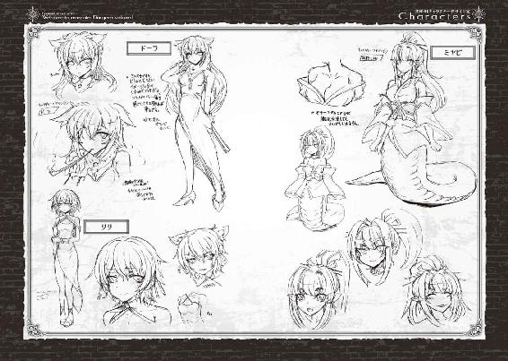

| 人食いダンジョンへようこそ！2 人食いダンジョンへようこそ！シリーズ (ビギニングノベルズ) | |
| 一年新 | |
| (2015) | |
※本作品の全部あるいは一部を無断で複製・転載・配信・送信したり、ホームページ上に転載することを禁止します。本作品の内容を無断で改変、改ざん等行うことも禁止します。また、有償・無償にかかわらず本作品を第三者に譲渡することはできません。
※本作品は電子書籍配信用に再編集しております。
怒っているとは思うし、それを咎めるつもりもない。君からしてみれば当然のことだ。
僕自身は他人を責めることができるような聖人君子ではないし、この状況に君を陥れた片棒を担いでいることは認めよう。ただ、黒幕かと言われると、そうではないとだけは言っておくよ。それに、もうわかっているとは思うけれど、僕以外にも君を追いつめようとしていた勢力があったことはわかっているだろう？
そうだ、君は既に追われる身だった。君が逃亡者になったときからなのか、この都市に来てからなのかは、僕にはわからないけれど。他の連中......ある程度予想はできるけど、彼らの狙いが何かまではわからない。案外、君を捕まえて、剣闘士にしようと思っているのかもしれない。まぁ、この都市には闘技場なんかないんだけどね。
僕が何者かだって？
......ああ、もうわかっているんだね、勘がいい。ああ、君の予想通りさ。鉱山村の住人を皆殺しにし、魔物の住む地獄に変えたといわれるあの「人食いダンジョン」の魔物というのは、つまり僕のことだ。
とはいっても、伝説には尾ひれがつきものだし、僕はもともとあの村で生まれ育ったんだ。皆殺しにしたのは僕じゃないし、むしろ殺されかかったんだけど......そんなことを言っても、信じてもらえるわけもないだろう？
君だって、それはわかっているんじゃないかな？
僕たちの人生は、自分で決められないことのほうが多い。本当に、色々な運命とかいうものや、誰かの都合に振り回されてばっかりだ。もちろん、自分が他人の人生を振り回すことだってあるから、それは仕方ないことなんだとは思う。
誰も好きこのんでこんなことになったわけではない......というのは、おそらくは僕よりも君のほうが言いたい台詞だと思うけれどね。
僕は君を脅迫している、あるいは、脅迫できる立場から交渉を持ちかけている。そんなことは百も承知だし、正規の方法で話を持ちかけても君は相手にしてくれないことはわかっていた。だけど、それでは僕の依頼人は満足してはくれないからね。
......予想がついたみたいだね、僕に依頼した者が誰なのか。
ああ、僕だって驚いた。一度はまともな大人のふりをして、やめるように諭したことだってあるんだよ？ 結果は、ごらんの通りだけれど。
君は隠している。社会も、自分も認めることがない欲望を。君はなかったことにしようとしている、あってはならないことだと。既にあの日から、導火線に火がついてしまっているのに。
僕は魔物だ。きっかけは何であれ、自分の欲望のために人間の世界の倫理を無視することを選んだ魔物だ。だから、君に罪を犯すように勧めている。僕にだってわかる、君が心の奥底で望んでいるこれは、間違いなく世間では罪と言われるだろうことだ。
だからどうした。君はそれを望んでいるし、それを隠そうとして、なかったことにしようとして、あんなにも苦労していたじゃないか。耐えていたじゃないか？
......耐える必要なんて、どこにもないっていうのに。
さぁ、改めて聞こう。
この世の中はきれいじゃない。この水門都市エブラムにも、表の顔も、裏の顔もある。コインの裏と表にはずいぶんと違う絵が描いてある。それに、この街は蜘蛛の巣みたいなものさ。遠くから見ればきれいだけれど、どこもかしこも獲物を狙う罠ばかりだ。
君は既に蜘蛛の巣に捕らえられた虫のようなものだ。僕の提案は蜘蛛の毒で、人の道をはずれた魔物の道への案内状だ。断ることはできるかもしれないが、僕以外の追跡者が僕よりまともという保証はどこにもないし......あの子は、僕が押さえていることは忘れないでくれ。
恨むなら僕を恨め、あるいは自分の運命とか、神を恨むのもいいだろう。だからといって、事態は何も変わらないけれどね。
これから先の選択肢は、食われるか、君も蜘蛛の仲間になるか。
僕が提示できるのは、この二つしかない。
あまり悩む時間はない。僕も、僕の依頼人も、君を逃がす気は毛頭ない。だから、こう言わせてもらうよ、剣闘士。
......ようこそ、蜘蛛の巣の街へ！
日没の鐘が鳴り、水門都市エブラムの各方向にある陸の門が閉まってから、歓楽街には改めて灯がともる。
この国の辺境に位置する都市としては有数に大きいエブラムの街は、都市内の固定人口二万を超え、近隣の町や村の住人やら、通過していく隊商や一時的に住み着いている職人やらを加えれば五万近い住人を抱えている。それゆえに、この大都市でしか保てない類の職業が多く存在する。
その一つが、専業の娼婦や男娼であり、専門の風俗店街だ。
大きめの町に行けば、酒場兼宿屋の一角に数人の娼婦が陣取っていることはさほど珍しくない。しかし、それが組織化され、複数の建物で専門的に営業するとなると、並の大きさの町では維持することも難しいだろう。そういう場所では、旅芸人の一座や旅の吟遊詩人たちがそのような役割を請け負って路銀を稼ぐこともある。
※ ※
エブラムは水運の街であり、街中には縦横無尽に大小の水路が走っている。歓楽街近辺では、エブラム伯の援助もあり、船を係留する桟橋のないところに柵やベンチを作り、ランプを設置することが推奨されている。
そのため、もともと常夜灯を設置することが義務付けられている桟橋以外でも、夜であってもある程度は道が見えるようになっている。それだけ、酔って水路に落ち、命を失う者が多いのだろう。ただし、このエブラムでも、桟橋と同程度の密度で街路に灯がともされているのは大通りと広場くらいだ。都市であっても、夜は暗いものなのだ。
※ ※
歓楽街のはずれにある倉庫から、一人の女が通りに顔を出す。腰まである、一本にまとめて編み上げられた髪の毛が動きに合わせて揺れる。女は南方系の血を引いているのか、やや褐色の強い肌色をしていた。目は細く、何が楽しいのか、口元はにんまりと笑っているのがわかる。
灯りがあっても、酒場の前以外は薄暗い路地を迷うことなく抜け、普通の通りへと移る。女の目線が、進行方向先のベンチで止まる。そこに、一人の女が座っていた。
※ ※
通常であれば既に家の中で夜の祈りを捧げているか、酒場で飲んだくれているような時間だ。飲みすぎて酔いを醒ましているようにも見えない。ベンチに座っている女の影が、一瞬巨大な化け物のように見え、褐色の女は一瞬だけ息を呑む。その表情が柔らかくなったのは、ベンチの人影が立ち上がり、見覚えのあるハンドサインを出したからだ。
※ ※
「ナんだ、ディアナじゃないノ。戻っていたなら、早く言ってくれればよかったノに」
南方の訛りが残る言葉で、褐色の女は声をかける。ベンチから立ち上がった女......ディアナは軽く手を上げ、気さくに答える。
「そう言わないでよ、チャナ。こっちだって大変だったのよ。ついさっき滑り込みで入ってきたんだから、さ。予定が少し変わって、一日遅れになったわ」
チャナと呼ばれた褐色の女と、ディアナと呼ばれたショートヘアの女は共に、この水門都市エブラムに巣食う暗殺ギルドに所属する下級幹部だ。様々な汚れ仕事を請け負う裏家業......これも、大都市ではないと維持できない特殊な職業といえるだろう。
「ディアナ、ちょうど今日ノ昼に軍ノ伝令が来たって聞いたわヨ。アナタのやってたアレ、うまくいったみたいネ？」
見知った仲間のところまで近寄り、声を潜めて話を続ける。流石に、誰が聞いているともわからないのだ。声も潜めるだろう。
「まぁ、トラブルがなかったわけじゃないけどね。あたしとしては、時間はかかったけど満足できる結果になった。......報告は明日でいいから、今日はあんたと喋って飲もうかと思ってね」
頭目が変わる前から、二人は組んでいた。未だに、組織内での役割は違えど、一番近い存在だろう。
「あら、嬉しいこと言うネ？ ちょうど、新しい子を調整してるところなノよ。せっかくだから、味見していく？」
チャナの言葉に、ディアナは苦笑いで返す。ディアナの耳に小さなピアスが飾られているが、暗闇の中、チャナは気づかない。
「あんたの趣味は癖があるからねぇ......まぁ、せっかくだから、楽しませてもらおうかしら？」
二人の女が連れ立って道を進む。その姿が闇の奥に消えてからしばらくして、一台の馬車が後を追うように進んでいく。
※ ※
歓楽街からはずれ、商人たちが使う住宅街と倉庫街の中間辺りにある小さな家屋に、チャナの隠れ家があった。地上階はただの倉庫兼住居、ワインをしまう半地下の倉庫の奥にある隠し扉を抜け、階段を下りていくと......土と水、そしてあふれるほどの草木の緑の香りが充満している広い部屋にたどり着いた。
「チャナ、あんたの薬草畑、また拡張したの？」
「そう。珍しいのが......今度は菌糸が手に入ってネ？これがおもしろい特質持っててサ。スライムって知ってるよネ......」
チャナは暗殺ギルド内の薬と毒の管理を一手に引き受けている薬草師だ。もっとも、組織内でのあだ名は「毒使い」。暗殺ギルドで使っている毒などの薬品は、チャナが育て、作り出したものがほとんどだ。
「詳しいことはわからないから、いいよ。それにしても、あの抗毒剤は本当に効果があったわ」
ディアナの言葉に、菌糸の説明を始めようとしていたチャナはにやりと笑う。
「無駄に済んだら一番だったけど、効果が実証できたのも嬉しいネ。で、どうだったノ？ 噂のダンジョンマスターとやらは」
「いい男だったわよ？ あのくそ女たちから乗り換えたくなるくらい」
その言葉の裏にある事実は、まだディアナしか知らない。上司に対するただの愚痴と受け取ったのか、チャナは苦笑して言葉を返す。
「ここは平気だろうけど、誰かに告げ口されたら怖いヨ？ 特に、蛇姫サマは蜘蛛姫サマが居ないと荒れやすいからネ。......さて、改めて、紹介するヨ。ハリー、フレッド。ご主人サマとお客サマにおもてなしをするんだヨ」
柱の脇にあるレバーを操作し、チャナは奥の部屋に声をかける。鍵がはずされる金属質の音が響き、しばらくするとジャリジャリと鎖を引きずる音がする。しばらくして現れたのは、まだ顔に幼さの残る二人の少年。それぞれが小さなバスケットに一人分の水差しとコップ、そして小さな酒瓶を入れて持ってきている。
※ ※
一人はこの地方の生まれらしく、白い肌にこげ茶色の髪。元は凛々しかったであろう整った顔立ちは、我慢できない何かに耐えるように震えている。もう一人は南方の少数民族に聞くような、黒檀のような黒い肌に、灰色の髪。気弱そうで、少女のようにも見える顔立ちは、もう一人の少年同様に震えている。
二人の少年は、革の首輪に金属の鎖がつながれ、両手には革の長手袋、両足にも同様の、膝まで覆う革の靴下を身につけている。それぞれの肌の色と逆に、白い少年には黒の、褐色の少年には白の衣装だ。そして、衣服はそれだけで、胴体は裸体をむき出しにしている。
何らかの薬品を使われているのか、歳相応の皮を被った小柄なペニスはこのような状態でも屹立している。
「白い肌のちょっと強気なのがハリー、黒い肌の内気な子がフレッドだヨ。ちょっと前に手に入れて、今日でそろそろ一週間くらいかナ？」
楽しそうにチャナが説明する。その瞳には欲情の火が灯り、細い舌がぺろりと下唇を舐める。
「あんたの趣味も、来るところまで来た感じね。で、なんでこの子たち、尻尾を生やしてるの？」
バスケットを受け取りながらディアナが指し示した先は、少年たちの小さな尻。そこには、肛門に差し込まれた尻尾状の飾りが垂れ下がっていた。
「そうネ......ハリー、なんでそんな尻尾をつけてるか、お客サマに教えてあげて？」
チャナは自分のところにやってきた白い肌の少年のペニスをつまみながら、少年の耳元に囁く。
一週間の間に、様々な仕込みをされたのだろう。ハリーは一瞬戸惑い、顔を赤くし、屈辱に震えながらも小さな声で答える。
「......です」
しかし、その声は小さく、ディアナには届くかどうか程度の大きさだろう。密偵として訓練を積んでいるディアナはすべて聞き取ることはできたのだが、チャナが望んでいることを理解し、こう答える。
「ハリー、声が小さくて聞こえないわ？ フレッドといったかしら、君はどうなの？ 君もお尻に尻尾を生やしているけど......好きなの？」
褐色の肌のフレッドは、ハリーよりも我慢ができないのか、勃起したペニスをディアナの手に擦り付けるように腰が浮いてしまっている。既に、先走りの液体が漏れている......おそらくは、チャナとディアナがここに帰ってくる前から勃起は続いているのだろう。
「ハリー？ お客サマの質問に答えなきゃネ。さぁ、もっと大きな声で鳴いて？」
チャナがハリーのペニスをねじる。小さな悲鳴を上げ、歯を食いしばってからハリーと呼ばれる少年が答える。
「あっ......チャ、チャナ様に......僕のお尻の穴を、ずぽずぽしてもらうためです！ すげえ......すげぇきもちよくて、俺、女の子になったみたいで......」
「そうよねぇ、最初は反抗的だったけど。ハリーはもうアタシにお尻を責められて喜んじゃうヘンタイだものね」
チャナが嬉しそうに声をかける。ディアナは小さく、あきれたように肩をすくめる。
※ ※
ディアナの長年の相棒であるチャナには少年愛の性癖がある。それは彼女が親に暴行を受けていたらしいこともあって、成人男性に恐怖を持ってしまっているのが原因らしいのだが、そこは今更どうこう言うべきものではない。
暗殺ギルドの頭目であるアラクネによって、ディアナもチャナも愛玩動物として犯されたり、売春宿で客を取らされたりすることがあった。それはディアナにとっては、支配者の再確認であり、屈辱ではあるが苦痛ではなかった。しかし、成人男性を相手に客を取らされるのはチャナにとっては大きな苦痛であり、大きなストレスになっていたようだ。
組織内である程度の地位を得てからは、チャナはこのような小さな悪徳にふけるようになった。親に捨てられた浮浪児、買い取った奴隷、時にはさらってきた子供。
無力な男の子を調教し、性の対象とすることでしか、彼女は快感を得ることができないようだった。
※ ※
ディアナの身につけている装飾品を通じて、僕......付与魔術師にして、元人食いダンジョンの主であるエリオットは、薬草師チャナの隠れ家の中の状況を確認していた。......なんというか、性癖というのは色々だ。
「......あの子たち、可愛いですね、ご主人様ぁ」
そう言って一緒に水盤を覗き込んでいるのは、人犬にして盗賊のシロ。割と趣味が近いのか、尻尾がピコピコと振られている。
「......かわいい、とは思うけどさ。ああいう趣味ってどうなの？」
顔を背けているが、見てはいるのだろう。口を出してきたのは淫魔にして精霊を扱う魔術師のサラ。二人とも、僕の下僕にして眷属だ。
「いや、その......僕は同性を抱く趣味はないよ？」
確かに扇情的な状況ではあるし、二人の少年奴隷は結構顔立ちが整っている。かといって、同性であるという事実が心理的には大きく立ちはだかる。それに、今回の目的はディアナが寝返らせたいと言っていた薬草師であって、あの子たちは別だ。
「でも、あの二人、女の子みたいな顔つきですよぅ？ ご主人様が魔物にしてあげたらいいんじゃないですかぁ？」
「エリオット、あんたそもそも、あたしたちの......その、お尻を散々犯したくせに。男だって同じお尻の穴じゃない。何か違いがあるの？」
サラの言い分には一理あるような気がするが、それは大きく違いがあると言いたい。ただ、男の魔物を手に入れることについては、あってもいい気がしていた。
「......シロ、サラ。君たち、あの子たちとセックスしてみたい？」
※ ※
「ハリー、お前は男の子なノ？ 女の子なノ？ チンポ、アタシのおま○こに入れてズコズコしたいノ？それとも、チンポをお前の尻ま○こに入れられてズポズポされたいノ？」
おそらく、淫語を言い、言わせることで興奮を覚えるタイプなのだろう。チャナは細い指先で、勃起したままのハリーのペニスをもてあそんでいる。勃起が収まっていないのは、おそらく何かの薬物を使っているからだろう。
「じゃぁ、フレッド。君はあたしにご奉仕してもらおうかな。うまくできたら、あたしとヤラせてあげるわよ？」
ディアナはそう言うと姿勢を変えた。少し視点が低くなる。おそらく座っているソファの上で腰を落として、大きく股間を開いたのだろう。フレッドと呼ばれた少年が、ディアナの股間をまじまじと見つめて、幼い表情に欲情をたぎらせている。
「お客様、おちんちん......おちんちんが切ないです。出したい、出したいですっ！」
切羽詰まったフレッドの言葉に、チャナが小さく叱責する。
「フレッド、お客サマに何をお願いしてるノかな？アナタはご奉仕する奴隷なのに、なんでご奉仕させちゃうノ？」
「ひっ......ご、ごめんなさい、ごめんなさい！ 申し訳ありませんでした......」
一週間で体には絶対的な恐怖が刻まれているのか、勃起だけはそのままに褐色のフレッドが青ざめる。
「あぁ、怒っていないから大丈夫よ。......じゃぁ、口でしてもらえる？」
フレッドはすぐさま膝をつき、ディアナの股間に顔を埋める。子犬がミルクを舐めるような、ぺチャぺチャという音が聞こえだす。
「あら、結構うまいわね......」
その様子を見て、チャナが満足そうに声をかける。
「一週間かけて、ゼロから仕込んだからネ。結構いいでショ？」
それだけ言うと、顔を戻してハリーに再び声をかける。
「......で、返事はまだ？」
返事の許可をもらったハリーは、切なそうに腰を動かしながら、大きな声で叫ぶ。
「あっ......い、入れたいです！ チャナ様のおま○こに、チンポ入れて、ズコズコしたいですっ！」
「よく言えました。じゃぁ、いいヨ？ さっきから、アタシもべちょべちょなんだヨね。さぁ、ここにズコズコして......」
チャナが自らの股間を大きく広げ、両手で脚を抱えて持ち上げる。待ちきれないというように、ハリーは勃起したペニスを挿入しようとする。しかし、まだ慣れていないのだろう、うまくは入らず、何度かやり直してようやく成功する。
「あぁ......あぁ、ああぁ、あ......いいっ、チャナ様の中。すごくいいですぅ......」
チャナは決して大柄ではない、むしろ小柄なほうだが、それでも少年よりは体が大きい。小さな少年と大人の女性の性交は、まるで男が女の肉体に包み込まれるようにも見える。
※ ※
「ディアナ、悪いケど、フレッドを戻してもらえる？」
チャナは隣に座るディアナに声をかける。ディアナは悪友の意図を察すると、自分の股間に顔を埋める褐色の少年の頭をつかみ、引き離す。怪訝な表情でディアナを見上げるフレッドに、ディアナは命令を下す。
「あなたのご主人様の命令よ、フレッド。......あっちに合流して、あなたのすべきことをしなさい。やることは、わかってるかしら？」
もう、仕込まれているのだろう。フレッドが立ち上がり、勃起した小さなペニスを握り締める。ソファに座るチャナ、その正面で腰を振るハリー。そして、その後ろにフレッドが立つ。
チャナは両足で、ハリーの体をがっしりと押さえる。ハリーは何をされるのか理解したようで、一瞬だけもがく。
「フレッド、やめ、止めて......！」
「ハリー、君だってしたじゃないか......それに、ボク、もう我慢できない......入れたくて、入れたくて我慢できないんだ！」
フレッドがハリーの尻をつかみ、ハリーの尻穴から尻尾を引き抜く。既に薬液が染み渡っているのか、ディアナの鼻腔には腸液の臭いではなく、刺激性のある薬品の香りがわずかに感じられる。一、二度指で具合を確かめて問題ないと判断したのか、フレッドはためらいなくハリーの尻穴にペニスを突き込む。
「あがっ!? あっ、ああああ......」
苦痛と快楽の混合した何かに、ハリーが悲鳴を上げる。チャナはバスケットの中にあった小瓶から、紫色の液体を自分の口に含むと、ハリーに口づけてその液体を飲み込ませる。
「ハリー、フレッドに合わせて、腰を動かすんだヨ？君のオトコノコでアタシを気持ちよくして、お前のオンナノコでフレッドも気持ちよくしてあげるんだヨ？」
「うわぁあああ、あああ、あ、あああ、あああ！」
フレッドも、ハリーも、もうまともな言葉が出てきていない。異常な快楽に神経が焼きついてでもいるかのように、動物的なセックスに熱中している。
おそらく、長くはかからないだろう......こちらも、準備を始めよう。
※ ※
「......チャナ、あんたの趣味もずいぶん突き詰められてきたわねぇ」
絶頂のあと、精根尽き果てて倒れている少年二人を眺めながら、ディアナがつぶやく。
「そもそも、そんなお子様ので満足できてるの？」
「大人の男なんて、ガサツで大きくて痛いだけだヨ。アタシはこれが一番いいネ。何せ、逆らわないし、サ。......最初さえ押さえ込めば、薬を使って三日もあればこんな感じにはできるヨ。女にも使えるし、大人だってまぁ一週間かければ大体壊せるからネ。......あ、そういや、ディアナにも楽しませようと思ってたノに、寝かせちゃった。ごめんネ、あとで起こしてまたしようヨ？」
音からすると、チャナは濡らしたタオルで自分と少年たちの体をぬぐっているようだ。ディアナのピアスから、小さい音で僕の意志を伝える。声は聞き取られてしまうから、音だけなのだが。それでもディアナは、僕からの許可が出たことをすぐに理解して、本題に切り込む。
「その力、もっと自由に使いたいと思ったことはない？」
意図を測りかねているのだろう。ディアナの一言にチャナは質問で返す。
「......どういうことカナ？ 今の状況には決して満足しているとは言えないケド、ディアナは何をしたいノ？」
「あたしね、今日はあんたをスカウトしに来たんだ。あんただって、今の頭目に心から従っているわけじゃないだろう？」
聞こえてくる音が消えた。チャナが明らかに警戒している。
「ディアナ......あっちで、何かあったノ？ あいつらに、勝てるとでも思ってるノ？」
「......まぁ、そうよね。あたしも最初はそうだった。だから......」
空気を切る音、ガラスの割れる音、小さな悲鳴。そのころになって、ようやく僕は地下の薬草畑にたどり着いた。さぁ、対面だ。
※ ※
ディアナの残した仕掛けをたどって、薬草畑に入る。鳴子などのトラップは既にディアナが解除済みだが、念のためシロにチェックはしてもらっていた。
ディアナは蜘蛛の異形を一部分表に出して、チャナを押さえつけていた。両手は既に糸で搦め捕られ、両足は押さえつけられている。音を聞きつけて二人の少年奴隷が目を覚ますが、シロが手早く押さえつけて縛り上げてしまう。支配されることに慣れきってしまった少年たちは、騒ぐこともせずに従った。
「チャナ。改めて紹介するわ。鉱山村のダンジョンマスターであり、今のあたしの主人であり......あの蜘蛛女を殺し、あたしにこの力をくれたお方。できれば、あなたもあたしと一緒に来てほしいの」
チャナは顔を向けて、こっちを見る。残念ながら、僕の顔は見えないようにしてある......仲間になるまでは、できるだけ自分の顔を明かしたくない。
いや、正確に言えばこれから先はできるだけ自分の正体につながる情報は外に出したくない。とはいえ、全身に染料を塗って肌色を変えるなんていうのも面倒だ。だから、仮面をつけることにした。
祭りで使うような、羽根飾りの付いた道化の面だ。ただし、色を塗ったりする時間も無かったので顔の部分は真っ白。......まぁ、壊れやすいものだし、手を抜けるところは抜いておきたいというのも事実だ。
「ディアナから話は聞いているよ、チャナ。......君の作った解毒剤は非常に効果的だった。危なく、僕はディアナを逃がすところだった」
チャナはそれを聞くと、興味を持ったようだ。
「......それはどうもダヨ。名前は知らないけど、魔物サン。友好的になれるかどうかはわからないけどネ。できれば、どういう状態でどういう効果があったか聞かせてもらえるかナ？」
どうやら、自分の作った薬品の効果がどこまであったかに興味を惹かれているらしい。研究者というか、なんというか。まぁ、生きるために魔法の道具と付与魔術の研究をしている僕と近いところがあるかもしれないが、この娘のほうがより純粋だ。
「その辺はおいおい話すこともあるだろうね。僕は君の薬と毒の知識と技術に一定以上の敬意を持っている。それは嘘ではないよ。だからこそ、こうしてディアナの頼みもあって、君を誘いに来たんだ。......単刀直入に言おう。アラクネは死んだ。僕たちが殺した。ディアナはこちら側について、僕の力で、アラクネの能力を受け継がせることになった」
その言葉で、色々と理解したのだろう。ディアナが異形を見せた時点で、わかってはいたのだろうが、それでも、理解したくなかったのかもしれない。
「魔族......なのかナ？」
その声は強がっているが、震えていた。まぁ、無理もない。
「まぁ、半分は正解......としておこうか。とはいえ、アラクネのように個人で強いというわけではないよ。だからこそ、みんなの力を借りたいのさ。手段を選んでいられない程度に、ね。君に望むのは、僕の仕事に手を貸してほしいということだ。ディアナに聞いたけれども、君も今の頭目に好きで従っているわけではないんだろう？」
その言葉で、チャナの視線が泳ぐ。計算をしているのだろう。ならば、こちらが有利だという情報を提供してあげなければいけない。
「アラクネは死んだ。頭目は二人というから、残り一人。戦力は半分だ。残りの部下たちがどの程度残った頭目に従うかは、僕には完全にはわからないけれど......まぁ、君とディアナ以外をあらかじめ引き入れる気はない。少なくとも、今ならまだアラクネが死んだことは知られていないので、この機会を無駄にする気はないよ」
「......もしかして......」
「僕にはディアナという協力者が居る。そして、今の君は予想できているだろうけれど、遠征軍が無事で、暗殺は失敗して、アラクネが殺されたという情報はまだ君にしか知られていない。遠征軍が無事戻ったという伝令は、早ければ明後日の昼には届くだろう。だから、僕は明日には......暗殺ギルドを襲撃して、乗っ取るつもりだよ」
チャナは悩んでいる。おそらく、この薬草畑の中にはどこかに脱出ルートか、何らかの伝達方法があるのだろう。暗殺ギルドに恩を売るか、僕に付くか、どちらが望ましいのかまだ悩んでいるのだ。......ならば、予定通り押すとしよう。
※ ※
「ディアナ、君の望む通りにしよう」
その言葉を聞いて、ディアナが喜んで擦り寄ってくる。
「シロ、サラ。君たちも僕の眷属として覚えなければいけないことがある。そこの二人の少年を解放して。......二人とセックスをするんだ」
その言葉を聞いて、チャナとサラが同時に声を上げる。
「アタシの子たちをどうするのよ!?」
「は？ 一体何をさせるのよ!?」
......同時に言われても、聞き取れるとは思わないでほしい。
「まず、チャナ。別に君から永遠に奪い取るなんて気はさらさらない。ついでに、僕には子供だっていわれても、男を抱く趣味はない。これは、君に対して僕の力を見せるための宣伝みたいなものだと思ってほしい」
次にサラを呼び寄せ、抱きしめて唇を奪う。動きを止めて思考停止するサラに、改めて自分の考えを伝える。
「あと、サラ。シロと一緒に、さっき食い入るように見ていたろう？ 別に君が少年趣味の変態だと言いたいわけじゃないよ。......それに、君には特にこれを覚えてもらわないと困るんだ。僕の魔力を受けて、その上で魔法の知識があるのは君だけだ。たぶん、君のほうがシロよりもうまくやれるよ......僕と同じようにね」
※ ※
シロがすべての入り口の鍵を閉めなおし、トラップを仕掛けなおして戻ってくる。伝声管があったらしく、機能は止めてくれていたのはありがたい。少年たちはこれから何が始まるのかわからないようで、こちらを不安そうに見ている。
「あの......俺たち」
「これから、どうなるんでしょう......？」
おびえた子犬のような目だ。おそらく、持ち主が負けて、自分たちの主人が変わるのではないかと思っているのだろう。
「あぁ、大丈夫。君たちを痛めつける気はない。......結構強い媚薬を使われているみたいだね。まだ出し足りないのかい？」
少年たちのペニスは再び勃起していた。どうやら、かなり性欲を強化するような薬を盛られているようで、盛りっぱなしに近い。二人は恥ずかしそうに頷く。
「シロ、サラ。この二人とセックスしてあげるんだ。ハリーとフレッドといったね。このお姉さんたちに気持ちよくしてもらってくれ。少し体に模様を描くけれど、それ以外は自由。相手にある程度任せて。自分も、相手も気持ちよくなれるようにがんばるんだよ？」
※ ※
シロは無邪気に、サラは恥ずかしそうに衣服を脱ぐ。
僕の血と精液、それにサラの愛液も混ぜて作った染料を使い、床に簡易的な魔法陣を描く。染料の量に限界があるので、あまり大きなものは描けないが、まぁ十分だろう。
少年たちの体にも、魔力が伝達しやすいように紋様を描く。特に、背中から後頭部のあたりには念入りに。今回はある意味実験でもある。サラとアスタルテ、それに自分で研究してある程度アレンジを加えてあるが、果たしてどう作用するだろうか。
※ ※
チャナは現在縛られた状態で見学中。ディアナは、チャナに見せつけるように僕にしなだれかかってきた......まぁ、ご褒美くらいはあげていいだろう。
中途半端に元気になっていたペニスを出して、ディアナの前に突き出す。ディアナは嬉しそうに微笑むと、ためらうことなく咥える。
チャナは僕のペニスを見てヒッと小さく悲鳴を上げ、少年たちは興奮に当てられたのか、サラには褐色のフレッドが、シロには白い肌のハリーが近づいていく。そして、三組の男女が絡みだす。
「あぁっ......！ お姉さん、お姉さん、ぼくっ、ぼくもうでちゃう！」
「ちょっと、まだはやっ......。もう、仕方ないわねぇ......まだ硬いじゃない。ボク、まだできるの？」
褐色の肌のフレッドは、女の子のような整った顔を快楽に歪ませる。我慢できずに射精しながら、それでもサラの中に自身のペニスを突き込み続けようとする。
「まだ......まだ出し足りないよう。もっと。もっと出したいの......」
「......いいこと、ボク。慣れてないとは思うけど、もっとゆっくり......そう。できるだけ我慢して......」
サラは自分以上に性経験の少なそうなフレッドを相手に、ぎこちなくもリードをする。そうしながらも、相手の快感と自分の快感を測り、魔力の流れをつかもうとしているのだろう。
僕にはアスタルテ以外にも魔物を作り出せる配下が必要だったし、アスタルテと同じ淫魔であり、魔術師でもあるサラは最も有望な候補だ。
正常位でフレッドを迎え入れながら、自分でも腰を上げて快楽を搾り取ろうとしている。隠していた小さな羽根と尻尾が表に出て、尻尾がフレッドの脚に、尻に絡みつく。
「ふあっ？ こ、これ......」
「あぁ、気にしなくていいのよ。ボウヤ、さっきお友達のお尻におちんちんを入れるとき、自分でもされたって言ってたわね？」
「あっ......はい、チャナ......様に、めいれい、されて......」
「どっちが好きなの？ 男の子としてするのと、女の子としてされるのと」
「あっ、どっちも、どっちもですぅ！ おちんちんも、お、お尻も気持ちいいですぅ！」
「うふふ......可愛い。癖になる人が居るのも、ちょっとわかるわね」
少年を見つめる瞳は淫欲に濡れ、その姿はもういっぱしの淫魔だ。......まぁ、僕自身アスタルテとサラ以外のサキュバスには会ったことがないのだけれど。
※ ※
「うっ......や、やめて、激しいっ。でちゃう、オレ......っ！」
「うふふ、出していいんだよぉ～。ハリー君だっけ？ご主人様からいいって言われたから、シロのおま○この中にあったかいのをピュピュッて出しちゃっても。お口でも、お尻でもいいから......ね？」
少しナマイキそうなハリーは、シロにさっきから乗っかられたままだ。口調は男っぽくても、ハリーはどうやら受け身なようで、さっきからシロにリードされっぱなしだ。
シロが小柄と言っても、ハリーやフレッドに比べればまだ身体は大きい。僕に抱かれるまで、大人の男に無理やり慰み者にされてばかりいたシロは、力ずくで幼い少年を抱く経験に興奮しているようだ。
「ほら、君たちにはないでしょぉ？ おっぱい、触っても、つねっても、舐めてもいいんだよ？」
ハリーの両手をつかみ、自らの乳房にあてがう。少年が必死に腰を振りながら、シロの胸をこねくりまわそうとするが、大きめの乳房に対し、少年の手のひらはまだ小さく、つかみきれない肉があふれ出すような状態になった。
「ほらっ、ほらっ、どんどん出してぇ。もっと腰を振って！ お姉さんで、いっぱい気持ちよくなってね......？」
シロが自ら女性上位の体位で激しく腰を振る。珍しい体験に、シロの尻尾がパタパタと揺れる。声も出せないまま、ハリーがおそらく二回目の射精をシロの中に放つ。シロとハリーの結合部から、愛液に混じって白く濁った精液が漏れだす。
「あははっ、ご主人様ぁ。この子、まだ元気なままですぅ!?」
シロが体を倒し、ハリーの上に覆いかぶさる。舌と指先で薄い胸板......乳首を責める。少年が女の子のような悲鳴を上げる。
※ ※
「アタシの......アタシの玩具を取らないでヨ！ ひどいヨ、ディアナ。なんデこんなことするノ？」
蜘蛛糸で両腕を拘束されているチャナが、僕ではなくディアナに言葉をかける。ディアナはそれに答えず、椅子に座った僕のペニスを舌先でチロチロと舐め回し、奉仕を続ける。途中でようやく上目遣いに僕のほうを見たので、小さく頷いて答えるように促す。
「あぁん......もう、もうちょっとご奉仕したかったのに......チャナ、あなたが用心深いのは知ってるから、動けないようにしてたのよ。どうせ、殺されることはないだろうって考えているでしょ？ 基本は、そうよ？ だって、あたしがあなたをご主人様に推薦したんだもの。今、こうやっているのはあなたにご主人様の素晴しさを知ってもらうため。......あなた、こうでもしないと逃げそうだし」
「人を縛り付けて犯すナンて、今のギルドと変わらないじゃナイ？」
チャナの言い分は、この状況だと正直もっともだとは思う。それでも、僕がまだ何か言うべきときではないだろう。
「あら、そうでもないわよ？ 少なくとも、あたしは今自分の意思で抱かれたいと思っているし......あなたも、きっとそうなると信じてる」
それだけ言うと、一気に僕のペニスを喉の奥にまで呑み込み、頭を大きく振って奉仕を始める。呼吸も苦しいだろうに、それでもディアナは嬉しそうに見える。
ふと気がついて、右足を上げて、ディアナの股間をまさぐる。
「んぶっ......はぁん」
既に股間は愛液が漏れださんばかりになっていた。急に与えられた刺激に、ペニスが唇から飛び出し、ディアナの鼻先を叩く。
「ディアナ。お友達の前で這いつくばって、お尻を高く掲げてくれるかな？」
その言葉に、ディアナは返事をするのも惜しいというように従う。縛り付けられたチャナのほうを向いて、ディアナが頭を下ろし、尻を突き上げる。背中から生える蜘蛛の脚が伸びており、チャナの前で蜘蛛女が威嚇しているようにも見える。とはいえ、その顔は淫らな被虐の喜びに満ちている。
「ディ......ディア、ナ......？ その体......それよりも、その顔......」
チャナが震えているのは、ディアナの背から伸びた蜘蛛の脚になのか、それとも付き合いの長い友人の隠された性癖を見たからなのか。
「チャナ、これが、あたしがもらったもの......。ご主人様ぁ......ご主人さまぁ、ディアナを、ディアナを犯してぇ......」
無言で立ち上がり、掲げられた、小ぶりで引き締まった尻肉に平手を打ちつける。パァンと小気味よい音がして、ディアナが小さく悲鳴を上げる。
「ディアナ。悪い子だね......友達の前で、こんなことをして。説得をまじめにやらなかったのも、そこに居るチャナに見てもらいたかったの？ 自分は犯され、魔物に変えられ、それでもこんなに喜んでしまうマゾですって知られたかったの？」
「う、嘘でショ......？ ディアナ、が......マゾ......!?」
チャナが信じられないというようにつぶやく。部屋の中で抱き合っているハリーとシロ、フレッドとサラが音に驚き、動きを止める。
「すげぇ......あんなのもあるんだ」
「あはっ、なら、君もやってみる......？」
「あのお姉さん、叩かれて喜んでる......」
「あいつは、そういう奴なのよ......ボクもそうなの？」
二組の男女の周囲には、何発も放出された精液が水溜まりを作っており、シロとサラの股間は既に精液で泡立っている。
ゆっくりと時間を置いて、二発、三発とディアナの尻にスパンキングを与える。嬌声が響き、ぽたりぽたりと愛液が床に垂れる。
「はや......く......早く、ご主人様のチンポ......ぶち込んで、ぶち込んでくださいぃ......」
「......いいだろう。でも、なんでディアナが僕に命令するんだい？ 君は僕の奴隷になりたいって言ったよね。そんな奴隷には、お仕置きを与えないと」
もちろん、怒っているわけはない。ただ、ディアナはそうしたほうが喜ぶのだ。ゆっくりとペニスをあてがい、一気にディアナを貫く。
「おごぉっ......」
空気が抜けるような声を上げて、ディアナの股間から温かい液体が床に流れ出す。どうやら快楽とショックで失禁したようだ。
「いいっ、素敵です、ご主人様ぁ！ 残酷で、ひどくて......素敵」
ディアナのショートヘアを強く握り、無理やり体を起こさせる。縛り付けられたチャナの前で、立ち上がった状態で背後から僕に犯されている。
チャナは目をふさぐにもふさぎきれず、ちょうど自分の目線のあたりで出し入れを繰り返す腰の動きを見続ける羽目になっている。
「うそ......大人のガ......ディアナの、......ニ......」
つかんだ頭を無理やりこちら側に向けさせ、強引にディアナの唇を奪う。犯されながら、ディアナは積極的に舌を絡め、小さな唇で精一杯僕の唇を覆い隠そうとする。
そんな状態にありながら、僕は背後で進んでいる少年たちのセックスの中で、シロとサラから僕の魔力が少年たちにしみ込んでいくのを感じていた。あちらも、どうやら絶頂に達しそうだ。こちらが射精するころにタイミングを合わせられれば、まとめて魔物にすることもできるというのが、サラと僕の予想だ。何度かやっていくうちに、タイミングを合わせなくてもできるようになるのではないかと思うのだが......まだ、そこまでは僕の技術が追い付いていない。
「あっ、あっ......ごめんなさい、ごめんなさい......ああっ!!」
その瞬間、ディアナが全身を硬直させて一人絶頂に達する。しまった、注意が外に向いていた分、ディアナの状態を確認できていなかった。
「あっ、でるっ、お姉さん、オレ、オレ......っ!!」
「でます、またでちゃいます、おちんちんからどぴゅどぴゅってぇ！」
数秒置いて、少年たちが耐えきれずに射精し、シロとサラも絶頂に達した。チャナを萎縮させているのはいいとして、魔物化の連鎖実験は中途半端な結果に終わってしまった。
※ ※
「うわ......からだが、体が熱い......！」
サラは見事に自分を抱いていたフレッドを魔物へと導くことができたようだ。びくびくと震えるフレッドの腰には薄い獣毛が生え、膝が逆方向に曲がり、素足には蹄が浮き上がる。さらさらの髪の毛に、ねじれた山羊のような角が......年相応の小さな角だが......生えてくる。
「......サテュロス、か。中途半端な変身のようだから、あとで魔力の調節を覚えれば人間の中で生きていけるかな？」
そんなことを考えていると、シロが焦った様子で声をかけてきた。
「ご主人様、この子、なんか状態が......!?」
振り返ると、ハリーが苦しそうにうめいている。近づいて、魔力の流れに目を凝らす。
......あぁ、この前の自分と同じだ。魔力が中途半端に流れ、かといって魔物になりきれない状態で体内で暴れているのだ。僕が射精する前にディアナが絶頂してしまったので、魔力操作ができないシロと抱き合っていたハリーには魔物になるきっかけを与えられなかったのだ。
「まずいな、もう一度理性を飛ばすスイッチを入れてあげないと」
「でもでも、ご主人様ぁ。この子もう何回も何回も出して、今はしおれちゃってますぅ......」
......困った、あまり状態がよくない。僕は今のところ、相手が性的な絶頂を感じたときに精神のタガをはずし、そこで魂を蹂躙する......魔物になるスイッチを入れる方法しか知らない。もう一つあるにはあるが、いくらなんでもこの少年を死なせて、ゾンビを作るのはあまりにもむごい。
「あ......お姉さん、お兄さん......おれ、オレ......からだが、体が熱いよぅ......」
熱っぽく潤んだ瞳で、ハリーは泣きそうな声を上げる。
「ご主人様、まだ出してないですよね？」
「......えっ？」
「この子、そっちのほうも慣れてるみたいだし。ご主人様のおちんちんで、この子を女の子として犯してあげたらいいと思うんですぅ」
「あぁ、そういうことか......って、ええ!?」
......くそ、こんなことになるとは思わなかった。さっき射精しそこなったせいで、中途半端に勃ちっぱなしになっているペニスをシロの顔の前に突きつける。シロが四つんばいになって僕のペニスに奉仕を始めると、条件反射なのか、シロの体の下で仰向けになっていたハリーも一緒に舌を伸ばし、僕のペニスに奉仕を始める。
......男子の娼婦がいて、一定の需要があるとは聞いていたが、女性が買うものだけなのだと思っていた。しかし、この子は、明らかに男に買われることも想定して調教されている。もしかしたら、この男っぽい口調も客の好みに合わせるように、あえてそうさせられているのだろうか？
思考が混乱する。
子供といえど、シロが一緒といえど、男にペニスを舐められるのは奇妙なものだ。
奇妙な嫌悪感と罪悪感と興奮が混じり、ペニスはすぐに力を取り戻した。......果たして、僕は大丈夫なんだろうか？
混乱しているとはいえ、やらなければいけないことはわかる。あまり長い時間放置しても仕方ない。シロとハリーの後ろに回ると、二人の結合部を覗き込む。
ハリーのペニスは既に力を失い、シロから零れ落ちている。......シロの愛液を掬い取り、ハリーの尻穴にもみこむ。
やはり、何度も使われていたのだろう。僕の指は抵抗なく吸い込まれ、きゅっと締め付けられる。
「あっ......オレ......ぼく......あのっ......熱い......」
最初の強気な様子は一瞬で溶けてしまい、媚を含んだ弱々しい口調に変わる。
最初にチャナに使われたときも同じようだったし、あえて男っぽい口調を使うように指示されていたのだろうか？
シロに上に乗られているためにこちらを向くとまではいかないものの、ハリーは不安そうな潤んだ瞳で僕の動きを追おうとする。......おそらくは、性奴隷として訓練されたのだろう媚びた動きは、本人が意図していなくても興奮を誘うだろう。
僕自身の偏見もあるかもしれないが、僕に男を抱く趣味はない。とはいえ、それ以外に、助ける方法が思いつかないのだ......はぁ、この子が女の子だったらなあ。
まずは、四つんばい状態でハリーを押さえつけているシロの膣にペニスを突き入れる。
「あっ......ご主人様の、きたのっ、いきなり大きいのぉ......！」
いつも以上に熱くなっているシロの膣内でしばらくその感触を楽しみ、愛液で濡れたペニスを抜き、狙いを定める。女性の尻を犯すことは何度もやっているのに、相手が少年だというだけでかなり気持ち的には抵抗がある。
とはいえ、放置すればこの少年は死んでしまいかねない。そうすれば、本目的であるチャナの感情が一気に冷め、敵対的になるだろう。それは避けたい。半ば自分を鼓舞するため、声を出して宣言する。
「ハリー、今から君を犯す。女の子みたいに、声を上げて感じてしまってもいい」
ハリーは驚いたように、わかっているはずの宣言をした僕に目を向けた。
「......オレ、女の子みたいに......？」
シロにのしかかられ、仰向けになった状態で体を固定されているハリーに挿入する。......愛液やチャナが使わせていた潤滑剤があっても、入り口がかなりきつい。だが、チャナによる調教のおかげか、入り口さえ越えてしまえばあとは滑らかに挿入することができた。
「ふあぁああっ......オレ......男なのに......こんな......」
ハリーの困惑した声が聞こえる。自意識は男、快感は女（と、ハリーには思えるものなのだろう）。そのアンバランスに精神が揺れている。おそらく、最初からこうではなかったはずだ。チャナの調教の成果に、僕はただ乗りしているにすぎない。
......そう考えながら、ふと思いついたことがある。案外、できるのではないだろうか。ハリーの言い分や希望も聞くべきだったのかもしれないが、気がついたら思いついたことを試し始めていた。
「君は男でも女でも、どっちでもいい。女の子になりたいなら、女の子になってしまえばいい」
ペニスに意識を集中し、ハリーの中にある僕の魔力の流れをつかむ。行き場を失って、出口を探してハリーの体内で暴れている魔力に方向性を与え、制御し、僕の考えたことを組み込んでいく。今までは無意識のうちに。今回は、意識して相手の存在を書き換える。
......おそらくは、相手の思考さえも。
「さぁ、君の望みを教えよう。君は、女の子になりたかったんだろう？」
......あぁ、わかった。これだ。これが、相手を調律するということか。
僕は今、自分の都合でハリーという少年の存在自体を書き換えようとしている。もともと、ハリーにそんな望みはなかったのかもしれない。奴隷として調教され、嫌々身につけた習慣でしかなかったのかもしれない。
しかし、それを本人の望みなのだと決めつけ、その通りに精神も、肉体も書き換えることが、今の僕にはできる。すべて変えてしまうことはできないまでも、方向付けて、そっち側に調整することができる。まるで、ピアノの音程を自分好みに調律するかのように。
「あっ......胸が、お尻が......オレ、オレ変だよっ、何か来た、きたっ。怖い、怖いよぅ!?」
「ハリー、安心して。ご主人様がきっと気持ちよくしてくれるの。何も怖くないから、受け止めて」
快感と魔力の蹂躙によって、自分の体が変化する恐怖にハリーが泣きだす。シロはその詳細はわからないまでも、ハリーの涙を舐め取る。ハリーのペニスが力を取り戻し、ピンと起き上がったので、無造作につかみシロの膣にあてがう。
「シロ、ハリーの男の子も相手してやるんだ」
「あははっ、ボク、こっちも元気になったんだ♪」
「ふあああぁぁぁ、わかんない、わかんないよ！ どっちも、どっちも気持ちいいよぅ!?」
ハリーの嬌声をどこか遠くで聞きながら、僕はイメージする。
体内に、存在しない臓器を。体表に、存在しない器官を。魔力を操り、形を思い浮かべる。そうあるように、作り替え、固定する。
「なんか、なんか来る！ 来る！ 怖いよ、怖いよぅ、あぁっ、あああぁぁぁぁ」
自分の体が変化していることが理解できているのだろう、快感と未知の感覚への恐怖で理性のタガがはずれたのか、ハリーはシロに抱きついて泣きだしてしまう。
「大丈夫......止めちゃうの。人間を止めて、エッチな魔物になっちゃうの。あたしと同じように、ご主人様のメスに......あっと、キミは男の子だけど......ご主人様の、魔物になるの」
シロが囁いた言葉は、図らずも正解を言い当てている。僕が狙っているのは、それだ。縦に並んだハリーとシロの尻に交互にペニスを差し込む。ハリーのペニスはシロのおま○こに差し込まれ、快感に動くこともできない状態で震えている。シロとハリーの快感が共鳴するかのように高まり、同時に僕の限界も近づいてくる。
「行くよ、ハリー。さぁ、心も体も、混ざってしまうんだ......っ！」
「ふあぁっ!? あ、あっ、あああああああ！」
ドクンっ、ドクンと、大きく二回に分けて精液がハリーの腸内に叩きつけられる。同時に、ハリーのペニスもシロの膣内で射精したのを感じる。そして......
ゆっくり体を離し、ぐったりとしたハリーを観察する。少年的なショートカットや面差しはそのままだが、体つきが少し女性的になった。胸が少しだけ膨らみ、力なく垂れ下がったペニスの下に、新しい器官......女性の膣が生み出されている。
「エリオット......あんた、もしかしてその子を女に改造したの!?」
一息ついていたサラが目ざとくそこに気がつき、口を挟む。
「僕には同性愛の趣味はないからなぁ......できるかな、と思って少し調整してみた。完全に女にするまではいかなかったみたいだけど、女にもすることができた、と言うべきかな？ ほら、最初にサラのぺったんこの胸を少し大きくしてあげたろ？ あれの応用だよ」
「あぁ、あれならもうちょっと大きくしてくれても......って、何言わせるのよ!? ......ってことは、この子は......」
軽口を叩きつつも、サラはこのことが示す事実を理解しようとしている。
「自分でも、できるかどうかはわからなかった。でも、わかった。精神を強制的に書き換えることは、やはり難しい。ハリーみたいにもともとその傾向があったり、そういった調教を受けていたからこそ容易だったのは事実だけれど......僕は、相手の性別も変えることができるようになった。いや、いずれそうなるだろう」
※ ※
「ハリー......あ、あの。ご主人様......？」
先ほど無事にサテュロスとなった褐色のフレッドが、同じ境遇だった少年を心配している。僕が主人だということは本能的にわかるようで、僕に伺いを立ててくる。......あぁ、そうだ。あれが無事に動いたかどうか見ておこう。
ディアナにはチャナをもてなしておくように伝え、フレッドに向き直る。
「フレッド。君はこれから僕のために働いてもらう。人として姿を保つ術も教えるし、働いて給料をもらう生活も与えてあげる。その代わり、キミの人生は今からもう僕のものとなった。......それはもう、わかっているね？」
実際には、必ずしもそうとは言えないのだが、成り行きとはいえこれは契約だ。無理やり精神を支配することはできるけど、可能なら納得した上で僕の支配下についてほしいと思うのは僕のわがままだろう。
「......はい。ボクはご主人様の下僕です。どっちにせよ、チャナ様の玩具として生きる以外には道もなかったし。文句を言えるような立場じゃないし......」
奴隷根性が染み付いている、と文句を言うのは簡単だろう。しかし、僕は彼らがどんな人生を送ってきて、どうしてここに居るのかも知らない。一応精通している年齢で、農村部では立派な労働力になるとはいえ、まだまだ子供なのだ。そんな年齢で保護者も失い、奴隷として暮らしていたのであれば、きっとたいていはこうなるのだろう。
だからといって、彼らを物として扱ってよいわけではない。そんなことはわかっているけれど、僕は彼らを魔物にして、下僕にして、道具にしている。わかった上で行う悪事と、知らずに行う悪事、たちの悪いのはどちらなのだろうか。
「あぁ、そうだね。僕はできるだけ、優しい主人であるよう努力しよう。それでも、僕は魔物で悪党だ。僕に拾われたのが幸運なのか不幸なのかはわからないが、それだけはあきらめてくれ。......ハリーも今無事に魔物になった。キミとは違い、淫魔の変種......両性具有の淫魔になったよ。ハリーとは、仲がよかったの？」
フレッドにどこまで伝わるかはわからないが、説明だけはしておく。
「ハリーとは、同じ奴隷商人のところに買われて......ボク、こんな外見だから奴隷の中でもいじめられてたけど、ハリーは仲良くしてくれて......」
フレッドはそう言うと、ハリーを見る。その瞳は、隠しようのない欲情の光が見える。フレッドの股間で、ペニスが勢いよく立ち上がっていた。
「フレッド。ハリーは今男の子でもあり、女の子にもなった。もしかして、君はハリーを抱きたいのかい？」
その一言で、フレッドの顔色がさっと変わる。自分の欲望を自覚したのだ。ハリーもようやく意識を取り戻し、自分の体と、自分を欲望に満ちた目で見つめるフレッドの姿を見つける。
「あ......オレ、一体......この、これ......からだ......。フレッド......オレ、オレ一体......？」
「【憑依】。フレッド」
小さい声で、あらかじめ設定してあった起動呪文を唱える。自分の視界に、二重写しになるように同じような光景が映る。目を閉じると、自分の視界とは明らかに視点の位置が低い光景......フレッドが見ている映像が見える......よし。
「【憑依解除】。【憑依】。ハリー」
連続で切り替えができることを確認する。再び視点が切り替わり、目を閉じている自分自身と、ペニスをたぎらせたフレッドが見える。よし、ハリーの視界に切り替えることもできた。
※ ※
......これが、今回この少年二人を魔物に変えるときに仕込んだ機能だ。この二人の魔物は、自分自身でものを見て、考えて、行動することができる。しかし、ある条件の下では僕に視界を提供する......考えを読み込み、場合によっては短時間支配することもできるだろう。意識を集中して、ハリーの考えていること、感じ取っていることを......ん？ ......!?
下腹部に存在しない感覚を受けて、一瞬意識が乱れる。......そうだ、これがあった。しくじった。
サラやシロ、他の女たちにこの仕掛けを組み込んでいなかった理由はここだ。もちろん、魔物化するときに仕込むのが一番問題が起きにくいという理由もあるが、僕自身に存在しない器官の感覚を受け取ると、自分がその感覚情報を処理しきれなくなって、混乱してしまうのだ。今、ハリーから受け取ったのはハリーの膣と子宮......先ほど生み出してしまった、女性としての器官の発する感覚だ。とはいえ、この程度ならば慣れれば耐えられる。時間を見つけて、他の魔物たちにも仕込んでおこう。
「......っ！ 【憑依解除】」
呼吸を整え、見つめ合ったまま動けない少年二人に声をかける。
「フレッド。キミに最初の命令であり、最初のご褒美をあげよう。......ハリー、今君は、フレッドに抱かれたいと思ったね？」
「......えっ？」
「......なっ!?」
フレッドが疑問の。ハリーは驚きの声を上げる。そう、さっき受け取ったハリーの中の女性器の感覚情報は、おそらくは興奮。ハリーは今、女性としてフレッドに抱かれたいと思っているのだろう。
「ハリーは魔物になり、女性としての機能も持った。男でもあるけれど、女でもある。そして、今君のその勃起したペニスを見て女性としてのハリーは興奮している。......まぁ、今までの経験で君に抱かれたことも、君を抱いたこともあるんだから、わかっているんだろうね。改めて命令だ。フレッド、女の子としてのハリーを抱いて、処女を奪ってあげるんだ」
......それとも、悩んでいるなら僕が奪ってしまうけど、いいのかい？ と、悪戯っぽく付け加える。二人の少年......片方は女でもあるが......は困ったように見つめ合い、近づき、絡み合い始める。これで、あの二人は様々な意味で離れにくい存在になっただろう。
あの二人の人生はもうめちゃくちゃだし、それに止めを刺したのは間違いなく僕だ。奴隷の生活から救い上げ、これからは食料を、着る物を、そして仕事を与え、歪んではいても幸せな生活を与えよう。そうすれば、もう、二人をくっつけた僕からも離れることは難しいだろう。......裏切れない手駒ができたのは、喜ばしいことだ。自分の利益を考えないのであれば、この行き場を失った二人の少年奴隷を無傷で解放し、結果として路頭に迷わせるほうが正しかったのかもしれない。......果たして僕は悪人だろうか、善人だろうか。
悪党であろうとしているが、それがうまくいっているのかは、未だにわからない。自分が行っていることが善行だとはとても思えないが......さて、悩み事と寄り道は終了だ。いよいよ、今夜の本当の目的であるチャナを堕としにいくとしよう。
※ ※
「......待たせてすまないね。あの二人は、君と僕が友好的な関係を結ぶことができたら、君にお返しすることを約束しよう」
サラとシロは既に次の準備を行うため、外に戻っている。ディアナはチャナの衣服をすべて剥ぎ取り、糸でその肉体をデコレートするように縛り上げていた。肉付きの薄い褐色の肉体に、白い糸がコントラストを刻む。
「ホントかナ？ 暴力で勝てるやつってノは、たいてい口約束を暴力で踏み倒すからネ？」
チャナは震えながらも、気丈に答える。
「まぁ、暴力で踏み倒すこともできなくはないよ。実際に、君の上役であったアラクネの命を奪ったのは僕たちだからね。とはいえ、君を無理やり支配するつもりはあまりないんだ。無理強いして魔物にしても面倒なだけだし......最悪、心を壊してしまう。ディアナを魔物にするときだって、この子も、君の作った解毒剤も優秀だったからね......危なく命か精神を壊してしまうかと思った」
「......その割には、かなり気を使ってくれましたよね？ 拷問をされている最中に、体力の維持のために食事を取らされるなんて思ってもいなかった」
ディアナは笑って答える。まぁ、その腕は惜しかったからなぁ。
「なので、ディアナの推挙もあって、君をスカウトに来たのさ。君の腕を見込んでね......毒使いのチャナ」
「で、モし断っタら？」
チャナが聞く。まぁ、なかなか図太い。
「そうだね。あの子たちは僕が連れて帰ってしまう。そして......放置もできないし、殺す気もないけれど......君が僕と仲良くしてくれる気持ちになるまで......」
そのとき、ちょうどいいタイミングでシロとサラがオークリーダーを連れて帰ってくる。
「僕の部下であるあいつと、仲良くしてもらうかな？」
オークリーダーはこちらを見ると、チャナを見つけて興奮した声を上げる。
「ひっ......!? ま、魔物!? 街中に!?」
魔力からして他の女たちは僕の配下だとわかるので、オークリーダーは許可がない限り手を出せない。つまり、僕の配下の魔物ではなく、捕まっている状態のチャナは、オークリーダーの認識では犯していい獲物としか映らないだろう。
オークはもともと他種族のメスを襲って犯すことを好む傾向がある。食欲と性欲を満足させることができれば、その辺は容易に押さえ込めるタイプのものではあるが、久々にその欲求を満たすことができると思ったのか、オークリーダーのペニスがゆっくりといきり立つ。
「だから、ディアナの紹介にあったろう？ 僕は人食いダンジョンのダンジョンマスターなのさ。だから、魔物を連れている。さぁ、君はどっちがいい？ あのオークに無理やり仲良くさせられるか、進んで僕と仲良くするか」
糸のように細い目を、少しだけ大きく開き、焦ったようにチャナはつぶやく。
「あはは......これは、とんだ悪党だったネ。ディアナが惚れたのもわかる気がするヨ。降参、降参だから、オークに犯されるってのは勘弁してほしいナ」
「ああ、では契約成立だ」
指を鳴らし、オークを戻させる。オークリーダーは不満げにしているが、シロに慰めるよう指示をしておいた。外に出すのも手間なので、奥の部屋でシロがオークに奉仕を始める。
......人間だったころは、あれほどオークリーダーの素体になった男におびえていたのに、今では楽しそうに体を重ねることができている。シロは、魔物になってよかったのかもしれない。
同時に、サラがハリーとフレッドを連れて戻ってくる。黒いサテュロスのフレッドは誇らしげにハリーの手を引き、白いふたなりの淫魔となったハリーは、股間から破瓜の血を滴らせ、それでもペニスを興奮に半勃ちにしたままで、フレッドに手を引かれてやってくる。
「チャナ。君は今から、僕の配下となる。......では、今からあの子たちを返そう。今日から、僕の直属の部下であるあの子たちが、君の新しい支配者となるんだ。フレッド、ハリー。チャナは今日から君たちのものだ。......二人で、楽しませてあげるといい」
ディアナに指示して、拘束したままのチャナを糸で吊り上げ、立ち上がらせる。まだ小柄な二人が前後から犯しやすい高さで、両足を開いた体勢で固定する。
「え!? ちょっト？ 聞いてないヨ？ どういうこト!?」
チャナは狼狽し、慌てた声を上げる。旧友であるディアナは悪戯っぽく、答えを返す。
「あんた、子供を抱くの好きでしょ？ 子供のころ、大人たちに無理やりされたせいで、大人に抱かれるのが怖いのよね？ だから、あのオークじゃなくって、この子たちがあなたを抱いてくれるのよ。あとで、ご主人様にも抱いてもらうといいわよ？」
「あ、アタシはリードされるのは苦手なんだヨ。だから、これ離してくれないカナ？」
意外な答えだ。案外慣れていないのかもしれない。
「詳しい話はあとにしよう。チャナ、君が僕の配下になってくれたことを記念して、君を歓迎しよう。まずは、今魔物になったばかりの二人に抱かれるのを楽しんでほしい......いずれ、君も魔物になるんだから」
「え......あ、あのサ？ ハリー？ フレッド......？」
チャナがおびえた表情を見せる。自分が自由にできない状況で犯されるのは、本当に苦手のようだ。
「チャナ様......今まで、色々してくれたよね」
少女みたいな整った顔立ちなのに、オスとしての自信をつけたフレッドが一歩近寄る。
「チャナ......様。オレ、嫌だって言ったのに、お尻にいっぱいいっぱい、変な玩具を入れたり......」
少年っぽい顔に、気弱な表情を浮かべてハリーが近づく。まるで、フレッドに従っているようだ。
「二人とも。その子は今は君たちの部下だ。チャナ様って、言っちゃだめだよ。君たちの主人は僕で、チャナは僕と君たちの配下。......今までされたことを、お返ししてあげるといい」
チャナは交渉によって僕の部下になることを了解してくれた。それを、心の底から信用することができないのは僕の弱さだ。だから、チャナの心を少しだけ突き崩して、僕が支配できるようにする。そのために、彼女のプライドをいったん壊す必要があるのだ。
チャナの口から、ひっ、と小さい悲鳴が上がる。
「チャナ......今は、僕がチャナのご主人様だよ」
「今までされたことを......チャナ様......、チャナに、返す......？」
チャナが奴隷の主人として慈悲深い存在であったならば、きっと優しい愛撫が待っているのだろう。そうでなかった場合は......
※ ※
「もうやめてヨぉ......お願い、お願いヨぉ......」
宙吊りにされた状態で、毒使いのチャナは弱々しく悲鳴を上げる。
あれから、おおよそ一時間。何度も、何度も、恐ろしい声量の金切り声が響いた。ここが地下で、防音の効いた場所でなければ近くから衛兵が飛んできそうな叫び声だ。何度も何度も叫び声を上げたのは、チャナだ。
時折、血行が滞らないようディアナがチャナのマッサージに入る以外は、ハリーとフレッドの二人にすべてを任せた。もちろん、体の一部や命を失いかねないような行為に及ぼうとしたらすぐに止めるつもりだったのだが、そのようなことは一切起きなかった。少年たちは、一時間延々とチャナを焦らし続けたのだ。
乳房を舐め、乳首に、尻穴に、膣の周囲やクリトリスに媚薬を塗り、適度に責めてから......放置。ペニスを膣に突き込んだと思ったら、すぐに抜いてハリーとフレッドでじゃれ合う。口での奉仕を命じて、フェラチオを続けるチャナが興奮してきたら、そこで止めてしまう。前後からクンニリングスを仕掛けて、愛液が垂れてくるまで執拗に膣と尻穴を舐め続け、チャナの腰が跳ねだしたところを見計らって放置し、二人はチャナの目の前で見せつけるように互いに奉仕を始める。
両手を拘束され、両足は開脚した状態で宙吊りにされているチャナにはそこに混じることも、自分で慰めることも許されない。僕も子供だと思って油断していた。いや、子供だからこそなのかもしれないが......この子たちは、かなりえげつない。
※ ※
「ディアナぁ......おねがい、お願い。拘束を解いてヨ......イケない。イケないのヨぅ......。変になりそう、もうアタシ変になルぅ......」
もう、叫び声を上げる気力もないのかもしれない。ディアナは僕に抱かれながら、上目遣いに僕を見つめる。少年たちが、僕にチャナの目の前でディアナを抱くように頼んできたのだ。断る理由もないし、彼らの意図もわかったので、こちらも緩やかにディアナとの性交を楽しんでいる。
小声でディアナに囁く。ディアナはわざと大きめの声で返答を返す。
「チャナ、友達としては助けてあげたいのは山々なんだけどさ。アタシはご主人様の奴隷で、あなたはご主人様の奴隷であるその子たちの部下。あたしが命令はできないから、あなたのご主人様に頼むしかないんじゃないかしら？」
その言葉に、絶望したようにチャナは子供たちを見る。二人の小さな魔物は、楽しそうにかつての女主人を見る。
「お......おねがいヨぅ、ハリー......フレッド......いえ、ご主人サマ......イキたいの、イカせてほしいのヨぅ。こんな生殺し、耐えらンないのヨぅ......」
その声を聞いて、少年たちはとても嬉しそうに見えた。
「......どうしよう、フレッド？」
楽しそうに、ハリーが隣の少年に尋ねる。
「ご主人様、どうしますか？」
それに答えるように、フレッドが僕に聞いてくる。
「チャナを壊してはだめだよ。僕の大事な部下でもあるんだ。どこまでやったら壊れるかは、おそらく散々実地で試されただろうから......まぁ、その少し手前まで。君たちは、少しだけ優しい主人になってくれ」
チャナがこの子たちを壊れる寸前まで追い込んで、そこで止めていたのは容易に想像がつく。子供たちは加減がわからないかもしれないから、ある程度釘を刺しておく必要はあるが......あまり心配はないだろう。その言葉を聞き、ハリーがこちらに向かってこう言った。
「あの、ご主人様......オレ......と、フレッドで、色々したいから......隣の部屋で、少し休憩してもらっていていいですか？」
......まぁ、ディアナは同じような状況で半日以上責められていたから、そうそうチャナが壊れるとも思えない。長時間吊っておくのは流石にまずいので、両足の拘束を解く。
黒檀色のフレッド、褐色のチャナ、白い肌のハリーが、グラデーションを描くように重なり合う。既に、チャナの足元には失禁と愛液で小さな水溜まりができている。時々フレッドの視点から状況を見張ることにして、僕とディアナは隣の部屋に移動して休憩と食事を取ることにした。
隣の部屋から、悲鳴と嬌声が交互に聞こえだした。
※ ※
「......お待たせしました、ご主人様。準備できましたから、来てください」
フレッドが僕たちを呼びにきたのは、それからさらに一時間以上経過したあと。僕がディアナの膣内に二回目の射精をして、チャナの薬品棚を一通りチェックし終わるかどうかというころだった。
「ほら、チャナ。僕たちのご主人様に挨拶するんだ」
「チャナさ......い、いや、チャナ。い、いつもオレたちに言わせてたみたいに、おねだりだぞ？」
二人の小悪魔は、自分たちの部下を様々な玩具で飾り立てていた。
チャナは薬草畑の、土がむき出しになっているあたりに仰向けになり、こちらに向けて両足をＭの字に開いていた。両手は自ら尻肉を開き、見せつけるように濡れた股間を強調している。
顔の上半分を覆い隠す目隠しマスク。陶器でできた小型の注入器から、かすかに刺激性のある香りが漂う。おそらくは浣腸液の類だろう。チャナの下腹部はポコンと膨れ上がり、尻穴には羽飾り付きの詮が押し込まれていた。まるで、淫靡な生け花のようだ。
目隠しマスクの下では、あの細い目を見開いて涙を流しているのだろう。チャナの頬には涙が流れ落ち、乾いた跡がかすかに見える。口元はだらしなく小さく開き、涎が垂れ流されていた。
「ご......ごしゅじン......サマ......。チャナは......お子様チンポの奴隷で......大人チンポが怖い、臆病なメスです......けど、けどォ......ごしゅじんサマのごしゅじんサマなら、大人チンポでもいいでス......」
弱々しい声で、チャナが服従の言葉を述べる。ハリーが痛々しそうな顔を見せ、フレッドは嬉しそうにチャナの乳首を強めにつねる。
「ヒァっ!? ......痛いヨ、ごめんなサイ、ごめんなサイ。チャナ、何か間違えてまシた？」
完全に主従は逆転。フレッドは優しい声で間違いを指摘する。
「いいかい、チャナ。僕たちのご主人様に、なんで君が許可を出すの？ いいです、じゃないよね。ください、とおねだりをするんだよ？」
そう言うと、フレッドはこちらを見つめる。シロとよく似た、褒めてほしそうな子犬の目つきだ。......いや、この子はもしかしたら、猟犬かもしれない。
「フレッド、よくわかっているね。厳しくする必要はないけれど、僕のために考えて行動することができるのはとてもよい」
うまく育てれば、フレッドは優秀な使用人になるかもしれない。苛烈にならないようにこちらが注意する必要があるかもしれないが、その辺はよく考えておかないと。
「あぁ......。申し訳ありマせん......。大人チンポ、チャナに......子供チンポに興奮するヘンタイのチャナにぶち込んでくだサイ！」
チャナがついに懇願の声を上げる。その物の言い様に、僕は小さく笑って小声でサラに声をかける。
「ねえ、あの娘もサラと同じように、下品な言葉を使われると興奮するみたいだね」
シロとディアナはそれを聞いてクスリと笑い、サラはムッとした顔になる。
「あたしはその子みたいに糸みたいな目をしてないし、そんなヘンタイじゃないわよ！」
......自覚がないみたいだ。ちょっとお仕置きしておくべきかもしれない。
「へぇ、そうなんだ。同じヘンタイ同士、あとでサラにもいっぱい精液を注いであげようと思ったんだけど。ヘンタイじゃないならまた今度にしておこうかな？」
この言葉はてきめんに効いた。何せ、オリヴィアが戻ってきたらサラはエブラムの宮廷に行かなければならない。同じ街なので会えなくなることはないが、今まで通りすぐに僕に抱かれるというのは難しい。
「......わ、わかったわよ、認めるわよ！ あたしは......サラは、下品な言葉を投げつけられて興奮するヘンタイよ！ だから、だから、もっとエッチしてよぅ！この悪党！」
小さく笑うと、あとでね、と言い残してサラを放置。きっと、捨てられた子犬みたいな目をしていたことだろう。まだおねだりの言葉を言い続けているチャナに近づき、耳元で囁く。
「君に今から僕の精液を注ぐ。何度も君の小さなおま○こを貫いて、ぐちゃぐちゃにして、魔物の精液を注ぎ込む。いいね？」
「......くだサイ。チャナに、魔物ザーメン......くだサイ」
「チャナ、そうしたら君はどうなるかわかるかい？」
指先で、チャナのクリトリスを軽くもてあそびながら問いかける。僕のペニスはもう準備万端なのだが、一応確認だけはしておきたい。二人の仕込みは万全で、既にチャナの膣内は熱々に蕩けていた。
「どう......なっちゃウの......？」
「君も、魔物になるんだ。ディアナみたいに......ハリーや、フレッドみたいに。僕に忠実な、魔物に」
言い終わると同時に、ペニスをあてがい、一気に貫く。二時間も中途半端に焦らされていたチャナは、まるで吸い込むかのようにペニスを呑み込む。
「おっ......おおお、オおおおおオおお......っ!!」
一気に溜め込まれていた分が解き放たれたのか、チャナの体が小刻みに痙攣して一気に絶頂に持っていかれる。
「いや、怖い、大人の大きいのが、ナカに！ ナカにぃ......やなノぉ、大人チンポ怖い......うぅン、あぁ......」
恐怖に震えそうな体も、完全に発情してしまっているために、蕩けるほうが早かった。怖いという恐れの声はいつの間にか甘い響きを含み、腰がうねりだす。一番奥に届いたときに、ペニスの下部に何かが当たっているのがわかった。あぁ、もしかして......
「ご主人様。チャナ......の、おなかの中は、全部きれいにしてあります」
ハリーが、もじもじとしながら報告する。ということは、薬液だけかな？
「今、チャナのおなかの中は、チャナが育てていた特製のスライムが詰めてあるんです」
「......スライム!?」
フレッドの言葉に、驚きを隠せない。スライムは原始的な植物の一種で、湿地などに時折出現する。知性などはなく、触れたものに反応して呑み込む、ゲル状の食虫植物の一種......という認識しかない。大きく育ったものが、時折不幸な旅人や動物を飲み込んでしまうので、世間的には魔物のようなものと扱われている。
種類によるが、強酸性の液体を分泌して、肉を溶かしてしまうと聞いていたのだけれど......そういえば、アスタルテの話では魔物になる際にスライムにされた女もいたとか聞いたような気がする。
「もしかして、こういうことのために品種改良を？」
目隠しをしたままのチャナに問いかける。腰の動きは止めて、ペニスは先端部分を入れただけで焦らしておく。
「あっ......いや、やめテ、抜いテ、抜かなイで......」
「チャナ？ 僕が聞いているのはそれじゃないよ？」
指先を小さな口に入れ、口腔内をまさぐる。チャナの長い舌が指を舐め、奉仕を始める。指を抜き、頬をつかみ顔を少し持ち上げる。
「このまま、お尻の栓を抜いてしまおうか？」
その言葉は結構効いたようだ。チャナは焦ったように体をひねるが、逃げられるわけもない。
「さぁ、答えて。チャナ、君はお尻の中に何を入れているんだい？」
今更になって羞恥心が高まったのか、それとも別種の興奮か、チャナの頬が紅潮する。
「それハ......品種改良したウーズですぅ......菌糸類の一種デェ、スライムと同じようナ......酸は弱いケド、毒性を......もってテ......品種改良しテ、毒を抜いテ......媚薬と一緒に、入れるようにしたンです......あぁっ、あん。ご主人サマぁ、お願イでスぅ、怖いノ、もっと怖いノ欲しいノぉ......！」
「他にも、あるのかな？」
「ありマす、ありマスぅ......全部、あげまス......みんな、ご主人サマたちのモノですからぁ......」
......よし。それを聞くと、再びチャナの中にペニスを突き込み、何度も出し入れを繰り返す。
「あぁあぁあぁあああアアア......大人チンポ、いやァ......届くヨぅ、子供チンポだと、来れないトコまで来るゥ......」
チャナの身体は小柄で、別に大柄でもない自分でも、容易に持ち上げることができる。シロと比べても、少し小さい。だから、向かい合って正常位で挿入したまま、チャナを持ち上げて立ち上がってみた。
「ひ!?」
目隠しをされているチャナからすれば、何が起きたのか一瞬わからなかったのだろう。きゅんと締め付けが強くなり、細い両足が僕の腰を締め付けるように絡みつく。尻を自ら割り開いていた両腕も、落とされないよう僕の背中に回され、抱きつかれたような形になる。
まるで赤ん坊を抱いてあやすような状態で、チャナの自重によって腰は落ち、自動的にペニスによって奥まで貫かれる。
「ふ、深イぃ......!?」
首が反り、チャナの頭が仰向けになる。片方の手で、チャナの後頭部をつかみ、引き寄せて唇を奪う。最初は驚いていたようだが、すぐに舌を絡めてきた。しばらくの間、呼吸も忘れたように舌を絡め合う。気がつけば、僕のズボンがチャナの愛液でずいぶんと濡れてしまっていた。
「さぁ、チャナ。そろそろ絶頂が近いんだね？」
ペニスにたまった魔力が、ゆっくりとチャナの胎内にしみ込んでいく。鼓動が読み取れるようになり、絶頂の波が近づいているのがわかる。
「君の子宮に、精液をいっぱい注ぎ込んであげる。今の、淫らで無様な君が絶頂に達する瞬間を見てもらうんだ。みんなに......ね」
耳元でそう囁くと、目隠しを剥ぎ取る。
「!!」
周囲では、僕らを見て発情した観客たちがそれぞれにセックスを始めていた。サラが弱気になってしまったハリーを叱咤激励しながら自分を犯させ、犯されながらハリーの女性器を指で愛撫している。自ら四つんばいになり、高く尻を持ち上げて誘うディアナにフレッドが飛びつき、尻を押さえつけて後ろから犯している。シロは既に一戦終えたあとのようで、仰向けに寝かせたオークリーダーのペニスをハーモニカのように舐めしゃぶり、オークリーダーの舌による後戯を楽しんでいた。
女たちが、皆淫らに遊びながら、チャナのことを見ていた。突き刺さる視線を感じ、一気に全身に緊張が走った瞬間に、目隠し同様に、チャナの尻に刺さった鳥の尾羽の付いた栓を引き抜き......抜き取ると同時に、一気に精を解き放つ。密着した腹部越しに、精液が注ぎ込まれるのがかすかに感じられる。
「え......見てル、みんナ......に、みらレ......っ!?」
チャナの絶頂は、一呼吸タイミングをずらして訪れた。下腹部から腹部、胸へと痙攣にも似た震えが走り、言葉にならない叫びを上げながら、両手両足をぎゅっと締め付けてくる。我慢できなくなったのか、大きな音を立てて、チャナの尻穴から湯気を立ててウーズが噴出した。
「あ......ああア......あああア......むぐっ」
絶頂の叫びは、低い唸り声のような音だった。それをふさぐように唇を奪い、舌を吸い、甘噛みする。糸のように細かったチャナの目が大きく見開かれ、ゆっくりと情欲に濁り、蕩けていく。
力いっぱいしがみついていたチャナの全身からゆっくりと力が抜け、仰向けに倒れる。流石に地面が土の部分とはいえ、頭を打ってはまずい。まだペニスが突き刺さったままの腰を両手で押さえて、倒れるのは防ぐ。ハリーとフレッドが駆け寄ってきて、チャナの体を横たえる。
チャナの全身に、細かい震えが走る。まだ意識は戻っていないが、魔物化が始まったようだ。髪の毛や、指先に植物性の糸のような、小さな蔦のようなものが混じり始める。肩の先や、指の背の一部が樹皮のように硬くなる。下腹部の色素が抜け落ち、腰から下の肌が薄い黄褐色から、白に近くなる。
「......あぁ、なるほど。君の本性は、これか」
そこに生み出されたのは、アルラウネ。人の姿を持ち、叫び声で人を惑わせる、毒を持つ植物の魔物。少なくとも、それによく似た性質を持つ魔物へとチャナは変わっていた。
※ ※
「エリオット様、お見事です。これで、わたしも友人を殺さずに済みますわ」
ディアナがそう言って、チャナを起こし、長椅子へと運んでいく。長い付き合いだというし、実際に大事な仲間だったのだろう。無事に魔物にできて、本当によかった。......そこまで考えて、ふと思い直す。魔物にできてよかった。それは、本当なのだろうか？
「どうしたんですか、ご主人様ぁ？」
「あ、あのさ......約束、守りなさいよね？」
シロとサラの声に、思考が引き戻される。そうだ、こんなことは、考えていても仕方がない。
「あぁ、約束は守ろうじゃないか。シロ。サラを押さえつけて、お尻をこっちに向けさせて。......さぁ、待たせたね。お尻とおま○こと、どっちを犯してほしい？」
明け方近くまで緩やかに過ごし、僕たちはまとまって、久しぶりにベッドの上で眠りについた。
※ ※
翌朝。チャナの隠れ家でそのまま一夜を過ごした僕たちは、彼女の研究している様々な植物や菌類を確認させてもらった。毒や薬品は役に立つだろうが、それは今ではない。
暗殺ギルドの頭目、蛇姫と呼ばれる魔物はディアナとチャナに詳細を聞く限りは「ラミア」と呼ばれる、大蛇の下半身を持つ女性型の魔族だ。知識の上では、もっと東方の大陸にいる魔物という話を聞いていたのだが、なぜそこにいるのかはわからない。まぁ、それを言えばアラクネも北方の伝承に存在する魔物だし、魔物が当たり前のように出現するということは聞いたことがない。もちろん、魔界に行けば別なのだろうが、僕は魔界がどこにあるのかも知らない。
エブラムに詳しいシロと、疑われにくい外見のダリアに街中での買い出しなどを任せて、入れ違いにアスタルテを呼び出す。ディアナの持つエブラムの地下水路の地図を中央に置いて、攻略手段を考える。実際には、ある程度方法は考えてあった。
地下に空間を作るというのは、自然洞窟を利用しない限りかなり大仕事だ。小部屋を作るだけでも、最低限そこにあった土をどこかに持っていかなければならない。壁面の補強、水はけの管理などなど、細かい注意点や心配事は枚挙に暇がないだろう。
地面を掘る場合、専門の工夫やドワーフたちがいるといないとでは、その必要な期間と成果が大きく違うといわれる。エブラムの水路はもともとあった川と水路を整備し、使いやすいように一部のルートを変更したものだ。元からあった川を利用したといっても、都市の各所に水路を掘り、一部を地下水路として地下に押し込めたのは驚異的な技術だったはずだ。
三十年も前に行われたこの都市計画は、その後追従する都市があるとはいえ、この国でもまだ比肩する都市が多くあるわけではない。これは大きな川に接するエブラムの立地があってのことだが、とかく、それぐらい専門性が高いのだ。
......だから、そんなに広い空間を作れるわけもない。しかも、堅牢さを増すために密閉されており、換気はあまりよくないのが常だ。だから、揮発性の麻痺ガスが効果を発揮するだろう。そう思っていた。その予想は間違ってはいなかった。ただし、人間が出入りするエリアでは、という条件が付いていただけだ。
「......可能性として、その蛇姫の居場所は地下水路に直結している可能性が高いですね」
アスタルテが淡々と指摘するように、地下水路やその整備用の通路の地図と、暗殺ギルドの位置を示す地図を重ね合わせると、蛇姫の居座っているエリアは高い可能性で地下水路に......しかも、何方向かに分かれる分岐点に近いことがわかった。
エブラムの地下水路は広く、地上に出るときに見られるリスクを考えなければ都市内部の七割程度の場所に直接行くことができる。この地図を入手するためには、エブラムの治安責任者や工事担当者クラスによほどの鼻薬を嗅がせないと厳しいだろう。軍事的にも、他の国や敵対勢力に知られるのは危険な代物だ。
......どこから手に入れたのかは、確証がないが、一つ思いつく候補はある。暗殺ギルドが少人数で成果を上げることができていたのは、この地図を使った機動力があってのことだったのだろう。そして、暗殺ギルドの残り一人の長であるラミアは、一歩間違えばこの地下水路に逃亡してしまう可能性がある。そんなことになれば、おちおち街中を歩くこともできない。
「どうにかして、罠を仕掛けないとね......逃がさないようにするか、逃げられてもルートを固定できれば......」
「ねぇねぇ、エリオット。あたしの知る限り、ラミアって単体でもかなり力の強い魔物のはずだけど......あたしたちの戦力でなんとかなると思う？」
サラがもっともな突っ込みを入れてくる。
「正面から当たるのは愚策だね。何らかの仕掛けを使って無力化しないと、僕たちには勝ち目がないよ。......可能なら支配したいけれど、アラクネ同様に一歩間違えたらこっちがあっという間に殺されてしまう」
明後日にはオリヴィアたちが帰ってくる。知らせが届くのは、早くて明日の早朝。つまり、暗殺ギルドが油断しているのは、よくても今日一日だけだろう。今夜のうちに勝負をかけなければ僕たちに勝ち目はない。
ああでもない、こうでもないと、地図や暗殺ギルドの戦力調査結果、僕たちの持っている戦力と道具を見比べながら検討を重ねる。しかし、どうやっても「高い可能性で地下水路に逃げ道があり、蛇姫が地下水路に逃げた場合に止める手段がない」という問題の解決には至らない。
色々と考えたが、まだ解決の糸口は見つからない。そのころになって、ようやく空腹を感じるようになった。地下だから明るさがわからないが、そろそろ昼時だろうか？ そんなことを考えたときに、ダリアとシロが全員分の食事を準備して戻ってきた。
「マスター、皆さんの分の食事をお持ちしました。......この街は、すごいですね。自分で作らなくても、宿に入らなくても、路上で軽食を売っているなんて......」
「ここの包みパンはねぇ、安くておいしいのぉ♪ 昔っからお金のない冒険者や傭兵が並んでたりしたのよ。ちょっと、正体ばれそうだったからダリアに買い物をお願いしたけどぉ......♪ おじさんから結構おまけしてもらったみたいじゃない」
鉱山村から出たことがなかったダリアは、やっぱり僕と同じようにおのぼりさん状態になっていたようだ。うん、街に慣れているシロと組ませたのは正解だった。二人の手元のバスケットから漂うパンの香りにサラとディアナが歓声を上げ、魔物になったばかりの少年二人も食事を見た瞬間におなかを鳴らしてしまい赤面する。まぁ、軽く菓子などはつまんだとはいえ、昨日の夜から朝まで運動し続けていたのだ。腹も減るだろう。ぐったりとしていたチャナも、ようやく起きだしてきた。
「ナニ、この和気藹々とシた空気......あ、アタシにも食べ物もらえると嬉しいナ......あ、ちがった。あノ、ご主人サマ......」
寝ぼけまなこで、昨日のことを思い出したのかチャナは急に口調を改める。
「あぁ、普段はいつも通りでいいよ。別に僕は君の生活すべてを支配しようとは思わないし、君の言葉遣いが気に入らないからって罰を与えるようなことはしないし」
「......ヘ？」
僕の言葉にきょとんとするチャナ。彼女にとっては、そんな緩い支配関係は今まで未経験のことなのだろう。ディアナを見て、僕を見て、何か納得したような顔つきで近寄ってくる。
「......ディアナがアタシを呼んだワケが、なんとナくわかった気がするヨ。居心地がずいぶんとよさそうだネ？」
ディアナが空いている椅子を目線で差し、チャナは何の遠慮もなく腰掛ける。まぁ、もともとここはチャナの住処だし。
「デ、今はナニを相談してタのカナ？」
チャナの質問に答える前に、僕はここに居る全員の支配者として、宣言した。
「その話はあとにして......まずは、食事にしよう。正直、腹が減って死にそうだよ」
※ ※
ダリアとシロが買ってきた包みパンは、いわゆる旅人向けの携行食料の豪華版だ。堅焼きパンの代わりに柔らかい丸パンを半分くらいカットしたものに、チーズとバターと燻製だけではなく、塩漬けの魚の切り身や細かく刻んだ野菜を挟み込んだもの。
保存が利かない代わりに、安価な生鮮食品を使うことで値段を少し下げたお弁当......というところだろう。似たようなものはうちの宿でも作っていた。まぁ、布や紙でくるむと便利なのだろうけど、安価に販売するこの手の弁当に、紙のような高級品を使うことは難しい。東方の国では、柔らかい質の木材を薄く切ってなめしたものを包み紙として利用するという話を聞いたことはあるが、残念ながら現物にお目にかかったことはない。
食事をしながら、暗殺ギルド攻略の相談は続く。包みパンをかじっていると、チャナ、ハリー、フレッドの三人が不思議そうに僕のことを見ている。
「......何か、変なことでもある？」
問いかけてみると、
「あ、いえ......オレは、別に」
「ご主人様、いいのですか......？」
ハリーとフレッドは歯切れの悪い回答。一足先に僕とのやり取りに慣れたのか、チャナがその疑問に答える。
「ハリーとフレッドはアナタの奴隷で、アタシはこの二人のご主人様ノ奴隷だヨ？ 普通、主人は奴隷と一緒に食事ナんかしナイし、奴隷に与える食事は主人の残り物っテ相場が決まってるヨ」
その言葉に、ディアナとアスタルテも同意する。
「まぁ、ご主人様はもともとそういう生まれではないと思ってましたし......それが主人の義務であるとも思いませんし。ちゃんと支配してくれていれば、あたしはそれで満足かな......」
「エリオット様は、そういう支配階級の振舞をそろそろ覚えていただいてもよいころかもしれませんね......私たちは貴方様の奴隷なのですから、もうちょっと威厳を持っていただいてもよろしいかと」
なるほど、そりゃまぁ、僕は貴族でもなんでもないからそんな生活とは無縁だった。使用人だって、ダリアを支配するまで使ったことがなかったわけで、そんな常識を知っているわけもない。
「......まぁ、いずれ考えるけど、君たち相手にそれやって、何かいいことあるかい？ 公の場でそう振舞わなければならないときが来たら、改めて考えるよ。僕は成り行き上こんなことになってるけど、平民育ちなんだからさ。礼儀作法やら、階級ごとの振舞やら常識やらは......正直、面倒くさい」
そう言って、サンドイッチを大きく頬張る。......味付けに使われているドレッシングが、なんだか喉に絡まる。
「あれ？ このドレッシング、なんだか流れないような......」
ダリアがハンカチを差し出しつつ、僕の疑問に答えてくれる。
「それは......お店の方によれば、味付け用のドレッシングをゼリー状にして振りかけているんだそうです。持ち歩くときにこぼれてしまうと、味が薄くなってしまうから、と」
なるほど、これが大都市の実力か......ゼリーって、そういえばこの前アスタルテとエブラムに来たときに宿でおまけに出してもらったあの甘いスライムみたいなやつか。確かにあれは変わった食感だった......
「あぁ、わかりましたぁ♪」
シロが急に声を上げる。
「どしたのよ、シロ？」
怪訝な顔でサラが問いかけ、シロは得意満面の笑みで
「このゼリー、傾けると少し流れて、ちょっとプルプルしてて......何かに似てるなぁって思ったんだけどぉ。ご主人様のザーメンとそっくり！」
その一言でみんなが盛大に咳き込む。ダリアは口元に手を当てて赤面し、サラは大いにむせて食べていたものが一部噴出してしまっている。ディアナ、チャナ、ハリーとフレッドの四名は思い切りむせたあと、唖然として一部始終を見守っている。
「......あの、シロさん。マスターでも、いつもいつもこんなに濃いわけでは......」
「ダリア！ そこ一言多いから！」
天使が通り過ぎる間というのだろうか、気まずい沈黙が流れ、空気を読んでチャナが別の話題を切り出す。
「ソ、ソういえば、ゼリーで思い出したンだけど、アタシが育ててル植物にちょっと変わった子が居てサ......道をふさぐのに使えるカナ、と思ったンだけど、ちょっと強度が足りナイかナ......？」
ゼリーから話題をそらそうとして、結局同じスタート地点になっているのはどうかと思うけど、なにやらチャナには紹介したい植物があるらしい。何か自慢したいのだろうな、と感覚的にわかる。
「チャナ、その子って、どういう子なんだい？ よかったら、見せてもらえるかな」
「ウン、いいヨ♪ アタシはアナタの魔物デ、アタシの子供たちはアナタのためにあるンだからね♪ この子は、スライムやウーズの変種でネ......アレ？ ねえ、アタシの体がとこロどこロ妙な感じナンだけど、これっテ何？」
ようやく自分が魔物になったことに気がつき始めたチャナに説明をしながら、昼食の時間は過ぎていった。
※ ※
チャナの説明を聞いたあとに、薬草倉庫に案内される。ここもまた、地下水路に直結した秘密の通路の中に倉庫を作っていた。
「この子だヨ」
チャナが、一つのガラス容器を指し示す。ガラス容器は透明で、向こう側の壁が透き通って見える。
「まぁ、大きさには限界があるけれど、狭い道をふさぐくらいはできるンだヨ。とはいエ、一個の大きさハ道をふさぐのに使っチャうと厚みがなかなかネ......」
説明を聞き、ためしに小さいサンプルを見せてもらう。......これは、もしかしたらいけるのではないだろうか。
地図を再度見直し、自分の魔力量と、今見たものの数を考える。概算だけを頭の中で組み上げると、案外いけるのではないかと思える結果になった。
「......チャナ、それをできるだけ多く準備してくれ。部屋に戻って、作戦を練ろう。......案外、これはいけるかもしれないね」
※ ※
昼過ぎ、僕たちは地下水路を歩いていた。地下水路の警備はめったにないとは聞いていたものの、運悪く鉢合わせしたら作戦は水の泡だ。なので、地図を確認しつつゆっくりと進む。
エブラムの地下水路は、水路に蓋をしたタイプの浅いものと、地面をくりぬいた深いものの二種類があって、暗殺ギルドに近いエリアは後者だった。人間が三人くらい並んで歩ける幅の広い水路は、大雨の際等には水門を開けるので満杯になることもあるようだが、通常は膝を少し超える程度の深さまでしか水量はない。これくらいなら、ラミアが泳いでくることは十分に可能だろう。ならば、だますことが可能かもしれない。あらかじめ計画したポイントに到着すると、シロに周囲を警戒させつつ、足場に白墨を使い簡易な魔法陣を描く。僕の魔力はそう多いわけではない。予定では、同じことをあと五回繰り返さなければいけないから、消耗をできるだけ抑えなければ......
触媒は、今までにダンジョンで溜め込んだ骨。本当は、これで全部作り出すことができれば一番魔力の消耗が少ないのだけれど、そこまで時間は取れない。魔力が潤沢に使えれば、触媒なしでも召喚することはできるが、そんな贅沢はできない。数分間の儀式を終えると、骨は動きだし、増殖し、数体の骸骨が生み出される。
ハリーとフレッドに運ばせていた、スコップと長靴、その他の板などを括りつけ、指定した状況になったときに行うべき行動をしっかりと指定する。スケルトンは知性がなく、応用がまったく利かない代わりに、ゴーレムのようにあらかじめ行動を指定しておけば、そこそこ複雑な行動をさせることができる。もちろん、急遽変更なんていう器用なまねはできないから、ここで指定をしくじるとやはり大事になる。
五分もすれば、そこにはスコップを持ち、長靴を履き、足腰に枝や板を括りつけたえらく不恰好なスケルトンが出来上がる。ないとは思うが、誰かが通ったときに少しでも見つかりにくくなるように水の中でしゃがみ、隠れて待機するように指示をする。これを五回繰り返し、別のところで大掛かりな仕掛けを行い、地上に出たときは既に日は傾いていた。
へとへとに疲れていたが、あとしばらくしたら暗殺ギルドへの襲撃を行わなければいけない。再び地下水路を通ってチャナの隠れ家に戻り、食事を取ってみんなを仮眠させ、魔力補充のためにダリアを抱いた。
※ ※
完全に日が落ち、エブラムを囲む門が閉じる。その時点でハリーとフレッドに起こされ、慌てて準備を始める。シロには地下水路で待機させ、馬車を暗殺ギルドへの入り口がある建物の近くに止める。ディアナとチャナが暗殺ギルドへと入っていく。同時に、馬車の中に運び込んだ水盤を起動し、ディアナのピアスから入る映像と音を確認する。今のところは順調。
さぁ、今度はこちらが攻め込む番だ。
「......ということで、遠征軍は壊滅。蜘蛛姫は明日には戻られると思われます」
暗殺ギルドの集会室は、小さな酒場程度の広さしかない地下蔵だった。ディアナは部屋の中央に立って、周囲にてんでバラバラに腰掛ける構成員たちに状況を説明する。もちろん、内容は「暗殺ギルドの想定通りに進んだ結果」であり、事実ではない。周囲にいるのは、下級幹部らしき人物が三名、一般構成員らしき荒事に慣れている感じの男たちがおそらく八名。
チャナは脇にある部屋にこもっており、こちらから様子を窺い知ることはできない。......話に聞いた通り、暗殺ギルドは実働部隊の数は多くないようだ。
部屋の奥には、薄いカーテンで周囲を覆われた穴がある。穴は小さなものではなく、おそらくはこの地下蔵の二割程度の広さがあるだろう。その内側に小さな松明が灯されているようで、内側に存在する何者かの影が揺れている。雑な言い方をすれば、異形だ。地下の水路から伸びているのだろうか、人間の胴体と同じかそれより太そうな大蛇の胴。その先端に女性のものらしき上半身が乗っている。影しか見えないため、その正確な大きさを測ることができないが、威圧感はかなり強い。
「......ディアナ、大儀であったのぅ」
カーテンの向こう側から響く声は、鈴を鳴らすように高く、声だけを聞けば幼くも感じる。しかし、その声は無邪気に命を奪う酷薄な響きを秘めており、アラクネのものとは別種の恐怖を与えている。
「遠征軍の女指揮官も、アラクネにもてあそばれ、喜びを知ってから死んだのであろ。まこと、あやつは優しい奴よのぅ......ともあれ、これで我らの巣も安泰ぞ。翌日にはアラクネも戻るとなれば、汝らには褒美を与えねばの」
ラミアの口調は、どこか異国の風情を感じるものだった。貴族的な言葉遣いなのかもしれないが、オリヴィアがこういった言葉遣いをしているのは聞いたことがない。チャナが部屋から顔を出し、ディアナに向けて小さく頷く。どうやら、準備は整ったようだ。
「......いえ、それには及びません。それに、グランドルのダンジョンマスターはなかなかの人物でありました」
ディアナがそれを見て、会話を続ける。その言葉を聞いて、こちらでも準備を始める。
「ふむ、協力が得られたようで何よりじゃな。どのような奴であった？」
チャナの動きには気づくことなく、ラミアはディアナに続けるように促す。
「はい、恐るべき魔術の使い手にして、魔物を使役する魔族でありました。配下にも、油断ならぬ腕利きが......」
......なんだか、僕の居ないところでずいぶんと大物にされている。構成員たちは興味を惹かれたように話を聞いており、ラミアは少しだけ怪訝な顔をする。自分たち以外の魔物の話題は、まぁあちらとしても珍しいことなのだろう。
「ふむ。遠征軍が出るのもやむなし、といったところであったのじゃな。で、そやつはどうなった？」
「今回の遠征軍との戦いでは、大いに助力をいただき......我々暗殺ギルドは、あのお方の庇護下に入ることになりました」
※ ※
「......貴様、何を言うておる？」
ラミアの声に、一瞬にして苛立ちと殺気が混じる。あまり、気が長い相手ではないようだ。周囲の構成員も一瞬ぎょっとしたようだが、その殺気に当てられてディアナを囲もうと動きだす。
「あのお方はおっしゃられました。歯向かわぬのであれば、殺しはしないと！」
しかし、言葉と共に、ディアナは隠し持っていたガラス瓶を床に落としている。きれいな音を立て、薄いガラスが砕ける。ガラス瓶の中に入っているのは、揮発性の麻痺毒。
チャナもこのタイミングに合わせて、類似の麻痺毒を大量に発生させ......ディアナと共に、自ら麻痺して倒れる。......ディアナに関しては、これは半分は演技だろう。あの子は魔物になってから、毒に対する耐性がさらに増したためだ。
※ ※
「よし、行け！」
一方、地上の馬車の中。ディアナが仕掛けるのとほぼ同時に、馬車の中に潜んでいた戦力に指示を出す。周囲に人が居ないのは確認済み、入り口の見張りはアスタルテがあらかじめ魅了し、無力化している。
事前に呼び出しておいた、普通の骸骨戦士の部隊を飛び込ませる。その後、マスクをつけたオークたちを飛び込ませる。当然、マスクには麻痺毒への対策として、解毒薬となる薬草を編みこんである。これで、多少ガスが薄れた状態であれば戦えるだろう。
オークリーダーを先頭に、五体のオーク小隊がスケルトンの後を追い、飛び込んでいく。遠征軍との戦いで、元赤烏のオークたちもずいぶん減ってしまった。力量的には強くはないが、揮発性のガスが一切効かないスケルトンが十体。その後、少しガスが弱まってからオークたちが五体。
相手側は、合計十一名の暗殺者と、実力がわからないラミアが一体。麻痺毒がどの程度効果を現すのかわからないが、これで押し切る以外、僕たちには手がない。僕だけではなく、残っていたメンバーにもマスクをつけるよう指示を出し、僕たちは自ら暗殺ギルドへと乗り込んでいく。十五体の兵隊を前に出して、後ろから行くだけなのだ。十分に恵まれた戦いだが......油断はできない。何せ、僕は戦いに向いていないのだ。
※ ※
戦いは順調に進んだ。ガス状になった麻痺毒による不意打ちで、五名ほどが動けない状態になったのだ。残りメンバーも、ガスの効果を受けないスケルトンを相手にして苦戦している。おそらくは、スケルトン程度であれば軽く倒してしまうだろう実力の持ち主も数人混じっているのだろうが、ガスが薄まるまではその実力を発揮できるわけもない。
残り六名の暗殺者に対して、十匹のスケルトンと五匹のオーク。大まかに倍の数で押し切れば、よほど実力に開きがない限り勝ちは揺るがない。アスタルテを先頭に、制圧された通路を進む。ラミアたちの部屋に入ったとき、狭い通路用に新調したオークリーダーの大型メイスが、立ち向かっていた暗殺者の顔半分を卵のように砕いた。
「抵抗をやめろ！ 倒れて動かないでいれば、襲うことはない！」
僕が叫ぶと同時に、二名が武器を捨てて伏せる。残り三名、そしてラミア。スケルトンにはあらかじめ伏せたり倒れている者は襲わないように指令済み。オークにも同じ命令を出しているが、血に狂乱するとなかなか言うことを聞かなくなるので、直接僕が出る必要があった。そして、一番懸念していたのは......
「ほぅ、貴様がグランドルのダンジョンマスターかえ？ 魔族と聞いたが、脆弱な人間とほぼ変わらぬ姿よのぅ。その玩具のような仮面の下の顔を見せてはくれぬのか？」
コイツだ。カーテンは既に破り捨てられ、その姿は地下室の淡いランプに照らされ、うっすらと浮かび上がっている。その上半身は、背や手の甲が細かな鱗に覆われているが、美しい少女のもの。下半身は、腰から太ももの付け根までは人間と蛇が交じり合い、大蛇の胴体につながっている。
カーテンの中は深い穴になっており、何本かの丸太や柱状の石材が横や斜めに設置されている。おそらくは、ラミアがこれを伝って移動するためだろう。相手は既にこちら側に上がってきており、オークリーダーの腕よりも太い尾で、既に三体のスケルトンを壁に打ちつけ、破壊している。
その手に東洋風の曲刀を構えてオーク一体と打ち合っているが、その最中こちらに言葉を飛ばしても問題がないところを見ると、実力差は明確。少なくとも、オークリーダーを含めた何人かで取り囲まないと厳しいだろう。予想してはいたが、アラクネ同様に戦闘能力が桁違いに高い。いや、毒や搦め手に頼るアラクネよりも、直接の戦闘能力ではラミアのほうが上かもしれない。
※ ※
「あぁ、その通りだよ、蛇姫。僕は一人だったら、脆弱なものさ。だから、君と暗殺ギルドが欲しい。だから、こうやって僕たちの実力を見せに来たのさ」
軽口を叩くものの、交渉のテーブルにつくことができる可能性は限りなく低い。暗殺ギルドはアラクネとラミアの二匹が仕切っていた組織で、その資金源の一つにはランベルト家がある。その上、僕はアラクネを殺してしまっている。
ラミアとアラクネの関係性がどの程度のものかはわからないが、冷静に計算されても、激情に駆られても、友好的に話を進められる可能性がとことん少ないのだ。だから、力ずくで屈服させるしか、ない。
「ほ、言いおるわ、たかが人間ごときが......む、それにしては......まさか」
ラミアは気づいたようだ。なぜ、ダンジョンマスターがここに居るのか。なぜ、自分の手駒が僕に従っているのか。ならば、時間がない。準備が整うまで、少しでも時間を稼ごう。
「掛かれ」
その一言で、オークたちが一斉にラミアに襲い掛かる。残っているスケルトンも、半分をラミアの妨害に回す。その時間で、ラミアの集中力を乱すべく声をかけながら、あらかじめ調合してあった火薬を撒いていく。背後で、サラが呪文の詠唱を始める。アスタルテが幻覚の呪文を使い、周囲をぼやけさせる。
「あぁ、蛇姫。そのまさか、さ。どうやら、頭の回転はアラクネのほうが速いようだね」
背後に待機させていたスケルトンが、こっそりと僕に近づく。僕に似せた衣装と、同じタイプの仮面を身につけ、鉄片や小石や火薬の粉末を大量に混ぜ込んだスライムを全身に絡ませた、不恰好な案山子。当然、声を伝える魔具は身につけさせている。
曲刀がきらめき、オークリーダーが肩口に傷を負い怒りの声を漏らす。強靭な尾に搦め捕られ、一体のオークが耳障りな悲鳴を上げる。
「アラクネは、僕と戦い、死んだ」
相手が理解を拒む余地がないように、大きな声で宣言する。
「......なっ!? そんな、カゴメが貴様のような奴に負けるはずがない!?」
ラミアの顔が朱に染まる。怒りだ。カゴメとは、おそらくアラクネの本当の名前なのだろう。だが、もう意味のないことだ。どうやら、ラミアはアラクネほど冷静ではない。見た目の通り、若い魔物なのかもしれない。......これならば、付け入る隙があるか。
「信じなくてもいい、だけど......ディアナ？」
ラミアの視線を切るために、控えさせていた隠し玉を動かす。
※ ※
「ぐあっ!?」
ラミアが小さい悲鳴を上げて、体をのけぞらせる。本来はありえない、上からの射撃。思わず振りかえるラミアの視線の先には、アラクネから奪った力で天井に張り付く、蜘蛛の魔族と化したディアナの姿。ディアナは惜しげもなく小型弓を捨てるとラミアの攻撃範囲から逃れ、僕たちのほうに撤退する。ラミアの注意がそれた隙に自分は部屋の入り口に戻り、待機させていたスケルトンと入れ替わる。ディアナが自分に似せた案山子の背後に降り立ち、背後の射線を気にしながらもラミアに向き直る。
「これが、僕がディアナに与えた力だ」
魔具越しにラミアを挑発し、そこにディアナが追い討ちをかける。
「蜘蛛姫はご主人様に敗れ、殺され、その力を奪われ......ご主人様は、私にこの力をくれたわ。死んだアラクネから奪い取った、この力を！」
そう言いながら、スケルトンから離れ、ゆっくりと通路側に避難する。
※ ※
「嘘じゃ！ 嘘じゃ、嘘に決まっておる、そんなことがあるわけがない！ カゴメが、我を置いて逝くなど、あってはならぬ」
ラミアは半ば恐慌状態に陥ったようで、朱に染まっていた顔は血の気が引いたように青白い。ほんの少しだけ、気の毒に思えなくもなかったのだが......手を止めることはできない。
「事実だ。アラクネは僕と戦い倒され、彼女が狙っていたエブラム伯の姪は、僕と手を組んで生き延びた。......明日の昼には、アラクネの首を持って遠征軍がこのエブラムに戻るだろう」
「......っ！ 貴様、きさまぁあぁぁぁぁぁあああぁああ!!」
ラミアは周囲を取り囲むオークたちを強引に引き剥がすと、一足飛びにこちらに......僕によく似た外見の、火薬と鉄片の塊となったスケルトンに飛び掛かった......掛かった！
「......契約に応え、星の杖より来たれ、強き火蜥蜴！」
今まで準備させていたサラの魔術が、ここに来て解き放たれる。僕たちは、一斉に壁際に張り付き、部屋の中を見ないようにした。
※ ※
轟音が響き、壮絶な悲鳴が上がる。部屋の空気が一気に消費され、通路から空気が補充される。通路の部屋に近い部分にも、飛び散った鉄片や小石が転がっている。......流石に、急ごしらえでは石の床に突き刺さるような威力は出せなかったが、文句は言えないだろう。
理屈はこのようなものだ。僕に似た背恰好の案山子を用意する。今回は、スケルトンを使った。衣装と仮面は同じものを用意して、その内側に、チャナのところで入手した「引火しやすいスライム」を抱え込ませた。もともとスライムは火にあまり強くないが、その中でも引火しやすいものを選んでもらった。それに火薬を混ぜ込み、引火したら爆発するようにして、鉄片や小石を混ぜた。僕自身は火薬の調合は知識で知っているが、実際に作るのはまだ難しい。
火薬はグランドルの鉱山で取れるものではなかったため、過去に買い貯めておいたものをすべて使い切った。それでも、まだ一気に爆発するというには程遠いため、最初の火力を持てる限り最大のものにしたのだ。
おそらく、案山子のすぐそばに近づいていなければたいして効果もでないだろう。それでも、僕が大将だとわかれば、何らかの形で攻撃してくる。だから、足元に火薬も撒いて、できる限りのダメージを与えられるようにした。
......もし、火薬を使った仕掛けに長けた人材がいればこの何倍もの効率を出せるのだろう。しかし、そんな人材は今はおらず、できるだけのことをやるしかない。火蜥蜴を召喚できるサラがここにいてくれたのが、唯一の利点だろう。
「痛い！ 痛い、痛い、痛いよ！ 見えない！ 聞こえない！ 誰か！ 誰か！ カゴメ！ 助けて、カゴメ！」
部屋の中央では、体の数箇所から出血したラミアが泣き声を上げ、のた打ち回っていた。曲刀は瞬間的な熱と衝撃で刀身が歪んでおり、もう使い物にはなりそうにない。火傷、打撲、数箇所の切り傷。アラクネと違い、ラミアは飛び道具を使うとは聞いていなかったので準備していたこの罠だが、予想以上の効果を発揮してくれた。
重症であることは間違いないが、それでもまだ叫び、動き回る体力がある。爆発の影響で一時的に目がくらみ、耳が聞こえなくなっているようだが、おそらくそれは数分もしないうちに回復してしまうだろう。......形勢は逆転したが、油断できるような状況にはない。
幼い子供のような悲鳴と泣き声に、少しだけ罪悪感に襲われる。歯を噛み締め、腹の内側から出かかった何かを強引に呑み込む。
「いまだ、取り囲め！ 暗殺ギルド頭目、蛇姫を討ち取るんだ！」
※ ※
相手は弱っている。悲鳴を上げ、死んだアラクネに助けを求めるあの行為が僕たちの油断を誘う演技ではない......とは言い切れないが、今までのやり取りからその可能性は低い。それに、もし罠だとしても、今を逃すとおそらくこのあとに好機はない。
暗殺者たちは、既に降参しているか身動きが取れなくなっている。加えて、自分たちを支配するラミアが弱っているように見える状態で、あえてこちらに立ち向かう忠誠心は持ち合わせていないだろう。恐怖による支配は、より大きな恐怖の可能性によって覆る。それは、どこでだって同じことだ。
「グルアアァァァ！」
雄たけびを上げ、オークリーダーがメイスを振り下ろす。ゴキリと音がして、ラミアの片腕がイヤな方向に曲がった。
「いやぁぁぁぁ！」
叫び声を上げ、ラミアが必死の反撃を行う。
「おのれ、人間なんかに這いつくばるものか！ 死ね、しんじゃえ！」
巻き取られた尾が槍のように突き込まれ、オークリーダーのわき腹を貫通する。オークリーダーはさらに狂乱しメイスをめったやたらに叩き込むが、尻尾によって距離を離されてしまい、その打撃は胴体に当たるのみ。効いていないわけではないが、腕をつぶすような劇的な効果は望めない。サラには連続で呪文の詠唱をさせているが、次の一撃が飛ぶにはもう少し時間が掛かる。
「言っただろう、僕はダンジョンマスターだと。油断したのは君のほうだ」
注意をそらすために、声をかけてあおる。どの程度効果があるのかはわからないが、何もしないよりはましだ。どうせ、戦闘中の僕にはこの程度のことしかできない。オークを全員動員してラミアにあたらせるものの、狂乱するラミアにはなかなか近づくことができない。おそらく、体力の消耗などは度外視しているだろうから、あの狂乱も長くは持たないだろう。......そのとき、ラミアがゆっくりと後退を始めた。逃げるつもりなのだ。
いや、もしかしたら逃げるという意識すらなく、ただおびえているだけかもしれない。今ラミアの顔に浮かんでいるのは、怒りと痛み、そして恐怖だ。残りの戦力と、ラミアから穴までの距離を考えると、逃亡を防ぐことは難しい。ならば、落下までにできるだけ多くの傷を与えるしかない。
「サラ、いけるかい？」
振り返らずに声をかける。返答の代わりに、呪文詠唱の最後の部分が聞こえた。
「......強き火蜥蜴！」
炎が矢のように飛び、ラミアの胴体に命中する。その瞬間に、ついに背中を向けてラミアは逃亡を開始する。今追い討ちをかけさせれば、無防備な状態だけに大きな傷を与えることができるだろう。しかし、一緒に穴に落ちるリスクも高い......
「追撃！ 逃がすな！」
強く意志をこめて、オークたちに指令を与える。スケルトンは何のためらいもなくラミアに飛び掛かり、共に落ちていく。オークたちは自分の負傷と、危険性を理解しているために多少躊躇するが、僕の強制には逆らえない。
......戦闘を止めさせる以外で何かを強制したのはこれが初めてだ。
オークたちはそれぞれが一撃程度の追撃を行い、穴の縁で立ち止まる。しかし、一匹だけ踏み越えた者が居た。オークリーダーは、わき腹から大量に血を流しながらラミアに飛び掛かり、ラミアの背中に強烈な一撃を与えると、そのままラミアと共に落下していった。
※ ※
「......ラミアは、予想通り水路に逃げ込んだようですね」
ディアナが淡々と説明する。周囲で暗殺ギルドの生き残りがひれ伏し、僕たちを見ている。声を伝える魔具を使い、地下水路の仕掛けに対して起動呪文を発すると、僕はようやく彼らに振り返る。
「詳しい話はあとだ。君たちの上に君臨していた蛇姫をなんとかしたあとに、改めて君たちとは話がしたい。......君たちと敵対するつもりは、あまりない。僕が居ない間に知りたいことがあれば、チャナに聞いてくれ。彼女は、昨日のうちに僕の配下になることを了解してくれた」
ラミアの巣穴には、世話役が入るための簡易的な階段が用意してあった。階段を建物の一階分程度下りてから周囲を見渡す。予想通り、地下水路につながる隠し扉があり、そこが開かれていた。扉の近くに、オークリーダーの体が転がっている......落下時の衝撃で、首が折れていた。
「......レグ、ダー......」
かつて、冒険者パーティのリーダーだった男の名前をサラがつぶやく。
「わき腹を貫かれた時点で、助かるような傷ではなかったかもしれない。だけど、あそこで止めておけばまだ生きていたかもしれない。その上で、命令を出したのは僕だ......君は僕を恨むかい？」
振り返って、背後に控えるサラの顔を見るのが、少しだけ怖かった。赤烏のレグダーがどんな人物だったのか、僕が知っているのはその一面でしかない。その人生を終わらせて魔物にし、さらにその魔物としての命も、僕が終わらせた。
いつか、オリヴィアが言っていた。
「指揮官たるもの、時には兵士の消耗を恐れずに仕掛けなければいけないときがある」
まさにその通りだ。そして、オリヴィアがそれを怖がっていた理由も、よくわかった。
「......何言ってるのよ、らしくないわね」
サラの声は、強気に聞こえたが、少しだけ震えていた。
「あいつはロクデナシだったし、いつかろくでもない死に方をするのはみんな知ってた。それに、あの鉱山村の洞窟で赤烏は全滅。人間としてのあたしも、あんたに殺されたのよ。......結果的にあたしは人間ではなくなったけど、あんたに助けられたのも事実。それを恨んでるとは、思われたくないわね。あのロクデナシにしたら、きっと、恵まれた死に様よ」
その言葉は、すべてが本心ではないのかもしれない。それでも、僕の心を少しだけ軽くしてくれた。
「参ったね、やっぱり僕なんかより君たちのほうがよほど覚悟ができてる」
振り返って、小さく笑う。地下水路の先行偵察をしていたシロが戻ってきて、僕に飛びつき報告をする。
「すごいですぅ！ ご主人様の言った通りに、あの場所にいたです！」
よし、狙い通りになった。
「あぁ、ありがとう、シロ。......みんながラミアの判断力をそいでくれたからこそ、成功したんだ。僕の力なんて、たいしたものじゃないんだよ......きっと、ね」
「......？」
怪訝そうな顔をするシロに、サラが小さく告げる。
「レグダーは死んだわ。まぁ、あのロクデナシにしては恵まれた最期、よね」
シロがレグダーに対して複雑な感情を持っていたことは間違いない。魔物になって、悩むこともおびえることもなくなったが、その内心はわからない。
「......それは、仕方ないんです。ご主人様のために死ぬなら、きっとレグダーも幸せです。だって、シロがもしご主人様に先に死なれてしまったら......シロ、どこにも行けないですから」
案外あっさりしたものね、とサラは返す。......そうじゃない。そうじゃないんだ、という言葉を飲み込み、小さく微笑む。サラ。シロは、君ほど強くはないんだ。
レグダーが死んだことに、シロが何らかのショックを受けないはずがない。シロが人間だったころに......女盗賊シャルロットを陵辱し、人格を破壊するようなことをしでかした赤烏のリーダー、重戦士レグダーが僕に敗れオークリーダーにされたときに、確かに、シロとレグダーの関係性は変わった。それでも、過去をすべて忘れたわけではない。喜ぶにせよ、悲しむにせよ、そこには何か思うことがないわけがない。それでもシロは、その上で「僕のためならば仕方がない」と言ってしまえるくらい、僕に依存してしまったんだ。
サラをオリヴィアのところに勤めさせることができて、シロにそれをさせられない理由はまさにそこだ。ダリアもそうだが、シロはその人格の大部分を僕に依存してしまっている。古風な言い方をすれば「魂を売り渡してしまった」と言っても過言ではないだろう。
サラを強制的に支配することはできるけれど、自由にさせておくこともできる。僕と接触を絶って一年も放置すれば、サラはたぶん自分で人生を考え、独立した魔物としてやり直すことができる。ディアナとチャナも同様だろう。
魔物にしたわけではないけれど、オリヴィアと僕は対等の存在として密約を結んだ。お互いを大事な存在だと思っているけれど、僕たちは個別の存在としてお互いを認識している。アスタルテは僕を利用しようとしていて、僕はそれに乗っている、これも契約と言える。彼女たちは、僕によって人生を狂わされたり、僕に人生を賭けたりしているが、最悪僕が居なくても自分の人生の舵を取ることができる。
けれども、ダリアとシロには、まず間違いなくそれができない。二人にとって、僕という存在は自分の一部......あるいは、存在の大部分を占めている。だから、彼女たちは僕が居ないと、おそらく生きていく理由を見つけることができない。
彼女たちは僕の存在が判断基準の最も上に来てしまい、それ以外のことをおろそかにしてしまう。シロがレグダーの死に関してたいした感慨を持てないのは、その原因に僕が介在しているからなのだろう。レグダーの死に関してシロが悲しむということは、僕を、そして自分の存在を否定しかねないことなのかもしれない。そのことに対して、何ができるわけでもない。それを悲しいと思うわけでもないし、後悔するわけでもない。僕は生き残るために、自分の意志でそれを選んだ。ただ、自分のしたことは、そういうことなのだ。それだけは、忘れてはいけないのだと考えている。
......とにかく、考え事をしていてもしょうがない。軽く頭を振って、まとわりつく思考を振り払う。準備を終えたディアナとアスタルテが降りてくるのを待ち、地下水路を進む。膝の上くらいまで水がたまった地下用水路は、大雨が降ったときに河川の氾濫を防ぐために作られた地下のため池なのだという。どれだけの技術と資本があれば、こんなものが作れるのだろう。そんなことを思いつつ、罠が仕掛けてある場所へと向かう。周囲の通路からは、未だにバシャバシャと水音が続いていた......あぁ、そうだ。
「【停止】」
声を伝える魔具に停止呪文を伝えると、通路のそこかしこから聞こえていた水音が止まる。通りすがりに通路の曲がり角を見てみると、長靴を履き、いくつもの枝や板を体に巻きつけた骸骨戦士が棒立ちになって待機している。予定通りだ。
これが、ラミアを逃がさないための仕掛けだった。
「ねえねえ、ご主人様ぁ。設置するときも気になってたんですけど、このスケルトン、なんで靴なんか履かせてるんですかぁ？」
シロが疑問を口にする。種明かしはしてなかったっけ？
「こいつは、勢子だよ。ラミアが水路に逃げ込むことはみんなで考えていて、どうすれば逃げ道をふさげるか悩んでいただろう？」
昼に頭を悩ましていたのが、まさにそこだ。
「チャナの持っていた植物に、罠に使えそうなものがあったのだけれども、それを使うには細い通路におびき寄せる必要があった。でも、ギルドから水路に逃げたところは水路の分岐点で、どこに逃げるのかがわからない。全部の水路に罠を張るには植物が足りない。どうやって決まったルートにおびき寄せればいいのか、道をふさげばいいのか。どうすれば、罠があることに気づかれないで済むのか、考えたんだ」
ラミアは水中で音が聞けるのかどうか、そこまではわからない。ただ、少なくとも陸上での意思疎通ができることはディアナに聞いてわかっていたし、水中を移動する際にも音や振動を聞き分けるか、あるいは時々は水中から出て周囲を確認するとは思っていた。
僕たちには数が足りない。だから、水路を軍勢で埋めるようなことはできない。水路を一時的に壁か何かでふさぐこともできたかもしれない。しかし、それだと水の流れが止まってしまい、かえって異変に気づかれてしまう危険性があった。そこで、スケルトンに長靴を履かせて、板や枝を括りつけて、水の中で足踏みさせたり、板で水を打ったりさせていた......つまり、音でかく乱していたのだ。正直、あまり精密な作戦ではない。注意深く音を聞きなおす程度に相手が冷静なら、これが不自然な音であることはあっという間にばれてしまったことだろう。
暗殺ギルドとランベルト家の協力関係がどれほどのものかは、正直わからない。ディアナから聞いた限りでは、資金援助をしている大口の顧客という印象ではあるが、上層部でどうつながっているかまでは確認が取れなかったのだ。万が一ランベルト家に逃げ込まれて、兵士たちに攻め返されてしまってはひとたまりもないだろう。
だから、相手から冷静さを奪うこと。冷静でいられない程度には傷つけ、焦らせることが今回の奇襲での必須条件だった。なぜならば、最後の通路に仕掛けられているトラップは......
※ ※
通路の曲がり角で一度立ち止まり、音を確認する。大きな音はしない。時折、かすかな泣き声とも悲鳴ともつかない、くぐもった声が聞こえる。どうやら、ラミアはしっかりと罠にかかったようだ。
曲がり角を進み、様子を窺う。通路の真ん中、空中とも見える場所に、拘束されたラミアが固定されていた。実際には、空中なわけがない。これには、しっかりと種も仕掛けもある。
「これ......固形のスライム？」
サラがあきれたように声を上げる。そう、これはチャナが育てていた菌糸類の中で最も風変わりな一つ。あの透明なガラス瓶の中には、コイツがみっちりと詰まっていた。
ゼラチナスなどと呼ばれるこのスライムはスライム種の中でも一風変わった性質を持つモンスター......というか、植物だ。ダンジョンなどの石造りの通路によく住み着いていて、通路を自分で埋めてしまう。透明度が高いために、存在自体に気がつきにくく、うかつに踏み込んだ相手を麻痺させ、ゆっくりと消化する。そんな、生きているトラップがこいつだった。
もちろん、ラミアの全体を埋め込めるくらい大量に貯蔵があったわけではない。僕の魔力で急速に成長させることはできたが、それでも限界はある。この通路には、ゼラチナスを縦横に植え付け、何箇所かは通路全体を埋めるように、他はできるだけ細かい格子状になるように設置してある。ラミアがここに飛び込むことを期待して、密度はやや薄くなっても、奥行きを深くまでとって、ゼラチナスで何層もの網を作ったのだ。予想以上に激しく飛び込んだようで、一番奥の壁まで頭が届いている。おかげで、全身が完全に網に巻き込まれ、空中に浮かんでいるように見える。
こうなってしまうと、支えを取ることのできないラミアはもがくだけで、脱出することはまずできないだろう。......僕たちは、ひとまずの勝利を得たようだ。
迂回路を通って、ラミアの頭がある方向に回る。これだけの傷を負わせて、ラミアはまだ致命傷というには程遠い状態だった。おそらくは、折れた腕さえ回復すればまだ戦うことは可能であっただろう。
「痛い......痛いよぅ......カゴメ、助けて......助けてよぅ......」
しかし、この時点に至って、僕は一つの事実に気がついた。ラミアの心は完全に折れ、もうこの世に居ないアラクネに助けを求める言葉を紡ぎ続けていた。ぼろぼろと涙をこぼし、実も世もない風におびえるラミアは、アラクネと比べると明らかに幼い。
蛇姫は、まだ子供だったのだ。
※ ※
「これが、蛇姫......？」
僕の発した言葉は、地下水路の壁に反射して意外なほど大きく響いた。目の前で泣いているのは、間違いなく先ほどまで争っていたラミアそのもの。しかし、近づいてみることで改めてわかることがある。
まず、その容貌だ。身体は大きいが、それは蛇の部分だ。先端に付いている人間の部分は、いくら膂力があるとはいえ、ざっくりといえばシロと同じくらいの小柄さだ。そして、その顔は傷ついてはいるものの、汚れや装飾などはゼラチナスによってはがされ、意外なほど幼い素顔を見せていた。
「うそ......蛇姫って、こんなに若かったの......？」
ディアナが小さくつぶやく。身内であるはずのディアナが知らなかったというのも、おかしな話だ。
「ディアナ、君は一応幹部だったんだろう？ それなのに、素顔を見たことがなかったのかい？」
「恥ずかしながら......主な仕切りはアラクネが行っていて、蛇姫とはあまり近くで言葉を交わすことも......そうか、いつもは濃く化粧していたから......！」
一つ、思い浮かぶ。もしかして、そういうことではないだろうか？
「そうか。アラクネは、蛇姫に関して何か言っていなかった？ 恐ろしいとか、強いとか......」
急に調子が変わった僕の様子に戸惑ったのか、ディアナは少し考え込みながら答える。
「ええ、確かに、蜘蛛姫......アラクネは、自分は蛇姫の配下であるようなことを......」
サラとシロは「また何か考え付いたのか」といった感じながらも、ラミアの動きを警戒している。アスタルテだけは、数秒遅れて僕と同じ考えにたどり着いたようだ。
「あら、エリオット様。それってもしかして......？」
「あぁ、アスタルテ。君の考えている通りだと思う。僕たちが使っているのと、方法は同じだ。情報を隠し、強いように見せかけ、接触させないようにする............アラクネは、蛇姫を守っていたんだ」
※ ※
「カゴメ......助けて......いたい、いたいよぅ......」
おそらく、意識が朦朧としているのだろう。ラミアはもうこの世に居ないアラクネに助けを求め続ける。十中八九、ラミアはランベルト家との接触は持っていないだろう。僕たちの予想が正しければ、そのあたりの政治的な判断はアラクネがすべて一人で行っていたはずだ。背後関係の情報を聞きだすのは、ほぼ無理。そして、僕は彼女を保護していたアラクネを殺した仇であり、直接交戦した敵でもある。......このまま命を奪うのが最も正しいのだろう。それなのに、僕はその決断ができないでいた。
ラミアの顔を見て、その幼い素顔に同情してしまったというのも、少なからずあるに違いない。しかし、それだけではなく......自分がこのラミアを昔から知っているような、不思議な既視感に囚われていたのだ。蛇姫に会ったのは今日が初めてだ。それに、自分たち以外の知性のある魔物に会うのも、アラクネを除くとこれが初めてだ。面識など、あるわけもない。それなのに、どこかこの蛇の少女の面影をどこかで知っているような気がする。
「ミヤビ......？」
そんな言葉が、ふと口から漏れた。その名前を聞いて、今までこちらに気づくこともなかったラミアがピクリとこちらを見る。
「う......貴様......なぜ、妾の名を知っておる？」
その声に含まれる、警戒と恐怖。今でも泣きだしたい状況だろうに、精一杯強がっている。ほんの少しだけ可愛いと思い、もっと泣かせたいという暗い欲望も芽生える。それはともかくとして、ラミアが僕のことを知らないことは確認ができた。......それなら、なぜ僕がこの子のことを？
恐怖とおびえ、そしてわずかな怒りを湛えた蛇姫の瞳を覗き込んだとき。脳裏にいくつかの光景がフラッシュバックする。
......泣き叫ぶラミアの少女。歪んだ顔で笑う男たち。聖堂と光の神の紋章。真っ赤に焼けた焼き鏝。肉の焼ける臭いに、神の栄光を讃える祈りの声。発情した雌の臭い。精液の臭い、血の臭い......いくつものシーンがめまぐるしく切り替わる。人間を殺す快感、恐怖を克服する喜び。人間に捕らえられた屈辱。憎しみの感情と、誰かに対する悔悟。自分にのしかかる、男の顔......それは、僕の顔だった。
※ ※
「エリオット様!?」
「ご主人様！」
水音と共に、意識が一瞬飛んでいたことを自覚する。
膝から崩れ落ち、水路に倒れたのだと気がついたときにはシロに飛びつかれていた。
「どうしたんですかぁ!? 急に倒れて、シロ、すごく心配ですぅ......」
「......ああ、ありがとう。今、見えたのは......」
アラクネを殺したときに見た、流れ去る風景が再び脳裏に浮かんだ。あれは、僕が殺し、すべて吸い尽くしたアラクネの記憶......？
シロとディアナに支えられ、蛇姫に近づく。蛇姫は精一杯の強がりで僕をにらみつけるが、その瞳の奥には隠せない恐怖があることがわかる。
「き、貴様......近づくではない！ 近づけば、妾の牙で喉笛を噛みちぎるぞっ」
精一杯牙を剥く。口の左右に、薄いスリット状の模様がある。おそらく、蛇の魔物であるからには、口の骨格ははずれるようになっていて、人を呑み込める程度までは広がるのだろうが......今現在、そこまでの力はないのだろう。
「怖がらなくても、いいんだ。僕は知っている。君が幼いことも、アラクネ......カゴメという名前だというのは、さっきまで知らなかったけど......彼女に君が守られていたことも」
その言葉に、蛇姫は息を呑む。知られたくなかったことを、知られてはいけないことを、なぜ知られてしまったのかわからないのだろう。今まで彼女が自分の存在を隠すために使っていた「未知の相手に対する恐怖」を、今は自分で感じているのだ。
「な......なんで......それ、を......？」
あまりにも未熟。アラクネとは違い、もう取り繕うこともできないようだ。だからこそ、アラクネはこの子を隠し、守ろうとしたのだろう。
「......僕とアラクネは、互いを憎んではいなかったけれど、色々とあって敵対した。どっちが勝つか、最後までわからなかった。それでも、最終的には僕が勝って......アラクネは、僕が食った。君を守ろうとしていたあの子は、もう居ない」
僕の声は、淡々としていただろう。ディアナがなぜアラクネの力を持っていたのか。なぜ僕がミヤビという名前を知っていたのか。感情では、なんとしても否定したいのだろう。言葉を失った蛇姫の瞳が行き先を失ったかのように周囲を見渡すが、彼女の助けになるものは何もない。既に暗殺ギルドの頭目としての威厳は失い、そこには人間におびえる幼い魔物しか居なかった。そう、僕が見たものが正しいのであれば......
「......うっ、うえっ、えっ......うあぁぁぁぁあぁぁぁん......カ......カゴ......あぁぁぁ......あああああああ......」
十数秒のあと。ついに、アラクネがもう居ないことを理解しなければならなかったのだろう。腕の痛みも、屈辱も、恐怖もすべて忘れたかのように。今はもういない、あのアラクネのために。蛇姫は、声を上げて泣きだした。
......よし、これで、心の外壁は崩れただろう。
※ ※
「......なんだか、妙な気分だわ。頭目を殺されて、蛇姫に丸呑みにされたっていうのに。恨み......は、まぁそんなにあるわけじゃなかったけど、毒気を抜かれちゃった」
ディアナがやや途方にくれたようにつぶやく。
「敵だったけどさ、あの紋章官も、守るものがあったのね......暗殺ギルドも、こいつら以外は人間だったのよね。この様子じゃ、誰も信用できなかったのね。だから、恐怖と暴力で支配する......」
少しだけつまらなそうに、サラが答える。シロは蛇姫に感情移入してしまったのか、ちょっともらい泣きしている。
「ご主人様ぁ......この子、可愛そうです......敵だったのはわかりますけどぉ......シロ、なんだか......」
うまい言葉が見つからないのだろう。シロは犬の魔物の特性か、過去に仲間を失ったことへの後悔からか、仲間意識というものに対してはとても敏感だ。
「恐怖と力で他者を支配するのは、魔物ではなくても当たり前のことです。法律、権威といった形のない力は、常に暴力を背景に成り立ちます。......そこに感情が絡むことで、事態は混乱こそしますが、世の中がよくなるようなことはありません」
アスタルテが珍しくきつい言葉を使っている。それに、口調はきついが、考えとしてはオリヴィアと同じようなものの見方をしている。今までそれなりに長い時間を一緒に過ごしてきたけれど、アスタルテは基本、権力者側のものの見方をしていることが多い。そして、権力闘争の苛烈さも知っていた。初めは、アスタルテを魔物にした僕の父親が魔界の貴族階級だったからなのだろうと思っていたけれど、最近は必ずしもそうとは限らないと思えてきた。
テーブルマナー、言葉の使い方、わずかな言葉のアクセント。もしかしたら、アスタルテは人間のときに貴族として生きていたのではないだろうか？
「アスタルテ、君の意見には基本的に賛成だけど、そればかりじゃ寂しいかな。......まぁ、僕は甘すぎるとよく君に言われているけどね」
「......いえ、エリオット様のそういう面に、この娘たちは魅かれているところもあるでしょう。ですが、それはあくまでもあなた個人の持つ特質で、世間の権力者すべてがそうではないのです。それに、誰かの愛する人は、時に別の誰かの仇です、感情で政を動かしては世は乱れます。そう、このラミアにとってアラクネが大事な存在であったとしても、私たちにとっては命をかけて戦った相手だったのですから」
「......アスタルテ、さ。昔のことは聞かないようにしていたけど、人としての生まれは貴族だよね？」
その言葉を聞いて、ディアナがピクリと表情を動かした。シロとサラは、僕の言葉の続きを待っている。
「......昔の話です。主に口出しするような差し出がましいまねをしました」
アスタルテはそれ以上話をする気はないらしい。僕は彼女に背を向け、改めて蛇姫に向き直る。その際に、他のみんなには聞こえないように、ディアナにだけ唇の動きで命令を出した。
「ミヤビ。君に話をしたいことがあるんだ」
「......うえ......？」
この大陸では東の地方の住人に多いという、つややかで黒い長髪がミヤビの顔に張り付いている。指先で彼女の小さな頤をつまみ、ミヤビの顔がこちらに見えるようにする。
「君は、東の生まれかな？ 生まれたのは、魔物の世界だったのかな」
そう聞きながらも、僕はミヤビの体のどこかにあるだろう"印"を探す。
「......妾は......」
答えをためらい、ぐっと唇を噛む。それにかまわず、彼女の心にとげを突き刺す。これが彼女を傷つけるだろうことはわかっている。それでも、これで、もしかしたら......
「僕は、カゴメ......アラクネを倒し、食った。その中で、アラクネの記憶らしきものを少しだけ見た。彼女は、君のことが心残りだったようだよ」
再び、ミヤビは言葉を失う。
「そのときに、君の名前を知った。そして、それ以上のことも、断片的に見えた」
これは、一部は嘘だ。アラクネがミヤビのことを心配していたというのはぼくの推測にすぎないし、何らかの悔悟の感情を持っていたことはわかったが、その感情の対象まで読み取れたわけではない。それは、たぶん正解だとは思うけれど、僕のためか、彼女のために都合よく書き換えた言葉。蛇姫の心を溶かし、敵対心を折るための言葉の毒だ。
「命を奪い合うことになったが、お互いに憎み合っていたわけではない。......もちろん、僕に殺されるときに僕を恨まないわけはないけれど。彼女の存在を食い尽くしたときに、彼女の記憶が見えた。......君は、子供のときにさらわれたか、人間の世界で生まれた魔物だね？」
※ ※
「!?」
僕の言葉に、最も大きく反応したのは誰あろうアスタルテだ。
「えっ？ どういうこと？」
素直に疑問を投げつけるサラ。状況がつかめないシロ。アスタルテの表情をじっと見つめているディアナ。
「僕の推測だけれど、この娘は、生まれたときから既に人間に捕らえられていた。奴隷として人間に捕獲された魔物が、彼女の母親だろう」
あった。ミヤビの下腹部に刻み込まれた小さな焼印が、まだくっきりと残っている。空中に捕らえられているため簡単に見つけることができたが、蛇の体でとぐろを巻いてしまえば見つけることはできないだろう。
焼印は、光の神の聖印をかたどり、その周囲に魔術的な紋章が加えられていた。僕にも詳しくはわからないが、おそらくは......
「サラ、ここを見て。ミヤビ、この焼印を押されたのはいつごろか覚えている？」
ミヤビは何も口に出さず、小さくかぶりを振る。
「......あら、これって光の神殿の紋章......？ それに、この模様は......隷属の魔法!?」
さすが、魔術に関する知識量なら僕よりも頼りになる。
「あぁ、やっぱり。もしやと思ってはいたんだけど、自信がなかったんだ。......ミヤビ」
「ひっ!?」
うつむいたままの顔を、少しだけ強引に持ち上げる。ミヤビは泣き腫らした顔に、おびえの色を濃く浮かべている。彼女を守っていた秘密という名前の鎧はもう存在せず、そこにいるのはおびえる元奴隷の魔物だった。
「生まれてからずっとなのか、途中からなのかはわからない。けれど、君は人間たちの奴隷として過ごしていたね？ そして、アラクネ......カゴメと共に逃げ出した。これであっているかな？」
ミヤビが答えを返す前に、焼印を見ていたサラが大きく声を上げる。
「エリオット、この形式はこの国のものじゃないわよ。光の神の印であることは間違いないけど、形に特徴が......これ、東の大国ローダニアの形式だわ」
「ねぇねぇ、サラぁ。つまり、どういうことぉ？」
自分の上を飛び交う言葉の意図を測りかね、シロがサラに質問を飛ばす。
「それは、つまり......ねぇ、エリオット。この子......」
「あぁ、そうだ」
目に涙を浮かべたミヤビを見つめながら、答える。
「この子は、ローダニアからの逃亡奴隷だ」
※ ※
「妾を......どうする気じゃ......？ ふ、再び奴隷に戻る気などない！ こ、殺せ！ どうせ、このような......このような......」
気丈にも叫ぼうとして、勢いを失って言葉がこぼれる。ミヤビにはアラクネのような心の強さはなかった。誰だって、死ぬのは怖いのだ。この様子では、奴隷の生活も辛いものだったに違いない。人間の世界で奴隷として生きてきた魔物なんて、僕だって初めて耳にした。おそらく、この子は今までまともな人生経験を積むことなどできなかったのだろう。
たとえ、魔物として人を食い殺すような生活だったとしても、アラクネと共にいた時間だけが、彼女の中の数少ないまともな時間だったのかもしれない。ミヤビは感情の制御ができなくなったようで、再び嗚咽を漏らし始める。......まるで、親からはぐれた幼い子供のようだ。
パン。
乾いた音が響く、ミヤビの頬を叩いたのは、僕ではなくてアスタルテだった。
「ひっ......」
おびえるように体をすくめるが、拘束されている故に身動きも許されない。
「おびえてばかりでは、何も始まりません！ アラクネは命尽きる最期のときまで抗い、争いをあきらめませんでした。それに比べて、あなたは何なの！ おびえて、震えていたってもう誰もあなたを助けてくれないの！ ならばせめて、生きるにせよ、死ぬにせよ、目を見開いていなさい！」
怒っている。明らかに怒りの感情を抑えきれなくなっている。何らかの要因が、アスタルテの感情を爆発させたのだろう。アスタルテは激情に駆られたまま言葉を続ける。......本来は止めるべきだが、もう少し続けさせよう。
ミヤビには災難かもしれないが、アスタルテの過去を、正体を......僕が彼女を完全に征服するための手がかりを、ここから得られるかもしれない。
「ローダニアなのですか？ あなたは本当にローダニアの神殿に捕らわれていたのですか？ 答えなさい！」
「ひっ......あ、あの、この国と戦争してる東の国......人間の呼ぶ名前、わからないの......本当、本当なの......帰りたい......おうちに、帰りたいよぅ......」
......もう限界だろう。このままではミヤビが壊れてしまう。
「アスタルテ、そこまでだ」
「......っ、しかし......」
そこまで口に出して、アスタルテは今の状況を思い出したようだ。恥じ入るように背後に下がる。
「......怖い思いをさせたね。ミヤビ。君は僕に負けた、もう勝ち目はない。素直に認めて、僕の言うことを聞くなら命は取らないし、前にいたところに連れ戻したりはしない」
本当は、彼女が前にいたローダニアの神殿らしきところなんて、行ったこともなければ知りもしない。だから、連れ戻すなんてことは初めっからできない。嘘をついているわけではないが、だましているのは確かだ。それでも、こう言ったほうがこの子は安心できるだろう。
「う......でも。おまえは......」
一瞬、ミヤビの表情が大きく揺れる。気が緩みだしたのか、言葉遣いも、僕に対する呼びかけ方も変わっている。貴族的な喋り方をしていたのは、おそらくはある程度演技だったのだろう。
頼りたいのだろうけれど、僕はアラクネを殺した仇だ。彼女の中で、アラクネの存在というのはよほど大きなものだったのだろう。自分の安全と引き換えの取引を持ちかけられても、まだその感情の決着がついていない。そもそも僕を信じることができるか自体も疑わしいのだ、無理もない。だが、そこを押し切ればこの子を殺さずに従わせることができるかもしれない。ならば、押し通そう。
「......少し熱いから、我慢して」
松明の種火を使って、肩を拘束するゼラチナスを少しだけ溶かす。もともと火に強くはないスライムの一種だ。火を近づけるだけで少し縮み、ゆっくりと体積を減らしていく。
胸から上くらいまでが動かせるようになり、楽になったのか、ミヤビは小さく息を吐く。小さなミヤビの頭に手を回し、ぽんぽんと子供をあやすように手を動かす。ビクッ、と体を緊張させるが、僕がそれ以上何もしないのを理解したのか、しばらくしたら緊張を解き、僕の胸に頭を預けてくる。
「怖い思いをさせたね。辛いことを、思い出させちゃったね。......君の大事な人を奪ったのは僕だ。それは、戦いの結果だった。だから、僕はあのアラクネ......カゴメと戦い、倒したけれど、恨んでいたわけじゃない。暗殺ギルドに戦いを挑んだのも、君を恨んでいるからじゃない」
ミヤビは泣きだしそうになるのを我慢しながら僕の言葉を聞いている。ここで牙を突き立てることができれば彼女の勝ちなのだが、それはおそらくできないだろう。彼女には戦う理由が仇討ち以外になく、「死にたくない」以外の願いも何もないからだ。ここで僕を殺しても彼女に未来はなく、悲しみに塗りつぶされ、彼女の中で僕を殺したいほどの激情はもう失われている。
「僕は君を殺そうとは思っていないし、一緒に生きる道があればそれもいいと思っている。でも、難しい話はあとにしよう。君の大事な人を奪ってしまって、ごめん。せめて、今は......ゆっくり、泣いていいんだ」
数秒、戸惑うような間があったあと。蛇姫ミヤビは、大きな声を上げて泣き始めた。......あぁ、僕は何を言っているんだろうか。これではマッチポンプもいいところだ。アスタルテを鞭の代わりにして、今は僕がいい顔をして飴を与えている。足元に視線を落とす。暗い水面に映った自分の顔が波に揺れ、自分を嘲笑っているようにも思える。
「あとは僕に任せて......今日からは、僕がカゴメの代わりになろう。君を守ってあげるから、君は僕の言うことを聞くんだ......いいかい？」
ミヤビは、しばらく泣いたあとに、言葉を発さないまま、小さく頷いた。まだ拘束されたままの頤をつまみ上げ、唇を奪う。少女が一瞬体を硬くし、数秒の硬直のあと、あきらめたように僕に身を任せる。未経験のことだったのだろうか、舌を差し込むと、目を見開いて真っ赤になったあとに、僕の舌の動きに合わせるように先の割れた細い舌を絡めてきた。
......奴隷としての生活を経験していただろうことを考えると、痛々しい話だが、このラミアが男に犯された経験がないとは思えない。単に優しくされたことがなかっただけかもしれないし、ラミアの唇を奪うような男がいなかったのかもしれない。ただ、妙に初心な反応が可愛く感じた。たっぷりと唾液を飲ませて、耳をなで、髪の毛を触り、ようやく唇を離す。
「あ......あの、妾に......」
真っ赤になって、今更恥じらいの表情を見せるミヤビ。どうやら、混乱のあまり腕の痛みも忘れているようだ。
「僕の保護下に入るということは、僕の女になるということだよ。ミヤビ、君は今から僕のものだ。君の生活を守る代わりに、僕のためにも働いてもらう。......いまのはまぁ、契約の手付け金代わりというところかな」
アスタルテ、サラ、ディアナの三人にはまだ警戒させたまま、僕とシロの二人でミヤビの拘束をはずしていく。本来は奇襲に対する警戒はシロが一番適しているのだけれど、今のシロは感情的に僕以上にミヤビに同情的になっているので、正直期待できない。ならば、警戒役にはディアナも適していることだし、いっそのこと仲良くさせてしまおうと思ったのだ。
「あなた、ミヤビっていうの？ シロはシロっていうんですぅ。今までは敵対していたけれど、これからは同じご主人様の下ですから、仲良くしましょ？」
「え、えと......シロ、あの......じゃの？ 妾とおなじ......ということは、おぬしもその、ご主人様......の、お嫁さん......ということなのかの？」
「......？ あぁ、それは素敵ですぅ！ シロはご主人様の犬ですけど、お嫁さんともいえるかもしれないです。......でも、ご主人様の奴隷でもあるんです。それは、みんな一緒です♪ シロ、魔物にしてもらう前は別のひどいところの奴隷でした。でも、ご主人様に犬に、奴隷にしてもらって、今とっても幸せなんですよぉ？」
......そうか。シロはレグダーたち赤烏に仲間を奪われて奴隷にされていたんだった。ミヤビの過去に、自分の過去を見ていたのかもしれない。
「......まぁ、僕がいい主人かどうかは自分で言うことではないけれど。ミヤビ、君が僕に忠誠を誓ってくれているうちは、僕は君を守ろう。これは、契約だよ」
お嫁さん、という言葉には正直驚いた。魔物にも夫婦の契りってあるのだろうか？ 淫魔のアスタルテとの接触が最初だったので、そもそもそんなことは気にしたことがなかった......
「のぅ、ご主人......様？」
「僕のことはエリオットと呼んでもいいし、ご主人様でもいいよ。まぁ、わかればなんでもいいけれどさ。質問があるなら聞くよ。このあとは暗殺ギルドの残りの連中に頭目の交代を告げて、君はどこか落ち着いたところで傷を治療しないとね」
治療するといったところで、ミヤビはなんだか嬉しそうな顔をした。......ディアナのときの反応から考えると、暗殺ギルドの構成員に対する扱いの悪さは、ミヤビとアラクネがローダニアの神殿で受けた扱いをそのまま踏襲していたことが原因なのだろう。彼女たちも、人間からまともに扱われたことがなかったのだ。
「なら、あの、その......のぅ、我が君」
我が君とは大仰な言い方だ。ただ、ミヤビにとってそれくらいの存在として僕のことが見えているならば、ありがたいし都合がいい。
「なんだい？」
「あの......我が君は、人間なのかの？ それとも、妾たちと同じ魔物なのかの？」
少しだけ心配そうに聞いてくる。なんでそんなことが気になるのだろうと思うが、人間にろくな印象がないのならば仕方ないだろう。
「僕は半分人間で、残り半分は魔物だよ。育ったのは人間の世界だから、人間としての生活が身についているけれど、ね」
半分はずしていた仮面を取り去って、角を見せる。僕の人間ではない......おそらくは、ミヤビにとっては味方の証拠に見えるだろう部分を見て、ミヤビは嬉しそうに微笑んだ。
「我が君エリオット。......カゴメのことは、恨みがないと言ってしまえば嘘になってしまう。それでも、妾は負け、あなたに許されてここに生きているのじゃ。だから、妾、ミヤビはあなたの奴隷として......妻の一人として、これからあなたに寄り添うことに決めたのじゃ。きっと、我が君は人の世につながれた魔界の民を救い出す、魔の王となるべくして選ばれた方に違いないのじゃ。これから、精一杯尽くさせていただきますのじゃ......」
地下水路に、自由を取り戻した蛇姫の誓いの言葉が響く。こうして、暗殺ギルドは陥落した。深夜の襲撃開始から、実際には一時間も経たない短時間の出来事だった。
「......へぇ......。そんなことがあったの」
その言葉にこめられた感情は、感心とあきれが半分ずつ。特にそれ以上のものはない、はずだ。
「いや、その......。仕方ないじゃないか、殺すには少し忍びないし、仲間に引き込めたことで戦力は強化できたわけだし」
なんで僕の言葉はなんだか言い訳がましくなっているのだろうか。
「嘘じゃないけどさー......エリオット。あんた、ほんっとうに女をだますのがうまくなったわよね？」
背後からちっとも援護にならない援護射撃が飛び、僕の立場はまた悪くなる。
「せっかく朗報を届けに来たっていうのに、なんでこんなことに......」
※ ※
地下水路の戦いから半日ちょっと。夕方の鐘が鳴る前に、エブラムに遠征軍の勝利を伝える早馬が到着。この二日ばかり絶望的な状況だと思われていたため、エブラムは歓喜に包まれた。その日は夜まで大通りに人があふれ、倹約家であるエブラム伯が珍しく酒と食料を人々に振舞った。
知らせから遅れること二日、聖堂騎士オリヴィア率いる遠征軍がエブラムに凱旋。前日にあらかじめ合流させておいたサラと共に、オリヴィアは広場でのパレードに参加した。その間、僕たちは何もしなかったわけではない。暗殺ギルドには僕の存在を詳しく知らせないまま、ディアナを新しい頭目として組織の再構築を始めさせた。
アラクネの残していた書類や、金庫番の幹部から聞きだした金の流れなどからランベルト家につながる糸をたぐり始めた。ランベルト家は今のところ動いていないが、いつか接触して攻略の糸口を見つけないといけないだろう。
全滅したはずの冒険者チーム、赤烏の魔術師サラが生きており、オリヴィアの側近としてエブラム宮廷に取り立てられたことにエブラムの冒険者たちは驚き、大きな話題となっていた。しかし、サラが赤烏の新入りだったことは多くの者が知っており、「運のよい冒険者」という扱いであまり疑いを向けられることはなさそうだったのは幸いだ。
僕のことは各所での相談の上、公には伏せることにした。オリヴィア付きの騎士ガスパールに伴われて、エブラム伯との非公式の面会だけはすることになり、僕が事件に関わったことや報酬を得たことを公にするのは自分にとって望ましいことではなく、オリヴィアからも「友人を政治闘争に巻き込みたくない」という話を通してもらってこっそりと報酬だけをもらうことになった。
オリヴィアが暗殺者に狙われたことは既にエブラム伯も知るところとなっており、武力のない自分が巻き込まれるのは危険だろうという判断を下してくれたのもこの人だった。頭髪にもヒゲにも白い部分のほうが多く、背の高さの割には体は痩せてしまっており、既に五十を越え、六十に手が届くのではないかという老齢の人物だったが、その眼力だけは恐ろしく鋭い。
オリヴィアの危機を救ってくれたことと、友達でいてくれたことに感謝の言葉をかけられたし、彼のその言葉には偽りはなかったと思う。それでも、あまり長時間話をしていると自分の裏の顔まで見抜かれそうで、正直生きた心地がしなかった。ただ、エブラムでの商売を行う権利と、旧市街の商業地区に店を借りる際の保証を行ってもらえることになったのは、後ろ盾のない身としては本当にありがたかった。
※ ※
そして、遠征軍の帰還を祝う二日間の祝祭が終わり、エブラムにいつも通りの日々が訪れる。春は終わりを告げ、夏が訪れようとしていた。水門の都市に活気があふれる季節を迎え、人々は少しだけ浮かれているように見えた。
祝祭の終わる夜、ようやく落ち着いて、サラに与えられた城郭の近くの建物でオリヴィアと落ち合ったのが、あの地下水路の戦いから五日後。鉱山村のダンジョンでの戦いから数えれば二週間程度か。案外短いようでも、会えない時間というのは長く感じるものだった。
僕とサラと、地下通路をこっそり通ってやってきた（サラに与えられた建物は、いわゆる隠し通路の先にある逃げ込み先として作られた家なのだそうだ）オリヴィアの三人で改めて再会を祝した。で、今までの話をしていたら、さっきのような状態に追い込まれてしまったわけだ。
「その......ミヤビっていったっけ。その子、どうなの？」
少し歯切れの悪い感じで、オリヴィアが聞いてくる。最初に会ったときのように、事務仕事用に眼鏡をかけたまま、レンズ越しに軽くにらんでくる。
眼鏡というものは学者や教会の人間、あるいは一部の商人など紙に書いてある文字を読み、書く仕事をしている者であれば時々使っている道具だ。磨き上げた水晶や、一部の鍛冶屋が作り出すガラスという透明な石を加工したレンズを使って視力の補正を行う。つまるところ、夜遅くまで書物を読み込んでいたり書類仕事をしていたせいでオリヴィアは目が悪いのだ。とはいえ、今は僕の話を聞いてるだけなので、眼鏡をかける必要はないわけなのだが......何か魔法の仕掛けでもしてあるのだろうか？
「エリオット、あんたなんでにらまれているかわかってないでしょ？」
「え？」
サラにズバっと言い切られ、返す言葉もない。
「......うん、わかってた。エリオット、昔っからそういうところ鈍感だもんね。自分から動くときはあんなにも積極的なのに、どうしてこう......」
あきれたように、あきらめたようにオリヴィアも肩をすくめる。
「ええと、ね。エリオット。私、何日もあなたに会えなくて寂しい思いをして帰ってきて、忙しい日々も終わって、お父様にエリオットを紹介して、ようやく時間ができたぞー......って、そう思ったときにね。......あなたの新しい女の子のことを聞かされたのよ？」
「お、オリヴィー？ なんか怒ってる!?」
「怒っては......ないけど、さ。エリオットが私のためにまた危ない橋を渡ってくれたのはわかってるし、それが成功したこともわかってる。だけど......その。少しくらい私のことを気にしてくれたっていいと思うんだけどなぁ......」
「......あ」
オリヴィー、やきもちを妬いて少し拗ねてたのか。
「あははははっ、そうか、そういうことか。ごめんね、オリヴィー。寂しい思いをさせてたよね」
「いいもーんだ。これからはサラに愚痴を聞いてもらえるし......」
「あたしだって、エリオットには色々言いたいことはあるけどねー」
女二人に僕一人、これは不利な状態ではなかろうか。
「でも、文句はあとで聞いてもらうから......今は、あなたに甘えさせて」
オリヴィーは、前と比べて強くなった。たぶん、硬くはなくなったけど、しなやかになったというか、したたかになったというか。それが、僕や、サラが近くにいられるようになったことで起きた変化であって。僕がオリヴィーに強さを与えられたのであれば、嬉しい。
「オリヴィー、サラ。その......いきなりってのはムードがないかなって遠慮してたんだけど。......しようか？」
※ ※
「じゃぁ、さ。せっかくだから二人で奉仕してくれるかな。オリヴィーも、サラも、僕の女なんだから、さ」
人間一人ではあまるようなかなり大きなベッドに腰掛け、二人に合図を送る。二人は衣服を脱ぐのももどかしいのか、近寄ってくると僕の両隣に座った。
「え......と、奉仕って、何をすればいいかしら」
「こいつ、癖が悪いわよ～。だいたいは......ひゃっ？」
今のは僕がサラのわき腹をくすぐったのが原因。
「サラ、そんなこと言わないでよ。君だって、僕の股間に顔を埋めたままお尻を叩かれるのが好きなことを知られたくないだろ？」
「なっ......!?」
ちなみに、一部誇張しているけど本当のこと。サラは奉仕させられるのと、お尻を叩かれることに興奮する癖がある。手が届かないからと近くにいたアスタルテにスパンキングを頼んだら、アスタルテがあきれるくらい乱れて絶頂したのだ。
「へぇ......サラっていじめられるのが好きなの？」
オリヴィアが興味深そうに聞いてくる。
「うん、こんな澄ました顔をして、サラは汚されたり言葉で責められるのが好きなんだ。淫魔に生まれ変わったっていうのに、責めるほうはからっきし。そうだよね？」
あえてサラに確認するのはまさに言葉責めなのだが、サラはあわあわとしながら、それでも小さい声で答える。
「......あの、その。自分でも知らなかったけど......エリオットに初めて抱かれたときの癖が残ったみたいで......」
油断しているのか、羽根はまだ見えていないが、お尻のところからわずかに尻尾が顔を覗かせている。アスタルテから幻影の呪文の使い方を習い、もう日常生活には支障がない程度まで熟達しているのだ。
「サラも、エリオットに女にしてもらったのね......ちょっと妬けるなぁ。背も高いし、肌もきれいだし......」
オリヴィアが大真面目な顔でサラの脚をなでる。
「そ、そんなことはいいから、ほら、エリオットが待ってるから、オリヴィア」
二人から集中攻撃される危険を感じたのか、サラがオリヴィアに水を向ける。それもまた墓穴なんだけど、その辺サラは鈍い。
「じゃぁ、オリヴィーにお手本を見せてあげてよ。あのダンジョンの中で抱いただけで、まだあまり経験がないんだから......僕に散々開発されたっていうなら、その経験の差を見せてあげて」
腰を抱き寄せ、耳元で小さく、それでもオリヴィアにもしっかり聞こえるように囁く。予想通り、サラは茹蛸のように耳まで真っ赤になる。
「ちょっ......これだから、もう......」
「エリオット、こういうときってちょっと人が変わるのね。......そういえば、わたしを抱いたときもちょっとそんな感じだったかも」
そう言いながら、オリヴィアは少し上の空だ。どこを見ているんだろう......？
「オリヴィー？」
「え？ あ、その、なんでもないよ？」
「......今、まじまじとエリオットのソレ、見つめてたわよね」
「あ、あのっ、そ、その......じっくり見るのは、初めてだなって......」
今、僕のペニスはまだ軽く起き上がっただけの状態。初めてオリヴィアを抱いたときは、魔力が暴走しかかってほとんど勃起が収まらなかったから、こういう状態のときを見るのは確かに初めてかもしれない。
「一つ言っておくと、他の奴と比べたこともあんまりないから、平均的な大きさとかは知らないよ？」
見つめられているのを意識したせいで、少し元気になってきた。
「エリオット......そもそも、アタシとオリヴィアの処女奪ったのはあんたでしょーに。二人とも、人間の......その、ちんこなんてあんたの以外見たことないわよ。その、オークとかと比べるのもなんか違うし」
「う、うん。その......殿方のそういうものは、小さいころにお父様と一緒にお風呂に入ったとき見たくらいで。あとは、子供のころにエリオットと川で遊んだときくらい......あのころはエリオットのおちんちんが私に入ってくるとか、想像すらできなかったよね」
「......ねぇねぇ、オリヴィア。そのときと比べて、やっぱり大きくなったの、これ」
「うん、かなり......」
......なんか、すっごく居心地悪い。なんで僕はここで自分のものにした女性二人に品評されているんだろうか。
「オリヴィー、サラ。僕のものについての話は置いておいて、そろそろお願いしていいかな？ 朝になったら、またしばらく会えなくなってしまうんだし......ね」
※ ※
「だから、こうやって......口に含んで、ベロで先端を舐めたり......」
「わ、わ......そんな風になるんだ。わたしも......そんなこと、してたんだ」
サラは現在、ベッドにうつぶせになるような形で左側から僕の股間に顔を埋め、オリヴィーに見えるように奉仕を繰り返している。普段は口の中に収めて吸い付くようにするのが好みのようなのだが、今は他人に見せて教えていることから、唇を覆いかぶせるのは最小限にとどめて、舌の動きを解説している。
いつもは強気な口を利いて、滑らかに呪文を紡ぐサラの唇と舌が僕の股間の陰毛をかき分け、陰茎に、カリに舌を這わせて、唾液を垂らしていく。
「先端の、精液が......でてくる部分を......こう......」
もともとまじめなのだろう、こんな状態でもしっかりと他人に説明をする。ちょっと悪戯心を出して、左手で髪の毛をなでていたのを止め、サラの体の下に手を差し込み、右の乳首に愛撫を始める。
「ぴゃっ!? ちょ......ちょっろ......らにを......んぷっ」
ちょうどペニスを深く呑み込もうとしていたところに奇襲を受けて、口もうまく回らなくなっている。
「続けて、サラ。......気持ちいいよ」
そう言いながら、サラの実技をしっかりと見学しているオリヴィアの腰を抱き寄せる。
「あ......」
オリヴィアが何かを口にする前に、顔を寄せて唇を奪う。レンズ越しに目が開かれ、ゆっくりと閉じられる。舌を差し込むと、ためらいなく受け入れ、こちらに自分の舌を絡ませてくる。......舌の動きが活発なのは、どうやらさっきサラが見せた舌技を無意識に練習しているからのようだ。
こちらの状況に気がついたのか、サラの愛撫が強くなる。左手を戻し、少し強めに頭を押さえつける。息苦しそうな吐息が漏れるが、サラはこれで火がつくことももうわかっている。
「......ぷは。オリヴィー、そろそろ君もやってみてくれる？」
「......うん、でも、サラがまだ......」
「二人一緒に、頼むよ」
おずおずとオリヴィアは頭を降ろし、ベッドに腰掛けた体勢ではサラと二人で何かするにはやりにくいと思ったのか、サラと同じようにうつぶせにベッドに横たわる。とはいえ、流石に女性二人を並べられるほどベッドが大きくないため、僕はベッドの中心に寝転がる形になり、左右にサラとオリヴィーが膝をついて座り、僕に奉仕する形となった。
二人の舌が、片方は堂々と、もう片方はおずおずと左右からペニスに絡みつく。舌先で舐め上げるように進み、途中から幹を咥えるように、お互いの顔を近づける。まるで、僕のペニスを間に挟んで二人がキスをしているようにも見える。
「......ぷは......なんだか、サラとキスしてるみたい......」
「れる......うん、まぁ、似たようなもの、かしらね。オリヴィア、次は先端部分任せるわ」
サラは一方的に宣言すると、頭をさらに降ろし、玉袋を片方だけ口に含む。
「そんなのも......あるんだ......ん」
オリヴィアは少しだけためらったあと、屹立したペニスの先端部にゆっくりと口づけをする。ためらいがちな舌がゆっくりと亀頭を舐めしゃぶり、すっぽりと温かい口の中に包まれる。
「そうそう、サラもその調子......オリヴィーは、その状態で舌を使ってみて」
色々と手出しをしようにも、横たわった状態では何もできない。手を伸ばして、二人の髪の毛や耳を軽くなでるくらいだ。サラは隣の玉にターゲットを移し、時折玉袋の付け根まで舐めてくる。オリヴィーは調子がわかってきたのか、唇をすぼめてカリの部分を締め付けるように刺激しながら、鈴口を舌先で刺激し続ける。
暖炉の火が、少しだけ弱まってきた。気がつけば、こんな愛撫の授業だけで半時ほど使っているようだ。そして、そろそろ射精の感覚が高まってきた。
「......二人とも、そろそろ出そうなんだけど......」
その言葉に、二人はほぼ同時に顔を持ち上げ、先端部分に執拗な奉仕を始める。二つの唇が、二つの舌が絡み合い、触れ合い、二人が目を合わせ、視線を落とす。腰が跳ねるように動き、強烈な絶頂感が駆け上る。
「うっ......でるっ！」
ビュルル、と音が聞こえたような気がする。数日間溜め込まれた精液が、勢いよく飛び出し、二人の顔を派手に汚した。サラは口に入った精液を味わうように口で遊ばせ、既にその目は欲情の火がついたことを物語っている。オリヴィアは眼鏡に飛び散った精液を興味深げに見て、頬や口に飛び散った精液を指に取り、眺めている。......こちらも、サラほどではないけれどかなり興奮してきているようだ。ようやく上体を起こし、二人を両腕で抱きしめる。
「すごく、気持ちよかったよ」
そのまま、腕に力を入れて二人の顔を近づける。中腰の姿勢になっている二人は、気がつけばお互いの顔に飛び散った精液を舐め取り合い、口づけを交わしている。自分の体を倒す勢いに乗せて、二人も一緒にベッドに引き倒す。二人の顔を引き寄せて、まとめて唇を吸う。三本の舌が絡み合い、少しの間ダンスを踊る。僕の両腕は二人の尻肉をもみ、なで回し、股間に指を伸ばす。
「ひあっ、エリオット......そこ、触ってる、触ってるよぉ」
「この、スケベ......二人まとめてなんて、贅沢ね......」
二人は片手を伸ばして、僕のペニスをなでさすり、再び射精に導こうとしている。
「......二人とも、覚えておくんだ。僕は魔物で、ひどい奴だ。色々な女を犯して、魔物にしたり、配下にしたり......これからもおそらくは続くだろう。それでも、僕は何度も抱きに来る。いいね？」
ふと、思い出して起き上がる。二人が何事かと目線で僕を追うが......いや、単に暖炉の薪を継ぎ足しに行くだけなんだけど。次第に暖かくなってきた時期とはいえ、夜はまだ少し冷えるのだ。布団をかぶって寝るだけならいいけれど、もうしばらく起きているだろうから。振り返ると、夢のような光景が目に入った。サラとオリヴィアが、自分の淫部を指で広げ、僕を誘っている。まるで、ベッドの上に二輪の花が咲いたような、美しくも淫らな光景。
「......どっちが提案したの？」
問いかけに、二人は困惑したように目を見合わせる。
「......つまり、相談したわけではなくて、我慢できなくなっちゃったんだ」
ゆっくりと近づき、二人の股間を品評するかのように眺める。さっきとは立場が逆転した感じだ。サラは見られ慣れているけれど、オリヴィアは他人を交えてのセックス自体そんなに経験があるわけではない。時折、ピクリピクリと小刻みに体が震えている。
オリヴィアは濡れてはいたけれど、前は媚薬も使っていたし、まだ少し痛むかもしれない。ならば、もう少し前戯があったほうがいいだろう。
「オリヴィー、起き上がって、サラの上に覆いかぶさって。そう、頭と足はサラとは逆に、僕のほうに頭を向けて......何するか、予想はついた？」
オリヴィアがベッドの上に起き上がると、サラの脚をつかんで、ベッドの端まで引っ張る。
「ちょ、ちょっと、言ってくれれば自分で動くわよ!?」
「今日は、ちょっと乱暴にしたい気分なんだ」
サラの文句を、返答としてはあまりにも適当な言葉で返す。まあ、これはサラが強引にされるのが嫌いではないことを知っているからできること。ダリアとディアナはどっちも平気で、アスタルテやシロは、どちらかというとお願いされるほうが好みだ。チャナはたぶんサラと似たようなものだろうけれど、あの娘はハリーとフレッドに任せておくほうがいい......それに、なんというか、女を増やしすぎても僕が持たない。
「あの、エリオット？ サラに覆いかぶさるって、どんな風に......？」
オリヴィアが怪訝そうに聞いてくる。確かに、そんな知識ないだろうなぁ。オリヴィアが淫語に興奮するかわからないけれど、羞恥心はサラと同じかそれ以上に強い。教え込んでみようかな？
「オリヴィーには、僕がサラを犯しているところを目の前で見てもらうんだ。だから、オリヴィーの顔はサラのおま○この真上に。オリヴィーが見ているだけなのもかわいそうだから、サラの顔の上にお尻を落として。で、サラに奉仕してもらうんだ」
「ああ、なるほど。合理的......えっ？」
一瞬、状況は理解して、その結果どうなるかを理解しないまま返答しかかってオリヴィアが凍りつく。こっちも茹蛸のように、耳の先まで真っ赤になる。
「エリオット、あんた本当に鬼畜ね......。オリヴィアって、幼馴染なんでしょ？」
「大事にしたいからこそ、何も包み隠さずにいるんだよ。隠す気なら個別に抱きに来るって......そんな時間もなかなか取れなくなりそうだし、そうなるとサラもオリヴィーも僕と会える時間が半分になるんだよ？」
今のは隠すことのない本心。ただ、サラが言うような、一般的な恋人としてオリヴィーを大事にするやり方というのは、正直思いつかない。
「......エリオットに会えないのは寂しいから、わたし......色々覚えるね。でも、こんなことばっかりしてて公務中にエッチな気分になっちゃったらどうしよう......？」
ずいぶんと可愛いことを言ってくれる。......くそ、なんでオリヴィアを他の男と政略結婚なんてさせなければならないんだろう。
つくづく、自分は欲深いと思い知る。アスタルテに目覚めさせられてから、ほんのわずかな交流だけでダリアを抱き、成り行きで奴隷にされていたシロを犯し、戦いの結果、意図的にサラを汚した。情報戦とだまし合いの中で捕らえたディアナを丸一日かけて犯し尽くし、ようやく助け出したオリヴィアを僕の女にした。その全員を僕は欲し、未だに彼女たちが自由に僕から離れることを許すことができない。......魔物にしてしまった女たちは、離れることもできないのだろうけれど。
抱いたというだけなら、殺して食ってしまったアラクネも、魔物にした上で少年奴隷の二人の奴隷に落としたチャナも、あのダンジョンで時折抱いた密輸業者の女たちもだ。蛇姫ミヤビも、傷が癒えたらどうにかして抱いてやらないといけないと思っているし、あの娘を僕の配下にしたい。これが魔物の血なのか、人間の性なのか、そんなことはもうわからない。単に、僕個人の資質の問題なのかもしれない。だが、今僕の手の中にある女たちを失いたくはない。それは、偽ることのない事実だ。
※ ※
「......ねぇ、エリオット、こう......で、いいの？」
どうやら少し考え込んでしまったようだ。気がつけばオリヴィアがサラに誘導されて、サラの股間を眺められる程よい位置に収まっている。
「うん、それでいいよ。ねぇ、オリヴィー。サラのおま○こは今どんな感じかな。僕に教えてくれない？」
「そんなの、あなたが見れば......あ、うん。わかった」
怪訝な顔で聞こうとして、密着しているサラがピクリと反応したことに気がついたのだろう。オリヴィア、やっぱり責めるほうにも適性あるんじゃないかな？
「エリオット、サラの下の毛って、髪の毛と同じできれいな深い青色ね。おつゆに濡れて、色が濃くなって見えるわ。......で、その......お豆のような突起が......」
「それはクリトリスって言うんだよ。オリヴィーなら知ってるよね？」
「うう、その......さては、私にそういうエッチな言葉を言わせるのが目的ね？ ......いいわよ、もう。エリオットになら、何されても......。えっと、サラのクリトリスはきれいなピンク色で、ちょっと大きい......いえ、大きくなっているのかしら。下の......お、おま○このビラビラも、色は少し濃いけれど、きれいな形ね。あ、今ひくひくした。......サラ、感じてるの？」
横からちょっとサラの顔を覗き見ると、羞恥心に顔を真っ赤にしているのが見える。オリヴィアの股間が目の前にあり、両足が頭の左右に置かれているので身動きが取れないのだ。
「サラ、お返しにそっちも説明してあげて。......自分じゃ、普段見ないでしょ？」
その言葉に、サラは少し嬉しそうに頷く。
「オリヴィアの陰毛は、きれいに手入れされてるのね。それに、きれいな黒い毛だけど、もともと生えかたは薄いのね、お手入れが楽そうでうらやましいわ。クリちゃんも少し小さめで、皮をかむってるから......んむ」
「ひゃっ!?」
サラが顔を少しだけ上げ、舌を使ってオリヴィアの包皮に包まれたクリトリスをむき出しにしたようだ。
「やっ、それ、あの......怖い、怖いの、体が......」
初めてのときに比べて、感度は上がっているのかもしれない。クリトリスへの刺激で腰ががくがくと震え、サラは両腕を使ってオリヴィアの脚をがっちりと押さえ込んだ。
「サラ、続けて。......オリヴィー」
腰を落として、オリヴィーの顔と僕の顔の高さを合わせる。制御しきれない快感にわずかにおびえているのか、レンズ越しの瞳が少しだけ涙ぐんでいる。
「快感に身を任せていい。僕が許す。いや、僕が命令する......もっと、淫らになれ」
答えを言わせる前に、唇を奪う。舌を口腔内に進入させ、派手に口の中を荒らす。股間ではサラの舌が、唇には僕の舌が侵入しているのだ。入力される快感が閾値を超えたのか、オリヴィアの体が小刻みに痙攣を始める。サラに抱えられて下半身が不安定なこともあるのか、不安そうに僕のほうに腕を回してくる。とはいえ、まだ先は長いし、いったん止めておこうか。
伸ばされたオリヴィアの手を自分の手で受け止め、手を握り合う。唇を離すと、名残惜しそうに唾液が互いの唇をつなぐ糸になる。
「ふあ......」
熱でもあるように、オリヴィアは潤んだ瞳を向けてくる。
「オリヴィー、これをサラに入れるから、少し濡らしてくれるかな？」
手を放して立ち上がり、屹立したペニスを顔の前に突き出す。少し躊躇したものの、熱に浮かされたようにオリヴィアは上半身を倒す。顔が近づき、ゆっくりと唇がペニスを呑み込む。オリヴィアのきれいな黒髪を両手でつかみ、少しだけ強引に頭を引き寄せ、喉奥までペニスを突き込む。
息苦しそうにしながらも、必死に舌を動かし、唾液をためて奉仕してくれる。両腕が回され、僕を逃がさないとでもいうようにホールドされる。まだ慣れていないので、うまく喉奥まで呑み込むことはできない。それでも、ペニスの幹に舌を絡め、唾液をたっぷりと垂らし、快感を与えようとしてくれる。このまま出してしまうことも考えたが、さっき出したばかりなのと、このままではサラがお預けを食ったままなのを思い出す。流石に、いくらなんでもかわいそうだ。十回ほど喉奥を前後させ、オリヴィアの呼吸が苦しくなる前に解放する。
「ぷは......ぁ......」
「オリヴィー、よく見ていて。今から、サラにこれが入っていくんだ」
このベッドは比較的背が高く、人の腰くらいまで高さがあるため、少しかがむとちょうどよい高さになる。
「サラ、そのままオリヴィーに奉仕を続けてね」
そう言うと、待ちぼうけを食らっていたサラにゆっくりとペニスを突き入れていく。
「わ......ぁ、エリオットの、が、サラのをかき分けるみたいに刺さってく......」
散々待たせたせいか、サラの膣内はかなり熱くなっていた。魔術師なので、体を鍛えていないサラの膣内は締め付ける力がそう強いわけではない。だが、もともと細身なのが影響しているのか、中が細いというか狭く、ぴっちりとした感触が強い。そのため、しっかりと濡らしてあげないとちょっと痛がるのだが、今日に至ってはそんな気遣いなどまったく必要がないほど、サラは濡れていた。
「あ......きた、きたぁぁ......！」
そこで、ぴたりと動きを止める。オリヴィアが怪訝な顔で結合部を見るが、疑問はすぐに解けたようだ。
「あ......なんで、なんで動いてくれないの？」
我慢できないのか、サラの腰がピクリピクリと動きだす。膣内も、奥へいざなうように蠕動運動を始めるのだが、これはサラ自身も理解していないだろう。
「焦らしたときのサラが可愛いからだよ」
「なっ......」
奥まで突き入れると、サラの腹筋が軽く反るように持ち上がる。
「ふあっ!?」
もう何度も繰り返したやり取りなんだけど、いつになっても変わらない。この辺、わかっていてやっているのではないかとも思ったのだけど、本人はどうも気がついていないようだ。
「うわぁ......サラ、あなた気がついてる？ 今ので、あなたの......その、おつゆが垂れてきて」
「いや、やぁ、言わないで、言わないでぇ......」
最近、僕が言っても恥ずかしがりながら拗ねるだけだったのだが、同性のオリヴィアに言われるのはまた違った趣があるようだ。シロに言わせたこともあるが、シロの場合は言うより先に舌を出してしまうのでこういった恥ずかしがらせる類のことはあまりうまくない。
「ふぅん、サラって、入れられながら恥ずかしいこと言われるのが気持ちいいんだ......」
初めて他人の性癖に触れるオリヴィアは、色々なことを吸収しようとしているのか好奇心旺盛だ。
「オリヴィー、そのまま、つながったあたりに奉仕してくれる？ 僕よりも、主にサラに」
「ん、わかったわ。......やっぱ、ここ、よね」
オリヴィーも眺めているだけでは暇になってしまうだろう。ならば、責める側に回ってもらおう。遠慮がちに、サラのクリトリスあたりをぺろぺろと舐め始める。僕がペニスを突き出し、引き抜くのに合わせ竿と豆を舐め回す。
「あぁ、ああぁぁぁあぁぁあぁ、あ、やめて、もっと、もっとしてよぅ......」
「あら、サラってわがままなのね。やめてほしいの？してほしいの？」
そうしていると、接合部に何か別の感触が生まれた。見れば、ついに変身の術が維持できなくなったようで、お尻から生えた青黒く細い尻尾が、僕のペニスに巻きついていた。それはまるで三本目の手のように、あるいは指のようにペニスをしごき、刺激する。サラを淫魔にしてから半年以上経つが、こんなこともできるようになっていた。
「サラ、ずいぶんと欲張りになったね。尻尾まで、僕のチンポが欲しいのかい？」
「ふぁっ......？ 尻尾......あぁ、変身、とけちゃった、だめ、だめぇ、もう......」
ここからだとサラの顔が見えないが、オリヴィーの愛液と自分の涎で顔はもうべたべたになっているに違いない。あまり長い時間挿入していたわけではないが、さっきから口で奉仕されていたこともあり、僕もそろそろ射精したい気持ちが強まってきた。今までの経験からすると、そろそろ......
「欲しい......欲しいの、エリオットォ、出して、出してよ......」
ほら、おねだりが始まった。いつもならここで焦らして、僕がご主人様であることの再確認をするのだが、今日はそこまでする必要は感じない。
「オリヴィー、聞いてあげて」
それだけで察し、オリヴィアはサラのクリトリスを指先でもてあそびながら声を上げる。
「えっと......サラ。何が欲しくて、何を出してほしいのかしら。はっきり言ってくれないと、エリオットはそうしてくれないかも......」
「あぁ......もぅ、オリヴィアまで......わかったわよぅ、言うわよぅ......精液、ザーメン、エリオットのおちんちんから、エッチなお汁をドピュドピュって、サラのおま○こにぶち込んでほしいのぉ！」
「わ、サラったら......」
開き直ったサラの、自分自身を興奮させるために使われる露骨な淫語にオリヴィアが顔を赤くする。すかさずサラからペニスを引き抜き、オリヴィアの顔に突きつける。
「あぁ！ 抜かないで、抜かないでよぉ！」
サラの声に突き動かされるように、オリヴィアはサラの愛液に濡れたペニスに舌を伸ばす。
「ん......ここから、サラをこんなにエッチにしちゃうお汁がでるのよね。サラ、まだ我慢できる？」
「無理よぅ......もう、疼くの、おま○こがうずくのぉぉぉぉ」
オリヴィアの口の中を数回突き、ぎりぎりまで射精を我慢する。
「サラ、行くよ？」
「来て、きてぇ！ ......!?」
射精寸前のペニスをオリヴィアの唇から引き抜き、そのままサラに突き刺すと同時に射精する。
「いけっ、サラ、いけ......っ」
ドクドクッ、という射精の感覚と共に、サラの最も奥まで一気に貫き、腰ごと押し付ける。オリヴィアの顔が僕の下腹部と腹に押し付けられるようにぴったりとくっつく。そこから体を起こし、僕の体を抱きかかえるようにしてキスを求めてくる。オリヴィアが体を浮かせたせいで、サラの顔にオリヴィアの股間が再び密着したようだ。叫び声を上げるはずのサラの口元からは、くぐもった音だけが漏れ、膣内の強烈な収縮と蠕動、そして跳ね上がろうとして押さえつけられる腰の動きだけが彼女の絶頂を知らせていた。オリヴィアの唇を奪いながら、僕は長い時間をかけて精液をサラの膣内に出し尽くした。
※ ※
「......サラ、サラ？」
サラの上から降りたオリヴィアが、気を失っているサラに声をかける。胸は上下しているので、呼吸は問題なし。少し気を失っているだけだ。
「イっちゃって、少し失神してるだけだよ。......オリヴィー、どうだった？」
「どうって......な、なにがよ」
一瞬戸惑い、質問で返してくるオリヴィー。わかってるくせに。
「何がって、わかってるだろう？ 人のセックスを見て、どう感じたか教えてほしいんだ」
にっこりと笑ってオリヴィーに返答。たぶん今の僕は意地の悪い顔をしていると思う。
「......もぅ、意地悪なんだから......。あのね。サラって、普段は強気で頭もよいし、人に気を使う割にちょっと口が悪いことが多いから、エッチのときも強気なのかな......って思ってた。けど、その......エッチのときって、こんなに可愛くなるんだな、って。エリオットが、いじめたくなるのもちょっとだけわかる、かな」
サラにタオルをかけながら、オリヴィーが答える。その後ろ姿が可愛くて、太ももに愛液がまだ垂れているのを見て、僕のほうが我慢できなくなってきた。さっきあれだけ射精したというのに、我ながらあきれる。左手を伸ばし、オリヴィーの尻をなで、後ろから股間に手を差し込む。
「......きゃっ、い、いきなり触るの？」
「うん。僕のものになってくれたんだから、その幸せを堪能させてもらおうと思って」
オリヴィアは少し困ったような顔をして、それでも軽く脚を開く。左手の指で、濡れたオリヴィアのおま○こをゆっくりといじる。さっきあれだけサラに奉仕されたのだ、既に程よい熱を持って、じっとりと濡れている。オリヴィアが右手を伸ばし、後ろ向きの状態で僕のペニスをつかみ、ゆっくりと刺激を始める。
「困った人ね、エリオットってば......さっきサラに出したばかりなのに、もうこんなにして......」
そこから、しばらくの間お互いの性器をいじりながら、他愛ない話をしていた。どっちが我慢できなくなるか競争していたわけではないのだけれど、なんとなく、その先に踏み出すタイミングを計っていた。
そのうち、オリヴィアが僕のペニスをゆっくりと自分の股間に誘導するようになってきた。オリヴィアのおま○こがもうびしょびしょになっていることは、僕の指が知っている。お互いに黙ってしまい、目線も合わせないまま、僕は立ったままのオリヴィアを背後から犯す。少しだけ上半身を前に倒し、脚を軽く開くオリヴィア。やや下に付いているオリヴィアの性器を、僕のペニスが左右に押し広げて奥へと入っていく。挿入は滑らかで、亀頭が中に収まると、その時点で緩やかに奥へといざなうような動きがある。
「あぁ......はいって、くる......エリオットの、おちんちん......」
「今はまだ、先っちょが入っただけだよ......オリヴィー、痛くない？」
こんな状態だが、まだオリヴィアのセックスの経験自体は二回目だ。まぁ、処女を奪った夜はみんなでもみくちゃにして、オリヴィアの膣内にも数回射精しているけど......たぶん、まだ痛みのほうが強かったんじゃないかと思う。
「すこし、怖いけど......あなたなら、平気。それに、前よりは......痛みも、ない......し......？」
戸惑うようにオリヴィアが言葉を切る。どうやら、快感を感じられるようになってきたようだ。
「なにか、変......？ 気持ちいいんだけど、なんだか、もっと、こう......」
「たぶん、それはオリヴィーの体がイク準備を始めたんだ。サラみたいに、射精されておしっこを漏らしたり、失神したりして絶頂するためのね」
「えっと......お漏らしは、困る、かな......？」
「それは、僕が決めることじゃないんだけど......でも、気持ちよくなってくれているならよかった。まだ、君を抱き足りないんだ。明日も君は公務だろうから、朝まで......とはいかないけれど。あの蝋燭が消えるまで、この部屋にいてくれるかな？」
後ろから貫いたまま、オリヴィアの腹部を抱えるように腕を回す。オリヴィアの腰がゆっくりと前後に動きだす。僕は前後だけではなく、円を描くようにゆっくりと動きを加える。
「はぁ......んっ......、これ......いいけど......エリオットの顔、見えない......」
「......向き合ったほうが、いい？」
「......うん」
一度身体を離すとき、別れを惜しむかのようにペニスから愛液が糸をひく。ベッドではサラが倒れているので、この家に用意されたばかりの椅子に腰掛け、オリヴィアを呼ぶ。
「さぁ、こっちにおいで。あのときみたいに、僕の上に」
いそいそとやってきて、椅子に座った僕に向き合うようにして跨る。
「えと......ここを、これ、に......あぁ、入ってくる......」
再び、ペニスが温かいオリヴィアの膣内に呑み込まれていく。形のよいオリヴィアの乳房が僕の胸に強く押し付けられ、形が変わる。オリヴィアのお尻を持ち上げ、ゆっくりと上下させる。激しく動かず、腰を揺らすだけでもお互いに快感が満ちてくる。身体が密着し、時折唇を合わせては、言葉少なく抱き合う。しばらくすると、僕の我慢が限界に近づいてきた。
「オリヴィー、これからは君のおま○こに射精することはあまりできなくなる。未婚の君に万が一子供ができてしまったら、色々と問題だし......ね」
「うん、そうだよね......ちょっと、寂しいけど。あ、でも、今日はまだ安全な日だから」
あぁ、月経の周期か。そういえば、周期は知らなかったことに気がつく。
「そうだね、偶然安全な時期に会えるならいいんだけど......そのうち、お尻で僕に愛されることも覚えてもらうよ」
「お、お尻......？」
きょとんとするオリヴィア。まぁ、確かに知らないかもしれないなぁ......
「お尻の穴も、女の子は気持ちよくなることができるんだ。僕の女たちは、全員使わせてくれるからね」
「......サラも？」
「当然。ただまぁ、やっぱり気持ちよくなるためには時間がかかるみたいなんだ。いきなりお尻に入れちゃうと、裂けてしまうだろうしね。サラの場合は、三ヶ月くらいかけてゆっくり開発したんだ」
「......私も、それくらいでいけるかな......？」
「たぶん......うっ、そろそろ出そうだ」
「うん......出して。思いっきり、私のおま○こに。私がエリオットの女である証を、全部......」
腰が浮く。跳ねそうになる尻を押さえ込むが、射精の躍動は抑えきれるものではない。ドクン、ドクンと、脈打つように精液が打ち込まれていく。
「あぁ......来た、きたぁ......あ、熱いぃ......」
椅子に座って抱き合い、身体を密着させたままのオリヴィアの膣内に、僕はゆっくりと大量に射精した。頭を胸板に預け、安心しきったようにオリヴィアが目を閉じる。心地よい重みを感じながら、僕はしばらくの間オリヴィアを抱きしめていた。
※ ※
「ふあぁ......流石に、眠い」
秘密の通路からオリヴィアを返し、短めの睡眠を取って目を覚ます。朝になってもまだ起きやしないサラをベッドから落っことして、昨日のうちにオリヴィアから受け取っていた宮廷で使うためのお仕着せをサラに着せる。
辺境といえど、宮廷は意外と朝が早い。待たされる時間が長いのが原因のようだが、そもそもエブラム伯は朝型で、昼過ぎにはその日の執務を終えるようだ......とは言っても、それはあくまでもエブラム伯の事務仕事が終わるというだけだ。裁可された書類はエブラムの役人たちに回され、そこからまた色々なところに回っていく。
事務仕事だけではなく、近隣の都市との外交やら貴族たちとの面会やら、地位が上がってくると人と会うこと自体が仕事として増えてくるのだ、とオリヴィアは言っていた。なので、最低でも昼前にはサラを登城させなければいけない。ダンジョンでの昼も夜もない生活に慣れたサラにとっては、しばらくの間は苦労するだろう。......いっそのこと、睡眠時間がほぼ不要なダリアか、起きる時間をかなりコントロールできるシロあたりを毎朝派遣すべきだろうか。慣れない敬語を練習し続けるサラを城に向かわせてから、戸締まりをして旧市街に向かう。......ここは僕の家ではなく、公的には宮廷魔術師のサラの家なのであまり出入りを見られないようにしよう。今後、地下水路が使えるのであればそっちを使うのも手だろうな......
※ ※
旧市街はもともとエブラムの都市部があるエリアで、ありていに言うと狭くてごちゃごちゃしている区画が多い。水門ができてから新しく作られた新市街は新しい都市計画に基づいて作られており、水路も計画的に作られ、商業区画は次第にそちら側に移りつつある。
それでも、旧市街は川沿いの城を中心として放射状に広がっており、中央の高級住宅街には蜘蛛の巣状に張り巡らされた水路沿いに都市貴族の邸宅や大店の商人の住居などが並んでいる。都市を歩くよりは、小型の船で水路を移動する者が多いのもこの旧市街の特徴だ。チャナや暗殺ギルドが根城にしていた歓楽街は、この旧市街のあまり高級ではない一角にある。なお、シロやサラなどの冒険者がたむろする冒険者の宿は新市街に多く存在するし、あちらにも歓楽街は存在する。
僕が店を構える許可を得たのは、旧市街のほうだ。理由は簡単なことだ。地下水路は非常に便利なものだが、新市街と旧市街を分ける川の下には地下水路はつながっていない。普通の水路はあるけれど、僕がダンジョンをこの街に作り上げるには、どうしても城のある旧市街に拠点を構える必要があった。
※ ※
「マスター、お待ちしていました。......流石に、これは指示をいただかないと私には判断がつきません......」
ダリアが出迎えてくれたのは、旧市街の大通りから一本だけ道をそれた場所にある一軒の家屋。もともと商家だったらしく、道に面して大きめの扉があり、入り口から入るとカウンター付きの取引所になっている。家人の出入りは裏口から行うようで、入り口の脇に小さな小道があった。
「ご主人さまぁ、臭いからすると、元はどうやらパン屋か何かみたいですよぅ」
奥の部屋から、探索をしていたのかシロが顔を出す。煤まみれだ。
「シロさん、髪の毛に煤が......」
「あぁ、さっきパン焼き釜だったところに頭を突っ込んだから......ダリアも見てみてよ、これまだ使えるのかなぁ？」
......あぁ、なるほど。言われてみれば納得する。入ってすぐに数名が広がれるスペースがあり、その脇に低い棚がある。カウンターもそこまで背の高いものではなく、一部は奥行きがある。パン屋と言われてみれば納得だ、これならば多少改装するだけで店としての用は足りるだろう。
「間取りは？」
「一応、書面がありますがあまり......」
ダリアから古びた書面を受け取り、窓際で見てみる。この家、流石に光の差し込みは少ない。パン屋としてはなかなか商品を見せるのに困っただろう。いや、パンの焼ける臭いで客を呼び込んだのかもしれない。建物としては背が低いながらも地上二階、地下に一階分のスペースがある。パン屋の店舗エリア、奥には主人が待機していただろう狭い部屋と、店舗部分よりもやや広いパン焼き釜付きの台所。......ここ、少し手直しすれば、そのまま付与魔術の工房として流用できそうだ。むしろ釜がある分鉱山村の僕の家よりも便利だろう。
地下は単に蔵として利用されていたようだ、湿気対策なのか薄い石壁が張ってあり、防音性はかなり高そうだ。水路まではやや距離があるように見えるが、この下には暗殺ギルドの使っている地下水路が延びていることは確認済みだ。少し工事すれば、出入りができるようになるだろう。
※ ※
二階は家人の住居だろう、台所の上は煙突が生えていて部屋が作れなかったようだが、四人程度の家族が寝るだけならば十分な広さがあった。まぁ、鉱山村のダンジョンと比べたら狭いものだが、ダリア、シロ、僕の三人が居住する程度なら問題ないだろう。
馬車を置く場所がないのは閉口したが、エブラムの都市部で馬車を使うのは大きな荷物を日常的に運ぶ隊商や大店の商人くらいなのだ。幸か不幸か、連れてきたオークはもう残り少ないため、チャナの地下菜園に隠れ住ませている。
アスタルテには別の指令を与えて、現在はディアナとチャナを伴い暗殺ギルド側で色々と動いてもらっている。具体的には暗殺ギルドが管理していた娼館の状況確認だ。
表の顔は、エブラムに小さな店を構える冒険者や傭兵向けの魔道具商人。その裏の顔は、エブラムの夜に手を伸ばすダンジョンマスター、というところか。正直、表はオリヴィアが治められればいいし、現在のエブラム伯が健在なうちに何かをする気もない。だから、手を伸ばすといっても、せいぜい僕は寄生虫みたいなものだ。単に、うまく隠れ住めればいいと思っているのだ。......今のところは、まだ。
※ ※
部屋の片づけを行い、家具を設置し、数は少ないながらも商品にできるものをすぐ陳列できるよう並べておく。まぁ、営業ができるようになるまで一週間くらいは見ないとだめだろう。ギュスターブに世話してもらった一年で、このメンバーでも数年は暮らしていけるだけの財産は一応ある。もっとも、これを元手にして大手の商売の仕入れと魔法の付与を行っていかなければならないので、結局は稼がなければならないのだが。
※ ※
そんなことを考えながら荷物を降ろしていると、通りのほうから声がかかった。
「......おや、あなた方はここに引っ越してきたのかな？」
見れば、自分より少し年上だろう女性がこちらを見ている。そこそこ上質そうではあるが飾り気の少ない衣装。女性にしては少し大柄で、動き方が明らかに戦闘訓練を受けているそれだ。傭兵か冒険者だろうか、それにしては割と裕福そうに見える。
肩のところで茶色の髪を一束にまとめており、顔立ちは整ってはいるが、意志の強そうな表情から可愛いよりも凛々しいという表現が似合うだろう。華と言うよりも、石の彫刻のような美しさだ。
「ええ、今日からここで小さな店を構えようかと思いまして。色々あって、このエブラムに移り住むことになったんですよ」
商売用の愛想笑いは慣れたものだ。この女性が何者かはさっぱりわからないが、おそらく相手はこっちを普通の住人だと思っているのだろう。無駄に疑われるようなことはしたくない。
「なるほど、確かにこの近隣では最も商売には向いているな......しかし、パン屋の跡地に何の店を開くのかな？ もしよかったら、教えてもらえると嬉しいな」
あぁ、単に好奇心で聞いてきているだけだろう。丁寧ではあるが、あけすけで悪意がない。飾りがない口調から、お堅い職業の人ではないかと予想する。......下手したら、城勤めの騎士とか兵士とかではなかろうか。
「僕は商人のエリオットと申します、こっちにいるのは、使用人のダリア。お姉さんは、戦うお仕事ですか？歩き方が知ってる傭兵たちに少し似てますね」
「あぁ、そういえば名乗ってもいなかったな。申し訳ない。私はライラ。まぁ、騎士と言えば聞こえはいいが......正直、たいしたものでもなんでもなくて、自分で馬も用意できず、家から主君の屋敷まで歩いて通うような木っ端騎士さ」
その言葉には、かすかな自嘲と、捨てきれない誇りが同居しているように思えた。確かに、騎士は基本的に領主や貴族に仕え、自分の戦力を提供する代わりに雇用関係を結ぶ存在だ。それゆえに、ある程度裕福でないと戦力を提供できないとみなされる。
動き方で戦闘訓練を受けている程度ならわかるが、腕前を見抜けるほどの眼力は僕にはない、なので、ライラの実力がどの程度なのかは判断がつかないのだが、騎士になるのって家柄がよくないのであれば相当難しいはずだ。あるいは、ものすごい手柄を立てて一代限りで叙勲されたとか。馬のない騎士、か......何か事情があるのかもしれない。
「ライラさんですね、よろしく。それにしても、今日は街の見回りでもしているのですか？」
「いや、今日は偶然休みでね。一日空いたもののすることがないので、近所を散歩していただけさ。すまないな、引っ越し作業を邪魔してしまって」
ということは、この女性は近所に住んでいるのか？ 騎士が？ ......自分の常識には存在しないようなこともあるものだ。
「うちはパン屋ではなくて、ちょっと変わったもの......ライラさんなら関係があるかな。魔法の道具を扱っているんですよ」
その一言で、目つきが変わる。ただ、それは剣呑なものではなく純粋な興味だろう。
「魔法の、道具？」
「ええ、まぁ商売の秘密なのではっきりとは言えませんが、付与魔術師に縁がありましてね。宮廷の魔法使いさんとかが作るものには及びませんが、ちょっと便利な武器や防具、あるいは焦げ付かない鍋とかもありますよ」
「......それは、鍋はともかく武具はぜひ見てみたい。値段が手ごろなら、なぁ......」
かなりいい反応だ。悪い人ではなさそうだし、試供品を安く渡して宣伝でもしてもらおうか。
「まぁ、まがりなりにも魔法の品ですからね。すごく安いとはいえません。でもまぁ、まだ開店前ですがお客さん第一号だ。商品を見ていきますか？」
騎士というならば、エブラムの城に登城するわけだから、そこで宣伝をしてもらえるのはありがたい。オリヴィアの影響力をそこで使うと、関係性がばれてしまうリスクがあるのだ。それに......少しくらいは自分の実力で商売の手を広げたい。
戦いでは僕はろくに役に立てないのだ、ならばせめて表の仕事だけでも自分の役割を果たせるようにしておきたい。ついでに言えば、裏の顔だけで生きていけるほど、僕は覚悟ができていない。アスタルテは文句を言うだろうけれど、表の顔で成功できるならそれはそれでいいことなのだ。
※ ※
僕が商っている魔法の道具は、主に傭兵向けの武器と防具だ。どちらかというと、防具のほうが注文は多い。何せ、防具は戦場でほぼ必ず身につけているものだ、なくす可能性が低い。そもそも、魔法の品は総じて高価だ。矢や投擲用の短剣などの消耗品に魔法のアイテムを使うような奴なんてめったにいないだろう。
僕が作る魔法のアイテムは、あまり欠点はないものの「少しだけ便利」といった程度のものが多い。実際よりも少し短く見える剣、重さが通常よりも一割くらい軽い鎧、金属が擦れる音を半分程度に軽減した鎖帷子。もちろん、威力が高かったり、通常とは違う機能を付加したものを作ることもできるが、まだそういったものを安定して作るには付与魔術師としての経験が足りないのだ。
そういえば、ギュスターブの傭兵団の連中に一番売れたのは、「中が蒸れにくい」鉄兜だった。矢が雨あられと飛んでくる戦場では面頬付きの鉄兜は必需品らしく、顔と頭を覆った状態で長い間過ごしていると、中が蒸れて大変なことになるらしい。汗が目に入ればそれだけで不利になるし、何よりも不快感が強いのだそうだ......そんなことを教えたら、ライラはしばらく呼吸困難に陥った。
「......ちょっと待って、呼吸できない......おなかいたい......！ はぁ、はぁ......そりゃ確かに、鉄兜は重いし面頬を全部閉じたら蒸れるのはわかるけど」
「ええ、僕の個人的な予想では、その傭兵団......まぁこの街にも時々来てるようですが......は僕より年上の男性が多いですからね、皆さん髪の毛が薄くなることを懸念しているのではないかと......」
今のはちょっとしたジョークだけど、ギュスターブ爺さんもこの数年で頭頂部が薄くなってきていることを気にしていたのは事実なのだ。
「あはははは......はぁ、ひどい、いくらなんでもそれはあんまりだよエリオット君」
どうやら、僕の呼び方は君付けになったようだ。気安く呼んでもらえるようになって何よりだけど、どうやらライラは笑い上戸らしく、膝をついて壁に手をかけ、倒れ込まないように耐えている。......よほど笑いに飢えていたんだろうか。まじめな人だと思ったけど、意外な特徴があるものだ。
僕が魔道具商店を開く前日のこと、女騎士ライラとの縁は、このように始まった。彼女が笑うということがどれほど貴重なことかを僕が知るのは、もう少しあとのことになる。
「ご主人様ぁ、今の女の人、かなり強いですよぅ......」
薄手の防水手袋をそこそこ長い時間眺めてからライラが立ち去ったあと、姿を隠していたシロがこっそりと耳打ちした。ははぁ、まったく顔を出さずに気配を消していたのは、ライラを警戒していたのか。
「うん、シロがそう言うんだったら、強いんだろうね。近所にあんな人が住んでいるなんて、安心なんだかおっかないんだか......」
シロが言うには、騎士というだけでもその辺のごろつきよりは当然強いが、あれはたぶん騎士の中でも結構強い部類だという。この様子だと、オークリーダーを失った僕たちが正面から戦うと勝てないくらい強い、ということだろう。敵対しないで済むご近所さんであることが本当にありがたい。もしかしたら知り合いかもしれない、今度オリヴィアにライラのことを聞いてみよう。
「マスター、食事の準備ができました。今日は夕方からアスタルテ様とディアナ様のところを視察する予定で、それまではこのお店の準備時間となっています」
「ごはん！ ごはんですぅ！ ご主人様、シロ、おなかすいたです♪」
厨房からダリアが顔を出し、声をかけてくる。シロが嬉しそうな声を上げ、僕の周りをくるくると回る。......うん、シロの外見を隠す幻覚の護符は早めに完成させよう。この子だけ外に出れないなんて、流石にかわいそうだ。
「ダリア、シロ。食事のあとは二人に読み書きを教えるから......逃げないように」
と、シロの尻尾をつかんでから宣言する。
「うぅ、シロは犬だから勉強はできなくてもぉ......だめ？」
「が、がんばります......」
この二人は、まだ文字の読み書きが上手ではない。特にダリアは生まれてこの方読み書きなんて習ったこともないので、最初は簡単な数字と計算から始めることになった。とはいえ、実のところ学習の機会が与えられなかっただけで、頭が悪いというわけではない。
もともとダンジョンの罠や資材の管理を手伝ってもらっていたころから、数の把握など、計算の基礎的なことはなんだかんだいってできているのだ。才能がないわけではないから、そこに知識と経験で軽く道筋をつけてやるだけでいいし、記憶力はかなりよかった。
馬車の中での簡単な座学と、寝る前に軽く講義しただけだが、加算減算は問題なく把握し、簡単な乗算までは理解している。除算はどうも考え方が納得いかないようだが、一つのリンゴを等分するのは把握できなくても、五つのリンゴを二人で分けるという例えのときは理解できていたから、まぁいずれ慣れるだろう。
シロも冒険者としてはもともと自然に分け前の計算を行っていたので、そこに遅れることはなかった。文字については、ようやく文字をすべて覚えたので、これからある程度単語と文章の書き方や決まり事を覚えてくれれば、一通りの商売くらいはできるだろう。都市で生きていく上で、商売を行うに当たって、簡単な数値の計算と単純な単語が読み書きできるというのはそれなりに大きなアドバンテージとなるのだ。
「あのあのぉ、ご主人様ぁ......このお勉強が終わったら、シロとダリアにも、ね？」
気がつけば、さっさと食事を終わらせたシロがテーブルの下に潜り込み、僕の股間に顔を埋めていた。
「こら、シロ。まだ昼間だってば」
「あ、シロさん......」
ダリアがたしなめるものの、表情から心情的にはシロ側に付いているのがわかる。
「だって、昨日はサラの新しいおうちに行ってたんでしょ？ サラばっかずるいですぅ。シロたちもエッチなことをしてほしいですぅ」
......その言葉を言われてはなかなか反論しにくい。しばらく会えない可能性があるからオリヴィアを抱きたかったのは事実だが、サラと会うことは比較的に容易だ。シロが文句を言うのはまぁ、わからなくもない。
「......わかったよ、ただし、昼過ぎの鐘が鳴る前に今日の講義を終わらせたらね」
目の前にニンジンをぶら下げることも時には必要、そんなことを自分に言い訳した。......その日の講義は昼過ぎの鐘が鳴る前に終わった。
※ ※
「お待ちしていました、エリオット様。......今日は一体何人抱いてきたのですか？」
妖艶に微笑むアスタルテ。今の格好は、最初に出会ったときと同じ修道女の外見だ。娼館の中に修道女というのは、悪い冗談のようにも見えるが、実のところそうおかしなことではない......という説がある。
神殿はもともと人々が集まる場所故に、歓楽街としての機能を取り込むこともあるという。神殿の周りにはお参りに来る人々を目当てにした小さな飲食店や販売店が未だに多く、ちょっとした交流の場としても機能している。
エブラムではそういった風習はもうないが、数世代前にはまだ神殿に勤める女性が巡礼者に体を提供していたという話もある。川の女神などはもともと女性の守り神でもあり、恋愛の守り手でもあるため、古代にはそういった奔放な性の交流を推奨していたという話もあるのだ。
神殿娼婦などと呼ばれたその女性たちが僧侶の地位を持っていたのかどうかわからない。だが、決して社会的な身分は低くなかった......というのが、過去に読んだ本からの知識の受け売りだ。
「まぁ、ダンジョンにいたころと大差ない......かな。状況はどうだい？」
「シロはおま○こに一回だけ出してもらえましたぁ♪」
「あっ、こら、そんなことは言わなくていいから......」
ディアナとアスタルテに管理を任せた娼館は、旧市街の歓楽街にある裏通りの酒場だった。漆喰を塗った壁の、石造りにところどころ木材で補強と増築が行われた二階建ての建物。入り口のところに、小さな銅板で作られた「蜘蛛の巣館」という看板があるのが唯一の宣伝。けばけばしいほど派手ではなく、とはいえ趣味がいいとも統一されているともいえない飾りの数々。
もともと、管理が適切とは言い難い状態だったようで、立地も建物も悪くはないのに、あまり上等な娼館とは言い難い。ディアナのようにアラクネに個人的に支配されている人物が娼婦として働かされることもあったようだが、基本は専業の売春婦たちが所属している。半数はこの町の外周部......つまりは貧民街に住んでおり、残り半分は行き場もなくこの娼館に住み込みで働いているようだ。言ってしまえば、下流とは言わないが上等ではない、並程度の娼館でしかない。
このエブラムには性産業として娼婦や男娼が少なくはない数存在している。もともと人口が多い上に、旅人などの流動人口が多いため、この手の産業は他の都市よりもある程度多いのだろう。軽く調べた限り、新市街に三ヶ所、旧市街に二ヶ所の娼館があることがわかっており、確認できていない会員制の店や、普通の酒場の中で営業を行う個人営業の娼婦を含めれば、エブラム全体の娼婦の数は三百名程度いるのではないかと思われる。これが多いのか少ないのか、僕にはわからない。この店には十名程度の娼婦がいるようだ。これが多いのか少ないのかも、やはり判断がつかない。
「あら、いらっしゃいませ。お待ちしておりました、ご主じ......いえ、お客様」
奥から書類の束を持ってディアナがやってくる。物見高い娼婦たちが、ディアナの背後の通路からこちらを覗き込んでいる。......まぁ、僕は例のごとく仮面をかぶり、大きめの帽子で外見を少し隠している。娼婦たちの誰から情報が漏れるかわからないのだ、まだ僕のことを知らせる必要はない。
「やぁ、ディアナ。経営再建のために、色々と口出しをさせてもらうよ。まず、娼婦たちのリスト作りと健康状態のチェックは済んだかい？」
客層の調査や、これからの経営の仕方など考えることは多いが、何よりも先に売り物である娼婦たちの現状を確認する必要があった。病気を患っている者があれば、療養させる必要がある。
性病を持ってしまっている場合は、治せるものであれば治療をして、治療が難しい場合は娼婦として働かせることはできないだろう。とはいえ......
「あんた、もしかして新しい持ち主かい？」
突然声がかけられ、思考は中断する。見れば、ディアナの後ろから一人の女がやってくるところだった。薄い褐色の肌は、チャナほどではないが彼女に南方の血が混じっていることを表している。薄い灰褐色の髪の毛を腰まで伸ばした、細身で小柄な女だ。胸の大きさは並より少し大きい程度なのだろうが、腰が細いため見た目以上に肉感的な印象を与える。
見た目だけで言えば、おとなしく清楚な印象を受けるのだが、強気そうな瞳と蓮っ葉な言葉が、この小柄な娼婦を一回り大きく見せていた。
「彼女はドーラ。娼婦たちの中ではリーダー格の一人です」
彼女に背を向けているディアナが、ほとんど口を動かさずに声を届けてくる。なるほど、扱い次第ではやっかいになる、ということか。
「......あぁ、一応はそうなるかな。君がドーラだね？君たちの仕事にあまり横槍は入れないつもりだけれど、お互いの利益のために工夫することは必要だろう」
「なんであたしの名前を......」
ふむ、一瞬だけど勢いが止まった。ディアナの背後で歩みも止まり、僕とは数歩離れて立ち止まる。まぁ、初対面の相手が名前を知っているのは確かに不気味だろう。それを見越してこっそり名前を伝えてきたディアナの機転には頭が下がるが、今の助言を活用できなかったらと思うと少しぞっとする。......ディアナもまだ僕が本当に主人としてふさわしいのか試している、ともいえるのだ。
「あらかじめ書類を見ていたんだよ、それだけさ。詳しいことはまだわからないが、名前程度は覚えておきたいからね。前の経営者がどうだったかはわからないが、別に君たちを殺す気もいきなり手放す気もない。君は僕に何か言いたいことがあるようだけれど、まずはそれを聞こうか？」
さて、この一手でドーラはどう反応するだろうか？
「......話が早いね。あんたが新しい経営者で、アスタルテのねーさんのご主人様ってことは一応聞いてる。ねーさんが信頼してるなら、一応信頼してもいいと思うんだけど......」
少し毒気を抜かれたような表情でドーラが答える。アスタルテ、ここに来てからまだ二日経っていないはずだけど、娼婦たちからは信頼されているみたいだ。何があったんだろうか、あとで聞いてみよう。
「いや、確証がないことに賭けるのは馬鹿のすることだ。君の判断は間違っていないよ。すべてかなうと思われると困るが、希望を聞くだけは聞こう。言うのは自由だ......その前に、この店の水回りや、裏の水路の状態なんかは改修する必要がありそうだとは言っておくよ。そこの不満ならば、僕も認識した」
「その辺は、こっちとしても願ったりだ。裏の水路は水がよどみやすくて、夏場は臭いがしてね......で、本題だ。あんた、この店の娼婦をどうするつもりだい？具体的には、今この店には色々あってすぐには仕事ができそうにない娘が数人いてね」
強気に、にらみつけるような勢いでこっちを見つめてくる。なるほど、彼女たちを守る気なのだろう。娼婦たちから好かれるわけだ。
「治療ができないような状態だった場合は、正直わからない。ただ、娼婦として働けないだけならば、酒場の裏方として働くこともできるだろう。稼ぎは多くはないかもしれないが、どちらにせよ、報告を聞く限り酒場としての営業はほとんどできていないようだしね。それに、掃除や洗濯、炊事なんかも各自が勝手にやっているのならば、まとめてしまったほうがいい。別に人を雇うことも考えているけれど、もしこの店の仲間を使うことを望むのであれば、引退した娼婦の働き口として店の娼婦以外の仕事を任せることも可能ではないかな？」
そもそも、娼婦って何歳くらいまでできるものなのか、実のところ僕は知らない。若いときはいい。いつか娼婦をやめて別の仕事を見つけたりするならばそれもいいだろう。だが、いつまでも続けられる仕事ではないはずだ。歳をとれば容姿は衰えるし、避妊の方法はいくつかあるがそれが完全とはいえたものではないために、誰の種かもわからぬ子供をはらんでしまう妊娠のリスクというものは常につきまとう。産婆の一部には堕胎を専門とする者がいるとも聞くが、それが安全に終わる確率などはかなり分の悪い賭けのようだ。......ん、もしや。
「......もしかして、誰か妊娠している娼婦がいるのかい？」
「ああ、ちょっと訳ありでね......状況は説明するけど、あんたならどうする？」
......正直、考えていなかったと言えば嘘になる。これは受け入れなければいけないリスクだ、暗殺ギルドの管理の甘さを考えれば、十分にありえることではあったのだから。とはいえ、困惑していたことは間違いない。できるだけ、困惑を表に出さないように声を出す。
「うーん......流石に、それだけの情報では判断しようがないね。堕胎するにせよ、産むにせよ、僕が勝手に決めるものではないだろう。もし産むというならば、多少の援助をするくらいしかできないけれど......その娼婦の意見も聞きたいし、君の意見も聞きたいところだね」
正直に言えば、ドーラの意見を聞いてみたいところだ、しかし、それを率直に言いすぎるとドーラに「操ることができる相手だ」と思われる可能性がある。できれば友好的な関係を築き上げたいが、舐められるのは避けたい。
「......放り出すと即座に言わないところは、いいと思うけどね。あんた、アマちゃんだね」
「名目上とはいえ、これから君たちの親分になるんだ。いきなり悪印象をもたれるのは避けたいだけだよ」
「......それが甘いって言うのさ」
ドーラはたしなめるように言うが、その表情は少しだけ柔らかい。どうやら、多少はお気に召してもらえたようだ。
「ついてきておくれ、実際に見てもらったほうが早いだろう」
ディアナとアスタルテは他の業務をしてもらっているので、僕とシロがドーラについていくことになった。
「ご主人様ぁ、その人、赤ちゃんができたら娼婦をやめなきゃいけないんですか？」
シロが小さい声で聞いてくる。まぁ、知識はあっても実感はないかもしれない。僕だって知識しかないし、女ではない以上実感なんか湧かない。
「僕に聞かれても答えられないよ、それは......まぁ、おなかの子供が危ないから、激しい運動はできないだろう。戦ったり旅したりというのも厳しいだろうね。おなかが大きくなってしまえば、娼婦としての仕事もやりにくいだろうし、そもそも子供が危ない。一応、おなかが大きくなる前だったら薬で処理することもできるとは聞くけれど......」
「処理って、どういうことです？」
「......母親の体に影響が出ないうちに、人工的に流産させる......つまり、生まれる前の子供を殺してしまうってことだよ」
「......!?」
シロはその辺の知識があまりなかったようだ。ショックを受けたのだろう、立ち止まってしまう。
「......それがいいことか悪いことかで言えば、よいわけはないね。だけど、世の中にはそうしなければ生きていけない人だっているんだよ」
立ち止まったシロに気がついたのか、ドーラが振り返って口を挟む。
「子供を産んでも、自分が娼婦の仕事ができなければ赤ん坊ともども飢え死にだ。子供を産めたとしても、子持ちの娼婦なんてばれたら客の寄りつきが悪くなる。それに......娼婦の子として生まれて、幸せになれると思うかい？」
「......シロには、わかんないですぅ」
「判断するのは、一応僕だ。その娼婦のところに行くんだろう？」
ドーラは再び歩きだす。階段を降りて、半地下になったエリアに。娼婦たちが仕事に励むのは地上階から上の小さな部屋。寝床が一つと、小さな衣装棚、安物の香水や化粧品、それに体を拭くためのタオルや水桶を置くための小さな台を置いたらもう人が二人入るだけでいっぱいになってしまうような部屋。
そこが娼婦たちの戦場であり、仕事場であり、時に終の住処となる。地下にあるその部屋は、それよりはかなり広かった。おそらくはリネンなどを保管している部屋を一時的に空けているのだろう。
「リリ、あたしだ。......入るよ。他にもいるけど、怖がらなくていい」
ドーラが部屋の中に入って、その言葉をかけた瞬間、強烈な感覚が流れ込んできた。シロが急におびえたのだ。自分で魔物にした相手だけに、シロたちの強い感情は、近くにいると自分のところにも伝わってくる。振り返ると、半開きになったドアを見つめながら、シロはまるで何か恐ろしい者がそこにいるかのように小さく震えていた。
「......どうしたの？」
手を握る。まるで痙攣するかのように小さく震えている。この娘はおびえているのだ、一体、何に？
「この部屋の中にいる子は、元は娼婦じゃないんだ。ただ、色々と辛いことがあったらしくてね......、奴隷商人に売られてここに流れてきたときには、もう心が壊れちまってた......あれ、どうしたんだい？」
脳裏ではいくつかの音声が、情報がパズルのピースのようにつなぎ合わさる。心の壊れた少女、おびえているシロ、妊娠している......
「ドーラ。もしかして、その妊娠している娼婦というのは......」
そのとき、ほんの小さな音で、部屋の中から声が聞こえた。僕が詳しい話を聞こうとしたその瞬間、シロが突如僕の手を振り払い、ドーラの脇をすり抜け、部屋の中に飛び込んだ。
「ああああああああっっっっっっっ......!!」
直後にシロの叫び声が響く。地上階から、手が空いている娼婦たちが何事かと顔を出す。あぁ、やっぱり、そうか。
「......こいつは、一体？」
娼婦たちを部屋に戻しながら、ドーラがつぶやく。......説明をしないわけには、いかないだろう。
「......あぁ、そういうことか。一応、予想でしかないんだけど......一年近く前のことかな。この町で二つの冒険者チームが対立し、片方が毒を盛られ、その直後に襲われた。チームリーダーを含め、数名いた女性冒険者も殺されるか、媚薬を過剰投与された状態で犯され、壊されてしまうということがあったそうだ」
「......あぁ、そのころにはもうこの町にいたから、その話なら......って、まさかあんたのところの!?」
今までのやり取りと、即座に反応したあたりを見るにドーラの頭の回転は速い。今更シロのことを隠すのは無理だろう。遅れて部屋に向かいながら、ドーラに最低限情報を隠した真実を告げる。
「あぁ、シロというのは偽名だ。あの子は、かの人食いダンジョンで全滅した赤烏に奴隷として連れ去られ、あの地で呪いをかけられた白犬賊の生き残り。そして、リリは......」
「強姦されて、壊された女の子が街のはずれに捨てられてたってのは聞いたことがある。神殿に保護されたって聞いてたけど、流れ流れてまさかここにきていた......リリがその本人だったなんてね。生きてるだけでもましかもしれないけど......神様ってのは、とことん意地が悪いらしいや」
※ ※
「リリ、リリ！ アタシよぉ、わかんないの？ わかんないの......？」
「あ......ああぁ......あー、しー、しーる」
ベッドに寝かされた女性......いや、年の頃はまだ若く、シロと同年代だ。妊娠初期なのか、まだ腹部が膨れたりはしていないようだが......健康状態がよくなかったのか、かなり痩せている。
言葉がまともに話せないのか、シロ......かつては白犬賊のリーダー、シャルロットだった少女の頬に手を当てて、何か嬉しいような、悲しいような表情で何かをつぶやいている。
「アスタルテのねーさん、リリが調子悪かったのを治してくれたんだ。昨日までは風邪引いてて、調子も悪かった。あの人、見た目の通り神官様なのかい？ お祈りも、治療も、あたしは学がないからどういうものなのかわからないけど堂に入ったもんだったよ」
......あぁ、そうか。アスタルテはシロを魔物にしたときには他の場所にいて、シロの懺悔にも似た話を聞いていなかった。
「アスタルテも、こんなところにいる以上まともではないと思っていい。僕も同様だ。ただ......シロの過去について詳しく知っているのは僕だけだった。アスタルテはこの子のことに関して、知る機会はなかったよ」
そんな言い訳をしても、誰にとっても救いにはならないけれど。
「この店にリリが来たのは、どこかの奴隷商人から流されてきたからって話だ。見ての通り、心が壊れちまっててまともな会話ができない。ただ、男をあてがうと腰を振ることはできるってんで、最低ランクの娼婦として働かされてた。......辛いことがあっても、それを言葉で伝えられない。小さな子供くらいの判断力はあるけど、他の娼婦たちだってこの子を支えられるほど余裕があるわけではない......」
ドーラの言葉を考えるに、おそらく何もなければリリは近いうちにこの蜘蛛の巣館からも追い出されていたのだろう。エブラムにだって乞食は存在する。貧民窟に行けば、水路に張り付くように生きる貧民は少数存在している。だが、リリはそこにすらたどり着けないだろう。
ドーラも、これ以上は守りきれないと半ばあきらめていたのだろう。彼女には、この壊れた娼婦を守る義務などないというのに。
「リリ......ごめんね、ごめんね......アタシが、弱かったから......他のみんなも、リリも......」
状況を理解できていないだろうリリの肩を抱いて、シロは泣いていた。いや、今そこにいるのはシロではなくて、仲間を守れなかったことを悔いている義賊のシャルロットだ。
僕の犬になることで、すべてを放棄したシロ......無力感も、後悔もすべて奪い取り、僕の犬であることを幸せとして受け入れることができる、僕の魔物。だけど、彼女がシャルロットという人間の人生を歩んでいたことは決して無にできるわけではない。赤烏に敗れ、性奴隷として過ごした屈辱の日々がなかったことになるわけでもない。
魔物になってから、まだ一年は経っていないのだ。僕は誰かの記憶を消せるというわけでもない。サラとは違い、シロの心の傷が癒えているはずもなかった。......過去の傷口が開き、今になって血を流していた。
※ ※
......何ができるだろうか。リリと呼ばれた娼婦は、シロに聞いた自分の記憶が確かならば元は薬草士であり、荒事に向いているわけではない。その上で、その知識を活かすことももうできないほど、心が壊れてしまっているし、子供をはらんでしまっているのはほぼ確実だろう。
妊娠しているだけなら、出産後にこの娼館の下働きとして働き口を作ることもできた。壊れているだけなら、神殿に寄付と共に身を寄せさせるという消極的な方法もあった。だが、そうではなかった。
そしてもう一つの大きな問題が、シロだ。シャルロットという少女は、活発で勝ち気で責任感の強い人物だったという。魔物になったシロは、活発ではあるが勝ち気ではなく、僕の指示を待つことの多い受け身な性格の魔物として暮らしている。これは、シャルロットという人格では耐えきれない過去だから。魔物にされることで自分とは違う人の人生だと......少なくとも、さっきまではそう思いこませていたのだ。過去に出会ってしまった以上、このままではシロまで壊れてしまう。それだけは、なんとかして避けたかった。
「なぁ、エリオット......といったっけ、あんた。あの子......あの顔、あの腕。あれってやっぱり......例の人食いダンジョンで？」
ドーラがこっそりと僕にシロの外見について聞いてくる。まぁ、フードもはずれているし、少し注意して見れば白色の体毛や獣の相が大きく浮き出した末端が見える。気になるのは当然だ。それでも、シロに聞こえないよう気を使っているのだろう。
「あぁ、色々あったらしい」
本当は僕が魔物にしたのだが、そこについてドーラに知らせる必要はない。......少なくとも、ドーラを僕の魔物にするまでは。
「......その後、色々あってね。僕のところで働いてもらっている」
ドーラが興味深げにこちらを見る。明らかに「どうやって自由にしたのか」という質問を顔に出しているが、それを聞くことは我慢しているようだ......あぁ、そうだ。隠さなければいいんだ。少なくとも、ドーラはこの娼館を押さえるに当たって、本心からでも、強制的にでも服従してもらえないと困る相手だ。ならば、僕が敵ではなく、その上で敵に回すと恐ろしい相手だということを知ってもらおう。
「ドーラ、リリは僕が預かろう。詳しいことは、聞かないでいい。あと、シロについても他の娼婦たちにはまだ黙っていてくれ。アスタルテとディアナは知っているから問題ない」
「あぁ、わかった。でも、この子をどうするつもりだい......？」
ドーラの声色が、少しだけ変わった。僕の声に、もしかしたら少しおびえたのかもしれない。
「......うまくいけば、もう一度会えるよ。僕が前の持ち主からこの娼館を引き受けたのは、単に商売がうまかったからというだけではないんだ。ただ、それだけだよ......シロ、いや、シャルロット」
ドーラは黙り、シロは涙でグシャグシャになった顔をようやくこっちに向けた。
「エ、エリオ......いや、ご主人様......ごめん、ごめんなさい。アタシ、あなたの犬になったはずなのに......」
その声は、シロのものと同じだけれど、僕の知らないものだった。
「いや、かまわないよ。君がシャルロットだったことは変えようがないし、それを否定する気もない。......ただ、君は今、シロでもあることは忘れないでほしいな」
その言葉を聞いて、シロは慌ててこちらに向き直ろうとする。それを片手で制して、シロの前に膝をつき、顎に手を当てて持ち上げる。
「君は僕の犬だ。僕は君のご主人様だ。その子は君の家族だったんだろうけど、その責任を君一人で背負う必要はない......頼っても、いいんだ」
「だって......この子は、シロじゃなくてシャルロットの......もう死んだはずの、シャルロットの」
「黙れ」
シロが僕の知らない女の子の顔で涙を流す。強い言葉で言葉を遮る。あぁ、シロの中に眠っていたシャルロットが目を覚ました。......シャルロットとしての彼女も、僕は今から魂を蹂躙して支配しようとしている。
なんと強欲なことか、我ながらあきれるけれど、それが一番いい方法だと......僕にとっても、彼女たちにとっても......思えたのだ。
「彼女......リリと言ったか。彼女を元に戻すことは、僕にはできない。ただ......君はどうやってシャルロットからシロになった？」
「......！」
「あぁ、そうだ。うまくいくかどうか、保証はない。だけど、やる。改めて聞こう......僕に従え、シャルロット。そして......君の仲間を、僕に売り渡すんだ」
「......うん、エリオット。ご主人様。シロとしてじゃなくて、シャルロットとして、お願いします。あなたに従います、あなたの犬にしてください、あたしも......この子も」
※ ※
その夜、人目に付きにくい時間帯を見計らってリリを店に連れてきた。ダリアに頼んで地下の倉庫は片づけてもらい、ベッドを用意してもらった。ディアナに命じて、チャナが調合した媚薬やら香やらも準備した。
ドーラはリリが気になったのか、ついていくと言い出した。一瞬悩んだが、アスタルテが視線を送ってきたので、任せることにした。
......おそらく、あちらも仕掛けるつもりなのかもしれない。そっちは、二人のお手並み拝見といこう。ドーラは気っぷはいいし度胸もあるほうだろうが、普通の人間だ。たぶん、うまくやるだろう。
シロとリリを残して、他の皆は地上階に戻らせた。香に火をつける。乳香だろうか、鼻につく甘い匂いが漂う。
「ご主人様ぁ......シロ、どうすればいいですか......？」
どうやら落ち着いてきたのか、シロの口調に戻っている。
「シロ、今回はリリもいるから、君はシャルロットとして振舞ってもかまわない。その上で、今から何をするのか、その狙いを説明する。......うまくいけば、リリは君同様に魔物になる。そのときに、今ここにいるリリと、また少し違う魔物の人格を作り出せるかもしれない」
正直に言えば、それが意図的にできる保証などどこにもない。サラのように、堕とすときのきっかけとして名前を変えさせたことはあっても、シロ以外に人格まで変わった例などないのだ。
シロもそれはわかっているだろう。シロという人格は、壊れかけていたシャルロットが望んで作り上げた、自分を守るための「もう一つの顔」にすぎないのだ。それでも、リリの状況はあのときのシロと比較的似ている。壊れた人間の精神に、魔物としての人格を同居させることができれば。もしかしたら、リリは人としての生活を取り戻すことができるかもしれない。
「だめでも、恨んだりしない......お願い。あたしは、リリにもう一度笑ってほしい。もう一度、名前を呼んでほしいから......」
少なくとも、シロは魔物としての人格を作り出し、シャルロットという傷ついた人格を眠らせることで、多少なりとも元人格も安定したように思える。果たして、同じようにいくだろうか。
そして、懸念すべきことはもう一つある。まだ形になっていないかもしれない、おなかの中の赤ん坊だ。僕が母胎であるリリを魔物にした場合、生まれてくる赤ん坊は一体どうなってしまうのか。そんなことをする権利が僕にあるのか、考えても、答えなど出るわけがない。だから、僕はもっと悪党にならなければいけない。
「シャルロット。君が恨もうと、どうしようと、これは僕が決めたことだ。君は僕の魔物であり、僕は君の仲間であるリリを魔物に変える。いいね？」
そう言うと、丸薬状の媚薬を二つシロに渡す。
「命令だ。その丸薬をリリと君で飲んで、お互いを慰め合うんだ。僕に友達を犯させるために、魔物にさせるために......君の手を汚せ、シャルロット」
「......悪い人」
目尻に小さく涙を浮かべて、シャルロットが微笑む。
「義賊のシャルロットは悪い冒険者の奴隷から、悪い魔物の奴隷になって幸せに暮らしています。だから......もっと、そんな困った顔をしないで。ちゃんと命令してください。ご主人様」
振り返り、衣服をするりと落とす。尻尾がゆさゆさと揺れ、隠しきれない興奮を知らせてくれる。
「リリ......あたしね、ユリのことも、リリのことも、こうしてみたいってちょっとだけ思ってた。......こんな風にかなうなんて、思ってもいなかったけど」
そういえば、シロはサラに対してもレズビアン的な絡みをすることがあった。あれはサラに対してだけなのかとも思っていたが、どうやら根っこにはもともとそういう性質もあったようだ。
「あー......？ しー、る？ しーる、しーる！」
どうやら、目の前にいるのが自分にとって懐かしい相手だということはわかるのだろう。童女のような顔で、リリが微笑み、両腕を広げて全裸になったシロを抱きとめる。それを横目で見ながら、僕は香を継ぎ足し、陶器の小さな香炉ごと寝台脇の小机に置く。白紫の細い煙が、甘い香りを部屋に漂わせる。
木製の安っぽいコップに果実のジュースを注ぎ、絡み合うシロに手渡す。シロは丸薬を噛み砕き、ジュースを口に含み、口移しでリリに飲ませる。女に抱かれることはあまりなかったのか、リリは少し驚いたような表情を見せ、少しだけこちらの様子を窺う素振りを見せる。どうやら、シロよりも僕のほうが立場が上だとなんとなく認識しているらしい。微笑みを浮かべて入り口まで戻ると、許可をもらったと理解したのか、シロとの口づけに意識を戻したのがわかった。
ゆっくりとした、長い口づけだった。まぁ、他人の口づけを外から眺めるなんてそうそうなかったのだけれども。リリの口の端からジュースがこぼれ、細い顎に、柔らかな首筋と胸に細い線を描く。白いシーツにオレンジ色の染みができるが、誰も気にすることはない。息つぎをするように顔を少しだけ離したときも、お互いの舌が離れまいとするかのように互いを求め、絡み合う。気がつけば、わずかに残されていたリリの肌着はすべて脱がされ、ベッドの下に落とされていた。
シロも肌の色は白に近いが、リリはいっそう色白で......その乳房や腰に残る、小さくとも多くの傷跡がくっきりと残り、彼女の今までの生活を物語っていた。
「リリ、リリィ......ごめんね、ごめんね......」
そう言いながら、シロはリリの首筋を、鎖骨を、脇を舐め回し、サイズは人並みだが、痩せているために妙に大きく見える乳房を舐め回し、乳首に口づけをする。
「あっ......あはぁ。しーる、あー......」
あどけない、しかし次第に淫靡な色を刻しつつある顔に喜びを浮かべ、リリはシロの髪の毛をつまみ、頭をなで回す。まるで、姉が泣いている妹をあやすように。懺悔する罪人に、司祭が許しを与えるように。きっとそれは、外側から見ている僕が勝手にそう見ているだけなのだろうけれど......シロが......いや、シャルロットがこれで許されたと思えるなら、などと都合のいいことを考えていた。
子犬がじゃれ合うようなグルーミングの時間は、いつの間にか濃厚な愛撫に変わっていた。娼婦としての生活が長かったため体が自動的に動いたのだろう。リリが積極的にシロに覆い被さり、背中に、首筋にキスの雨を降らせる。その間に、背後から男のペニスをなでさすろうというかのようにシロの股間に手を伸ばし、そのままシロの股間をいじり始める。
「しーる、ぬー、ぬー？」
「あっ......リリ、そこは......あっ、まって、あたしがリリを......」
「あー、シロ、そのままでかまわないよ。思い切り旧交を温めるといい。その結果は、どちらになっても僕の希望通りになるはずだ」
「そんなこと言ったって......ひあぁああんっ!?」
リリは嬉しそうにシロの股間に顔を突っ込み、前から後ろまで念入りに舐め回す。
「ひっ......舌、長いぃ......」
シロの尻尾が激しくパタパタと震えている。快感を強く感じているのだろう、本当に感情が隠せない尻尾だ。とはいえ、今回の目的はリリを絶頂に持っていって魔物化することだ。リリが一方的にシロを責め続けるのは本意ではない。近づくと、リリの腰を軽く押し、シロの頭をまたぐように促す。
「あー？ うあ」
どうやら、僕の考えはすぐ伝わったようだ。リリは少しだけ恥ずかしそうに、シロの頭をまたぎ、自分の股間をシロの顔の真上に置く。そこは既にじっとりと湿っており、リリもまた濡れてきているのがわかった。シロはすかさずリリの股間にしゃぶりつき、激しく舌を動かす。
「んあっ!? あっ、あー、いー、いぁ......」
責められるのに慣れていないのか、リリが切なそうな鳴き声を上げる。全裸の二人の少女が、お互いの股間の顔を突っ込み、互いの性器を舐め合う姿は異様に背徳的で。その二人がかつては仲間であり、お互いに地獄を見たあとの変わり果てた再会だということもあってか、特にシロは異常な興奮状態に陥っている。両手脚の白い体毛が隠しきれないくらい強く表に出てきて、顔にも獣の異形が浮かび上がってきている。異形と言っても、所詮は犬の形質が浮かび上がってくる程度ではあるのだが。
「あぁああ？ あぁっ、しーる、しーるぅ......」
リリも興奮してきたようで、シロの顔に自分の股間を押し付けんばかりにして快感をむさぼっている。
「あっ、あぁっ、あ......んぷ......ちゅ......」
責め続けられているシロも、一心不乱にリリの股間を責め続ける。下になったシロの顔には、ぽたぽたと垂れてきた愛液が口元を中心に飛び散っている。このままだと、シロが先に果てそうだ。さて、僕自身も興奮していないわけではない。そろそろ混じるとしようか。
※ ※
ベッドに腰掛けたリリが、楽しそうに僕のペニスを口に含み、舌で舐め上げる。口に含むのではなく、舌で外壁をなぞるような舌技だ。先端部から始まり、カリ首、裏筋をたどり、幹を下り根元の袋を口に含む。時折小さく痙攣するのは、床に座ったシロがリリの股間をずっと責め続けているからで、もうかれこれ数十分は続けているだろう。
「リリといったね。仲間に抱かれるのは気持ちいいかい？」
「あー、あはっ......ん」
言葉での返答は期待していない。それでも、嬉しそうに笑うと、ペニスへの刺激が強くなった。言葉を話せず、心の壊れたリリに対して「契約を結ばせて心の枷をはずす」というやり方は通用しない。そもそも、心の枷が完全に壊れているからこうなっているのだ。それが、魔物にするにあたって都合のよい方向に働くのか、そうではないのかはわからない。できる限りの下準備をしてからやるしかない。
「シロ、こっちに来て一緒にするんだ」
「はぁい、ご主人様ぁ......」
シロは欲情で顔を赤く染め、少し酔ったような表情で答える。体を起こし、ベッドに上がるとリリに寄り添うようにして僕のペニスに奉仕を始める。
「そろそろ、射精するけど......シロ、できるだけ長い間僕の精液を口に含んで、ゆっくりとリリに渡してあげてほしい。リリはたぶんすぐ飲み込んでしまうから、君がコントロールすること」
「ふぁい」
シロはなぜそうしなければいけないか、理解はしていないだろう。それでも、僕が言うことなら信用して従ってくれている。それは、半ばシャルロットとして動いている今でも変わらないようだ。
「いくよ......」
ざらついた舌と、長めで厚ぼったい舌から交互に責め立てられ、僕の限界が近づいてくる。自分の体の中に存在する魔力を知覚し、精液に魔力を集めるようにイメージする。気がつけば、女を抱くときに魔物にするかどうか、意識せずに選べるようになっていた。もちろん、今回は魔物にするために抱いているのだ、遠慮も何もいらない。
魔力が高まるにつれて、僕の周囲の見え方が変わる。今見えているものに加えて、薄くもう一つの視界が重なる。それは、魔力の流れ。そして、命の流れだ。
「......あ......」
気がつけば、ドアの向こうで誰かがこちらを覗き見ている。おそらくはドーラで、その後ろに二人......これは魔力からアスタルテとダリアだとわかる。どうやら、僕たちの姿を覗かせて興奮させ、ドーラを抱くつもりなのだろう。まぁ、それは予想通りだ。ドーラには災難だが、あきらめてもらうしかない。
シロは問題なくわかる、そして、リリは......おなかの中に、小さく弱いながらも、確かに一つの命が生まれかけていた。存在することはわかった。ならば、影響を与えることも可能だろう。その瞬間、二人の女の口の中めがけて僕は盛大に射精した。
「ご主人様のザーメン......あついですぅ......」
「あはっ、あー、あー？」
嬌声を上げて、二人が僕の精液を舐め、顔で受け止める。ペニスの掃除が終わったあとは、仔猫のグルーミングのように、お互いの顔に飛び散った精液を舐め取り合う。予想通り、リリは精液を飲み込んでしまったようだ。そこまでは計算通り。
シロがリリに飛びつき、口づけを交わす。ゆっくりと、僕の精液をリリの口の中に注ぎ込み続ける。そうだ、それでいい。物事を考える部分である頭に近い位置に、魔力をゆっくりと浸透させる。それで成功率が上がるかと言えば、上がるかもしれない程度の頼りないものでしかないけれど、うまくいけば壊れた心を多少修復できるかもしれない。それに、修復したいのは、リリだけではないのだ。
「二人とも、並んで、僕のほうにお尻を突き出して」
その言葉にすぐに従うシロ、それに倣うようにリリもうつぶせになり、尻を高く突き出す。その間も、シロとリリの口づけは離れない。淫らな臭いを放つ、美しい二つの桃が目の前に並んだ。......さぁ、始めよう。
シロとリリの二人が横に並び、お尻をこっちに向けている。二人の股間は既に愛液にまみれ、弱い灯りの下でてらてらと光っている。言葉にはならない声で僕に呼びかけながら、リリが小ぶりな尻を振る。既に欲情しているようだし、そもそも娼婦をしていたのだ。ある程度事が進めば、体が自動的に発情するように覚え込んでしまっているのかもしれない。シロも小さく尻を振るが、それ以上に大きく揺れる尻尾が雄弁に語っている。
「シロ、目的を忘れちゃだめだよ。まずはリリを......作り替えるんだから」
そう言いつつ、シロの膣にペニスを挿入する。
「ふあっ......っ！」
抑えようとしても、高い声が漏れる。膣内は既にかなり温かくなっており、先端を添えるだけで引き込むように中に導かれた。それに合わせるように、リリも物欲しげに声を漏らす。即座にペニスを引き抜き、リリの尻に狙いを定めて膣の入り口に添える。後ろ向きで尻を突き出したまま、リリが待ちきれないように催促をする。
膣の襞などの形は当然違うのだが、さっきよりも膣の温度がシロと近くなってきた。ゆるゆると、リリの膣も僕のペニスを引きずり込むような蠕動運動が始まる。まるで、先ほどのシロの膣内の動きをトレースするかのように。......よし、第一段階はクリアした。
シロを一緒に抱いているのには、リリを興奮させるための助手という以外にも理由がある。その一つが、これ。魔術的には「共鳴」とか「共振」などと言われるらしい。音叉のように、隣の状態をトレースさせる儀式というか、現象だ。正直、この理論には明確な確証がない。そもそも、魔術とか人を魔物に変える技術にそんな多くの実例があるのかどうか、僕はわからない。実際のところ、参考にしたのは付与魔術の魔法道具量産に関わる論文だ。
リリを魔物に作り替えるにあたって、シロにしたような人格の上書きを行うために、シロを手本として......シロにもう一度魔物化の儀式を施す。すぐ近くで同じ（しかも既に成功しているので、成功がほぼ確実な）儀式を行うことで、同じような効果がリリにも発揮されることを狙っているのだ。もともとは付与魔術師が回復の水薬とか、鎧の強化とか、要するに魔法の品の作成を繰り返し何度も行う際に考案された、手間を省くための技術であって、こんなところで応用が利くかどうかはわからない。それでも、この理論が応用できなくてもリスクは少ないのだから、試さない理由もなかった。
ゆっくりとシロの膣内で十回抜き差しを行い、クリトリスを愛撫する。その後は、そっくりそのまま同じことを、順番も変えずにリリにも行う。最初はバラバラだった二人の嬌声が、次第に声の高さが近づいてくる。シロの言葉の中に意味をなさない唸り声が増え、リリの言葉の中には少しずつ意味を持った単語が混じり始める。
「ふあっ、あっ、あふぅ......ん、ご主人......さまぁ......いい......っ」
「ふあああ、あー、あーっ、しーるぅ、きもち......いいぃ......」
リリには尻尾がないため、シロの性感帯の一つである尻尾には触らない。手順は変えてはいけない。それにどんな意味があるのか、確証はないけれど。それでも、僕自身がそれを信じられればたぶん確率は変わる。
背中をなぞる。腰をつかむ、髪の毛をつかんで唇を奪う。女たちの反応も、次第にシンクロを始める。僕が挿入していない間も、まるでペニスを突き入れられているかのように腰が震える。シロに大きなストロークを叩きつけたときに、シロとリリが同時に軽い絶頂に達する。
そのとき、ようやく見えてきた。視界が二重写しになり、シロとリリの体を流れる魔力の流れが知覚される。二人の間には、既に何本か魔力の経路ができている。それは口づけを通して分け合った唾液であったり、絡み合った髪の毛であったり、軽く重なった指先であったり。あるいは、僕のペニスを経由してシロからリリへと流れ込んでいた。
シロとリリの頭のあたりにはそれぞれ薄い雲のような塊が見え、それはゆっくりと近づき始めていた。なんとなく、それが二人の心とか記憶とか、それに近いものなのだろうと理解する。リリのそれは、ところどころにひびが入り、欠損が見える。シロのものも同様に小さなひびが残っているが、その上から柔らかい質感の色違いの雲が覆いかぶさっている。ひびが入っているのはシャルロットの部分で、柔らかいのはシロとしての部分なのだろうと感じられる。これを、操作することができるだろうか？
シロとしての安定した人格を、リリに貸し与えることはできるだろうか？ 思案しながら、僕は雲に触れようとしているかのように二人の頭に手を伸ばす。髪の毛......違う、額......違う。ペニスは突き刺したまま、両手は二人の顔や頭を......正確には、二人の心に接触するために最もよいところがどこかを探す。
二人は自分が今何をされているのかもわからないだろう。軽い絶頂から放置され、呼吸を整えながらされるがままになっている......あった。
「「ひやぁっ!?」」
声がシンクロする。部屋の入り口に向けてお尻を突き出したまま、力が入らなくなったのかベッドに顔が落ちそうになる。僕は両手を広げ、二人の耳に指を当てていた。そこが、最も入りやすかった。
外から見ただけでは、何が行われているのかわからないだろう。僕の視界の中では、指先から僕の魔力が二人の頭の中に入り込んでいるように見える。魔力といっても、これも流れのようなもので、明確に見えるものではない。水の中に砂糖水を混ぜるように、わずかにそこに違いが感じられるだけなのだ。二人に何らかの影響が出ているのは確かだが、僕自身何かを触っているという感覚以外には何もわからない。
「何か、何かはいってくる......!?」
「ご主人さま......だれかくる、だれかくる......？」
どうやら、異物感を感じているのだろう。心の中に侵入しようとしているのだ、無理もない。だが、このままではせっかく共振させたのが分離してしまいかねない。どうにかして、もっと深くに......
一つ、思いついた。イメージを固める。ぼんやりした力の流れでしかない魔力に、明確な形を与える。僕の体に残る、かつて食い尽くした相手の魔力の残滓がそのイメージを固めてくれた。それは魔力を紡いで作り出す蜘蛛の糸。他人の心に入り込み、都合よく変えるための操り人形の糸。イメージが明確になった瞬間に、指先から魔力の糸が二人の頭の中に入り込むのがわかった。
「「ひゃっ......」」
シロとリリの瞳が見開かれ、表情が一瞬引きつる。高く持ち上げられていた尻が震え、同時に小さく失禁する。体のコントロールができなくなり、無意識の反応までを押さえられたのだ。その瞬間に、僕は二人のすべてを支配したことを理解した。
「......？ おっと、いけない」
今、僕がすべての機能を支配している。ということは、僕が命令しなければ彼女たちは呼吸もできないかもしれない。力を緩めるように、体の機能の大半を彼女たちに戻す。同時に、快感を司る部分を探し......その部分を少しだけつかむ。
「「ひ......ひぁあぁぁあっ！！！！」」
効果は強烈だった、二人は同時に体を震わせ、僕は耳に触っているだけだというのに再び軽く絶頂したようだった。締め付けが急に強くなり、二人の背中に細かな汗が噴き出す。膝ががくがくと揺れ、ベッドに崩れ落ちそうになっている。口元からは涎が垂れ流れ、ひゅーひゅーと荒い息を吐いている。......あまりの効果に、僕自身が驚いていた。
ただ、これは危険だ。この強制的な絶頂は、おそらく無理やりにコントロールすることができる。しかし、このコントロールに集中しなければいけないために僕自身が魔力を流し込むタイミングを逸する可能性が高いし......冗談抜きで二人を壊してしまいかねない。
見れば、シロには特に異常はないが、リリの瞳はかなり強く充血し、顔の紅潮も強い。まるでのぼせているようだが......これは、人間の体が僕の乱暴な実験に耐えきれていないのではないか。快楽中枢と思われる場所は時折弱く刺激するにとどめ、僕は次の行動に移る。二人をいったん解放し、水差しを手に取り、三人分の水を器に注ぐ。できることはわかった......焦る必要はないのだ。
※ ※
少しの休憩を挟んで、僕は再び二人の肉体を抱く。先ほどの強制的な絶頂の余韻が残っているのか、二人の肉体は既に快感の入力に対して反応過敏になっており、今度は二人とも積極的にこちらに絡んでくる。
既に魔力の流れは見えている、焦る必要はないはずだ。たまには、ゆっくりと楽しもう。
「あ......ご主人様ぁ、もっと......」
「あー......ごしゅじんさ......もっと......」
リリにゆっくりと挿入しながら、空いている手でシロの股間を軽くなでるように愛撫する。シロの柔らかく大きな乳房と、リリの小ぶりだが肌触りのよい乳房の感触を体で楽しみながら、時折口づけをして、舌を絡め合う。
「ひゃぁ......あああ......」
接合部から愛液が垂れ、ペニスを抜き差しするごとに小さな泡が生まれる。ゆっくりと快感を高めて、長い間絶頂に近い状態を保たせる。そうしないと、今回の目的は達成できないのではないかという懸念がある。それは、壊れてしまったリリの心に、シャルロット......シロの中から「シロ」としての人格を移植し、リリとしての心が修復されるための補助とすること。そして、おそらく人間のままそれを施すとリリの肉体が持たない。下手すると、シロの人格を一部失うシャルロットにも何らかの問題があるかもしれない。だからこそ、二人を同時に魔物へと変えなければいけない。
「リリ、今、君は何をしてる？」
「あー、あ、あっ......ごしゅいんらま......えっち......されて......」
「リリ、ご主人様にエッチなことされて、気持ちよくなってるんだよね？ ふふ、かわいい......もっとエッチになっていいの。シロと一緒に、ご主人様のエッチな犬になりましょ......？」
僕とシロの問いかけに、リリが少しずつまともな言葉を返し始める。まだ、シロとつながったときの影響が残っているのだろう。これを長い間維持し続けることができれば、自然に言葉を取り戻していくのだろうけれど、そこまで時間は取れない。だから。
「混ざれ、シロとリリ」
再び、二人の耳から魔力の糸を差し込み、強引に心にアクセスを試みる。シャルロットの心から、シロとしての心の一部を慎重につかみ、リリに移すように試みる。
「やっ、なに、これ、怖い、ご主人様、こわい、こわい......!?」
僕の目には、シロである部分が半分ほど動きだし、僕の腕を経由して反対側......リリのほうへと移動していくように見える。シロにとっては、何かが抜け落ちていくような感覚なのだろうか、不安そうな声で僕に助けを求める。
シャルロットとしての人格に戻すのは、やはり無理なのだろうか？ とはいっても、一度始めた以上元に戻すことも難しい。シロとしての人格をゆっくりとリリのほうへと移動させ、リリの人格に覆いかぶせる。
「やー、はいってー......はいって......るー......こあい、こわ、い......」
リリのほうでも、急に不安そうな反応が出てくる。この拒絶的な反応は想定していなかったが......やはり、他人の人格を切り張りするなんてことは無理だったのだろうか？
見れば、シロの人格部分とリリの人格部分はその境界線上で解け合うことなく軋みを上げている。シャルロットの人格は、融合していたシロの人格部分をはがされて痛むかのように震えている。意識をシンクロさせたときはあんなにうまくいったのに、人格の融合は二人に大きな負荷を与えている。どうする......どうする......？
数秒考え込んだが、できることなんて多くはない。しかも、このままではシャルロットもリリもどちらも大きな負荷によって何らかの傷を負う可能性が高い。最悪、シロもリリ同様に心が壊れてしまうかもしれない。それだけは、なんとしても避けたい。
一つ、ひらめいた。シロという人格を乗せるにあたって、シャルロットという人格とくっつけたときにはこれは問題がない。それはもともとがシロという人格とその記憶はシャルロットの人格から生み出されたものだからだ。リリはシャルロットではないから、シロという人格を受け入れることができないのかもしれない。
ならば、シロとリリをシンクロさせ続けていれば、いっそのこと、シャルロットの人格も混ぜてしまえば......思いついたときには、既に行動に移っていた。シロとリリの瞳が同時に裏返るように上を向き、口元から涎と弱々しい叫び声が同時に漏れだす。僕はシャルロットとリリの人格部分を無理やりくっつけ、混ぜあわせる。
シロという安定した人格をそれぞれのサポートにするのではなく、二人の共通の人格としてシロの人格を押し付け、シャルロットとリリという人格は、シロという人格を安定させるために二人に共有させる。シャルロットとリリという二人はここで消えるか眠りにつくかして、シロという人格を持った二人の女が残る。
僕が選んだのは、そういうやり方だった。
「二人とも、僕を恨むなら恨んでもいい。シャルロットとリリという女の子はいなくなって、君たちはおそらくどちらでもない、シロに近い二人になるだろう。その上で......」
ぐったりとした二人をベッドの上にうつぶせに重ねるように寝かせ、耳から魔力の糸を送り込み、精神を犯しながらさらに膣に挿入する。下には小ぶりなシャルロットの尻、上にはシャルロットよりは少し大ぶりで柔らかいリリの尻が。
「しゃる......しゃるぅ......りりが、りりがくるの......」
「リリ、リリが......見える、リリが壊れたのが......シャルロットが壊されるのが......」
熱に浮かされ、うわごとのように二人が言葉を紡ぐ。快感と人格の混合という二つの負荷にさらされ、二人の神経は限界近くまで高まっている。本来は、人格が融合するのを見届けるまで待つべきなのかもしれないけど......僕自身が、快感を抑えきれなくなっている。心とは別の場所、胸の奥あたりに見えている、その人を表す何か......魂そのものなのかもしれないなどと考えても、確信はどこにもないけれど......が明確に知覚できる。
シャルロットの、既に僕の魔力によって刻印を押された魔物の魂。リリのまだ人間の魂。そして、リリの下腹部に弱々しく輝く、いまだ生まれ落ちる前の......赤ん坊のそれが。
「いくよっ、いくっ、いくぞっ!!」
「きて、きてぇ！ もういちど......」
「きてぇ......いぐ、いぐぅ......！」
最初は、リリの中に。子宮の奥に精液が魔力を届けたのを見届ける前に、即座にペニスを引き抜きシロの膣内に挿入し、二回目の精液を噴射する。腰が吸い取られるような感覚を二重に感じ、シンクロ中の二人が数秒ずれて二回分の絶頂を受け取ったことがかすかにわかった。
体を重ねていると、僕の魔力が二人の体にしみ込んで......僕という魔物の刻印を刻んでいくのが感じられる。シロ、いや、シャルロットには、ただの犬ではなく、より強く、忠実な魔物として。リリには、シャルロットに従い、その群れの一員として僕に従う魔物として。イメージしたのは、そういうものだ。
そして......僕がどうするべきなのか悩んだのが、リリのおなかの中にいるまだ生まれていない命だ。少しとはいえ、リリのおなかは膨らみを見せていて、しっかりとそこには命が息づいていた。そして、濃密な僕の魔力にさらされ、その命には生まれる前から僕の刻印が刻まれた。血はつながっていないが、生まれる前からこの小さな命は僕の魔物となった。
気力を振り絞ってペニスを引き抜く。意識を失っているリリを、同じく意識を失っているシャルロットの上からどかして、ベッドの上に仰向けに寝かせる。既に、変化が始まっていた。リリの外見は、体型の大きな変化こそないものの、髪の色がシロの魔物形態のものとほぼ同じ白に近づいていた。手足の先も白い産毛が生え、爪が張り出す。シロも同様に、今まで犬の形質を残していた部分が少し変化し、爪や牙が鋭くなっていた。おそらくは、狼に近い性質になっているのだろう。二人、いや、三人の魔物を生み出した僕は、疲労と高揚感に襲われながらも水差しから直接水を飲み、息を整える。
今日の本題は終わったが、やれることはまだ残っている。扉の向こうでは、アスタルテとダリアがドーラにこの光景を見せているだろう。ドーラはアスタルテのことを信用していたから、おそらくその意図に気づかずに、僕が二人を魔物に変えたところを見ていただろう。......振舞われた飲み物に、媚薬と麻痺毒が含まれていることも気がつかないままに。
※ ※
ちょうどそのとき、扉が開いた。つややかな顔をしたアスタルテが入ってきて、僕に恭しく報告する。
「準備は整いましたよ、エリオット様」
「......据え膳にしてもらったなら、手を付けない理由はないね」
その言葉を聞いていたのか、ダリアがドーラを抱えたまま部屋に入ってくる。既にドーラはアスタルテたちによって何度も絶頂に追いやられたのか、下半身だけは裸に剥かれており、太ももには幾筋もの愛液が垂れている。
「とても可愛かったですよ。娼婦たちのまとめ役というだけあって、とても感じやすい身体でした♪」
アスタルテは微笑むとドーラの頬をなでて、上着の上から乳首を軽くつまむ。ベッドに降ろされたドーラは僕の顔を見ると、ヒッと小さな声を上げて青ざめる。......あぁ、君はこれから、自分がどうなるのか理解しているんだね。
「ドーラ、僕は君の雇い主だ。そして、僕は今見た通り、まともな人間じゃない」
優しくドーラの髪をなでつけ、耳を軽くつまむ。耳から魔力の糸を送り込み、心への侵入を試みる。少し強めの抵抗があったものの、快楽に既に溺れているドーラは抵抗を続けることもできず僕の糸の侵入を許した。
「なに、これ......何もされてないのに、気持ち......いっ」
言葉の途中で、ドーラは首を持ち上げて僕のペニスを清め始める。ベッドに寝ているので、身体を傾けてドーラが奉仕しやすい体勢に持っていく。もちろん、これは僕がドーラを操ってやらせているのだ。一度侵入すれば、ここまで操ることができるのはわかった。
「エリオット様......何か、新しい技術を身につけたのですね？」
どうやら、この様子から僕が何かしたことに気がついたらしい。アスタルテがそうつぶやいたが、僕は曖昧に返しておいた。今の言葉を考えるに、アスタルテには魔力の糸はなんとなく感じることはできても、見えていない。これは、今後のためにも隠しておこう。
そう考えているうちに、ドーラをコントロールすることを忘れていた。しかし、再び火がついたのかドーラはとろんとした瞳で僕のペニスに舌を使った奉仕を続けている。
「マスター。ドーラさんはアスタルテ様と私の奉仕で三回ほど絶頂を迎えられましたが、まだ、その。男性のペニスを受け入れていません」
ダリアが事務的に、最後に隠しきれない欲望を見せつつ報告する。僕は左右の手でアスタルテとダリアの腰を抱きかかえ、交互に唇を奪う。
「二人とも、上出来だ。また、あとで抱かせてもらうけど......ドーラ、まずは君からだ。人生は不条理だ、何も悪いことなんかしていないのに、突然それはやってくる。だから、君は......ドーラという人間は今日ここでいなくなる。僕が君を魔物にして、僕のものにしてしまう。ドーラという個人が死ぬわけではないし、生活が一気に変わるというわけでもない。それでも、色々と変わっていくだろう。君は魔物になり、僕のために魔物を増やしていく。あの娼館の女たちも、ゆっくりとかもしれないけど、魔物へと変えていく。その手配は、君に任せるよ。君が守りたかった仲間だからね」
ドーラの顔に浮かんだのは、恐怖と後悔と、ほんの少しの欲情。
「そう悪くなかった、そう言えるように努力はしよう。それでも、君の意見がどうであれ、僕は君を僕のものに変える。そこは、あきらめてほしいな......っ」
ドーラの口の中に、顔に、髪に。勢いよく僕の精液が飛び散り、焼印をつけるかのようにこびりつく。
「蜘蛛の巣の中にようこそ。そして、君も今日からその一員だ」
※ ※
ドーラは、なぜ自分が無意識に僕のペニスに奉仕を始めたのかもわかっていないだろう。何かされたという確信はあるのだろうが、それがよくわからない媚薬によるものだと思っている可能性も高い。
「魔物......魔物って、どういう......？」
気の強そうな顔も、今はわずかなおびえと、無理やり引き出された欲情に染められている。あぁ、かわいそうなドーラ。僕なんかが雇い主になったばかりに、君はひどい目に遭っている。
「ドーラ、娼婦の仕事は好きかい？」
だから、せめて優しく魔物にしてあげよう。おびえる心は、少しだけ魔力の糸で制御しておく。といっても、まだ正確に他人の心をコントロールするなんて芸当はできないので、時々気持ちよくなる刺激を与えているだけなのだけれど。それでも、他のことに気を取られれば恐怖はそっぽを向く。
命の危険が見えず、魔物になるということがどういうことかわからない限り、ドーラが過剰におびえることはないだろう。
両手に抱えている二人を一度離し、アスタルテにはリリとシロの介抱を、ダリアには全員分の軽い酒を用意するように命じる。万が一のことを考え、ディアナは上で周囲の様子を窺わせているから、ディアナにも振舞うように言いつける。
脇に追いやっていた椅子を引き寄せ、自分はそれに腰掛ける。上半身を起こし、ベッドに腰掛けた状態のドーラ。ベッドの奥に倒れ込んで失神していて、ようやく目を覚ましたシロとリリ。二人に衣服を渡しているアスタルテと、トレイに人数分の蜂蜜酒を用意してきたダリア。ドーラにも蜂蜜種を渡そうとしたが、アスタルテがドーラのグラスを奪い、口移しで飲み込ませる。......アスタルテ、割とこの子のことが気に入っているみたいだ。
しばらくアスタルテがドーラをもてあそぶのを眺めたあと、彼女を囲むようにして話を始める。彼女を魔物にすることは決定済みだ、それでも、彼女が望んで、あるいは納得して魔物に変わるのと強制的に魔物に変えるのでは、僕の負担が大きく違う。
今さっき抱いた二人から魔力はある程度戻ってきているので、精力が尽きているということはない。それでも、今日は一日働きづめで体力は落ちているし、ドーラを無理やり、しかも理性を残したまま魔物にするとなると、心を壊さないまま僕に服従させるためにかなり手間がかかる。サラを魔物にしたときと同じくらい手間がかかるだろうと考えると、ちょっと辛い。だから、まずは彼女のことを知って、彼女の望みと僕の望みが相反しないかどうかだけでも知っておきたいのだ。
「娼婦の仕事が好きか、って......そんなこと言われても」
改めて渡された木製の盃の蜂蜜酒を飲み干し、人心地ついたのかドーラはようやく声を絞り出す。
「なに、雇用主からの軽い質問だと思ってくれればいいよ。好きでも嫌いでも、仕事としてよくやってくれているというのは知っているわけだし」
「その前に、魔物にする云々ってのはどういうことなの？」
あぁ、それはそうか。
「んー、まぁ、流石に気になるよね。言葉通りなんだけど、リリとシロを見てわからないかな？」
その言葉にリリとシロは反応した。ドーラの背後から左右に分かれて肩に抱きついたのだ。
「ドーラぁ、守ってくれててありがと♪」
「リリを助けてくれて、ありがと♪」
目を離していた間に、リリとシロの外見には再び小さな変化が起きていた。体型は変わっていないのだが、リリの体毛の色と顔立ちがシロによく似たものに......いや、シロの顔立ちも少し変わって、リリとの共通点が多くなったようにも思える。見れば、髪の毛に混じっていた犬の耳はそのまま残っているが、手足の末端を覆う産毛のような体毛は隠れ、鉤爪もなくなって......いや、隠せるようになったのだろうと、なんとなく理解した。顔に大きく現れていた犬の特性を強く表す異形もかなり薄くなり、二人ともちょっと犬っぽい雰囲気があるという程度に収まっている。どうやら、外見の変化は二人で分け合った結果薄まったようだ。
「リリ......なの？ そっちのあなたは、シロって呼ばれてた犬娘......？」
ドーラはリリの変化に驚きつつも、シロの変化にも気がついたようだ。まぁ、観察力は普通にある、といった程度だろう。
「今回はちょっと例外だけど、僕はこんな風に他人を魔物にすることができる。魔物と言っても、荒野に出る豚人間とか動く死体というわけではなくて、もうちょっと人間っぽい外見の奴が多いかな。とはいえ、どんな魔物になるかは正直わからない」
ディアナは蜘蛛の魔物だけれど、あれはアラクネから奪い取った魔力を押し付けたせいでもある。周囲に従うことしかできなかったダリアはゴーレムに、奴隷として首輪をつけられていたシロはワードッグに。獣のような殺して奪う生活をしていた赤烏の男たちは、豚人間になった。
かつてアスタルテは、無理やり相手を作り替えない限りは、その相手の本質に近い魔物になるのだと言っていた。もともと魔力の扱いに慣れていたサラは淫魔になったが、これは例外かもしれない......そういえば、アスタルテは魔物になる前には魔法使いだったのだろうか？ それとも、好きに相手を作り替えられたという僕の父親とやらに、無理やり淫魔にされたのだろうか？
「魔物......って、そういうこと、よね。アスタルテのねーさんも、ディアナも、そこの召使いの子も......なの？」
「そうだよ。アスタルテは僕が魔物にしたというわけではないけれど、他のみんなは僕が抱いて魔物にした。これから、君もそうなる。怖がらせてもかわいそうだから、あらかじめ説明しておこうと思ったんだ」
ドーラの瞳が細められ、少しだけ目線が斜め下を向く。どうやら、計算を始めたのだろう。ある程度補助しているとはいえ、なかなかどうしていい度胸をしている。
「あたしに拒否権はない......のよね？」
「残念ながらね。ただ、質問があればある程度答えるよ。あらかじめ言っておくと、魔物になったからといって死ぬわけじゃない。人ではなくなるけど、魔物の人生がそこから続くだけだね......まぁ、特技が少し増える程度だよ」
嘘ではない。だが、すべてを説明する必要もない。僕に支配されることは今更変わらないのだし、それをあえて強調する必要もない。
「特技......って？」
「君がどんな魔物になるかによるんだけれど......まぁ、たいてい人間のときよりも身体は多少強靱になることが多い。過去の古傷が治るとかまではいかないけれど、痛まなくなることはあるみたいだね」
この辺は、ディアナとシロから聞いているのでそれなりに確率は高い。
「あとは、場合によるけれど、いきなり魔法が使えるようになるとかはないみたいだ。元から魔法が使えるなら、その威力や魔力の蓄積量が......って、この辺は難しいかな」
「んー、ちょっと残念かな。魔法ってすごいみたいだし、この前帰ってきた領主様の秘蔵っ子のところに魔法使いが雇われてたし、冒険者なんてやくざな商売から、一気にお城勤めなんて夢があるじゃない」
意外な一言に思わず吹き出しかける。サラ、この街では有名になったんだなぁ。
「あと、その......」
ドーラが少し気恥ずかしそうに声をかけてくる。
「なんだい？」
「古傷が痛まないって言ったけど......その」
さっきとは打って変わって、言葉に元気がない。アスタルテとダリアが僕の脇であぁ、と小さく納得したような声を上げる。何か知ってるのかな？
「小さな怪我ならすぐに治るし、痛みには強くなることが多いけど......何か？」
ドーラが欲情とは違う方向で真っ赤になる。なんだろうこれは。
「マスター、それは......」
「エリオット様、この子は仕事柄ちょっと悩みを抱えているんです」
ダリアとアスタルテが声をかけてくる。しかも、二人とも明らかにドーラをいたわるようなニュアンスが声に含まれている。
「ドーラは何か病気で苦しんでいるのかな？ 仕事柄ってことは、何らかの性病にかかっている？」
性病が魔物になったからといって治るとは限らない。それに、娼婦が性病を持つというのはありがちな話ではあるが、割と致命的だ。梅毒は発症すれば命に関わる上に、客にまで感染する。
「や、あの、流石にそれは自分で防衛するんだけど、あの、その......うー......」
慌てて性病説を否定するドーラ。なんだろうか、そんなに恥ずかしいこと......？
「マスター、お気づきではないかもしれませんが、それを本人に言わせるのはちょっとかわいそうかもしれません......」
ダリアが進み出て、急にドーラの両足を抱えてひっくり返す。フレッシュゴーレムのダリアは、見た目よりははるかに力が強いため、ドーラは抵抗もできずにひっくり返り、むき出しのお尻を僕に見せつける姿勢で固定される。
「あっ、馬鹿、やめて、お願いっ」
「私たちには散々いじられて見られているのですし、あなたはこれからマスターに身体の隅々までいじられ、抱かれて支配されるんです。隠し事はなしです」
ダリア、なんかちょっと普段よりも意地が悪い？
そんなことを思いつつ、ダリアが目線で示すところ......ドーラの引き締まった小ぶりなお尻の中心部、菊のような形の......あ。
「やだ、やめっ......み、みないで......」
「あー......ごめん。ようやくわかった」
ドーラのお尻の穴の中から、ほんのわずかに小さな腫れ物が覗き見えている。ここまでまじまじ見るのは初めてだけど、知識でだけは知っている。痔だ。
※ ※
「ううう......雇い主とはいえ、いきなりひんむかれて恥ずかしいところを見られて、今日はなんてついてないの......」
涙目でぼやくドーラ。とはいえ、泣くほど恥ずかしい告白はもう終わったので、既に開き直ったというところだろう。笑い声を出さないように我慢しているが、顔が笑ってしまうのは勘弁してほしい。
「あー、うん。仕事柄仕方ないだろう、ねぇ......」
ダリアはものすごくドーラに対して同情的な視線を投げている。ゴーレムである故にあまり表情がないダリアだが、これだけ付き合いが長いと感情を読まなくても大体わかる。
「マスターはわからないと思いますけれど、とても......大変なんです」
「ダリア、経験あるの？」
「マスターに魔物にしていただく前は、村のみんなに使われていましたので......お尻も、乱暴にされたことが。ドーラさんのものとは違いますが、切れて、血が出て......あれは辛いんです」
なるほど、お尻を使うときに時間をかけてほぐしてからではないとだめな理由がよくわかった。......って、あれ？
「ダリア、僕が君を魔物にしたあとにお尻を犯したけど、そのときは平気だったよね？ もしかして辛いのを我慢してたりするの？」
「いえ、そうではありません。その......魔物にしていただいたとき、背中の傷と一緒に傷がふさがっていて......。あと、その。マスターがしてくれたときは、準備して優しくしてくれましたので......」
「あ、そうそう。シロも同じですぅ。魔物にされたときに、お尻もおま○こも傷だらけだったのが結構早く治ったです♪」
僕自身も気がつかなかった、意外な効力だ。
「ほんと......ねえ、えっと......エリオットって言ったっけ。あんたに魔物にされたら、これって治るのかい......？」
さっきとは違って、きらきらとした瞳でドーラが僕を見ている。人間をやめる恐怖よりも、痔が治る期待のほうが強いというのは、まぁ、人間ってのはしたたかなものだとつくづく思う。それにしても、姉御肌で強気な女性だと思っていたけれど、詳しく知ればその第一印象は割と簡単に覆される。
娼婦たちのまとめ役として、周囲から自分たちを守らなければいけないときはあんな風に強くなるのだろうけど、おそらくこっちの子供っぽい現金な性格のほうがドーラの地なのだろう。
「確実にとは言わないけれど、前例があるからね。そこはたぶん、期待してもらっていいと思うよ。......聞くまでもなさそうだけど、問おう。ドーラ、君は......」
「なるなるっ、魔物になるから。エリオットに抱いてもらって、魔物になればいいのよね!?」
即答。というか質問が終わる前に応えが返ってきた。
「あら、意外な一面だけど......あなたもエリオット様の前では自由に振舞るのね」
アスタルテが苦笑しながらつぶやく。さて、上で待機しているディアナには悪いけれど、そろそろ始めるとしよう。
「では、みんな。ドーラの歓迎会だ。彼女が楽に魔物になれるように、何度もイカせてあげて......お尻のあれにはあまり手を触れないようにして、ね」
「え？ あんたが自分でやるんじゃないの？」
怪訝な顔で聞き返してくるドーラ。身体は発情しているままだろうに、それでもその辺は気になるものなのだろうか。
「僕はこれでしか人を魔物にできないから、最後には僕も君を抱くことになるんだけどさ。君たちは娼婦として何人もの経験があるんだろうし、僕も経験が浅いとまでは言えないけれど、本職の君を演技ではなく、感じさせて絶頂に持っていくことが簡単にできるとは思わないよ？」
だから、アスタルテとディアナに下準備をしてもらっているのだ。そもそも、僕の技術は大体がアスタルテに教わったものだし、正直なところ、自分にどの程度女性を気持ちよくするテクニックがあるのかなんてわからない。
今までは結果的に成功しているけれど、それも媚薬の力を借りたり、他の女性の力を借りたりと手段を選ばないやり方のおかげだ。こっちだって必死なのだ。
「その辺、意外と謙虚なのね......魔物とかいうから、もうちょっとこう、傲慢で俺様っぽい奴かと思ってた」
「期待を裏切るようで悪いけど、ベッドの上のテクニックで本職に勝てるとは思えないよ。そりゃ、女性を抱くのは好きだよ、気持ちがいいのは事実だし。ただ、第一の目的は女性に絶頂してもらって魔物にすることだからさ、僕が気持ちよくなることは二の次。気持ちよくなってもらうためなら、どんな手段でも使うよ」
とはいえ、敵対的な心情の相手の身体を絶頂に持っていくのはとても難しい。サラも、ディアナも、長い時間をかけて崩していったのだ。ドーラは友好的に接してくれているが、技術では勝てる気がしない。
「ふうん......なら、あたしから色々教えてやってもらったほうがいいのかしら？」
「それで、君が気持ちよくなれるのであればぜひお願いしたいね。どっちにせよ、あとでその手の技術は習わせてほしいところさ」
おもしろいものを見るような目でこっちを見つめるドーラ。アスタルテとディアナは、既にドーラの衣服を剥ぎ取り、柔らかい愛撫を始めている。
「あっ......姉さん、まだ喋っている途中なのに......」
「私たちにはかまわず、お喋りを続けていてもいいのですよ？ とはいえ......ドーラ、結構耐えるのは辛いのではなくって？」
「......姉さんにはかなわないな」
あ、もしかして強がっていただけで、体は疼きを抑えられなくなっていたのだろうか。
「マスター、ドーラさんのテクニックを教わってはいかがでしょう？」
ダリアが珍しく提案してきた......その目には、久しぶりに悪戯っぽい光がある。
「もしかして、自分でもテクニックを盗みたいの？」
「マスターにもっと気持ちよくなってもらえるなら......」
真顔で言うが、ダリアがこういう悪戯を狙っているときはそれ以外にも意図がある。もしかして、ドーラを焦らしたいのだろうか？
「なら、ドーラ。君も僕も気持ちよくなる方法として、君のテクニックを皆にも教えてもらえないかな。それとも......もう、入れてほしいならそうするけど」
悪戯に乗ってみたい気持ちはあるけれど、ドーラを不快にさせてしまっては元も子もない。まだドーラの心は読めないのだから、まずは聞いてみることにした。
「あんたが雇い主なんだから、好きにしたらいいのに......さては、あんた女から欲しいって言わせたいタイプね？」
「......言われてみれば、その傾向はありますね、マスター」
「受け身すぎるのも問題ですから、エリオット様には魔族としてもうちょっと傲慢さを持っていただいても......」
おっと、風向きが変わった。なら、責められる前にご期待にそうとしよう......言われて傲慢であるかのように振舞う僕は、傲慢というには値しないような気もするけれど。
「それは、あるかも......なら、僕から要求するとしようか。ドーラ、僕に奉仕して。君が気持ちよくなるための準備をしてもらおうかな」
それだけ言うと、ズボンの紐をほどき、ペニスを顔のそばに近づける。体勢を立て直しながら、ドーラは舌を伸ばし先端をつつきゆっくりと竿への奉仕を始めた。舌先だけが先端から側面を巡り、根元へと届く。顔を僕の股間に埋め、玉袋を吸い込むように口に含む。片方だけが温かい口の中に吸い込まれ、やわやわと刺激を受けるのは気持ちよくもなんだか妙な気分だ。その瞬間、ぞわっと毛穴が開くような妙な感覚を受ける。抱きついてきたドーラが玉袋の裏側、肛門のほうに指を伸ばしたのだ。
「おおっ!?」
「ほへは......」
何か喋ろうとして、口をもごもごとするドーラ。一度口の中の玉袋を外に出し、小さく笑うと改めて発言する。
「あんた、自分の尻は使われたことある？」
「流石に、ないな......そういう趣味はないし。尻を犯したことはあるし、本意ではなかったけれど、男の子を抱いたことも一度だけあるけど、自分がされたことはない」
偏見と言われるかもしれないが、流石にぞっとしない。
「尻の穴とは別に、男にはこの辺に気持ちいいところがあるのよ。それに、尻の穴の中に指を突っ込んで刺激するとチンポがギンギンに勃起するところもあるわよ。まぁ、これは爺さん相手とか、脂ぎって精力が弱くなってきたおっさん相手くらいにしか使わないけどさ......あとで処理しないと面倒だし」
「ああ......確かに、殿方の尻にはそういう弱点がありましたね」
しれっと言うアスタルテ。魔界では一体どんな生活を送っていたというのか、急に不安になってきた。
「マスター、ここですか？」
と、いつの間にかしゃがみこんでいたダリアが、僕の股間に顔を押し当て、ドーラが先ほど示したあたりを舐めようとする。
「ダリア、今は僕じゃなくてドーラを気持ちよくするのが目的だから。僕がここで精根尽き果てちゃったら話にならないよ？」
「あ、そうでした......申し訳ありません」
軽い笑い声が響く部屋の中、身体は火照っているけれど、これは少しリラックスしすぎだろう。興奮というよりは、わずかにのんびりとした空気が漂いつつある。もしかしたらドーラには、周囲のムードをまとめてコントロールする癖があるのだろうか。娼婦たちの取りまとめ役をしていただけあって、場のコントロールを無意識にやってしまうのだろう。交渉役としては、得難い長所だが......今やられても困る。
シロとリリが眠っている地下倉庫から香炉を持ってきて、改めて媚薬入りの香を継ぎ足す。媚薬入りのワインを回し飲みし、これからセックスをするのだということをみんなに印象付ける。ダリアには外で見張りをしていたディアナを呼び戻させ、温かい酒を振舞うように言いつける。そのうち、ここに入り込んでくるだろう。
「改めて、僕から君を責めることにするけれど、してほしいことやしてほしくないことがあったら遠慮なく言ってほしい。君が気持ちよくなることが目的だから、嫌なことは特にね」
娼婦として仕事をしている以上、金を払った客を無下にするわけにもいかないだろう。だから、気に入らないことなどは普通以上に多いのだろうな、と予想している。
「そうね......爪の伸びすぎは痛いし、ヒゲが中途半端に伸びているとチクチクして嫌なのよね。エリオットはヒゲも柔らかいし処理してるし、その辺ましだけどさ。あと、力いっぱいおま○こをいじられるのはちょっとね......濡れてないときは、特に。本当にうまい客ってのはたまにいるんだけど、そうじゃないほうが多いわね。特に兵士とか傭兵には多いわよ、乱暴なだけの奴」
おっと、このままでは延々と愚痴を聞くことになりそうだ。ただ、反面教師の例にはなるか。アスタルテに命じて、先ほどと同じように緩やかに愛撫をさせつつ僕もそこに混じることにする。
ドーラの首筋にキスをして、そのまま鎖骨に舌を降ろす。
「ん......なんだか、妙な気分ね。仕事でもないのに、こうやって男と......女も交じってるけど、抱き合っていちゃついてるなんて」
身体の位置を入れ替え、ドーラの後ろに回り込んで腰を抱く。髪の毛をかき分け、うなじに顔をうずめながら囁くように聞く。
「君にとっては、これが仕事だったからね......最後に仕事以外でこういうことをしたのは、いつ以来なの？」
そのとき、ぴくんとドーラの身体が固まった。なんだろう？
「えっと、その......」
歯切れのいい言葉を連発していたこの娘にしては珍しく、口ごもる。
「ん......言いたくないなら、別にかまわないけど」
「その、さ。あたしたち娼婦ってのはたいてい、食うに困ってこの仕事に就くわよね。あたしもその例に漏れずでさ、口減らしで奴隷商人に売られるか、適当な男に引っ付いて故郷から飛び出すか、まあたいていそんなものでね。あたしは、村に逗留していた行商人に粉かけられて、気の迷いで惚れた気分になって、勝手についていって......国に逃げ帰ることもできないようなところで気分が覚めて、別れたの」
自嘲気味に笑うその顔は、後ろから覗き込んでいたからなのか、今までに見たことのないわずかな影が見えるような気がした。
「その後は、結局これしかできることがなかったのよね。学もないし、手に職があるわけでもないし、さ......あん♪」
アスタルテが耳に愛撫を行っている。長めの舌が、耳朶を添うように動くたびにドーラの背中が震える。
「娼婦になってから、何年くらい経ったの？ その間に、恋人は作らなかったの？」
「商売で寝た男とは、なかなかね。愛人なり奥さんにしてくれるっていうなら別だけど、そんな奴もいなかったし......」
なるほど、つまり......
「ドーラ、君は今日から僕の女だ。僕の女は他にもいるけれど、君もその一人となる。僕は君を魔物にする。何度も抱く。生活を保証して、仕事を与えて、悪党である僕の情婦として守りぬく」
「な、なによ旦那、今更そんなわかりきった契約のことを」
「わかりきってなんかいないよ。契約書を交わしたわけではなく、僕は君たち全員をまとめて買い取っただけだった。だけど、今は違う。君は僕と契約を交わす。君は僕に仕え、僕のために生きろ。その代わり、僕は僕なりの方法で君を愛し、犯し、そして守るだろう」
それは、ひどく歪んでいるけれど、ある種の愛の言葉。子供のころのドーラが憧れ、飛び出し、つかみ取ろうとして敗れた夢のやり直しだ。
「でも、その、だってあたし......」
さっきは自分から契約をすると飛び込んできたのに、躊躇するように何かを止めようとする。体をひねり、両腕を上げて僕に捕まり、不安そうな目で見つめてくる。
「何を言いたいかはわからないけれど、そんなことは関係ない。僕は今の君と出会って、今と未来の君を手に入れる。これは僕の意志で、君の遠慮なんか気にしていないんだ」
アスタルテがいじっているドーラの秘所から、湿った音がひときわ大きく聞こえだした。急に赤面して、顔を覆う娼婦の姿は、まるで恋におびえる少女のようにも見えて、そこには娼婦たちを仕切る強気な面影は、ほんのわずかしか見えなかった。
「ほんとに、ほんとに信じていいの......？」
震える声での問いかけは、僕ではなく周囲の女たちによって答えられた。
「ええ、エリオット様はいずれもっと大きな王国を手に入れるお方。あなたの人生など、簡単に呑み込んでくれますよ」
「マスターは、助けてくれました。死にかけていた、わたしに......大事なものを、いっぱい、くれました。だから、きっと平気です......あなたも、きっと」
「力づくでも、かないやしなかったわよ。屈服させられて、魔物にされて......でも、その後は待遇もいいしね。気に入ってるわよ、今の生活も」
そう、彼女たちが僕の生き方の証明となってくれた。ドーラの背中から力が抜け、僕に体重を預けてくる。最後まで残っていた緊張の糸が、ようやく切れたのだろう。
「なら、いいよね......あんたに甘えても、頼っても......」
体をひねり、抱きついてくる。首筋に唇が吸い付き、ちゅっちゅと音を立てて、ゆっくりと愛撫が始まる。肩を引っ張り上げ、顔を持ち上げて唇を奪う。ドーラは瞳を閉じ、身体を無防備に預けてきた。
そろそろ、頃合いだろう。僕だっていい加減に我慢できない気分なのだ、ゆっくりと身体を......と、思ったときに軽く押され、背中からベッドの上に横たわる羽目になった。気がつけば、僕の上に跨ったドーラの姿。
「えへへ、なんだかカッコいいところ見せられちゃったからさ。こっちだって、全力でぶつかっていくしかないわよね。あたしの全力で相手するから......遠慮なく、愛してちょうだいよね？」
軽く持ち上げられた腰、ドーラは右手を僕の胸板に降ろし支えとして、左手の指先を股間につけて、自らの入り口を指で開く。そこは既にぐっしょりと濡れており、天を突かんばかりに突き上げる僕のペニスに今まさに触れんばかりの位置にある。
体重がかかり、ゆっくりと腰を落とす。先端が熱い襞に吸い込まれるような感触を受け、体の動きに合わせてゆっくりと呑み込まれていく。
「あ......ああ......ずっとやってるけど......これ、久しぶり......こんなの......」
切羽詰まった声が響く。こっちも、既に限界が近い。
「ドーラ、ごめん、一回目は長持ちしなそうなんだけど......」
「うん、いいよ！ 出して、膣内に出して！」
腕の力が尽きたのか、身体が重力に従って落ち、一気に僕のペニスがドーラの奥深くまで突き刺さる。
「うっ......！」
「あっ、でてる、エリオットの......あ、ああ、ああぁ......っ！」
背筋がピンと反り返り、急激な締め付けが精液を絞り出すような動きを見せる。この日何度目かにしては、やたらと粘度の高い精液を吸い取る。制御も何もなしに、ドーラの膣の一番奥にありったけの精液をぶちまけて、ベッドから僕の腰が浮いて、ドーラをわずかに持ち上げる。数秒間の停滞のあと、ゆっくりと腰を降ろし、ドーラの上半身が勢いをつけ、僕の胸板めがけて降りてくる。
乳房がクッションのように潰れ、衝撃を吸収する。ドーラがぼやけたままの瞳で、猫のような笑い顔を見せ、つながったままの状態で胸板に、首筋に唇を這わせる。
「こんな、幸せなセックスいつ以来だろ......えへへ、まだまだ終わらないよね？」
水門都市エブラムに住まいを移してから、二週間。最初の二日で暗殺ギルドを乗っ取り、次の三日で新居を確保。暗殺ギルドが管理していた娼館の確認をして、リリとドーラを魔物にしたのまで含めても、わずか一週間。
それからの一週間は、表も裏も含めて、延々と仕事の処理を進めることになった。
あのあと、全員からトロトロになるまでほぐされて、思考能力すら失いかかったあとで僕に犯され、ドーラは見事に魔物......猫の獣人として目覚めた。しかも、二面性のあるドーラの本性を反映したのか、通常の娼婦の取りまとめ役としてのドーラを演じている場合は、外見の異形はすべて消えてしまう。気を抜いて、演技ではない本性を現しているときだけは猫の耳と尻尾が生え、全身に滑らかで手触りのよい体毛が生えてくる。尻尾を使って男を気持ちよくすることもいち早くマスターしていた......もっとも、本人曰く「後ろの酒瓶を取るときに手がふさがっていたので、尻尾でつかめたらいいのにと思っていたら、案外使えた」のだとか。
悩んでいた痔についても、彼女の言葉を借りれば「人生がひっくり返ったみたい」に良くなったそうだ。
リリを除いた娼婦たちは、ドーラの手管によってゆっくりと魔物に変化させている。もっとも、魔物化と言っても外見が大きく変わったのでは話にならない。それに、僕に対して忠誠心を持っているわけでもない娼婦たちには僕の正体を教えるのはリスク以外のなんでもないし、魔物になったと自覚させる必要もない。なんでも、ドーラによる説明では、僕は「ベッドで女を抱くことで魔法を使える魔法使いで、抱かれることで今まで以上にきれいで健康になれる相手」として娼婦たちに紹介されていたようだ。そんな説明を信じる娼婦たちも娼婦たちだが、半分くらいはセックスを使った健康法の一つくらいに思っていたようだし、実際に僕に抱かれたあとは魔物になって体のよい方向への変化を実感しているのだ。まぁ、文句もでなかった。
なお、経験豊富な娼婦を絶頂に持っていくのは流石に難しく、ドーラが常に一緒になってサポートしてくれていたことは付け加えておこう。......色々と勉強させてもらったのも、事実だ。
娼婦たちの多くは、馬鹿ではないが教育の機会がなく、文字の読み書きもできない者が多かった。だから、僕からすれば荒唐無稽な設定も「そんなものなのか」と詳しく考えもせずに受け入れてしまうのだろう。まったくもって、ドーラに対する娼婦たちの信頼はたいしたものだ。
流石に、僕の体力と時間の問題があるために一日に一人か二人が限界だが......来週中には、通っている娼婦たちも含めてすべての娼婦の魔物化が終わる。もちろん、極力外見が変わらないようにしつつも、自分の能力でできる限り娼婦たちの外見に関する希望を取り入れながら、他人を魔物にすることの経験値を高めていった。そばかすをなくしたい、髪の色を変えたい......今まではできなかった肉体の改造も、小さく表層的な部分であれば意図的に作り替えることが可能になってきた。
僕の作り出した魔物たちが客に抱かれることで、その精力がわずかに吸い取られ、魔力の微弱な蓄えとなって僕のところにも蓄積される。今はまだたいした量ではないけれど、数が増え、蜘蛛の巣館が繁盛すれば鉱山村の人食いダンジョンと同じ程度には魔力の供給源として期待できるかもしれない。もし、経営が軌道に乗り、もう一ヶ所娼館を手に入れることができたら以前よりも魔力の蓄積が豊富になる。魔力の蓄えはいくらあっても困るものではない。ただ蜘蛛の巣館の経営はあまり良好とは言えない。何らかの経営改善策を打ち出さないといけないだろう。
※ ※
暗殺ギルドの頭目だったラミアの少女ミヤビは、僕が打ち倒してからは、従順なしもべとしてなついてくれている。彼女の身柄は暗殺ギルドとは別に僕が個人的に保護し、地下水路の奥にある住処に時折見舞いに行くようにしている。
腕の骨折は流石にすぐ治るようなものではなかったが、一週間で痛みはほぼなくなったのだという。忠誠の証に自らの身体を差し出したがる彼女は、ありがたいがほのかに悩ましい。僕がそう誘導したとはいえ、彼女自身は僕に抱かれたがっている。傷が治り次第、ミヤビを抱くことになるとは思うのだが......特に外見に嫌悪感があるわけではないのだが、下半身が蛇の身体の女性とどうやってすればいいのかは割と悩ましいのだ。
ディアナとチャナには暗殺ギルドの再編を任せ、ある程度二人の好きにさせることにした。暗殺ギルドはランベルト家からの依頼を失敗し、エブラムの裏社会での信用は少し失われた。頭目がいなくなり、幹部だったディアナが頭目に躍り出たことで今後どのようになるのか、様子見されているというのが実際のところだろう。
エブラムには暗殺ギルド以外にもこの手の暴力を扱う組織がある。騎士や兵士や傭兵たちではなく、盗賊たちの互助組織である盗賊ギルドだ。盗賊ギルドの構成員たちからすれば、交渉を持たず勝手に動いている暗殺ギルドは目の上のたんこぶ......とまでは言わなくても、邪魔な存在であることに違いはない。弱体化の情報が入ったならば、ちょっかいをかけてくることは間違いないだろう。
とはいえ、盗賊ギルドだってこのエブラムには複数存在しているし、一枚岩なわけではない。ディアナと相談した上で、冒険者たちが多く所属している盗賊のギルドの一つと連絡を取り、先方に上納金を払う形でそれらの組織の中にとりあえずの居場所を作ることにした。色々と制約はできるが、暗殺ギルドはそもそも人数が少ない。個別につぶされてしまい、無意味な争いで僕自身の手駒がなくなってしまうことは避けたかった。
結果、元冒険者のシロの情報で、一番穏当そうで、力が大きくはない派閥と組むことになった。盗賊ギルド間のパワーバランスを崩し、向こう側で互いに牽制させることにしたのだ。これは、ある程度はうまくいっているように思える......少なくとも、今のところは、だ。
フレッドとハリーは、チャナのところに常駐させ、文字の読み書きや学問を学ばせながらもディアナたちとの連絡役として使っている。魔物にする際に仕込んだ、遠隔地から精神を乗っ取る仕組みはここで非常に便利に働いた。暗殺ギルドに関わらない場所から、情報を聞き知ることもできるからだ。
二人に仕込んだ憑依の仕組みは、多少の不具合はあっても他の魔物たちにも仕込んでおいた。自分の正体を知られることは、単純に致命的な問題だからだ。何せ、僕は弱い。暗殺ギルドだって一枚岩ではない。それに、忠誠を誓ってくれているディアナだって常に完璧な忠誠心を持っているわけではないし、僕自身が知らない別のところから情報が漏れることは、常にありえるのだ。だから、極力僕の裏の顔は伏せ、暗殺ギルドとのつながりや、オリヴィアやサラとのつながりも隠しておく必要があった。
サラに城勤めをさせたのは正解だった。サラは魔法使いという職業上、魔法の道具を扱う僕の店に来ても何もおかしくはない。頻繁に来るのは無理でも、週に一度やってくる程度であれば何の疑問も持たれないだろう。
それに、魔法の触媒を運ぶためにダリアを連れてサラの住処に行くという口実も作ることができる。まさか、女性であるダリアを連れてサラの家を訪ね、二人を同時に抱いているとまでは（下世話な想像としてはあっても）あまり考えないだろう。
オリヴィアとはあれ以来流石に会えていないが、お互いに忙しいことはわかっている。......どこかで機会を見つけて会いたいものだけれど、月に一度くらい、会話ができたら上出来だろうと予想している。
エブラムの住人たちから見れば、魔法の道具を商う僕の存在はやはり注意を引くものだろう。しかし、それもおそらくは最初のころだけだ。傭兵や冒険者たちが客として訪れだせばそこに埋もれていくだろう。彼らは名を売ることが必要で、それぞれが個性的な外見をしていることが多い。それに、城に勤める宮廷魔術師となったかつての同業者であるサラに顔を売ろうとする者だってそれなりにいる。目立つのは僕ではなく彼らのほうだ。
売り上げ自体はさほどでもないが、店を開いてから一週間ほどで客はそれなりに入るようになった。最初の数日は近所の人たちが挨拶に来たり物見遊山に来る程度だったが、ここ最近は、城に勤める騎士たちが店を訪れることがある。聞いてみたところ、原因は引っ越し当日に出会った騎士のライラだったことがわかった。彼女がこの店で見た道具のことを物欲しそうに話していたので、それが城の騎士や兵士たちに広まったらしい。ライラには宣伝のお礼もかねて、彼女がチェックしていた売り物の中で一番安価な手袋を贈ることにした。
これでも一応は魔法の道具なのだが、自分が作っているものなので原価は実のところかなり安くできている。もっとも、訓練期間に投資した金額を考えるとそれはそれでコストが高いのだが。
ちょっと高級なお店で飲み食いする程度の値段でしかないので、中流階層のご婦人が買っていったこともあるのだ。いくら生真面目なライラとはいえ、この値段の贈り物を断ることは......と思っていたが、「主君でもなく、自分の領民でもない相手から何かをもらうわけにも......」と大真面目に言い出したのだ。相手の頭の固さは僕の一枚も二枚も上手だった。
散々押し問答をしたあげく、ダリアの「ならば、宣伝をかねて貸し出しするということではどうでしょうか？」という一言でようやく片がついた。ライラは申し訳なさそうに、それでも、ちょっとだけ嬉しそうに手袋を身につけて帰っていった。
......普通、騎士は自分の領土や荘園を持つ貴族に仕えているため、多くは主人の館に居住しているか、自分自身で屋敷を持つことが多い。住宅地としては中流から高級にあたるエリアと言っても、職人や商人と同じように部屋を借りて住んでいる騎士というのは、やはり奇妙だ。それに、彼女は町中で会うときにはそれなりに上等だが、階級の割には地味な衣服を身につけていることが多く、きらびやかに主君や自分の家の紋章を見せびらかすことをしていなかった。傭兵でもない、兵士でもない。それでいて、騎士と言うにはどこかずれているライラ。本人に聞くのもなんとなく探っているようでばつが悪い。東の大国との小競り合いの現場にいるというギュスターブたちの傭兵団があと半月もすればエブラムに戻ってくるという話だから、そのときに覚えていたら彼女のことを聞いてみよう。
季節は初夏。屋根の下でモグラのように働いてばかりの身には、そろそろ日差しがまぶしい。表の顔は、エブラムに開業したばかりの魔法の道具屋の店主。裏の顔は、暗殺ギルドの支配者にして娼館の経営者。どちらの顔も、魔物である僕と僕の魔物たちを隠すための仮面にすぎない。それでも、すべてを偽りと言ってしまうには人々とのつながりは多く、どれもこれも、本当の自分の一側面でしかないことを思い知る。果たして、あの鉱山村を、生まれ故郷を去ったときのように、何かがあったときに僕はこの仮面を脱ぎ捨てることができるのだろうか。そんなことを考えながらも、僕はエブラムの魔道具商人として表の顔を広げていく。
裏の顔も、その奥の本性も知られないまま。この街に、蜘蛛の巣のように糸を張り巡らせる準備をしなければならない。
※ ※
この街で力を蓄えている理由は、たった一つ。オリヴィアの権力を安定させるために、排除するべき相手がいる。権力を奪うため、彼女の命を狙い続けるだろうランベルト家。塔と鷲獅子の紋章を持つ、エブラムの都市貴族。彼らとの対決を行うときに、できるだけ有利な状況でこちらから仕掛けるためだ。
※ ※
日々はあっという間に過ぎ、僕がエブラムにやってきてからおよそ一月程度。東の国境での戦いに出ていたギュスターブたちの傭兵団と、その雇い主であるエブラムの貴族たちが帰ってきた。もちろん、激しい戦いがあったわけではなく、小競り合いがちまちまと続いているだけなので負傷者らしい負傷者もほとんどいない。傭兵の稼ぎには都合よかったであろう穏やかな戦争帰りの、見た目だけは華やかな凱旋だった。
かつてアスタルテと二人で並んだ城の前の広場に、僕はダリアを伴ってやってきていた。近所の商店主たちとの付き合いで、凱旋パレードを見に来たのだ。ギュスターブは目ざとく僕のことを見つけ、口をぱくぱくさせていた。......傭兵団のたまり場には伝言を言いつけてあったが、それが届く前に見つかったのだから当然と言えば当然だろう、幽霊でも見たような顔をしていたから、後でこってりと嫌味と文句を言われるに違いない。
あぁ、あの爺さんと酒を酌み交わして、笑いながら話ができるのがこんなにも懐かしいなんて。久しぶりに計算抜きの笑いが浮かび......表情が凍りついたのが、自分でもはっきりとわかった。
「どうしました、エリオット様。......あそこにいるのは、ライラさん......でしょうか？」
僕の目線を追ったダリアの声が聞こえる。あのときは、一緒にいたのはアスタルテだった。まったく、この広場には嫌がらせの神でも住み着いているのだろうか。小さく息を吐くと、微笑みの形をした、穏やかな魔法道具商店の主の仮面をつけなおす。周囲の商店主たちに気づかれなかったか注意するが、幸運にも誰も僕に気がついていないようだ。
凱旋してきた騎士たちを出迎えたのは、エブラムに駐留していた騎士たち。その中でも、おそらくは武勇に優れた代表者たちと思われる数名の騎士たちが馬に乗り、城から出て広場を通り抜け、遠征軍を出迎える。その出迎えの騎士たちの中に、ライラがいた。伸びた背筋、気性の荒そうな葦毛の軍馬を慣れた手つきで抑えつつ、目線は前方に向けたまま馬を進めていく。堂々たる騎士の姿だ。
ただ、そこには。彼女が持つ、盾には。鮮やかに描かれた塔と鷲獅子......ランベルト家の紋章があった。
※ ※
「あぁ、見ていたのか......まぁ、その。知り合いに見られているというのは、流石に気恥ずかしくもあるな」
少しだけ照れたように答えるのは、ランベルト家に仕える騎士ライラ。この店の近所に住む、領地を持たない騎士。
「あれは、その......去年の馬術のトーナメントで上位に残ったなかで、女性が私だけだったからだろうさ。一応、こんなガサツな身でも、男性よりは見栄えがするだろうとの考えだろう」
田舎に育った身として、正式に習ったわけではないけれど乗馬くらいはできる。ゆったりとした動きとはいえ......いや、規則に則ったきれいな動きを保ったまま馬上で手を振ったり、人々に指示をしたりするのがどの程度疲れるか、動きにくいかはわかっている。しかも、式典用の全身鎧を身につけて、だ。それでも、あのパレードにおいて、馬上のライラの姿は見事なものだった。オリヴィアにも無理だろうし、ましてや僕にはとてもまねできない程度には。
「しかし、見事なものだったじゃないか。いや、ライラさんは騎士だから当然と言うかもしれないけれど、馬に乗れるだけの僕なんかから見たら、あれは信じられない動きだよ」
「馬がいいからさ。私の技術なんかたいしたものではないよ」
確かに、見るからに質のよさそうな馬ではあったけれど、気性はずいぶんと荒そうに見えたのだが......ライラは、どうも自己評価が低いようだ。
「まぁ、それはともかく。今日ライラさんに相談したかったのは......」
ライラの言葉を少しだけ遮るように、前から考えていた話を持ちかける。店の商品を貸し出す代わりに、店の商品の宣伝をしてもらう......いわば、歩く看板としての役割だ。パレードで先導役を務めるくらいの人物が身につけているのであれば、それなりに効果も見込めるのではないかと踏んだのだ。
※ ※
それにしても、世の中は皮肉なものだ。この人のよい女騎士は、オリヴィアを殺そうとしたランベルト家に仕えている人物だ。ライラは、もしかしたらその一件に関わっているのだろうか。何も知らないのだろうか。もし、何も知らなければ彼女を通じてランベルト家の情報を収集できるのではないか。あまりにも唐突すぎて、考えがまとまりきらない。
「......のか？」
「あ、ごめん。聞き逃した。もう一回聞かせてもらえるかな？」
少し考え込んでいたようだ。ライラがあきれたような顔で言葉を続ける。
「まったく、不用心な奴だな......いくらこのあたりの治安がいいからと言って、盗人が出ないわけではないぞ？」
「いやはや、面目ない。まだ店を開いて一月も経ってなくて、どうやって売り出していこうか色々と考えているんだ」
色々と考えているのは嘘ではない。この店の売り出し方について以外の考えも多いのだけれど。
「まぁ、私に持ちかけてきたこれも......その、店の営業の一つ、ということなのかもしれないが......いいのか、こんなに高価なものを？」
ライラが困ったような顔をする。裏側での立場としては、敵......少なくとも、いずれ敵対するランベルト家の騎士であるライラのことが、僕は嫌いにはなれなかった。
職務中は知らないが、普段の彼女はとことん善良でお節介焼きなのだ。引っ越してきた直後に、近隣の人たちにわざわざ紹介してくれたのも彼女と彼女の乳母だったという老婦人だったし、商売の許可証だけは持っていても面識があまりなかった地域の顔役を紹介してくれたのも彼女だ。
紹介してもらった人たちに聞いても、ライラが損得勘定ではなく「騎士としてこうあるべき」と思ったことを普段からしているだけだという推測に裏付けが取れただけだった。しかも、時折下町の子供たちに文字の読み書きを教えているらしい。これはわずかながら謝礼を受け取っているらしいが、それでも金銭での謝礼はもらっていないようだ。
騎士というのは一代限りであったりすることもあるし、地位としては最下級ではあるが、一応は貴族の端くれだ。ここまで庶民に親しむというのも、珍しい......というのは、もしかしたら僕の偏見かもしれないが。ただ、オリヴィアが貴族としては例外的な存在だったのと同じように、ライラも騎士の中では例外的な存在なのだろうとは思う。
ライラに提示したのは、小さく僕の店の名前......アスタルテにデザインを作ってもらった、派手すぎない花の模様に屋号を加えたもの......の記載された武具の貸し出し。蒸れにくく防水性能の高い手袋、肘までを覆う長籠手、鎧下につける鎖帷子、金属板で補強した長靴。それぞれ、僕が付与魔術によって普通よりも一割ほど軽量化してある。
素材となる防具自体は自分で作るわけではないのでコストはかかるが、娼館の女たちから少しずつ魔力の供給がある今の僕ならば量産可能なレベルの付与魔術の成果だ。あまり強すぎず、使う人間にとっては確実に違いがわかる。一応、主力商品として考えている品なのだ。
「軽い......。性能は大丈夫なのか？」
籠手を持ち上げて、金属部分の厚みを見てライラが声をかけてくる。
「もちろん、仕入れルートは商売上の秘密だけど、普通の籠手と変わらない性能だよ。軽量化の魔法が付与してあるんだ」
「......ちなみに、普通に買うとどれくらいに......？」
おそるおそる、といった感じでライラが聞いてくる。うちの店で扱う商品の元素材は、エブラム内部ではなく他の都市に住む鎧職人などから買い取っている。都市内部の他の人間から仕入れた商品を魔法の品にして売っているとわかれば、僕が付与魔術師だと気づかれてしまう。これはできるだけ避けたいのだ。
仕入れに関してはギュスターブの紹介や、鉱山村のダンジョンで密入国の手引きをしていたときに縁ができた商人たちというコネクションがあるからこそできることなのだが、もちろんライラにも、他の人間にも教える気はない。元があまり質のよいものではなくても平均的な質にすることもできるし、魔力さえ豊富に注ぎ込めば並よりちょっと上質にすることもできる。だから、実際にかかっているコストは普通の鎧を買うのと大差ない。つまりそれは、どう安くしても普通の鎧を買うのと同じ程度にはかかってしまうということだ。
「ライラさんなら、ちょっとおまけして......こんなものかなぁ」
「確かに、魔法の鎧としては破格なのだろうが......手が届かないわねぇ......」
騎士としての義務感なのか癖なのか、男性的な口調で喋ることが多いライラだが、時々こんな風に女性的な話し方が出ることがある。
「まぁ、僕も仕入れ値ってものがあるからね。損をするような商売だけはできないよ」
「それはそうだ......しかし、貸付か......盾と鎧がないのは、その辺を気遣ってくれたのか？」
並べた商品と提示したリストを見ながら、ライラがつぶやく。こちらに問いかけているのか、自問しているのかちょっとわかりにくいが、まぁ答えておいてもいいだろう。
「一応、騎士様には色々と義理とか主従関係とかあるんだろうな、と思ってね。パレードで見たときには、塔に鷲獅子の紋章のついた盾を持っていたし。家紋を描くかもしれないところに店の宣伝を入れるわけにはいかないでしょ？」
「......それは、我が主に首をはねられそうだ」
お、ちょうどいい。
「ライラさんのご主人......あるいは雇い主さんって、どんな人なんだい？ 僕は余所者だし、紋章を読めるわけではないんで、貴族なんだろうなとしかわからなかったんだけど......正直に言うと、その人とも商売ができるとうちとしては箔がつくかな、とも思ってる」
「はは、素直な奴だ......まぁ商売とはそういうものなのだろうな。それを怒ったり馬鹿にしたりできるほど私は世間知らずではないが、それがどの程度すごいものなのか実感できるほど世慣れているわけでもない」
苦笑しつつ、ライラは教えてくれた。
「我が主は、ランベルト家の当主様だ。ランベルト家はブレア家......今のエブラム伯とも血縁のある由緒正しい貴族の家柄で、この都市内でもそれなりの名家だ。次期当主となるルベリオ様も......政だけではなく、見事な武人でもある」
そのとき、一瞬だけライラが視線を泳がせたような気がした。気のせいかとも思ったが、その違和感は残る。......もしかして、ライラは次期当主のルベリオに惚れているのだろうか？
「余計なことを聞くかもしれないんだけど、あのパレードのときにライラさんが出迎えをしていたよね。あれって、ランベルト家の騎士として出たの？ それとも、エブラムのお城にいる騎士の代表として？」
パレードは、騎士としては名誉ある舞台だ。ランベルト家の次期当主がそこに出ないというのは何かあるのだろうか？
「あれはまぁ......家格の問題だ。ランベルト家は貴族でもあり、様々な家との関わりも強い。だから、あの手の出迎えやら訪問には多く顔を出す必要がある。しかし、ご当主様も、ルベリオ様も多忙なお方だ。ブレア家の方が戻られるならばともかく、それ以外の家のことに対してどちらかがわざわざ出向かれることは少ない」
ふむ、ライラの言い回しをざっくり言うと、格下の貴族相手には代理を派遣しているだけ、ということか。オリヴィアに聞いた通り、気位の高い貴族様らしい。
「それでも、ああいった場に出られるんだから、ライラさんもランベルト家からは認められてるんだよね。女性の騎士だってそう多くないと聞くのに、たいしたものだと思うよ？」
僕の軽い追従に、ライラは自嘲気味に笑った。それは普段の彼女のまっすぐな笑いではなく、やはり少し違和感が残った。
「まぁ......他の騎士に命じれば、色々とコストもかかるからね。それに、いくらガサツだろうが女のほうがパレードも華やかに見えるだろう、というお考えでもあるようだよ。あれは、我々や城の偉い方々のためではなく、兵士たちや街の民衆に見せるためのものだからな」
それはわかる。コストだけで言えばパレードなんて時間と費用の無駄以外の何物でもない。それでも、兵士を派遣して成果を上げたのだということと、無事に帰ってきたことをアピールして民衆を安心させるためには必要なことだ。
オリヴィアが帰還したときもパレードは開かれたし、その準備のために遠征軍は都市の手前で一夜明かすという時間の無駄もあったということは聞いている。それにしても、契約騎士......いわゆる領地を持たず、主人との契約によって仕える騎士であるならばその手の名誉ある場所に出れば、ある程度の報酬は出るのではないだろうか？
どうやら、その疑問が顔に出ていたらしい。ライラが小さく笑うと、僕に告げた。
「私は契約騎士とは言っても、実質的にはランベルト家で騎士として使ってもらっている身だ。騎士として、日々を過ごせるだけでも十分なんだよ。......咎人の父を持つ、本来は潰えている家の騎士なのだからね」
※ ※
その日の夕方、久しぶりにサラが顔を出した。
「エリオット、聞いた？ なんでも、この街に曲馬団の一座が来るみたいよ！」
上の空で聞いていたが、ダリアとサラにつつかれて注意を向けなおす。
「マスター、その......サーカス、というのは......？」
「サーカス......って、見世物をする旅芸人の一座だったっけ。僕も本物を見たことはないや」
「もっと規模は大きいみたいね。新市街のはずれの平原に一座が逗留する許可を求めてきたから、そこそこの期間いるんじゃないかしら？」
ふむ、それは興味深い。大規模な人の移動があるならば、商人は必ずついて回るし、様々な情報や商品が動くことになるだろう。ダリアやアスタルテ、娼館の女たちを連れていってたまにはサービスをしてもいい。
「そうだ。サラ、オリヴィアに聞いておいてほしいんだけどさ。......ランベルト家の騎士に、ライラという女性がいるんだ。この騎士の家はどうやら没落......というか、断絶しかかったらしい」
サラは黙って頷いた。おそらく今日の注文を届けにいく週末には話が聞けるだろう。
「ランベルト家、ね。そうそう、エリオットにはあらかじめ言っておくわね。ランベルト家は、公にはしていないけれど、ほぼ確定でお抱えの魔法使いがいるわ。宮廷の一部にあんたと同じように「目」を仕掛けてる。もしかしたら......付与魔術師かも」
なるほど。今までと同じようにはいかないようだ。
※ ※
他人の人生と比べるのは馬鹿馬鹿しいが、僕の人生にはそれなりに悩みは多い。ランベルト家のまじめな女騎士ライラや、宮廷に監視用の魔道具を仕掛けた何者かのこと。蜘蛛の巣館の経営の拡大や、これからの自分のこと。多くは実務的なものであり、解決方法がわからないものはあっても、自分が解決したいと思っているものばかりなのは幸運なのだろうか。そんなことを考えるようになったのは、サーカスの一座にいたあの男と知り合ってからだ。決して小柄ではない僕よりも頭二つは大きい、いわば巨漢だった。ギュスターブの傭兵団にも、力自慢の大男は何人かいた。ただ、それよりも明らかに大柄であることはわかる。チャナ同様に南方の生まれであり、おそらくは混血のチャナとは違い、純血の南方人。石炭のような真っ黒い肌を持つサーカス団の護衛、黒き肌の大男ヌビア。
彼がかつて愛した女を殺し、血のつながらない、自分が殺した女の娘を育てていると知ったのは、彼らがもうどうしようもないところまで追いつめられた後だった。
※ ※
「これがサーカス、か......いやはや、聞いていたよりもはるかにすごい」
圧倒されていたと言っていい。鳴り響くラッパに合わせて、一座の座長らしき人物が滑らかな口上を垂れ流し続ける。彼は象という巨大な動物......あれは、もう魔物と言ってもいいくらい巨大な南方大陸の動物......に跨り、高い位置で周囲の視線を浴びている。
ここからでは角度の問題でよく見えないが、座長は初老の人物だろう。かくしゃくとしたものだ。そして、この象という動物の大きさと臭い。近くに寄ると、確かにこれは魔力によって変質した魔物ではなく、牛や馬と同じ動物なのだとわかるが......一年近く牛馬と接触をしていなかったため、久しぶりに嗅ぐその臭いにやや閉口した。
僕が店を構えた旧市街地区は、なんだかんだで商店主たちの力が強い。新市街は冒険者や旅人が多い分細々違うらしいが、大きく違うということはなさそうだ。それはすなわち現在のエブラム伯が商人たちに自由にさせていて、経済活動が活発であることの何よりの証だろう。ライラの紹介で、旧市街の商店主たちに顔を知ってもらえたのは本当にありがたかった。
すべてがすべて好意的であるなどとは最初から考えていなかったが、好意的に付き合いを持ってくれる人ができるということは少なからぬ取引が生まれることであり、情報が入ってくることでもある。
そんなわけで、商店主たちへの挨拶もかねてサーカスを見に行くことになったのも付き合いの一環だ。サーカス団の初回の公演を、商店の主人たちとその家族や近しい部下たちだけで見に行けることになったのだ。もちろんこれは商人たちが独自に企画したというわけでもなく、エブラム伯、あるいはその下にいるオリヴィアの考えなのだろう。一応の名目は、エブラム伯や城の人間が最初に公演を見る際に、一部の市民を先に招いて先行公開するというものだが......実際のところは商人たちとサーカス団の間に発生する利害関係の調整が主目的なのだろう。明日の一般公開を前に、サーカス団の公演のあとは結構な時間打ち合わせが行われることになっているのだ。
サーカス団は多くの観客を必要とし、経済効果も少なからずある。そこには現在この都市で商売を行っている商人たちへの少なからぬ影響があり、その調整もかねて新市街、旧市街の商人たちはこの顔見せに参加してよいことになったのだ。まぁ、僕の店にとってはあまり影響がなさそうだが......
※ ※
「いやぁ、エリオット君。君もこの象という奴を見るのは初めてかい？」
そういう風に声をかけてきたのは、旧市街の商店主たちの顔役の一人ジェンマ老人。酒と食料品を小売店に卸す商いをしているジェンマ商会の元締めで、小柄ながらも妙に動きの若い老人だ。色々と気を使ってくれる人だが、思いついたことをぽんぽん喋っている人なのでこちらが何か言葉を返そうと思ったときにはたいてい別の話題になっている。
「おい乾物屋、新市街の連中との出店の場所の調整は終わっていたっけか」
「おぅ、こっちは新市街側だから、あいつらにもちょっとはいい目をみせてやらにゃいかんが、こっちだって商売だしな。新入りんとこは、特に出店は出さないんだよな？」
と、思っていたら一人経由してあっという間に話題が僕のところに戻ってきた。
「ええ、うちは食料品は扱っていませんから。どこかに看板でも置ければいいんですけど、新市街から旧市街までわざわざ来る人も少ないでしょうからね」
「いやいや、それじゃいかんよ。せっかく色々な場所から人が来るんだ。好事家だって来るかもしれん。ダリア嬢ちゃんにでも宣伝と案内を頼んでみたらどうかな？」
「え......いえ、わたしなどは......」
突然話題にされて、僕の後ろでダリアが戸惑ったような声を上げる。魔法道具商人のエリオットの店には、若くて可愛い娘が店番をしているというのは客よりも商店主たちの間で話題になった。僕が忙しいときにダリアに何回か書類を持っていってもらったり、店番をしているときに挨拶に来た人たちの応対をしてもらっていたことから思いもよらず顔が売れてしまったというわけだ。
ダリアの見た目はほとんど人間と変わらないが、実際はダリアという村娘の肉体を使ったフレッシュゴーレムだ。彼女の村娘としての記憶はかすかにしか残っておらず、人として生きていくための知識はあっても、人間だったころに僕と交わした会話や、村の男たちの共同の性処理の道具だったころの記憶はほとんど残っていない......はずだ。
それゆえに、彼女は素直で教えたことをなんでも吸収した。ゴーレムの特性なのかどうかはわからないが、理解して吸収することは人並みでしかないが、何かを暗記することに関してはずば抜けて優れていて、ほとんど忘れることはない。これは言葉や数字だけではなく、図面にも当てはまる。
誰かとの会議の席に同席させておけば、その会話の内容はあとでほぼ確実に再現させることもできるし、何かの商品を細かく見せれば、大まかな図面を再現することもできた。そのため、店番だけではなくここしばらくは僕の秘書のようなこともしてもらっている。特に、表に出せない帳簿や予定などは、ほぼすべてダリアに任せているくらいだ。
若く慎ましく、飛び抜けて美人ではないものの十分に可愛らしいダリアは、年かさの商店主たちにも非常に好意的に迎えられている。実のところ、僕よりもはるかに人気はあるだろう。
「なんだい、エリオット君が嫉妬して表に出してくれないかな？」
おどけてジェンマ老人が言うと、みんなが笑う。商店主たちと比べると、僕もダリアも若い。人の多いジェンマ商会だったら、僕の年齢だとまだ見習いを抜け出したくらいだろう。魔法の道具なんて変わった商いをしている変わり者だから、この若さでもそこまで怪しまれることはないし、彼らには僕は年齢を少しサバを読んで年上に申告しているが、それでも青二才なのだ。
だからこそ、ダリアと僕の関係を肴に商店主たちはやいのやいのと楽しんでいる。それは決して僕を軽んじているからではなく、彼らなりの気安さの表れだとは理解できた。ジェンマ老人などは直球で「で。お前さんどこかの大きな商人の娘でも娶る気なのかね。それがないなら、早いところあの嬢ちゃんを嫁にしてしまうといいよ」なんて言ってくる。
ダリアは困ったような顔をするが、自分が僕のものであるとみんなに認識されるのは嫌なことではないらしい。そういえば、最近ダリアの表情が少しずつ豊かになってきたような気がする。
「あの、皆様、そろそろ公演も始まりますので中に入られたほうが......」
「あぁ、そうだね。ジェンマさん、皆さん、あの象も天幕に入っていきましたし......」
ダリアの言葉に重ねるように、僕もこの会話をそろそろ流したほうがいいだろうと判断した。悪意はないのだが、彼らの話は長いのだ。
「ふむ、もうちょいとエリオット君が慌てるところを見たかったが、流石にサーカスをあきらめるようなことではないな。では、エブラム伯のご厚意だ。みんな楽しませてもらおうじゃないか」
ジェンマ老人の一言で、旧市街の商店主たち、その家族や有力な部下たちが動きだす。あぁ、わかった。この爺さん、性格も話し方も違うけれど、どこかギュスターブ爺さんと似ているんだ。
※ ※
「さぁさぁ善男善女の皆様、ようこそおいでいただきました。この水門の街にてこれより開かれますは、幻想曲馬団の織りなす一時の幻。見て楽しみ、聞いて楽しみ、浮き世にてたまった不満不平や疲れなどをふわりとお忘れいただけますよう、一座そろって皆様を幻の世界へとお連れいたします！」
一本の巨大な柱を支柱にして、円形の天幕が張られている。その中の円形の広場がサーカスを行う舞台で、周囲には緩やかなすり鉢状に、せり上がるような形で座席が組み上げられていた。灯りがいくつか焚かれているとはいえ、外からの光を取り入れない天幕の中は昼間といえども薄暗い。
気のせいか、座長の声に聞き覚えがあるような......まぁ、田舎でずっと暮らしていた僕にそんな知り合いはいないはずだ。あのダンジョンで犯罪者たちの避難所を提供していた際に会っているかとも思ったが、流石にサーカス団を通した記憶もない。なんだか、そんなことを思っていると座長もこっちを見ているような気がしてきたから、気の持ち方というのはおかしなものだ。それにしても、あの灯りはたぶん火を使っているから、こちらから魔法の灯りを売り込んだら商売になるだろうか？
そんなことを考えていたら、僕たちの背後から誰かが飛び出した。
※ ※
最初に聞こえてきたのは、きれいな歌声だった。南方の国の言葉なのだろうか、テンポの速い、情熱的で何かもの悲しいメロディなのだが、歌声の主が若いのか、どこか楽しそうにも聞こえた。観客たちの視線が一斉にこちらを向く。正確には、僕たちのいる座席の上方、側面の天幕を支える柱のあたりだ。広場に楽隊が登場し、歌に合わせ伴奏を始める。打楽器がそれに続き、緊張感を高めるようなリズムを刻む。
「ではまずはご紹介しましょう、第一の演目は空を舞う歌姫、一座第二の歌い手にして、鳥の愛し子ネムによる空中飛翔にございます」
僕が振り返るのと、彼女が空に跳んだのはほぼ同時だった。白い翼が目の前を通り抜けた。歌声は、そのあとから彼女についていった。歓声が上がる、いや、悲鳴さえも混じっている。当然ながら翼は衣装だった、白い衣装の少女が、歌いながら天幕の中の空を舞っていた。知識の上でなら、僕はそれを知っていた。
天幕の上からぶら下げられた細いロープを握り、天幕内の高所に作られた何箇所かの小さな舞台を止まり木のように渡り歩く。時には他の団員が別の場所からロープを投げ、空中でロープを手放し、数秒間の滞空ののちに乗り換えるという軽業の一種も。確か、空中ブランコという演目だ。
「かつてその美しさを誇り、傲慢にも神々と己を比べた美貌の持ち主がおりました。彼女は自分と娘の美貌は川の女神にさえ比肩すると、そう誇ったのです。優しき女神はその言葉を聞き流しましたが、他の神々は許しませんでした。神に己を並べるは傲慢であり、その心根は魔のそれであると」
座長が朗々と語りを加える。この地方でも聞くことのできる、教会の説話の一つをアレンジしたものだ。確か、美貌を自慢するあまりいつしか放埒になり貞淑さを失った母と娘は、自らの夫を、自らの父親を一人の男として争い合った。その結果、信仰心を失っていない夫によって母と娘は翼を切り落とされ、美貌を失ったが心を取り戻した......とか、そんなものだったような気がする。
「女と娘はいつしか魔に染まり、人の心も神定めし掟も忘却の彼方。二人が見初めた一人の男は、あぁ哀れなるかな元は夫であり、父である男だったのです！」
それに合わせ、作り物の剣を持った大男が舞台に現れる。全身を真っ白い甲冑と真っ白い兜で覆っているが、その肌の色は石炭のごとき黒。おそらくは純血の南方人だ。彼は飛び回る歌姫を見て、戸惑うように頭を振ると、嘆くように剣を振り回す。歌姫はいつの間にか、衣装の色が変わっている。おそらくは薄い布を翼の中に織り込んでいたのだろうか、半身を赤に、半身を黄色に染めて、跳ぶときにどちらかの色が目立つようにすることで母と娘の二役を一人でこなしているのだろう。
気がつけば、他にも数名の若い娘が周囲で空を舞いだした。こちらはまだ技量が未熟なのか、あの歌姫ほど派手に飛び回るのではなく、天幕の外周を飛び回る程度なのだが、これはあの歌姫の技量がそもそもおかしいのだろう。
「いやはや、あの歌姫はすごいねぇ。見た感じ相当若い......おそらくはダリア君と同じくらいか、もう少し若いかもしれんね。歌もなかなかたいしたものだ」
隣にいたジェンマ老人がつぶやいた。この人、この歳でどれだけ目がいいんだろうか......それに、歌の内容もわかるのだろうか？
「もしかして、あの歌の歌詞がわかるんですか？」
「あぁ、南方大陸には行ったことがないが、都に行けばそれなりにあっちの言葉を聞く機会もあるからねぇ。座長の口上は、この地方でわかりやすいように話を変えているけれど、歌詞とはまた別ものだよ。あの歌は、決して報われてはいけない恋を嘆く歌なんだ。......まぁ、歌姫の歌い方のせいでおもしろおかしく聞こえるがね」
流石は大店の主人というべきか、この爺さんはかなりの博識だ。
「あの歌は本来、引き裂かれた恋人の歌だ。会いたいのに、好きなのに、なんで会ってはいけないの？......ってね。あの歌姫は理由を知らずに両親と大喧嘩をする。ほら、始まった」
ジェンマ老人の言葉につられて見ると、なんと歌姫が大男に向かって天幕の上に積まれた荷物をどんどんと放り投げている。小さな歌姫が落とすことができるようなものだから、たいていはあまり重いものではないのだろうが、それでも勢いよく落ちる木箱や樽はそれなりの衝撃で落っこちるし、結構大きなものもある。打楽器隊は大男が落下する荷物を受け止めるタイミングに合わせて大きな音を鳴らし、楽団はコミカルな伴奏で笑いを取る。
「旦那様......あの樽、受け止めたほうの足元を見る限り、決して軽くはないみたいですね......」
ダリアの言葉につられて見てみれば、男の足元はわずかに靴が地面にめり込んでいるようだ。もともと地面がたいして固くはないところだというのもあるだろうが、受け止めた衝撃を流すこともしていないのだろう。......そういう意味では、曲芸と言うよりはまさに極端な力自慢だ。ダリアは驚きに目を丸くしている。ジェンマ老人や商店主たちは、上の歌姫を見たり下の大男を見たりしては笑い転げている。そんな中、座長の口上は続く。
「いつしか女たちは人であることを忘れ、鳥のごとき翼を持ってかつての夫を、父を翻弄いたします。神より賜った言葉は鳥と化した女たちに届くことはなく、剣もまた空を舞う鳥たちには届かなかったのです。そして、夜が訪れ、鳥たちが翼を休めたころに......」
気がつけば、演奏は終わり、歌姫は舞台脇にある太い柱の一つに乗り、そこでバランスを取っている。こちらに近いのでよく見ることができたが......確かに若い。おそらくは空中ブランコという演目の特性上、小柄であり軽いことは大きく有利なのだろう。もしかしたらダリアよりもさらに若いかもしれない。バランスを取りながら客席に向かって手を振っているのは、目のくりくりした、人なつこそうな少女だった。
「ではここで改めて第二の演目を紹介いたします！」
座長が急に口調を改める。打楽器隊が再びドラムロールを始める。
「王都よりさらに海の向こう、南方の大陸より訪れた黒き肌の巨漢。我が一座最大の力自慢、大男ヌビアでございます！」
すると、先ほどまで木箱や樽を受け止めていた大男が、何段かに積みあがった木箱や樽を軽々と放り投げ、床に落とす。
「南方の勇猛なる戦士の一族に生まれたこのヌビア、故郷では勇者として名を馳せ、かつての戦争では敵国の騎士を鎧兜ごと持ち上げては投げ捨てるという活躍をして大いに報奨金を得たと噂されております。はてさて、噂の真偽はともかく、その力は果たして本物か否か、神の言葉も届かず、剣も届かぬ魔の鳥にその力は通じるのでありましょうや!?」
どうやら、演目はつながっていたようだ。ジェンマ老人の話を信じるならば、まったく違う歌を説話に置き換えているのだ、どう落ちをつけるつもりなのだろう？
ネムと呼ばれていた歌姫が、大男をからかうように再び歌いだす。ヌビアと呼ばれた大男は剣を捨て、上半身を覆う白い鎧の衣装を大げさに脱ぎ捨てる。黒檀のような肌が露わになり、そのばかげた筋肉の量に観客が一瞬言葉を失う。ぱっと見た感じ、あの男はそんなに若くない。おそらくは三十以上、四十未満といったところか、そろそろ全盛期から衰えだしてもおかしくないはずだ。その上でまだあの筋肉の量なのかと感心する。
ドラムロールが強くなる。ヌビアは突如、ネムが足場にしている太い柱の根元を抱える。大男であるヌビアが両腕を回して、ようやく半分程度まで腕が届く程度の丸太だ。高さは、ざっと人間二人分以上ある。要するに、切り出したばかりの材木のようなものだ。普通、あれを持ち上げるには大の男が道具を使ってさえ三、四人は必要だろう。
「むっ......くあああああ！」
ヌビアと呼ばれた南方人が声を上げる。鳴り響くドラムロール。歌い続けるネム。天幕の中の呼吸が、一瞬止まる。大太鼓がひときわ大きく鳴り響いた瞬間、柱がゆっくりと動き......一気に持ち上がった。
柱は地面に浅く埋め込まれていただけだった。それでも、手のひらの長さ程度の深さはある。柱の表面はきれいに磨いてあった。それは触れても傷つかないようにという配慮ではあるだろうが、抱えるときには持ちにくいだけであり、決してヌビアの有利にはならない。彼は、己の膂力だけでこの柱を持ち上げたことになる。
持ち上げられた柱の上で、バランスを崩したかのように揺れ、おどけた感じでネムは周囲を見渡す。そのとき、ヌビアが柱を落とすと、それに合わせネムは落下。悲鳴が上がる前に、ネムはヌビアの腕の中にするりと収まり、首根っこに抱きついた。観客たちが呼吸を取り戻そうかというそのときに、絶妙のタイミングで座長が声を張り上げる。
「さてこのように鳥の娘は心を取り戻し、彼らは家路につくのでありました。第一の演目、歌姫ネム！ 第二の演目、力自慢のヌビア！ 両者に皆様よりご喝采をいただければ幸いにございます」
天幕の中に呼吸が戻り、万雷の拍手が鳴り響く。白い歌姫と黒い巨漢は、他の団員と入れ替わるように舞台袖へと戻っていった。......話の整合性は、見事にごまかされてしまった形になったが、そこを気にする者はいないだろう。確かに、見事な見世物だった。
一時間程度の公演が終わったあと、サーカス団の座長や会計係たちと商店主たちの顔合わせ兼打ち合わせとして、会食が行われた。エブラム伯の名代としては予想通りオリヴィアが来ており、その後ろには興奮さめやらぬ様子のサラと騎士のガスパール、それに数名の護衛が控えていた。流石にここではおおっぴらにオリヴィアと知り合いであると知られるのは避けたいから、お互いに必要最低限以外の話はしない。そのあたりは伝わっている。
だが、予想外のところで僕の秘密はある程度ばれた。挨拶回りに来た座長が持っている、銀のゴブレットを見たときだった。
「......あっ、そのゴブレット!?」
「......？ ......あっ、おまえもしかして!?」
何年も使い込んでいると思われる、銀で表面を覆ったゴブレット。メッキが一部はげて、錫か何かの地肌が見えてきているが、長く愛用していることがよくわかる。そして、そこに刻まれた模様と文章には、よーく見覚えがあったのだ。何せ、僕の実家......あの酒場兼宿屋で使われていたものなのだから。そして、相手もそれで気がついたようだ。目の前の若造が、なんでずっとターバンをつけているのかを。突然、商店主の中で一番の若造かつ新参者と、よそから来たばかりのサーカス団の座長が妙な声を上げたのだ、目を引かないはずがない。
「どうしたね、エリオット君？」
ジェンマ老人の言葉も、今更隠しようがないことだが事態を進行させた。
「エリオットだって!? やっぱりお前、グランドルの宿にいたあの坊主か!? 知らないうちにでっかくなりやがってこのやろう。母ちゃん元気か？」
座長が急に荒々しい言葉遣いになったので、周囲の人間もぎょっとしたようだ。うん、僕はこっちのほうがよく知ってる。
「あー......やっぱりどこかで見たことがあると思ったんだ。一体、いつサーカス団の座長に鞍替えしたのさ。とはいえ、何年ぶりだろうね。小さいころは遊んでもらったっけ。会えて嬉しいよ、ゴードン。もしかしたら母さんが渡したのかもしれないけど......そのゴブレットはうちの備品だったんだけどな」
僕が知っているころとは頭髪の量がずいぶん変わってしまったが、座長の正体は僕のよく知っている人物だった。彼の名はゴードン。ギュスターブが母の愛人に収まる前に長く付き合っていた傭兵で、僕に魔法の基礎を教えてくれた男......呪い士でもある人物だった。
※ ※
「......そうか、アムローザは村がだめになる前に死んでたのか。おまえに言うのもなんだが、あいつはいい女だったなぁ......」
母が死んだことを伝えると、流石にショックだったようだ。とはいえ、ゴードンもまた母が気に入った相手だ。母のことをよくわかっていた。
「それにしても、まぁおまえの母ちゃんらしいと言えば、らしい死に方だよ。俺も死ぬときはそんな感じにざっくりといきたいもんだ」
しれっと漏れる言葉に、縁起でもないと周囲の団員たちがぼやく。そして、それ以上に僕は周囲の目が痛い。こっちの原因は、確実にオリヴィアだ。
何せ、オリヴィアが僕と遊んでいた当時に母の愛人だったのがこのゴードンだ。当時のオリヴィアはゴードンこそが僕の父親だと思っていたらしく、僕とオリヴィアは二人そろってゴードンに遊んでもらったこともある。それもあって、オリヴィアがつい、
「グランドルの宿の......あ、もしかして宿屋にいたゴードンおじさまですか？ 私、小さいころに遊んでいただいた記憶が......」
とうっかり漏らしてしまったのだ。
「おぅ、あんたもしやオリヴィア嬢ちゃんか？ エリ坊、おまえのガキのころの唯一の友達じゃねぇか!?」
との一言で、商店主たちに僕とオリヴィーが知り合いだということが一発で知れ渡った。幸い、サラが「えっ？」と声を上げてくれたときに二人とも状況に気がついた。ほとんど無意識のアイコンタクトで、二人で向き合って
「えーっ!?」
とお互い声を上げることにしたのだ。白々しいというなかれ、ここで「前から知り合いだった」と知られるのは様々な意味でよくない。ガスパールが助け船を出してくれたのは、本当にありがたかった。
「オリヴィア様、この男の商売の申請書に許可を出したのはあなた本人でしょうに......もっとも、顔を会わせたわけではないから気がつかなかったかもしれませんが」
と、周囲に聞こえるようにぼやいてくれたのだ。
第三者からの情報の補足があれば、信憑性はかなり増す。ジェンマ老人がどう思ったかに関してはわからないが、少なくとも大半の人にとっては僕が「エブラム伯の跡継ぎの娘と幼馴染だったことが、今お互いにわかった」という状況になったはずだ。
それ自体は、商店主たちにとっても悪いことではない。結果的に、新入りだろうとなんだろうと、商売相手と身内にお互い知り合いがいることがわかると、相手への気安さは多少なりとも増す。オリヴィアとのことよりは座長と僕が知り合いだったことがきっかけとなって、一座の会計士たちと商店主たちの会議は大きなもめ事もなく緩やかに進んでいるようだ。
城での仕事が残っているとのことでオリヴィアたちは退席したが、出店を出す予定もない僕はゴードンにとっつかまって昔話に花を咲かせる羽目になっていた。
「おかげさまで、あのとき習った魔法の基礎が商売の役に立ってるよ」
全部を言うわけではないが、昔ゴードンに習った魔術の基礎は僕が生きていく上で大いに役に立った。そこで、もしかして、今のゴードンは僕の知らない魔術を知っているのではないだろうかと期待したのだ。
「おまえもあんまり才能はなかったか......まぁ、商売ができるくらいは最低限目利きができるようになったなら、それだけでも呪い士は名乗れるな。俺だって、偉そうに言っていたけれど、魔法の才能は小指の先ほどしかなかったよ。結局は武器で戦うほうが向いていたわけだしな。でもまぁ、やり方次第でサーカスの座長にはなれた、ってところか」
「......ということは、あの演目の中でどこかに魔法を使ってる？」
「そいつは、企業秘密って奴だな。ただ、魔法でなんでもできるようなもんじゃないのはおまえだってわかるだろう？」
まぁ、その通り。その後、灯りの魔法を付与した道具の話などでちょっとした商談をしていると、
「ねぇねぇざちょー、この人お友達なの？」
と、気がつけばゴードンの肩の上にさっきの歌姫が乗っかっていた。固定されているわけではないゴードンの肩に、器用にしゃがみこんでいる。くりくりとした瞳が警戒心なくこちらを見ていた。
「ネム、お客さんとの商談の最中に人の肩に乗るのはやめろって言っとるだろ。......まぁ商談とまではいかねぇが。ヌビアはどうした？」
「あ、うん。片づけ終わったから、もうすぐ来ると思うよ。ヌビアー♪」
竜巻のように外に出ていく。なんとも身軽なものだ。
「あれはヌビアの娘でな......親父べったりでまぁ、見事なもんだ。うちの女たちは別の商売もしてるし、行く先々で男を作ったりもするんだが......そろそろガキと言えない歳だし、他に男でも作るころかと思っていたんだがなぁ」
旅芸人たちが芸と平行して売春を行うのは別に珍しいことではないが、あの子くらいだと確かに少し早い気がする。ゴードンがしれっと言う言葉に頷いてから、首を傾げる。ヌビアはおそらく純血の南方人。白い肌のネムはどちらかというと僕たちに近い......さらに言えば、北の鉱山地帯にいるようなあまり日焼けしそうにない白い肌の持ち主だ。血がつながっているとはとても思えない。
「あぁ、見ての通り血はつながってない、連れ子だよ。死んだ嫁さんの娘だったらしいな。あの面であんな娘がいるもんだから、死んだ嫁さんはどんな物好きだったんだって、あいつらがここに来た当初は話題になったよ。......あぁ、そうだ。エリ坊、この街の傭兵たちに伝手はないか？ しばらくこの街に逗留するんだが、実際のところヌビアはもともと傭兵で、うちの団員と言うよりは用心棒でな。演目の中ではあまり出番がないんだ。本人も、長く逗留するならば別の仕事も探したいと言っていたんで、紹介できないもんかね？」
「それはいいけど......ゴードン、この街にはギュスターブ爺さんの傭兵団がいるから、そっちに話を振ったほうが早いんじゃないかな？」
「なに？ あの野郎まだ生きてやがったか......今度酒でもおごらせんとな」
ギュスターブとゴードンは若いころは同じ傭兵団にいたから、当然知り合いだ。どちらも母の愛人だった時期があるだけに当時は色々と反目もしたようだが、時間の流れがそれらを流してしまったようだ。
「ざちょー♪ ヌビアが来たよー♪」
よく通る高い声が響き、ネムが巨漢を伴ってやってきた。これが、僕とヌビア、そしてネムとの出会いとなった。
※ ※
「......つまり、俺が使う武具を貸し出すから、その宣伝をしろ......ということか？」
ヌビアは僕らの使う言葉を話すことができた。素っ気ないのは言語習得の問題ではなく、単に本人の性格だろう。
「......俺は、口はうまくない。そういうのは、不向きだ」
「いや、無理に宣伝をする必要はないんだ。あなたが使う武具に、うちの店の紋章が刻まれていればそれだけでいい。あなたが活躍するだけで、勝手にうちの宣伝になる」
「エリ坊、商売人の顔になったなぁ......なら、うちのサーカス団にも何か出すか？ こっちは客商売だし、パトロンは大歓迎だぜ？」
「ねぇねぇヌビア、新しい鎧買うのー？」
あぁ、混乱する。ダリアがしっかりと聞き取ってくれていることが本当に心強い。
「ええと、整理しよう。まずゴードンは......」
「ゴードンさんは、このサーカス団のパトロンになっていただけるならば歓迎すると」
「あぁ、そうそう。僕もあまりお金があるわけではないんだけど、もので手助けするならある程度考えるよ。この街で公演をしている間だけでも、サーカスで宣伝をしてくれるならば効果はある」
話し合いの結果、サーカス団の支援者......パトロンと言うほどは偉くない......としてエリオットの魔法商店は名を連ねることになった。供出するのは、実用品となる道具と、演出用の細かい宝石細工だ。といっても、本物の宝石ではない。衣装に付ける宝石......実際にはガラスの欠片や金属片......で、重さを軽くして、光をもっと反射するものが作れないかという注文だった。これはどちらかというと錬金術師に頼むべき領域だが、光の反射率を変えるだけならば僕にもできるだろう。小さいものでいいならば、魔力の消費も少ないのでおそらく量産もできる。正直、そんなものが商売になるという考え自体が新しかった。
そう考えると、性能が必要ない装飾品というのも商品になるのかもしれない。いや、装飾品だからこそ、光り輝くことが性能となるのか。
もう一つは、これは完全に実用品で、頑丈で細いロープ。空中ブランコで使うロープは安全性のためかなり太いものを使っている。あれをもっと細くできれば本当に空中を跳んでいるように見えるのではないだろうかというのだ。
「そういう細い糸でネットを作れば、客の前でも何かあったときに安心できるんだよ」
とのこと。練習中は下に大きなマットを敷くのだが、本番では見栄えの問題からそれができない。自然と、事故が起きれば大けがもするし、死ぬことだってある。ゴードンはそこを憂慮しているらしい。
「蜘蛛の巣みたいなイメージだよね、そのネットは。心当たりはあるから、調べてみるよ」
実のところ、それだけならばアラクネとなったディアナに頼めばすぐに作ることができる。量産は難しいかもしれないが、まぁなんとかなるだろう。......そういえば、最近ディアナを抱いていないなとふと思い出した。彼女には調べ物を頼んでいることもあるし、近いうちに会いに行こう。
ヌビアに関しては、ギュスターブを通してこの街の傭兵や冒険者に紹介することになった。加えて、彼の身体に合う武器防具はあまりないので、特注品を作ることにした。ついでに、冒険者たちのところにも店の道具の営業をかけてくることにしよう。今まではシロの正体が露見することを恐れてあまり積極的に営業をかけていなかったのだが、シロがリリともども外見が変わり、人間と見分けがつかなくなった以上はあまり心配もないだろう。
あの二人を今「蜘蛛の巣館」で娼婦としての身分を持たせているが、もともとやっていた冒険者を兼業させるのも一つの方法かもしれない。娼婦も冒険者もいわば浮き草家業だし、冒険者の中にも個人で時折売春行為を行う者はいるらしいので親和性は高い......かもしれない。......あの二人を冒険者に復帰させて、うちの武器防具を持たせて店の宣伝をさせるのもいい。
「ねぇねぇ、あなたなんだか難しいお顔してるのね？」
「ん？」
気がつくとネムに顔をぺたぺた触られていた。気がつかなかったこっちもこっちだが、他人に対する警戒心が薄いのだろうか。
「あ、こら、ネム。......すまない」
ヌビアが大きな体を少しだけ小さくして謝罪する。
「あぁ、かまいませんよ。僕も昔ゴードンに同じようなことをしていた気がするし」
「ばっかエリ坊、お前はこんなのじゃなくて、俺やギュスターブの商売道具を勝手に持ち出してたんだよ」
ゴードンがすかさず茶々を入れて、小さく笑いが起きる。一座の人々は柄の悪い奴もそれなりにいるが、一様に陽気で気さくだった。このあたりは、ゴードンがかつて在籍していた傭兵団にも通じるものがある。その中で、ヌビアだけは異質だった。生真面目なのか、周囲に合わせようとしているが、どこか陰がある。その理由がわかったのは、これよりももっとあとのことだ。
※ ※
「エリオット様。この紙束はなんでしょうか？ ......紹介状？」
珍しいものを見るようにアスタルテは僕の手作りの紹介状を眺めている。
「うん、その通り。この店もだけど、蜘蛛の巣館をもっと繁盛させるためには、客に来てもらわないといけないからね。紹介状という形にしているけど、要するにチラシみたいなものさ」
「それで、紹介状を......宣伝を行うのは悪くない考えだと思いますが、どのような形で、誰に紹介状を送るのでしょうか？」
もっともな質問だ。紹介状というのはそもそも紹介者が信頼のできる相手に渡すもので、一定以上の格式を感じさせる言葉だ。でも、僕が用意したのは少しだけ飾りがついているけれど、蜜蝋で封もされていなければ、羊皮紙にペンで手書きされただけの簡素なもの。
「配るのさ。酒場で、サーカスで。もちろん、配る相手は男性に限るだろうけれど」
正直に言うと、僕はあまり字がきれいなほうではない。下手ではないけれど、いわゆる読みやすければいいだけの商売人の文字の書き方だ。教会の牧師や貴族たちのような学のある文字が書けるわけではない。ただ、これを受け取る人たちだって文字が読めるとは限らないのだ。できるだけわかりやすいほうがいい。
「配る人たちの階層を問わないのであれば、字が読めない可能性もありますから絵もあったほうがよいですね......。あとは、地図かしら」
「地図......あぁ、確かに。それは考えから抜けていたよ。旧市街は広いし、あの店は歓楽街から少しだけはずれているから、わかりやすい地図があったほうがいい」
アスタルテは独創的な考えを持つことは少ない。それはこの一年ちょっとの付き合いでわかってきたが、その代わりに彼女は誰かの考えを補助し、思考の穴を埋めることに対しては非常に優れた能力を持っているということがわかっていた。もっとも、魔界の暮らしの長さ故かそれ以前の生活故か、彼女は微妙に浮き世離れしたところがあり、それらを実行に移すのには向かないのだが。
「......一つ、考えがあるのですが」
珍しく、アスタルテが提案してきた。
「なんだい？」
「蜘蛛の巣館の娼婦たちは、正直に言えば質がまちまちです。ドーラを含めて数名は、簡単な教育を行うだけでももっと高級なところに行かせることも可能でしょう。逆に、あまり器量のよくない者、技術的にあまり向いていない者、年齢的にも衰えてきている者など、暗殺ギルドの管理が悪かったこともあるのでしょうが......魔物にすることなどで改善されてきてはいますが、半数近くは今の店よりも格下の質の娼婦です」
「うん、それはなんとなくわかってる。ドーラが娼婦たちをひとまとめにしてかばっていたのはそのためだよね」
「そうです。常連客の指名を見ても、ドーラが最も多いのは変わりませんが、指名は上位三名だけに集中しています......最近はシロとリリの二人を指名する人も出てきましたけれど」
それは流石に問題だ。蜘蛛の巣館の娼婦は全部合わせても十人をちょっと超える程度。七割近くがあぶれていることなりかねない。
「状況はわかった。で、アスタルテの提案はこの先なんだよね？」
「ええ、その通りですエリオット様。幸い、私たちには蓄えがあります。それに、隣の小さな酒場が経営が危ういようで、主人は店を手放してもよいと言っているようです」
......アスタルテは僕の部下だが、僕が魔物にした相手ではない。彼女が酒場の主人を魔物にしていた場合、僕がそれに気がつく可能性は半分以下だろう......が、魅了して操っているのかもしれないし魔物にする利点もない。ここは気にしなくていいだろう。
「隣の酒場を買い取れ、と？」
「その通りです。そちらにドーラたちを移して、高級娼婦として扱います。逆に、蜘蛛の巣館は少し値段を下げ、客層を広げてみてはどうかと。店が広がれば、引退を望む年老いた娼婦たちを下働きの酒場女として雇うこともできますし......」
あ、そっちか。
おそらく、店の発展も利益のこともある程度は考えているのだろう。それでも、アスタルテの本心は今の最後の部分だ。年老いて魅力が衰え、娼婦としては稼げずに放り出される寸前の娼婦たちを保護したいのだろう。
......今の提案を実施した場合、どうなるのかを考える。短期間の損失は仕方がないが、それは長期的に利益になる可能性があるか。あるいは、それ以外に何らかの利用方法があるか。別に、年老いた娼婦たちを守りたいというアスタルテの気持ちはわからないわけでもないし、それがいいとも悪いとも言う気はない。僕もアスタルテも魔物で、あの人食いダンジョンでは人殺しを生業としてきたのだ。倒さなければいけないときは命を奪うし、助けたいときには助ける。それは善悪の基準ではなく、単純に自分自身の欲望でしかない。
この提案は、アスタルテの欲望なのだ。そこに何かの利益を見いだせるかどうかは、僕次第だ。......何か、もやもやした考えが浮かんでは消える。少し考え込んだあとに、まとまりきらない考えを口に出し始める。何かあれば、アスタルテが穴を埋めてくれるだろう。
「......ドーラたち以外に、アスタルテにも出てもらう」
僕たちが今までやってきたこと、あのダンジョンを通過していった密入国者たち、都市の商売人たち、貴族たち。
「それはかまいません。あのダンジョンを出るときに、そう言っておられましたからね」
「うん。それだけじゃない。ダリアにも......いや、サラにも、もしかしたらオリヴィアにも顔を出してもらうことになるかもしれない」
アスタルテが驚いた顔をする。
「エリオット様、それは一体......？」
「紹介状だ。紹介がないと入れない......その代わり、紹介状があれば、誰かは一切詮索しない。させない......？」
「エブラムは広いとはいえ、高級娼婦を買うのはある程度裕福な階層の人間でしょう。それだと、おそらく顔を合わせればお互いにばれてしまうのではないでしょうか？ 本物の高級娼婦というわけではありませんから、一般の商店主でも入れる程度に......」
顔を合わせる。正体がばれてしまう。こんなことに金を落とせて、正体がばれるのを嫌うのは誰だ。立場も、地位もある......聖職者、大商人、そして貴族。
「仮面をつけさせよう。表の酒場は出入り自由。その奥に娼婦たちを置いた秘密の酒場を作る」
アスタルテは、僕が今話しながら何かを考え付いたことに気がついたようだ。話し方が提案する側から、僕の考えを補助する方向に変わった。
「その奥の酒場に入るには、信頼できる方からの紹介が必要ということですね？」
「そうだ、秘密があるのは僕たちだけではないよ。誰がそこにいるのかは他言無用。わかっても口に出さない。仮面をつけている間は、見知らぬ誰かとして振舞うことがルールだ。......仮面の目の部分に仕込みを入れれば、本当に誰かわからなくすることもできるかな」
「幻術の魔法を付与できれば、おそらくは......」
「なら、逆のこともできる。特定の仮面に対して暗示をかければ、その仮面をつけた人物を誰か別の人間に誤解させることもできるだろう。......もちろん、仮面の下を詮索しないのがルールだ、という建前の上で」
これは、使えるかもしれない。確証はないし、経営がうまくいくかも明確ではない。それでも、試す価値はある。
「......お忍びで遊びに来ているエブラム伯の跡継ぎが娼婦をやっている、なんて噂を流すことができたら」
そう言葉に出した瞬間、自分の下腹部にとても熱い何かがたまるのを感じた。独占欲......だろうか。
「エブラムの年若い貴族たちは、きっと興味を持つだろうね」
「......それは、特定の仮面をつけた娼婦をオリヴィアさんだと認識させる、ということですか？」
「......本人を呼んでみたい気もするけどね。あぁ、そうか。本人は別の仮面をつけさせて、貴族たちの弱点を握らせることもできるかな」
「......エリオット様、あなたは本当に強く......いえ、悪党になられました」
少し瞳を潤ませたアスタルテが、椅子から立ち上がる。飲み物の準備をするために台所に向かおうとする、その後ろ姿にふと欲情を覚えた。僕も、自分の考えに興奮しているのかもしれない。この考えがうまくいくものか、それとも何か穴があるものかを確認するのは明日にしよう。
「アスタルテ、そこで止まって。......服を脱いで」
今は、この女を抱きたかった。アスタルテを心の底から僕のものにできるのは、いつになるのだろうか。
※ ※
「エリオット様、何もこんなところで......」
そう言いながらも、アスタルテは僕の言葉に従う。ここは蜘蛛の巣館でもない、旧市街の僕の店だ。今この家に残っているのはダリアだが、彼女は閉店後の倉庫の整理をしているのでここにはいない......まあ、今更見られて困るようなこともないのだけれど。
「なら、服は残していいよ。ただし、僕がやりやすいようにしてくれるかな？」
あえて選択肢はアスタルテに委ねる。アスタルテはどこを責めてほしいのだろうか？
「あまり大きな声は出しちゃだめだよ。ダリアに聞かれるのはともかく、近所の人に派手な声を聞かれると、色々と噂されてしまうからね」
これはアスタルテと僕の遊びであり、主従関係の再確認。僕は命令する、アスタルテは従う。口約束だけで、実際には何の保証もないけれど、その立場はお互いに理解し、従っているということを確認するための他愛ない儀式。もちろん、こんなことを繰り返してもお互いの本心などわかるわけもない。とはいえ、アスタルテには最近娼館の管理を任せっきりだったので、長時間一緒にいるのは久しぶりだ。だから、抱くのもそれなりに久しぶりなのだ。
ゆっくりと、衣服は身につけたままアスタルテはスカートをたくしあげ、程よく引き締まった脚とお尻が露わになる。修道女のような衣装に、黒い絹糸で編まれた薄手のタイツが隠されている。それが妙に背徳的に映るのはなぜだろう。
アスタルテは幻術を使うので、外見はある程度自由に見せかけることができる。過去にエブラムに訪れたときの吟遊詩人の外見だと、そのとき会った相手にばれてしまう可能性もある。そのため、最近は初めて僕と会ったときと同じ修道女の姿を取ることが多い。それゆえに、実際には衣服はシルエットのおとなしい簡素なものを身につけていることが多いのだが、下着だけは質のよい高級品をそろえている。おそらく、オリヴィアと同程度にはいいものをそろえているだろう。村娘のダリアや、冒険者として暮らしていたサラやシロにはない傾向だ。
そういえば、以前オリヴィアと相談して、サラに宮廷で使うための高級な衣装を贈ったとき、サラは絹の下着の感触に心地よさと微妙な居心地の悪さを感じてもじもじしていた。......まぁ、それが可愛くてその場で下着を汚してしまい、オリヴィアにあきれられたのだが。思考を打ち切り、少し焦らした形になったアスタルテの尻にゆっくりと手のひらを這わせる。
「もっと、激しくしていただいていいのに......」
「たまには、違うやり方も研究しないとね。ドーラにも色々と教えられたことだし......」
背中を向けたままのアスタルテのすぐそばに寄り、髪の毛の匂いを嗅ぐ。少しだけ日に焼けた香りと、かすかに香水の香りが残っている。片手は尻をなでたまま、空いたほうの腕でアスタルテの髪の毛を軽くつかむ。
「あっ......」
髪の毛に指を絡め、アスタルテの顔をこちら側に向かせる。少し腰をひねった形になり、スカートをたくし上げたままで不安定な体勢のアスタルテの唇を奪う。軽く唇を押し当てるような口づけを数回繰り返し、その間もゆっくりと尻をなで、もみ続ける。ただし、股間の部分には近づけない。体勢を保てず、足元がふらつきだした頃合いを見計らってアスタルテの身体を振り向かせ、向き合う形になる。
アスタルテの瞳がわずかに赤色になってきている、興奮と油断で幻術が解けかかっているのだろう。他よりも先に、赤く染まった瞳が見えるようになるのは今までにも何度か経験している。
「もう......私を実験台になさるおつもりですか？」
「嫌だった？」
「いえ、私はあなたの部下ですから......お好きにお使いください。ただ......」
「ただ、なんだい？」
目を合わせたまま、アスタルテのしなやかな指が僕のズボンを緩め、下ろそうとしていることに気がついた。
「焦らされるのは、好きではありません」
※ ※
「......マスター、倉庫の整理が終わりま......っ」
地下から戻ってきたダリアが小さく息を呑む。彼女から見えるのは、背中を向けたまま半分衣服の脱げかけたアスタルテと、ほぼ裸になった僕。お互いに性器に手を伸ばし、身体をくっつけないようにしてじれったい愛撫を続けている。お互いに最小限の接触で相手の絶頂を狙うだけの愛撫。これはドーラから教えられた、客相手に時間稼ぎをするための遊びなのだけれども、ゆっくりと相手を焦らすには向いていた。もちろん、自分もお返しをされるのだから、淫魔のアスタルテの相手をするのは正直分が悪い。アスタルテの股間には愛液が垂れだし、僕の指先はじっとりと湿りだしていたが、僕のペニスも十分に臨戦態勢を整え、先端から汁をこぼしそうになっている。
「あ、ダリア。いいところに来たね」
「ちょっと、この状態を見られるのは恥ずかしいですね......」
ダンジョンの中にいたころはお互いに全裸でも気にしなかったのに、家の中でお互いに立ったまま愛撫を続ける姿を見られるのは流石に恥ずかしいのだろうか。ダリアを見ながらアスタルテが少し気まずそうに言う。
「いえ、わたしは一昨日マスターに抱いていただきましたので、アスタルテさんが私に気遣いをする必要はありませんが......」
ダリアの返答は、こういうときほど少しずれる。ゴーレムとはいえ空気が読めないわけではないから、おそらくダリアは狙って言っているのだろう。
「いえ、そういうことではなくて......」
アスタルテの弁明にかぶせるように、僕はダリアに一つの頼みごとをする。
「ダリア、後ろからアスタルテの両足を抱えて、赤ちゃんがおしっこをするときのように持ち上げてもらえるかな？」
「えっ、それって」
「わかりました、マスター」
僕の命令にダリアは戸惑わない。特に、僕が何か悪戯をたくらんでいるときには。アスタルテが落ち着きを取り戻す前に、股間に腕を差し込み、太ももを抱え込むようにして持ち上げてしまう。
「......アスタルテさん、ずいぶんと興奮されているんですね。発情した匂いがします」
「ちょっと、なにを言ってるのよダリア......」
ゴーレムであるダリアの力は強い。一瞬たりとも止まることなくアスタルテを持ち上げ、アスタルテの頭が天井にぶつからないように隙間を保って止まる。少しかがんだ僕の目の前にはきれいなへそときれいに刈りそろえられ、愛液に濡れた陰毛が突き出される格好になる。
茂みをかき分けるように、ゆっくりと指を進める。ダリアのサポートのおかげで、アスタルテの恥丘は前に突き出された格好となり、探索しやすいことこの上ない。
包皮に隠れている大きめのクリトリスを掘りだし、周辺を緩く押し込む。膣に触れないように、周辺部分をつまむようにもみほぐす。既に暖気は終わっていたのだろう、息を殺していたアスタルテが次第に甘い声を上げるようになってきた。
「ふっ......はぁ......エリオット様、そろそろ......降ろしていただけませんか......」
両手は拘束していないが、ダリアに持ち上げられた状態で腕を振り回してもバランスを崩すため、アスタルテは今のところは僕にいいようにされている。
「いや、もう少し。せっかちな男は嫌われるんだってさ」
「ドーラったら、余計なことを......んっ」
手の先端を下向きにして、手のひらを下腹部やクリトリスに押し付けるようにして、指先を膣の入り口にあてがう。薬指と人差し指でゆっくりと膣を左右に開く。ねちゃりと、粘性の高い音がした気がした。愛液のたまった膣に、ゆっくりと中指を潜らせる。温かい粘液の感触に包まれ、入り口にはこちらをはじき返そうとするような柔らかな抵抗を感じる。
この体勢だと、僕の身体は腕をひねっている形だが、普通に立った状態でアスタルテに向き合っているため、アスタルテと、彼女の肩越しに僕の指先を見つめるダリアの顔がよく見える。
「ダリア、興奮する？」
「っ......！ はい......わたしがされているわけではないのに、まるで、わたしがマスターに触られているように思えます......」
「あとでしてあげるから、もうちょっとお願いするよ。その体勢のまま、アスタルテの首筋にキスをしてあげていて」
僕の言葉に対する反応は同時だった。
「え、これ以上......」
「はい、マスター」
ダリアがアスタルテのうなじから首筋に舌を這わせ、キスと言うにはねちっこい口づけを始めると、アスタルテの膣が指先を柔らかく締め付けてきた。少し強引に指を突き入れ、膣口を開いていた指も加える。
「あっ......あぁ、お、おやめくださ......いい、エリオット様......久しぶりだから、我慢が......」
アスタルテの声がどんどんと甘い口調に変わっていく。それを見計らって、さっと指を抜き取る。
「あん、なんで......」
「なんで......」
ダリアまでが同じ感想を漏らす。
「なんでって、アスタルテはこれより指のほうがよかった？」
僕のペニスは、実際のところ興奮のあまりもうはちきれそうな状態になっている。僕自身も早くアスタルテの中に入れたくてたまらない、水気の少ないダリアの膣だって、もう膣の内部は十分に濡れ、受け入れ準備ができているだろう。
「いえ......その、そっちのほうが......」
「そっちって、何のことだい？ きちんと教えてもらえないと困るな」
「エリオット様の、ペニスを......」
「ダリア、なんと言ったか聞こえたかい？」
「......い、いえ。わたしには聞き取れませんでした、マスター」
アスタルテが羞恥に顔を赤くする。あぁ、この顔を見るのはこのエブラムに始めて来たときの夜以来かもしれない。
「言い方が悪かったのかもしれない。僕に聞き取りやすい言葉で教えてくれないかな」
「本当に......意地悪なお方......。ペニスを、おちんちんを、肉棒、チンポ、名前はなんでもいいですからぁ......エリオット様の、その太いのをアスタルテのおま○こに入れてください」
「アスタルテ、声が大きいよ。隣に聞こえてしまったかもしれないね」
「アスタルテさんはお声が大きいですから......」
「そんなぁ......あ」
少しだけ涙目になったところ、アスタルテが息を吐ききったのを見計らって前触れなく突き入れる。にゅるん、と。最初に亀頭が入り口を通過さえすれば一瞬の出来事だ。
「かはぁ......」
呼吸を乱され、タイミングをずらされてアスタルテが喘ぐ。
「そんな、一気に......奥まで......マスター、素敵です......」
かすかにうっとりとした表情を浮かべるダリア。一番奥に突き入れた段階で、動きを止めて膣内のゆるゆるとした締め付けを楽しむ。実際のところは、うかつに腰を動かすと自分が先に果ててしまいそうなのだが、そんなことはおくびにも出さないようにして落ち着くのを待つ。
そのためにも、思考を少しずらそう。その上で、アスタルテに関係のあることを今決めてしまおう。彼女の本心も、少しは見えるかもしれない。
「アスタルテ。決めた。蜘蛛の巣館を二つに分ける。その前に、あそこの女たちの数を増やす、増やした女も、一気に魔物に変える」
「ふわっ......だって......まだ半分くらい......は、はぁっ......!?」
僕の発言に驚いたのだろう、腰が跳ねて急に締め付け方が変わり、危なく射精してしまうところだった。腰と尻を動かせないように、両腕をダリアの腕と交差させるように差し込み、アスタルテのお尻をがっしりホールドし、僕の腰をぶつけて押し付ける。
「そう。雇用は守る。そのために、全員を魔物にして、完全に僕の支配下に置く。方法はもう考えてあるし、外見も変わらないようにするのはそのままだ。あの娼婦たちを起点にして、このエブラムに僕なりのダンジョンを作る。アスタルテは......新しく増やす娼婦たち全員を集めて、気づかれないように媚薬を飲ませること。どうせ、行き場のない娼婦のあてはあるんだろう？ ドーラたちに手伝わせてもいい。わかったね？」
腰を前後に動かすのではなく、尻の筋肉を使って固定したまま押し込むような動きをする。腰を押し付けたまま、円を描くようにゆっくりと回す。ドーラに教えられた性の手ほどきを思い出しつつ、ぎこちないながらも実践に移す。
「は......はい......っ。私が、娼婦たちを魔物にする......手引きを......っ。あっ......いい、あぁ......もっと、もっと強くしてください......」
その言葉で、僕は動きをぴたりと止める。
「......っ！」
「このまま......僕のは、今どうなってるか感じて。説明して？」
動きを止め、膣内のペニスを小さく動かすようにしてみる。気がつけば僕の太ももにまでアスタルテの愛液は垂れており、足元に小さな水溜まりができている。
「ぴくぴくって......上に、うごいてます......その、私の、膣内で......」
「もうすぐ、射精するから。アスタルテの中に、久しぶりに精液を注ぎ込む準備をしているんだ」
「そ、そんなことを言わなくても......」
他愛ない言葉に、アスタルテが恥じらう少女のような反応を見せる。アスタルテは経験豊富で淫らな淫魔のくせに、時折こんな初心な反応を見せることがある。
「マスター......も、申し訳ありません......わたし、もう......」
その声で、ダリアがゆっくりとバランスを崩しそうになっていることに気づく。理由はわからないが、このままではアスタルテともども仰向けに倒れてしまう......
「ダリア、アスタルテを離して」
そう言うのと同時に、ダリアに体重を預けているアスタルテの身体を引き寄せ、僕の体に重心を移動させる。
「あ......ありが、とう、ござ......」
心地よい重みがかかり、ペニスにより深く突き刺さる。多少不自然な姿勢だったとはいえ、ダリアはゴーレムだ、この程度の重さで音を上げるようなことは......と、考えた瞬間に、アスタルテが息を呑むのがわかった。
「あ......ふあ......っ」
膣内が小刻みな痙攣を始める。アスタルテの絶頂の前触れだろう。流石に、叫ばれると本当に近所に聞こえてしまう。とっさに唇を奪い、声を押しとどめる。舌を絡ませ、押し込む。僕の舌を呑み込もうとするように吸い込み、自由な両手で、ダリアの手から放された両足で抱きついてくる。
「ん......っ！」
どくんっ！
抱えたままのアスタルテの膣内に、我慢しきれずに勢いよく射精を打ち込む。一度では収まらず、二度、三度と噴水のように真上に精液を噴き上げ、すべてを膣の奥に叩きつける。彼女の股間からは、失禁してしまったかのような量の愛液が漏れだしていた。膣に収まりきらない精液が逆流して、床にこぼれる。僕も立っていることができず、ゆっくりと床に座り込み身体を解放する。アスタルテは忘我の表情で荒い息をついていた。瞳は完全に赤く染まり、翼はまだ見えないが、皮膜の尻尾は姿を現している。幻術はほぼ解けかけているのがわかった。
少しの間呼吸を整えると、倒れてしまったダリアのところに近づく。エプロンが濡れている。これはアスタルテの股間から漏れだしたものだが......ダリアの表情を見て、なんとなく察した。スカートの中に手を差し入れ、状態を確かめる。
「ダリア、感じすぎて軽くイっちゃったの？」
「......あの、その......申し訳ありません......」
「待ちきれないなんて、悪い子だ」
倒れたダリアの頭を少し持ち上げて、そこに腰を突き出す。精液と愛液で汚れたペニスが目の前に突き出される。
「ダリア、きれいにしてもらえるかな。次は、君の番だよ」
※ ※
「主様、ほれ、見てくださいませ、腕もこの通り治りましたのじゃ♪」
翌日の夜、僕はディアナを伴い地下水路の奥で療養するミヤビの寝床を訪れていた。アスタルテたちには、娼婦たちを魔物に変えるための下準備をさせているため、ここに来ることはない。
「あの傷がたったこれだけの日数で治るなんて......やはり恐ろしいものですね。二週間でほぼ完治はしていましたからね。もっとも、私の身体もずいぶんと強靱になりましたけれど」
ディアナはミヤビの身体をしげしげと眺め、ありきたりな感想を口にする。アラクネの力を与えたディアナを、アラクネを殺されたミヤビのそばに置くのは少しだけ気が引けたが、さばさばした性格のディアナとの相性は悪くないようだった。世話係を任せていたこともあって、二人の関係は比較的良好だ。表の顔ができてしまった以上、あまりおおっぴらに暗殺ギルドのディアナと顔を合わせることはやり辛い。蜘蛛の巣館で会うこともあったが、ドーラたち娼婦の好奇心がいつむき出しになるかわかったものでもない。だから、この地下水路の奥にあるミヤビの寝床が自然と打ち合わせ場所になっていた。
「ミヤビ、いい子にしていたかい？」
「うむ、傷が癒えるまでは無理はしないと命令されておった故、自分で獲物を狩ることも我慢しておったのじゃ。妾は主様の奴隷故、命令には従うのじゃ♪」
大きな蛇体を揺らして、嬉しそうに笑う。近づいて、頭をなで、頬を触るだけでミヤビは嬉しそうに喉を鳴らす。
「そうだね、いい子にしていたミヤビには、何かご褒美をあげないと」
その言葉に、ミヤビは一瞬顔を真っ赤に染め、緊張した面もちで言葉を紡いだ。僕自身もそろそろ時期だとは思っていたが、ミヤビの心的外傷を考えるとなかなか難しいのではないかと考えていたことだ。
「主様。妾は主様に敗れ、命を救われた。それゆえ、我が身を主様にすべて捧げると決めたのじゃ。だから......その......妾を、主様のものにしてほしいのじゃ」
ディアナが茶々を入れたそうにしているが、我慢しているのがわかる。まぁ、僕もミヤビの可愛らしい告白に少し興奮し、少しだけいじめたい気分なので、期待にはお応えしておくとしよう。
「僕のものにするって、もう君は僕のものだよ。一体どうしてほしいんだい？ 詳しく言ってもらえないとわからないな」
真顔ではなく、少し笑って言う。ミヤビはまだ幼いところがあるから、からかっているのだとわかるようにしてあげないと本当に困ってしまうかもしれない。
「い、意地悪なのじゃ......そ、その......男女の、えっちな......」
そう言った時点で、ミヤビが少しおびえたような表情を浮かべる。
「そ、その......主様はこのような蛇の体はお嫌いなのじゃろうか......妾は確かに、昔ひどい人間たちから化け物だの使えないだの言われたし、抱かれても痛いばかりだったから、その、ディアナたちのように主様を気持ちよくできないかも......」
だんだんと不安になってきたのと、過去の体験から性行為に関して自信がないのだろう。泣きだしそうな顔になってきて、それがまた可愛いと感じる。
「大丈夫、ミヤビは悪くないよ。それは、そのときの人間たちがだめだったのさ。でも、僕もミヤビを抱くのは初めてだから、ミヤビはどんなところが気持ちいいのか、どこにおちんちんを入れられていたのか、僕に教えてほしいな」
「ふあっ!? そ、そそ、そんないやらしいことを教えねばならぬのか......？」
「ミヤビ、だってあなたはご主人様の奴隷なのでしょう？ あたしだって色々させられたわよ？」
ディアナが助け船......と言うよりは、ミヤビをいじる会話に混じりたかっただけだろう。特に止める必要もないので会話を続ける。
「今まで、乱暴な男たちに無理やりされていただけだったんだろう？ でも、今は僕を気持ちよくしたいんだよね？」
「そ、そうなのじゃ......いずれ魔物の王となる主様の嫁となるためには、夜伽の場でも主様を気持ちよくできないと......」
いじらしいことだ。魔物としては幼いミヤビは、それでも自分がどうなりたいかをはっきりと考えている。
「なら、同じように僕もミヤビを気持ちよくしてあげたいんだ。もちろん、ディアナやダリアと同じようにね」
「あ......あう......わ、妾が主様に、気持ちよくされる......」
「ご主人様って、そういうときは本当に意地悪なのよ？ もう許してっていっても、許してくれないの。頭の中が真っ白になって、涎を垂らしながら絶頂してもまだ突きまくってくるし......」
ディアナがあることないこと吹き込み始める。ミヤビの表情が赤くなったり青くなったりするのを眺めているのは楽しいが、ディアナにもサプライズは必要だろう。
「なら、まずはディアナがお手本を見せてくれるよ」
「え？ あたしですか？」
「本当か？ ディアナ、体のつくりは違うけれど、学ばせてもらうのじゃ♪」
ミヤビにこう言われてしまったら、なかなか引くに引けないだろう。それに、ディアナには頼んでいたことがいくつかあるし、聞いておくべきこともあるのだ。
「仕方ありませんね......あたしも、ご主人様にはひぃひぃ言わされたいと思っていましたから......泣くまで犯してくださいね、ご主人様」
※ ※
ディアナは見やすいようにと、壁を起点に蜘蛛の糸を張り巡らし、蜘蛛の巣のような、ハンモックのような構造物を作り出す。
「たぶんいけると思っていましたけど、これでセックスをするのは初めてですね......」
最も低いところでも、僕の腰くらいの高さがある。壁への接着面以外は粘性の低い糸を使っているのか、乗ってみると以外と弾力があるハンモックだった。
「そうだ、サーカス団に頼まれた件だけど、この糸は量産できるものかな？」
衣服を脱ぎながら、ディアナに問いかける。
「体調次第ですけれど、あまり大量には難しいですね。あたし以外に糸の生産専門のアラクネを生み出すというならば別ですが......」
「まぁ、そこまで量産する必要はないよ......と、蜘蛛の巣というのはやはり安定しないな......」
「......なら、あたしが動きますね」
軽く一押しされ、僕は蜘蛛の巣の上にひっくり返る。倒れ込んでみると、動けないほどではないが横糸には弱い粘性があり、寝ている相手を固定するようになっていた。ディアナに攻撃の意思がないことは確認できているからいいのだが、無防備なことこの上ない。
「うふふ、ご主人様にはされっぱなしだから、たまにはあたしから責めてあげますね」
「お手柔らかに頼むよ、ディアナ。何せ、次はミヤビを抱いてあげなきゃね」
奉仕させることはあるけれど、強制的に奉仕されるというのは初めての経験かもしれない。衣服もくっついているので、ディアナは僕の衣服をはだけさせるにとどめ、胸板に顔を寄せて乳首に舌を這わせる。
「殿方だって、ここを責められれば感じるのよ？」
「そ、そうなのか......精進するのじゃ......」
どうやら僕は本当にミヤビの教材として使われるらしい。気がつけば下半身も衣類を剥ぎ取られ、細い指によってしごかれ始める。
「あら、責められるのもお嫌いではないようですね、ご主人様」
「まぁ、安心していられるときならね」
そう言いつつ、ディアナの顔を観察する。興奮しているのは間違いないだろう、瞳は少し潤んでいるが、悪戯っぽい光があるのも事実。......ずっとやられっぱなしは主人の威厳にかげりがでるかもしれないから、どこかで逆転はしたいところだ。
「ディアナ、僕を気持ちよくしてくれるのはいいのだけれど、ミヤビが気持ちよくなれる方法も教えてあげてくれないかな。ミヤビも知りたいよね？」
「えっ......妾は主様が気持ちよくなってくれれば、それで......いや、その......はい、痛くなくて、気持ちよいものであれば嬉しいし......」
まぁ、ミヤビが僕の言葉に反対する可能性は低いから、この辺は予想通り。
「というわけで、ディアナ。君が気持ちよくなるためにどうしているかをミヤビに教えてあげてほしいな」
「......ご主人様は狡いですわ」
少しだけ拗ねたような顔でディアナがぼやく。しかし、その瞳は先ほどよりも輝きを増していることを見ると、本当に被虐の性癖が強いのだろう。
「どういうところが気持ちよくて、どうしてほしいかを僕にお願いするんだ。そして、今どんな風に気持ちいいかミヤビに逐一教えてあげるんだ。あと、今僕は蜘蛛の巣に捕らえられていて手も足も動かせないから、そこは考慮してね」
我ながら注文が多い、いや、注文を多くされて喜ぶディアナのためにわざと意地悪な命令をしているともいえる。
「は......はい、ご主人様......あなたは、本当に......意地悪」
※ ※
「あ......はぁ......こうやって、自分で......お豆を責めると、あとで、くる......くるのがっ......深く......」
あれから数十分、僕自身としては生殺しもいいところではあるのだけれど、ディアナは時折僕に舌で奉仕しながら、自分の性感帯を教え、自慰行為を解説させられている。ミヤビは体のつくりは違えど、女性器の構造は近いものがあるようで、クリトリスを責め続けるディアナの言葉を顔を真っ赤にしながら聞いている。
「ミヤビ、君もまねしてみるんだ。自分で自分を慰めたことはある？」
「ふぁ......!? な、あ、あ、ありませんのじゃ!?」
慌てて否定するミヤビ。その直後に今の自分の発言が僕のお気に召しただろうかと思案する顔になる。ラミアのくせに、子犬みたいだ。
「それはそれでよいことだね。ミヤビ、僕のために自分で感じやすい体になるよう訓練してくれるかな？」
「はいっ、主様のためならば......って、それはつまり......」
と、言われた内容を理解して一気に言葉がもごもごし出すミヤビ。
「つまり、あたしみたいにご主人様の前でオナニーしなさい、ってことよ」
「ディ、ディアナ......それは、それって......ううう、これも主様のため、主様にふさわしい嫁になるため......」
ミヤビは蛇体を伸ばし、腰の下部分とも、下腹部ともとれる少し膨らんだエリアを広げる。ちょうど、女性の太もものように二筋の太い筋肉の束があり、ミヤビの女性器はそこに隠されていた。
「あ......濡れてる......？ やだ、主様の前でお漏らし......」
「違うわよ、ミヤビ。あなた本当に人間に捕らわれて慰み者にされていたの？」
ディアナの発言はもっともだ、ただ、それに対するミヤビの反応もなかなか変わったものだった。
「へ......？ だって、その......あれをするときは、変な薬を塗りたくられて、鎖でつながれて......痛いだけだったから......」
本当に幼いころだったのだろう。ミヤビの場合、同族も近くにおらず、母親も死別しているために性に関する知識がない状態で犯され、今に至ったために、そもそも性行為がなんなのかもよくわかっていないのだろう。
「大丈夫、ご主人様は鬼畜で意地悪だけど、きっと気持ちよくしてくれる......ひあっ!?」
最後の悲鳴は、こっそりと糸をはずしていた僕が腕を引いて、ディアナの腰を引き寄せたから。生殺しが辛いのはディアナだって同じだろう。数十分の間オナニーを続け、何度か軽い絶頂を迎えたディアナの膣内は既に準備が整っており、僕のペニスを難なく迎え入れた。本人の望みと合っているかどうかはわからないが、ディアナはやはり本人が意識していないときに挿入するほうが反応がいい。
......もしかしたら、意識して反応を抑えるようになっているのかもしれない。
「ご主人さま......い、いきなり挿入するなんて......ひどい......」
「君のご主人様は鬼畜で意地悪なんだろう？ なら、これくらい当然じゃないのかな？」
主人と下僕の、軽い認識の確認とじゃれ合い。ディアナの目が軽く笑ったあと、急にぶれる。膣内が急激に蠕動し、搾り取るように収縮を繰り返す。
「あっ......さっきまで......た、から......る......くるっ......!?」
僕が状況を理解するより早く、高まっていたディアナはあっという間に自分一人で絶頂してしまった。しかも、頼んでいた調査の結果を聞く前に、気持ちよさそうに失神してしまった......おいおい、僕はどうすればいいというのか。
「参ったね、これは」
粘着力の弱まった蜘蛛の巣のベッドから上体を起き上がらせると、背中にミヤビがぴったりとくっついてくる。高めの体温と、膨らみ始めている胸の隆起がシャツの布地越しに感じられる。そして、早鐘のような鼓動と、荒い息づかい。
「あ、あのね、主様......まだ、その......主様の、お、おちんぽが満足......して、ないから......。妾で、その......いや、妾にも、主様の精を注いでほしいのじゃ......」
※ ※
チロチロと、細長くざらつく舌がペニスにまとわりつく。技術はまだまだだが、その向こう側に、たどたどしいなりに懸命に僕を気持ちよくしようと努力しているミヤビの顔が見えることで、精神的にも複数種の興奮を得ることができている。一つは、支配欲の充足による満足。もう一つは、純粋な行為に対する喜びだろうか。
「ろしゅりんさま......ひ持ちよふ......らってくれて......まふか......？」
まだ僕の体はディアナが作り出した蜘蛛の巣のベッドの上。ついさっきまでディアナの膣内に入っていて、射精する前に中途半端に止められてしまったため、既に大きく堅くなっている。蛇の魔物だけあってミヤビの舌の長さは十分だったが、いかんせんその口自体は小さい。時々、意を決したように亀頭を咥えようとするのだが、入りきらずに断念している。
「ミヤビ、僕に奉仕してくれているのはかまわないのだけれど、自分の準備はできているのかい？」
「え......？」
戸惑うような目で僕を見上げてくる。幼い面差しが薄く朱に染まり、僕の言った言葉の意味を理解したことがわかる。
「あ、あの......」
舌をはずし、恥ずかしげに体を持ち上げ、僕の顔の近くに持ってくる。
「昔、されたときはここに......妙な薬を塗られて......」
彼女が手で指し示したのは、人間で言えば股間に当たる場所。おそらくは太もものような働きをするだろう太い筋肉の束が二本あり、その隙間に当たる部分だ。そこに残されているのは、神の聖印をかたどった焼印。見ていると、筋肉が緩やかに隆起し、隙間に挟まれ、巻き込まれるようにして隠れされていた部分が前に突き出された。
体の内部に巻き込まれているからだろうか、周囲よりもひときわきめ細かく柔らかい鱗がびっちりと一面を覆っており......その中心部に、わずかながら愛液をこぼす、小さな亀裂があった。焼印を見て、ミヤビが一瞬だけ泣きそうな顔になる。見知らぬ人間の慰み者になっていたため、ミヤビは自己評価が低い。おそらくは、自分が奴隷だったことを思いだして、今の自分の境遇に戸惑い、自信を失ったのだろう。
「こんな焼印、僕が上書きしてやる」
それだけ言うと、右腕を回してミヤビの体を強く引き寄せる。目の前に性器が突き出すような形になり、僕の吐息を感じたのかピクリと震える。焼印に軽く噛みつくようにして、そのまま性器の亀裂に沿うように舌を這わせる。潤滑油となるものは持ってきているが、まずはミヤビの体がどのくらい女性として成熟しているのかを確かめたかった。そして、過去にミヤビを陵辱した人間がいるということはわかっていても、ラミアの体は人間とのセックスに適したつくりをしているのかどうかを調べなくてはならなかったのだ。流石に、苦痛を与えてしまうようではなんだか申し訳ないし、陵辱者たちと同じことになってしまう。
「ぬ、主様......その、なに、これ。妾の、主様が舐めてる......いや、くすぐったいです、何かきます、あっ、あっ......」
蛇体を抱き寄せているため右手は使えないが、左手の指を使ってミヤビの性器をゆっくりとほぐし、開く。入り口の襞は少なくつるりとしているが、色の薄い膣内は締まりがとても強く、処女ではないというのに、指を入れるのにも苦労する有様だった。幼いころに陵辱され、その後人間との性的な接触はろくになかったのだから、慣れていないのも仕方がない。痛がらず、興奮してくれているのが救いではあるが、人間とは違うつくりにどう責めてよいものか戸惑う。おそらく、膣内は大きな違いはなさそうだが、内壁部分は人間よりも頑丈にできているように見える。......もしかして卵生なのだろうか。
また、人間の女性の性感帯の一つであるクリトリスにあたる器官が見あたらなかった。どこかにあるのかもしれないが、これは少し調べないとわからないだろう。
「ミヤビ、今どうなっているか僕に教えてくれるかい？」
あえて声に出してもらう。正確に確認するのがいいのだろうけれど、プレイの一環として聞けば興奮を保ったまま色々と知ることができるかもしれない。
「い、いま......人間のおちんぽを突っ込まれるところに、主様の指が......くねくねって、優しくて......なんだか、痛くなくて、むずむずして......」
どうやら、性感も目覚めきってはいないようだ、これは補助があったほうがいいだろう。
「そうだね。そのむずむずがすごく気持ちよくなってくるんだ。でも、まだミヤビは子供だから、気持ちよくなるまでに少し時間がかかるかな」
「いえ、主様さえ気持ちよくなってくれればいいから......」
けなげな言葉だが、それで満足するわけにもいかない。ミヤビを心の底から僕のものにするには、体の芯から僕にひれ伏してもらう必要があるのだ。そう、人間を魔物にして虜にするのではなく、魔物を僕の虜にすることができなければ、僕の目的は達成できない。
「ディアナ、そろそろ目を覚ましたかい？ 僕の荷物から、青いラベルの瓶を取ってもらえるかな。中身は、君ならわかるだろう？」
視界の端で、ディアナが顔を上げるのが見えた。ばつが悪そうな顔をしながら、服を着ることもなく僕の鞄を漁るディアナ。ここが地下水路の奥の知られていない部屋だとはいえ、僕に対してはずいぶんと無防備に体を見せるようになった。いい傾向だ。
「あら、これ......チャナの」
クスリと笑い、ディアナは瓶の蓋を少しだけ緩めると僕に向けて瓶を放ってよこす。受け取って、左手だけで蓋を開け、中に詰め込まれた透明のスライムを取り出し、ミヤビの膣内に詰め込む。
「ひゃんっ!?」
......そう、毒薬使いのチャナが使う、性感を高め、潤滑液代わりともなるスライムのローションだ。もともとはチャナが少年奴隷の尻穴を責めるときのために使っていたものだが、女性にも使えることはチャナで実証済み。これならば、ミヤビにも気持ちよくなってもらうことができると考えたのだ。
もともと小さめのミヤビの膣には、用意したスライムは多すぎた。ならばと、自分の体にもスライムを流し、そのままミヤビの上半身を引き下ろし、抱きしめる。豊満とは言わないまでも、年齢相応に育ったミヤビの乳房......蛇の下腹部にあたる胴体正面から顔には、蛇の鱗がなく柔らかい肌になっている......に、へそのないつるりとした下腹部に、わきの下に、体を擦り付けるように潤滑液をすり込み、乳房を下からマッサージするように優しくもみ上げる。
「あ、あ......主様、奉仕するのは、妾の......妾のほう......」
自分から僕に奉仕したいのだろう、どうにかして主導権を握ろうとしているのだが、流石に経験が違いすぎる。僕がドーラにベッドの上ではまだかなわないのと同じようなものだ。
ミヤビの顎をつまみ、顔を引き寄せて唇を奪う。最初は唇同士を触れさせるだけだったが、唇の表面を何度もなぞり、薄く開いた唇に舌を進入させる。ミヤビの長い舌が、最初はおっかなびっくり、次第に大胆に、熱を持って口づけに応えるようになる。口づけを繰り返し、瞼に、首筋に、鎖骨に、鼻の頭に、時に軽く、時に執拗に舌と唇で愛撫を繰り返す。同時に、腰をなで、性器の周囲を押し、もみ、いじる。気がつけば、ミヤビの蛇体は半分以上の体重をこちらに預け、蜘蛛の巣のベッドはずいぶんと床に近づいてきていた。
ミヤビはそろそろ興奮で自分の体を制御できない状態になってきている。そろそろ、いい頃合いだろう。
「ミヤビ、君は僕のなんだい？」
少しだけ顔を離し、問いかける。その隙に下半身を少しずらして、準備を済ませる。キスを中断されて不満そうな顔をしたミヤビは、僕の言葉を聞いてはっとしたように口を開く。
「妾は、主様の奴隷です。所有物です。だから、好きに扱ってくだされ、妾で気持ちよくなってくださ......っ」
言い終わる直前、息を吐ききるころを見計らって、潤滑液で十分に柔らかくほぐれたミヤビの膣にペニスを突き込んだ。筋肉質の膣の、閉め出すような強めの抵抗を突き抜けると、程よく温かい、うねるような感触が一気に僕のペニスを包む。
「ほぅあ、ああ、あああああ......はいって......るぅ......。主様の、主様のが、わらわのおなかの中に......熱い、熱いです、主様ぁ......」
突然の挿入に、ミヤビの体が大きく反応する。制御が利かなくなったのか、下半身にあたる蛇体が大きくうごめき、蜘蛛の巣を押しつぶし、僕に巻きついてくる。完全に巻きつかれると、僕から動くことが難しくなる。その前に両腕を動かし、ミヤビの両肩をつかみ、胴体を固定して腰を突き出す。
「あああっ......主様の、あついのぉ......今まで、痛いだけだったのに......」
腰が跳ねる。膣内はまるで僕のペニスを奥に呑み込もうとするように細かな蠕動運動を繰り返し、僕のペニスを丸呑みにしようとする。ミヤビの尻尾は僕の体に巻きつき、時折制御しきれずに周囲に飛び跳ねる。ディアナはおもしろそうにそれを眺めつつ、既に近くの天井に避難している。
ミヤビが自分を制御できず、蜘蛛の巣のベッドはついに耐えきれずに壊れたが、もともとミヤビの寝床として大量の藁や毛布を敷き詰めてあるため、石床に寝るようなことにはならない。上になったり、下になったりしながら、僕はひたすらにミヤビの膣にペニスを突き上げ続ける。
「主様、ぬし様、ぬしさまぁ......あぁ、あああ、来る、くる、何か来るのじゃぁ......!?」
ミヤビの上半身を押さえつけ、馬乗りになった上体でピストンを繰り返している最中、ミヤビの背中が突然ものすごい勢いで跳ね上がった。こっちも、もう限界だっ......
「ミヤビ、受け止めて......っ」
「ちょうだい、主様の、ぬしさま、ぬしさまぁ......っ!!」
どくどくどくっ......、と。射精する音が自分にも聞こえた気がする。その瞬間、ミヤビの下腹部に何か石ころのようなしこりがあるのを感じる。精と一緒に魔力が流れ込み、そのしこりを押し流す......それがなんなのかを自覚する前に、僕は欲望のままに精を、魔力をミヤビの体にすべて解き放ち、ミヤビの体を僕の魔力で塗り替える。ディアナの膣内で出し損ねた分を含めて、たまりにたまった精液がミヤビの膣に一気に放出される。射精の瞬間、不安そうな顔になってミヤビが手を伸ばしてきて、僕の肩につかまる。強く抱き寄せて、胸をくっつけた状態で、長い時間僕は射精を続けた。
※ ※
「ぬし......さま......これで......ぬしさまの......おんな......に......」
僕の射精を全部受け止めると、ミヤビの全身は弛緩し、ゆっくりと仰向けに倒れる。頭を打たないように押さえながら、ミヤビの上半身を毛布の上に降ろし、体に巻きついたミヤビの下半身が脱力し、伸びてしまうのを確認する。
まだ吸い込むようにうごめいている膣からペニスを引き抜くと、入りきらなかった大量の精液が漏れだして床を濡らした。さっき感じたしこりがなんだったのか、このときになってようやく理解した。ミヤビの下腹部にあった聖印の焼印が、目の前でゆっくりと歪み、形を変えていく。左半分は蜘蛛の巣の意匠、右半分は同じサイズの円形と、斜め上に小さな突起の意匠。焼印が書き換わり、別の紋章になる。
そして、僕ははっきりと理解していた。これは僕の「しるし」だ。蜘蛛の力を奪い、顔をないものとして隠した、それでも、角の生えている半端者。間違いようもない、考えていたわけではないけれど、これほど僕を表した模様もないだろう。僕は、魔族としてかどうかわからないが、僕自身の紋章を手に入れたのだ。
サーカス団の男たちが女を買うのは、そう珍しいことではない。
自分がスポンサーだということまでは言わないが、僕は彼らに紹介状を配り「蜘蛛の巣館」の宣伝をした。彼らがサーカス団の人間だとばれないよう、見つかりにくいようなルート（地下水路を一部使ってもいる）を案内をすることもあった。これも、営業活動の一環だ。
もちろん、ゴードンには話を通してある。団員が住人と色事がらみの......特に、人妻との姦通がらみのもめ事を起こさないように、下半身の世話は必要だったのだそうだ。僕はゴードンに相談を受け、もめ事の起こりにくい娼館として「蜘蛛の巣館」を紹介した。代わりに、ゴードンからは団員たちへの蜘蛛の巣館の宣伝と紹介状の配布をしてもらった。だから、ヌビアがその利用者になることは別におかしいことではない。
彼は現在は傭兵や冒険者としても仕事を始めており、稼ぎは悪くないはずだ。独身であるわけだし、娘に隠れて女を抱きたくなるのもおかしいわけではない。だが、彼はゴードンからの紹介ではなく、こっそりと僕個人に質問をしてきたのだ。
彼は、サーカス団の仲間たちには秘密にしたいのだと言った。結果、僕が彼を案内をする羽目になった。特におかしいわけではない、しかし、何か、どこかが引っかかっていた。
ドーラがあとで教えてくれたが、ヌビアが要求したのは小柄な......もっと踏み込んで言えば幼い感じの娘だったそうだ。娼婦の中で最も背が低く、発育もあまりよくない娘がいたので、彼女をあてがったのだそうだが、流石にヌビアが娼婦を抱いている間待っている義理はない。
店に戻り仕事を終わらせて、ある程度時間が経ったら帰り道の案内をして、彼から決して少なくはない謝礼を渡され、その日は終わった。ヌビアは二日とおかず蜘蛛の巣館を訪れるようになり、相手をした娘は「こうも連続では体が持たない」と嫌がるようになり、他の娼婦にもヌビアの相手をしてもらうようになった。
それから一週間程度過ぎ、別のところでヌビアの噂を聞いた。
※ ※
「......戦争中の、東の国があるでしょ」
けだるい沈黙を破るように、天井を見ながらサラがつぶやいた。
地下水路からサラに与えられた家に通じるルートを見つけだしてからは、商品の受け渡しのとき以外は必ずこの地下通路を通るようにしている。今日も、荷物を渡したときに呼ばれたので、夜になってから訪れたのだ。
サラを抱いた心地よい疲労の中、隣に寝転がりながらそれを聞いた。なんでも、隣国のとある貴族が、南方人の大男に賞金をかけているらしい。もう二年近く経つらしいが、まだ賞金は支払われていないのだそうだ。冒険者たちは場合によっては国境を越えて旅をする。商人たちもそうだ。戦争中だからといって、交易や流通がまるっきり途絶えることはない。だから、このように情報は流れてくる。
「......それが、ヌビアだっていう可能性は？」
上体を起こしていたサラを抱き寄せ、再びベッドに引っ張り込みながら問いかける。少しの間を置いて、僕の胸に指で模様を描くようにしながら答えが返ってくる。
「その男は、剣闘士としてある大貴族に買われ、そこの女主人の所有物として過ごしていたみたい。そして、ある日男は女主人を殺し、その幼い娘をさらって逃げた。その際に、兵士十名程度を殺しているみたい」
ヌビアの、ネムの顔が思い浮かぶ。どこも似ていないが、お互いを思い合う親子に見えた。
「女主人の親である大貴族は、幼い娘の無事な奪還と男の首に賞金をかけた。男は国外に逃げたようで、未だに捕まっておらず、そろそろ二年近いとか......」
「サラは、サーカス団の公演は見たよね？」
「あの一座に、南方人の大男がいたわね。そして、小さい女の子も。エブラムの田舎宮廷でも、そのことは知られている。戦争中の国だから、隠れる先としては十分。だけど......」
言わんとすることはわかった。
「冒険者たちには関係ないし、治安維持の問題から、兵士たちも警戒せざるを得ない......か」
「あのサーカス団自体も、多かれ少なかれ後ろ暗いところは叩けば出てくるでしょうし......あそこの団長、エリオットの知り合いよね？」
あぁ、そういうことか。サラは暗に「なんとか調べられないか、ゴードンに協力を取り付けられないか」ということを伝えたいんだ。おそらく、オリヴィアが僕に気を使ってくれているのだろう。いや、オリヴィアにとってもゴードンは昔なじみか。
「つまり、調べてほしい？」
「オリヴィアが気にしてるのよ。それに、都市貴族の中には人気取りのために私兵を使って賞金首を捕まえようなんてところもあるかもしれないし......敵対している国から賞金をもらうなんて、できっこないのにね。どうせ、人食いダンジョンの魔物がいなくなってから大きな話もないし、話題と人気が欲しいのよ」
この時期に貴族が人気を取りたがる理由はなんだろうか。僕......いや、人食いダンジョンの魔物が倒されてからまだ一月程度、エブラム伯の人気は当分安泰だろう。戦争は一度兵士たちが戻り、夏に向けて準備が進められている。とはいえ、国境争いも大きな川を挟んでおり、ここ数年、大きな動きは起きていないと聞く。戦場で武勲をたてて......ということも、なかなか難しそうだ。
「ランベルト家を筆頭に、オリヴィアの婿候補がひしめき合ってるのよ。次の夏の出陣を前に、オリヴィアと祝言をあげるのは誰かって宮廷雀が噂してるもの」
「......」
どうやら、僕の顔は相当不機嫌に見えたらしい。
「あんた、本当に独占欲強いのね。特にオリヴィアのことになると」
返す言葉もない。
「自分でも、驚くほどだよ......君のことも、だけどね」
腕を回して腰を抱く。体を引き寄せる。あきれたようにため息をついて、サラは僕に甘えるように体を寄せてくる。
「これから先、何人をこうやって捕らえるのよ、あんた。......ホント、ろくでもない奴に捕まったもんね」
※ ※
翌日。ゴードンに話を聞いたところ、以前も聞いた通り、ヌビアはあとからこのサーカス団に加わった元傭兵で、ネムはその連れ子だった。時期としては、一年ちょっと前から。
「ネムは身軽で、どうやら踊りなんかも仕込まれてるみたいだった。死んだヌビアの女房とやらが仕込んだんだろうさ。......俺たちは流れ者ばかりで、過去のことを詮索するのはあまり好まれない。だから、なにがあったかは調べてねぇな」
日中、曲馬団の公演前の事務所。人払いをしてもらうまでもなく、公演の準備で忙しくここには自分とゴードンしかいない。念のため、天幕の周囲は確認したけれど。淹れてもらった茶がほのかな香りをたてている。南方の農園で取れるという、果実のような香りの茶だ。
「隠し事はうまくないから、早めに言っておく。ある筋から聞いた噂話で、まだ広まってはいないんだけど......」
サラから聞いた話を、ざっくりと短く伝えると、ゴードンは渋い顔で考え込む。
「出所は......まぁ、予想はつくが黙っとくか。お前さんから礼を言っておいてくれ。しかしまぁ、うちとしては知らぬ存ぜぬで通すしかあるまいな......ネムは気がつけば一座でも指折りの軽業使いで歌唄い、芸は少ないがヌビアも嫌われてるわけじゃない。もともとあいつは傭兵だしな」
「うん。僕がどうこうできるようなものでもないけれど、伝えておいたほうがいいとは思ってね。先走った都市貴族が喧嘩を売ってこないとも限らないわけだし」
オリヴィアが危惧しているのは、おそらくこっちだ。まず、ゴードンにその危険性を伝えておくことは悪いことではないし、信頼を得ることができれば、調査もしやすくなる。しかし、ゴードンの次の言葉はちょっと予想外だった。
「......実はな、ヌビアの奴、ここでの公演が終わったらサーカス団を抜ける予定なんだ」
「抜けるって......彼は傭兵家業に戻るのか？ ネムは？」
いや、言われてみれば、確かにありそうな話だ。ヌビアは芸人ではないから傭兵や冒険者の仕事を斡旋してくれるように頼まれたわけだし、ギュスターブに紹介するよう話を通しているのも事実だ。
「ネムは、本人にゃまだ聞いてないが、ヌビアとしてはこっちに置いていくつもりらしいぜ。確かに、ネムはまだ若いから、あと数年は空中ブランコで稼げるだろうさ......本人は、嫌がるだろうけどな」
「ネムは、お父さんにべったりみたいだからね」
ヌビアにちょろちょろとつきまとうネムの姿が思い浮かぶ。
「エリ坊、お前はもうちょっと女ってものをよく知っとくほうがいいぞ？」
「え？」
「まぁ、ネムとはろくに接点もないから無理もねぇが......」
ゴードンの言葉は、そこで断ち切られた。天幕の外でがしゃがしゃと音がして、聞き慣れた胴間声が飛び込んできたからだ。
「おぅ、ゴードン！ 生きてやがったか！ お、エリ坊じゃねぇか。お前も来ていたか。先日見かけたときは流石にたまげたぜ、今日はアスタルテ嬢ちゃんは一緒じゃねぇのか？」
「よぅ、ギュスターブ。この死に損ないめ、よほど死の乙女に嫌われてるみたいだなこのやろう。で、そのアスタルテってのは誰だ、オリヴィア嬢ちゃんとは別の女か。あの店番の嬢ちゃんとは違う名前だな。ん？」
ギュスターブとゴードンはもともと同じ傭兵団にいた同僚で、その上でどちらも死んだ母の愛人だったことがある男だ。僕がダンジョンマスターをしていたことはギュスターブしか知らないが、ガキのころに散々世話になった男たちに対して、僕は基本的に立場が弱い。
「オリヴィア嬢ちゃん？ ......あぁ、もしかしてエリ坊の一人だけいた友達の子か。なんだ、再会できたのか？」
そうか、ギュスターブは戦場に行っていたから、ダリアやサラのことは知っててもオリヴィアのこと知らないんだ。
「いや、その。エブラム伯の跡取りが......ね」
初老に入っているはずの男二人は、再会を祝うための肴として、とりあえず僕を選んだようだ。
「まぁ、なんだ。公演まで時間がないのが残念だが」
「つもる話はまた後日ってことでよ」
「「詳しいとこ聞かせてもらおうじゃねえか、なぁ？」」
公演前の時間に会うことにしたのは正解だったが、結局それから一時間程度、色々と問いつめられた......厄日だ。
※ ※
ギュスターブとゴードンには話を伝え、それとなく探ってみてもらえるように頼むだけは頼んだ。その上で、彼らが問題ないと判断したならば、ヌビアたちを追い出すのではなくそのまま雇ってほしいという話はしてある。
サラから聞いた賞金首はヌビアである可能性は高い。そう考えると、おそらくヌビアは傭兵として戦争に行き、長期間戦場で過ごすことで身を隠すつもりなんだろう。戦場にはネムを連れていけない。この国では非常に目立つヌビアと別に行動している限り、ネムがこの国で追っ手に見つかる可能性は低い。判断としては間違っていない。
※ ※
そんなことを考えていると、もう夕方。今日の公演が終わればゴードンとギュスターブは今夜は一晩飲み明かすことだろうけど、流石に付き合っていられない。勤めを終えたライラが帰っていく姿を見かけるのも、暗くなってからではなくなった。ヌビアが店に来たのは、そろそろ日が落ちるころだった。
「......例の通路を通してもらえないか」
ヌビアはうちの店の地下から、蜘蛛の巣館への通路に通している。もちろん、僕が普段使う通路ではなく、別の通路なのだが。小さな蝋燭を燭台に置き、台所の竈から火をつけ、渡す。大きな図体を小さくして、窮屈そうに地下に降りていくヌビアを見送り、地下への通路をふさぐ。二時間ほどしたら、ヌビアが帰ってくるから再度蓋を開ける。それだけだ。僕からヌビアに何か聞いてみるべきだろうか......
※ ※
こんこん、と店のドアがノックされる。こんな時間に客とは珍しい......まさかとは思うが、ヌビアを追う兵士なんていう可能性もあるので、念のため「目」を通して店の入り口を確認する。そこにいたのは、予想外の人物だった。
「ネム......だよね。どうしたんだい、こんな時間に」
ドアの外にいたのはネム。真っ白い肌の、血のつながらないだろうヌビアの娘。果たして、本当にヌビアの娘なのかどうか、今ではもうわからないが。
「エリオット......さん。ええとね、ヌビア、どこ？」
ヌビアを尾行していたのか......？
「ヌビア？ いや、どういうことだい」
とぼけてみるけれど、ネムはまっすぐにこっちを見てくる。大きい瞳には、普段からは思いもつかないくらい強い光がある。
「ヌビアは女の人を抱きに行ってるんでしょ？ 知ってる。でも......」
ぎゅっと手を握り締めている。口を強く引き結んでから、彼女は言葉を紡ぐ。
「ヌビアに、他の女の人を抱いてほしくないの。ネムが、ヌビアの女になるの。だから、ヌビアに会いたいの！」
決して大きくはない声。それでも、決意にあふれた声。詳しいことはわかりもしないけれど、わかったことが一つだけある。その決意はおそらく誰も幸せになれないところに向かっているのだろうけれど......ネムはそのことを理解している。それでも、彼女はそれを選び、口に出した。昼にゴードンが言おうとしていたことが、ようやくわかった。
脳裏をかすめたのは、サーカスを見たあの日にネムが歌っていた歌。歌に合わせたゴードンの口上が、今頃のように思い出される。
「女と娘はいつしか魔に染まり、人の心も神定めし掟も忘却の彼方。二人が見初めた一人の男は、あぁ哀れなるかな元は夫であり、父である男だったのです！」
※ ※
「......僕は人として、君を止めるべきだと考えている。でも、君はもうやめる気はないんだね？」
店の閉店作業はダリアに任せ、僕はネムを連れて地下水路を歩く。蝋燭の炎がゆらゆらと地下通路を照らし、不安げなネムの顔を映す。
「ん。きめたの。もう、誰かにヌビアを取られるのは嫌......」
ネムは様々な間違いを犯している。父親に女としての愛情を向けること、夜に若い娘が一人で出歩くこと、そして、ほとんど面識のない僕にそんな大事なことを打ち明けてしまうこと。エブラムは比較的治安がよい都市だが、それでも歓楽街や貧民の多い新市街の外周部などでは、犯罪は頻繁に発生する。深夜に若い女の子が一人で歩き回るのは、酔漢や犯罪者に襲ってくれと頼んでいるようなものだ。
確かに僕の店がある旧市街はエブラムの内部でも治安がよいエリアだが......ネムが道ならぬ恋の相談を持ちかけたのは、人間ですらない魔物なのだ。
「ママもそう......ヌビアを取られたくないから、わたしを殺そうとしたの」
蜘蛛の巣館に向かう道すがら、ネムから色々と聞きだすことができた。彼女は父親であるヌビアを、娘としてではなく、女として愛していた。いや、正確にはヌビアは父親ですらなかった。ネムの母親もヌビアを愛しており、日々美しくなる娘に男の愛を奪われることを恐れ、嫉妬した。教会の説話と違ったのは、ヌビアは彼女たちの夫でも父でもなく、買われてきた剣闘士奴隷だったこと。ネムの本当の意味での父親は、妻と娘を捨てたのか、ほぼ会うこともなかったようだ。
オリヴィアの言葉を思い出す。隣国のことは詳しくないが、大貴族なのだからそういうこともあるのだろう。政略結婚とはそういうものらしい。それでも、貴族でもないヌビアはそうではなかった。奴隷の自分を厚遇し、信頼してくれる女とその娘を彼はどう思ったのだろうか。尊敬したのかもしれない、愛したのかもしれない、利用しただけなのかもしれない。それは本人しか知らないことだが、結果、妻と娘は同じ男を愛したのだ。
「ママはすごく怖い顔をしてた。やめてって言っても、やめてくれなかった。ヌビアが助けてくれたんだけど、気がついたら、ママは......だから、ヌビアとわたしは逃げ出したの」
その声に、苦悩する色はない。もう、悲しむこともなくなったのだろう。そもそも、母親とはいえ自分を殺そうとした相手にどういう感情を持っていたのだろう。この少女の心の奥底には、僕には見えない黒いものが波打っていたようだ。
......使えるのではないか。そう思わなかったと言ったら嘘になる。あの歌のように、この少女の心の奥底には歪んだ愛情がある。この少女を利用すれば、ヌビアを自分の兵隊として......一瞬浮かんだ考えを振り払う。自分でも、どうすべきかはまだわからない。ただ、その考えは僕の腹の底にくすぶり続けている。蜘蛛の巣館に到着して、ドーラに挨拶をしたあとに地下の支配人部屋に向かう。
「あら、エリオット様。その子は......」
「事情の説明は追い追いするよ、アスタルテ。水盤は使えるかい？」
書類仕事をしていたアスタルテに頼み、水盤の準備をする。客が何か無茶をすることもありえるため、すべての部屋には「目」を仕込んである。
「ネム、今ならば引き返すことができる。君は父親の情事を見ることなく帰ることもできるし、僕はそっちを勧める。ここから先に進むということは、君はもう後戻りできなくなることになる......それでも、いいのかい？」
アスタルテは大まかに事情を察したのだろう。沈黙したまま興味深げにネムを見つめている。ネムの返答は、予想通り。さっきは背後にいたために見ることがなかったその表情は、何かぞっとするような、ささやかな笑顔だった。
「もう、戻れないの。戻る気なんかないの......」
世間知らず、だけど、その中に闇を抱えている。ならば、もう迷うまい。
「ネム......君の望みをかなえよう」
アスタルテに目配せをして、その裏でドーラにも思念で指示を出す。この程度の距離ならば、うっすらと考えを届けることができるようになってきた。アスタルテが小さな器に入った液体を持ってきて、ネムに差し出す。
「お飲みなさい。あなたには必要よ」
疑うこともなく、ネムは液体に口をつける。アスタルテが普段飲んでいるのはワインを水と果汁で薄めたものだから、ネムでもあまり問題なく飲めるだろう。おそらく、僕の意図を読み取ったアスタルテは媚薬を入れていることだろう。
「エリオット、ヌビアはどこ？ 早く会わせて」
「ちょっと待って。ヌビアがいる部屋は......ここか」
思念を集中させ、水盤に指示を出す。鉱山村にいたときの半分くらいの時間で、水盤には映像が浮かび上がる。ヌビアに抱かれているのは、幸運なことに既に自分が魔物にした娼婦だった。やはり小柄で、この店の娼婦の中では肉付きが薄い......そう、ネムと同じように。
大柄なヌビアはベッドに腰掛け、娼婦を向かい合わせに自分に座らせ、貫いている。もう何戦目なのだろうか、接合部には精液と愛液が泡立っていた。
「ヌビア......」
ネムの顔が小さく歪む。もう、疑うべくもない。嫉妬だ。
「なんで？ なんでそんな女を抱くの......？ ネムじゃだめなの？」
表情はくるくると変わる。怒り、嘆き、そして悲しみ。......もう一押しする必要があるか。部屋に仕掛けてある小さな伝声管を開ける。これも仕掛けが施してあり、あちらの音声を大きく拾ってこっちの音を遮断するようになっている。
娼婦に向けて指示を送る......とはいえ、魔物になった自覚もない子だ。暗示のようなもので、自分がなんでそうしたかもわからないだろう。音声が入ってくる。娼婦がヌビアの首に抱きつき、耳元でこうつぶやく。
「......もっとして、パパ」
効果は確かにあった。ヌビアがぎょっとしたように一瞬動きを止めたものの、明らかにその一言は興奮剤として作用したようだ。娼婦を貫いたまま急に立ち上がると、ベッドに組み敷くようにして、背後から一気に貫きなおす。
「あぁっ......やだ......さっきより、大きい......っ」
「くそっ......おまえが......そんなことを......ネムッ......あぁ、ネム......ネム!!」
あぁ、やはり。ヌビアは、耐えていたのだ。
血のつながらない娘を、父親として愛そうとしていたのだ。だから、抑えきれない欲情を発散しに来ていたのに......ネムは、そのヌビアのことを最初から男としてしか見ていなかったのだ。
「ヌビア......やっぱりヌビアも、ネムのこと......」
ネムの表情は、喜びと欲情に満ちあふれている。ドーラが静かに部屋に入ってくる。これも予定通り。
「ネム、君はヌビアに抱かれたいんだね。でも、君がヌビアの娘である限り、ヌビアと君が人の世界のルールに従う限り、それはかなわないだろう」
これは半分は嘘だ。ヌビアとネムは血がつながっていないので、婚姻することも問題はないし、近親婚による問題も発生しない。水盤を見つめ続けるネムの横に立ち、話しかける。
「それでも、君はヌビアと結ばれるのを望むと言ったね。ならば、人の世界のルールから外に出てしまう必要がある......その手伝いをすることはできるけど、君たちは人間ではなくなってしまうかもしれない。それでもいいのかな？」
繰り返す確認。ネムの心はもう人間から次第に遠ざかりつつある。それでも、こんなにしつこく確認するのは、ヌビアをなんとかするためにはまだ時間がかかるだろうからだ。ヌビアを魔物にして、僕の手駒にすることができたらどれほど心強いだろう。しかし、望まぬ相手を魔物に変えても僕に従わせることができるわけではない。
ネムはヌビアを籠絡するための駒だ。だからこそ、彼女の願いを理解した上で、彼女がヌビアを籠絡し、僕のもとに収まるように誘導しなければいけない。だからこそ、媚薬を飲ませ、ヌビアの痴態を見せて判断力をこそぎ落としているのだが......どちらにせよ、ヌビアはネムを置いて去っていくつもりだったのだ。ネムには、選択肢は残っていなかったのかもしれない。
ネムは、振り向くこともしないままつぶやく。
「あのね、わたしは、ヌビアがいればいいの。人間のルールなんて、もうとっくに捨てちゃったの。だって......ママはわたしを殺そうとして、ママを殺したのはわたしなんだもの。もうね、わたし、人間じゃないの」
水盤に一粒の涙がこぼれ、映像を揺らす。その横顔は、笑いながら涙を流すという複雑なものだった。このときになって、ネムは初めから壊れてなどいなかったのだと理解した。母親を殺したのは事実なのだろう。母親と同じ男を愛してしまったのも、事実なのだろう。だが、母親に殺されかけ、母親を殺してしまって、平気でいられたわけではなかったのだ。罪の意識に押しつぶされ、彼女はすべてを......救いも、愛情も、何もかもを、ヌビアに寄りかかることでしか保つことができなかったのだ。
小刻みに震えているのがわかる。一瞬、慰めてあげたいという気持ちがわき起こるが、抑える。そのために、アスタルテとドーラがここにいるのだ。万が一にでも、一部でも、ヌビアに向いている彼女の思いを僕に向けてはいけない。僕はこれからネムを一本の矢に作り替えるのだ。ヌビアという相手を射抜くための、ヌビアのことしか見ていない、歪みきった矢に。......きっとそれが、この二人にとってのわずかな救いになるのだと、自分に言い聞かせながら。
「ネム。ヌビアに抱かれたことはないんだね？」
「......うん。だっこはしてもらえるけど、えっちはしてくれないの。何度も何度も誘ったのに」
「他の男に抱かれたことはあるかい？」
「ない。興味ないし、しつこく言い寄ってくる奴がいても、ヌビアに追い払ってもらうもん」
「......なるほど。ならば、君の初めてはヌビアのためにとっておかないといけないね」
その言葉と共に、アスタルテとドーラがネムの体を取り押さえる。ドーラから受け取った口枷をネムの口に咥えさせ、声を出せなくする。ネムは反射的に逃げようとしたものの、媚薬の効果で動きが大きく鈍っている。
「むごっ......!?」
そのときになって、ようやくネムは自分がどれだけうかつなことをしていたのか気づいたようだ。
「ネム。君の処女を奪うようなことはしない。だけど、ヌビアを君のものにするためには、君はこれからいくつかの苦労をしなければいけない。その一つが、女としての快感を知り、男に快感を与える方法を身につけることだ......君も、あの娼婦のようにヌビアに抱かれたいのだろう？」
おびえていたのも、数秒の間のこと。水盤の向こうのヌビアに目をやり、僕のことを見てから、ネムは大きく頷く。
「ここは娼館......娼婦たちの仕事場だ。君はこれから、ヌビアが来るたびにこっそりとここに来て、この二人に女として開発してもらうこと。処女は必ず守るけれど......後ろは開発させてもらうよ」
それだけを言うと、アスタルテとドーラに任せる。
「ふふ、若い子の教育なら任せてもらおうかね。姐さんのお手並みも見せてもらうよ」
「そんなにたいしたものじゃないわよ？ ......エリオット様、何日くらいで仕込みたいんですか？」
「あまり、時間はないと思う......そうだね、次はお尻を犯せるくらいにはなっていてもらわないと間に合わないかな」
我ながら無茶を言っているとは思う。それでも、ヌビアを狙う賞金稼ぎたちがいつ動きだすのかもわからないのだ。支配人室を出て、扉を閉める。ネムが漏らしているのだろうくぐもった甘い声が、小さく聞こえてきた。
※ ※
「エリオット君。確か君は新市街のサーカス団と縁があったと思ったが、間違いはないだろうか？」
そう聞いてきたのは、ランベルト家に使える騎士のライラ。ネムの調教を始めてから四日後の夕方、帰りがけに立ち寄った彼女は唐突にそう言った。
......どうやら、状況が動きだしたようだ。
「やぁ、ライラさん。唐突だね......一応、団長とは昔縁があってね。その縁でサーカス団の後援者としてうちの店も援助はしてるけど」
知らぬ存ぜぬを通すことはできない。嘘をつくならば真実の中にわずかにちりばめるだけだ。ダリアがライラの来店を見て、冷えた果実水を持ってきた。冬も終わったばかりだと思っていたら、もう半袖の欲しい季節が近づいてきていた。
「ええ、実は......あぁ、ダリア、ありがとう。すまないな、売り上げにあまり貢献できない客で......。あのサーカス団に、賞金のかかった人物が入り込んでいるという話があってね。もし何か知っていたら教えてもらえないかと思ったのよ」
ライラはすがすがしいほど直球に物事を聞いてくる。彼女のまっすぐな性分は時としてまぶしいし、隣人としてはまったくもって好ましい特質だ。
「賞金って......いくらなんでも、エブラムに入るときの検問でチェックされないものかな？」
実際には、衛兵すべてが賞金首の情報を知っているわけではないし、変装したり荷物に紛れたりなどでごまかす方法はいくらでもある。しかし、そんなことを今言う必要はないし、この国の賞金首ならばそう思っても問題ないだろう。
「実は、その人物にかかっているのは他国での賞金らしい。私も詳しく知っているわけではないんだけど、二年近く前に主を殺害して逃亡した剣闘士なのだとか。なんでも主の娘をさらって逃げたという話で......まったくもって許し難い。だけど、正直その娘が無事とも考えにくいからな......」
......まともに考えればその通り。まさか、その二人が親子として潜んでいるなんて考えにくいことだろう。だが、あのサーカス団とまで絞り込まれているのであれば、もうヌビアとネムにたどり着くまで長くはあるまい。
「団長はもともとこの国で傭兵をしていた人物だし、二年前はもうサーカス団を率いていたと思う。これは調べればすぐわかると思うから、疑いをはずしていいかな？」
「それなら、問題はなさそうだ。......まぁ、どこかの戯曲のように誰かに入れ替わられていた、なんてことがなければ問題ないだろう」
「あの人は僕が子供のころの知り合いだから、入れ替わってるなら色々びっくりだね」
「ああ、まったくだ。......なので、もし何か団長殿に聞けることがあったら、軽く聞いてみてもらえないか。なに、君一人を頼りにしているわけではないし、もののついででかまわないよ」
......その口調から、本当に世間話ついでに聞きに来たのだろうことは予想できる。逆に言えば、ランベルト家はもうサーカス団にまで狙いを定めて調査を始めているということだ。
「あぁ、また明日にでも納品にいくから、そのときにでも聞いてみようかな。それにしても......なんで他の国の賞金首を気にするの？」
気になるのはそこだ。そして、ランベルト家はどういう情報源を持っているのか？
「私もそこまではっきりと聞いていないのだけど......。まぁ、他国で罪を犯したのであれば、この国で罪を重ねない理由もない。それに、元剣闘士の賞金首がこのエブラムに訪れた理由を考えると、いくつかの可能性があるんだ。もちろん、これは私の予想だけれど......一番恐れるべき可能性は、エブラム伯とその姪で次期継承権第二位を持つオリヴィア様の命を狙う刺客の場合だ」
その一言で、飲み込みかけていた果実水が気管支に入って大いにむせる。そうか、そう考えることもできるのか！
「ど、どうした、大丈夫かエリオット!?」
「マスター、落ち着いてください！」
危なくライラに水を噴きかけるところだった。ダリアからタオルを受け取り、むせる口元を押さえる。
「げほ......大丈夫、ごめん」
あぁ、なるほど。もともと、僕が知る限り嘘がつけるような人でもない。おそらくこのまじめな騎士は、自分の主君の裏の顔を知らないのだろう。
「マスター、オリヴィア様といえば......」
ダリアがちらりと目線をよこす。......そうか。
「ライラさん、実はこの前そのサーカス団のところで......」
ここでランベルト家のライラに情報を渡すのはリスクがあることだ。だが自分がオリヴィアと知り合いだというのは、あのときに商工会の面々にはもうばれている。ここで一切喋らずに、あとで知られてしまった場合のリスクは計り知れないものとなる。僕が意図的にオリヴィアとの関係性を隠匿していると思われるのだけは、なんとしても避けなければいけない。
※ ※
「なんだって!? 君たちはオリヴィア様の旧友だったのか!?」
ライラの唖然とした顔はなかなか見物だった。普段まじめで理知的な面ばかりが目立つので、こういうときは意外と子供っぽい表情が際だつ。
「ええ、サーカス団のゴードン様に言われるまで気がつかなかったのですが......」
「子供のころはよく遊んでたんだけどね......まさかエブラムの住人だったなんて思いもしなかった」
あのときにジェンマ爺さんたちに話したのと同じ内容を伝える。
「なるほど、数年ぶりの再会、というわけか......あれ？ということは、君たちはもしかして......」
ライラの顔が曇る。住人が全滅した鉱山村グランドル......後の人食いダンジョンのことは当然知っているだろう。
「実のところ、僕らも鉱山村がああなる数年前に村を出ていたから......でなければ、今ここで商売はできてないね」
「そうか。故郷の村があのようになってしまい、辛かったことだろう......」
明らかに聞いてはいけないことを聞いてしまった、というような顔になるライラ。そういえば、ライラも父親のことで苦労しているようだし、この辺は気になってしまう部分なのだろうか。
「とはいえ、僕もダリアも身寄りが亡くなって村を出たから、あの村には血縁は誰もいなかったんですよ。実際に、誰か他に村を出ていた人だっているかもしれないけれど......あまり、実感もないんだよね」
原因を作ったわけではないけれど、僕があの村を人食いダンジョンなんて言われるようにした張本人だというのは口が裂けても言えない。そして、あの村に傭兵団を送り込んだのは誰か、まだわかってはいないものの......ランベルト家も、その有力な候補なのだ。
「......あまり、無理はしないようにね。商売がら、弱気を見せられないのは理解するけれど......ずっと仮面をかぶっていると、泣きたいときに泣けなくなってしまうわよ」
核心からはずれているけれど、ちょっとだけ痛いところを突かれた。確かに、僕はライラに対しても仮面をかぶっているので、そこに気がついたのかもしれない。幸い、違う方向に解釈してくれているが......ライラは、こういうところは時々鋭い。
「すまない、長居してしまったな」
しばらく世間話に華を咲かせてから、ライラはそう言った。まぁ、明日の支度をするにもたいして手間のかからない仕事だから、そうそう困ることもない。ふと、思いつく。もしかしたら、ライラも僕たちに何か隠しているのではないだろうか。表裏のない好人物だと思ってはいるが、それを演技することはできる。僕がそうしているように仮面をかぶることはできる。
「いや、他にお客さんも来なかったし、問題ないよ......そういえば、ライラさん」
「ん、なんだい？」
「ずっと仮面をかぶっている......って言ってたけど、ライラさんはそういう経験はあるの？」
以前に聞いた、ライラの父は罪人だという自嘲気味の言葉。ランベルト家の名代としてパレードの先頭を任されるほどでありながら、領地を持たない契約騎士。領土も屋敷もなく、借り住まいに暮らす騎士というのは、確かに奇妙なものなのだ。
「......ん。そうだな」
ライラの目が、少しだけ遠くを見た。
「私だって、君たちに隠している部分というのはいっぱいあるよ。この町の人たちにもだ。騎士と言ったって、あまり尊敬されるようなものではないんだ」
それは父親のことなのかと聞きそうになって、流石に口を閉ざす。......僕が聞いていいことではないような、そんな気がした。
「エリオット君。君が政略結婚......いや、商売上の有利不利を考えての婚姻というべきか。そういうものに興味がないのであれば、ダリアを早く幸せにしてあげるといい」
急にそんなことを言われて驚いたが、ライラの口調はいたってまじめなものだった。彼女は、僕から目をそらし、店の中で働いているだろうダリアのほうを......まぶしいものでも見るように見つめていた。その瞳だけは、嘘ではなかったように思える。
ライラが去ってから、ふと思い出す。今日ヌビアがこなかったのは運がよかったといえる。もし、ヌビアにこのことを知らせたらどうなるだろうか。店に戻り、ダリアにふと聞いてみた。
「......おそらく、ヌビアさんはその日のうちに一人で姿を消すのではないでしょうか」
ダリアの予想は、僕のものと同じだった。ヌビアにとって一番の弱点はネムだ。ヌビアはネムを父親として愛しており、男として愛すまいとして苦悩している。自分のせいでネムに危機が迫るのであれば、自分一人でなんとかしようとするだろう。僕に相談はしてこない。ある程度の信用はされているだろうけれど、サーカス団にネムの居場所はあるし、僕がネムを任されるほどの信用は築けていない。
「タイミング勝負になるけれど......ネムを使うしかない、ね」
※ ※
ランベルト家に知られるのは時間の問題だ。その前に、ネムとヌビアを魔物に変えてしまうことはできるだろうか。ヌビアは腕利きの剣闘士で、理性で獣欲を抑え込んでいる人物だ。普通に説得しただけで、はいそうですかとこちらとの交渉に応じるわけはない。ならば、ヌビアのほうからこちらに来させなければいけない。
「ダリア、通信の用意を。ディアナを呼び出してから、サラを通してオリヴィーにも頼まないとな」
ドーラに聞いたところ、ネムの開発は順調に進んでいるが、まだ僕の精液を注ぎ込んではいない。魔物にするわけにはいかないからだし、ネムが僕に情を移すのを避けるためだ。明日の夜には、それをしなければいけない。
場所は......地下通路の、めったに使われない区画を使おう。旧市街と新市街の狭間に近いが、暗殺ギルドの勢力範囲内なので、近づいた者があれば問題なくわかる区画はいくつかある。
※ ※
......計画はこうだ。ネムに姿を消してもらい、こちらに来てもらう。それと同時に、ヌビアに対して追っ手をかける。この追っ手は僕が出すわけではなく、オリヴィーを通じて兵士を派遣してもらう。これは、勢子だ。
ヌビアが身を隠す最もわかりやすい場所は、僕が教えた地下水路だ。すべてを知っているわけではないが、蜘蛛の巣館から旧市街の入り口近くの水路入り口までは教えてある。もともと、町の住人に見つかりにくいように教えたのだから、ここを使うことは容易に予想できる。
だが、ここから先は読めない。僕がヌビアを売ると彼が考える可能性は低くない。それゆえ、教えていない道を進む可能性は非常に高い。これを絞り込んで、誘導しなければいけない。それに、兵士以外の追っ手がかかる可能性も少なからずある。サラの情報でも、ライラの情報でも、既に賞金首の話は知るべき人間は知っていると思ったほうがいいだろう。ランベルト家の兵士や、賞金稼ぎや冒険者が追ってくる可能性は十分にある。最悪、ミヤビを使わないといけないかもしれない。
身代わりの死体を用意できればごまかしやすくなるのだが、ネムはともかくヌビアのような大柄な......しかも南方人の死体など手に入るものではない。なので、彼らが死んだことにするのはあきらめ、行方不明で逃げ切られたと思わせるのが妥当だろう。
考えをまとめていると、ダリアが準備を整えて僕を呼びにきた。振り返り、部屋に行こうとする背中を抱きとめ、振り向かせて唇を奪う。
「悪いけど、店を閉めておいてくれないか。今日は何度も魔力を使う。だから、終わったあとに君を抱く......いいね？」
「聞かずとも、お命じになってください。わたしはあなたのものです、マスター。......思う存分に、お使いください」
頬を染め、ダリアが口にする。いつも通りの、関係性の確認。ダリアを残し、地下にしつらえた通信装置......相手の映像を映す水盤と、音声を伝える魔具......のところに行って装置を起動する。
ディアナはすぐに応じ、いくつかの相談を持ちかけたあと、深夜にここに来るように指示を出した。サラは寝入りばなだったようで不機嫌だったが、僕の顔を見て即座におもしろそうな表情になった。
「......ということを、明日オリヴィアに伝えてほしい」
「わかったわ。あと......ランベルト家。前も言ったけど、あいつら最近町中にも仕掛けてるみたいよ。あと、どうやら最近冒険者あがりの私兵を増やしたみたい。それも、よその町から」
「気になるね......騎士を抱えているのに、さらにか。こっちからも調査をしてみるよ。そういえば、宮廷でライラって騎士を見るかい？」
「あぁ、以前話してくれたご近所さんね。あたしは騎士たちの場所にはあまり行かないけど......女騎士はそう多くないから、目立つと思うんだけどね。で、そのライラさんがどうしたの」
「今回の賞金首の話、ランベルト家が既に知っているのは彼女の行動でわかったんだけど......彼女、何を心配してたと思う？ ライラは、剣闘士崩れの賞金首が何者かに雇われて、オリヴィアを狙うんじゃないかって心配してたんだ」
「......演技じゃなかったら、相当ね。あ、でもその騎士はあんたとオリヴィアの関係は知らないんだっけ。ってことは......ええ、月末には新市街の視察があるから、それを心配してるんでしょうね......」
そんな予定があったのか。万が一、ランベルト家が仕掛けてくることがあったらどう対応すべきだろうか。
「ともかく、話は伝えておくわ。それにしても......なんで放っておかないの？」
サラの一言は、言われるまでそれに気がつかない自分を自覚させてくれた。なぜ、か。
「......なんでだろうね。僕はヌビアは実直な男で、肉体的にも強い戦士だと思った。彼を魔物にしたら、とても強いだろうなと思ったことは確かだよ」
嘘ではない。嘘ではないけれど、それだけかどうか自信がない。
「......ま、いいけどさ。お人好しでもめ事に首突っ込むのも程々にね」
そう言ったサラの顔は、少しだけ笑っていた。なぜ笑っているのか、残念ながらよくわからなかった。
※ ※
ディアナが訪れるまで、まだ時間はある。準備を終え、久しぶりに魔力を大量に使った酩酊にも似た感覚と疲労を味わいながら、ダリアを抱く。体になじんだダリアの肌触りと内側の熱を感じながら、これからどうなるか考える。
ネムとヌビア。ヌビアを誘導する方法とそのルート。追っ手の想定と予定外の事態への対処。
「......この蜘蛛の巣のように張り巡らされた地下水路が、今の僕の"迷宮"だ。ヌビア、君は望まないだろうが、歓迎しよう......蜘蛛の巣の都市へ、ようこそ」
事態は動き始めた。夕方頃、サーカス団に領主の騎士が少数の兵士を率いて「訪問」。団長に事情聴取を行う。所詮隣国の......しかも、交戦中の国の賞金首だ、あまり大げさに動くようなことでもない。
これは人々に調査が始まったことを見せるのが目的であり、実際にテントの中を捜索するかどうかは団長次第で......予想通り、団長は兵士たちが天幕の中を荒らさないように、大騒ぎにならないように、賞金首の人相風体に一番近いヌビアの名を挙げる。
ヌビアはそのとき既にサーカス団を出ており、どこにいるのかわからない。しかも、ネムの姿もない。ヌビアが一人でどこかに出かけることが多いのはサーカス団の皆が知るところであり、出ていくときにもさして疑いはもたれなかった。
騎士は事前に情報をつかんだヌビアが逃亡したものと想定し、関所に通達を出す。ヌビアの娘ネムについては、当然だが「もしや誘拐された娘では？」という想定がされたものの、そこから先まで急いで調査する必要性もない。ネムについては、もし運がよければ保護する程度で話は進んでいるようだ。ここまでは、事前にオリヴィアと相談した通り。
賞金稼ぎの真似事をする冒険者や、ランベルト家の私兵たちがどう動くかはまったくもって謎だ。願わくば、彼らが動きだす前ならいいのだが......ライラの様子を見る限り、ランベルト家に関してはもうヌビアに目を付けていることは間違いないだろう。だからこそ、今手を打ったのだ。
※ ※
僕は今、声を届ける魔具を使ってサラの報告を聞きながら蜘蛛の巣館に向かっている。ヌビアが今ここにいて、ネムは僕が別の場所で保護しているからだ。状況だけ見れば、圧倒的に僕は有利な位置にいる。しかし、僕が狙っている勝利条件は賞金首ヌビアの捕獲などではない。その目的のためには、まだ仕掛けが必要だ。
「やぁ、ヌビア。奇遇だね」
「......エリオット、お前も来ていたのか」
「そりゃ、君にここを紹介したのは僕だよ。利用だってするさ」
僕はこれからだけど、とだけ告げて「経営者だしね」という一言は飲み込む。まぁ、女を抱いたあとに男と世間話をしたい奴はそう多くはないだろう。そそくさと立ち去ろうとするヌビアに声をかける。
「そういえば、聞いたかい？ このエブラムに他国の賞金首が入り込んできているって噂があるんだそうだ」
「......いや、初耳だ」
ヌビアの反応はほぼ普段通り。こちらに一切気取られないようにしているのだろう。こちらも、まだ疑われるわけにはいかないが、ヌビアがこのまま兵士たちに捕まってしまっては困る。
「他国で賞金がかかっているからって、この国で賞金が出るわけでもないと思うんだけどね。なんだか騒ぎになってきているみたいだよ。今日も、ここに来る前に兵士たちが新市街に向かうのを見たんだ」
「ふむ。俺のような余所者にとっては面倒なことだな」
「僕だって、そっちほどではないけれどこの都市に移住してきたのは割と最近さ。新入りはお互い様......だけど、新市街のほうは結構な兵士がうろついていたよ。なんだか面倒くさい話さ」
それだけ言うと、奥の部屋に向かうために立ち上がる。ヌビアの身につけているものをチェックする。残念ながら、僕が貸し与えたものは身につけていないようだ。何か身につけていれば追跡できるんだけど。
立ち去ろうとするヌビアに、さも今思いついたように告げる
「あぁ、そうだ。これは言おうかどうか迷ったんだけど......この前、君の娘さんが君を捜してうちに来たよ」
ぴたりと、ヌビアの動きが止まる。こっちの出方を窺っているのだろう。
「詳しい話は聞いていないけれど、あの子は君をとても大事に思ってるみたいだ。どこかで、答えを出してあげたほうがいいと思う......ただ、僕は君の事情はわからないからね。ばれないようにうまくやるか、別の方法を探すかは君次第だ」
それだけ言うと、僕を呼びに来たドーラを伴って館の奥へと入っていく。ここでヌビアの答えを聞く必要はない。まだ僕がどこまで彼らの事情に踏み込んでいっているかは明かさない。ネムがヌビアの娼館通いをどこまで知っているのかも、想像はさせるけれど、確定はさせない。......ヌビアに最初に接触するのはディアナに任せてある。僕が黒幕だと明かすのは、最後の最後の予定だが......それも、邪魔が入らなければのお話だ。
ヌビアは曖昧な返答を返し、地下の通路へと戻っていく。僕はドーラの軽い愛撫を受けながら、支配人室に入る。そこには、水盤で今までのヌビアの痴態をずっと眺めながら、ドーラたちに開発されていたネムがいる。
よく通る声が響かないように猿轡を噛まされ、上半身の薄物は汗で体にぴったりと張り付いて、細身のボディラインを際だたせている。数時間の間何度もイかされたのだろう、裸の下半身もじっとりと汗をかき、足元には愛液やその他排泄物が水溜まりを作っている。
幼く見えるネムが、肉体の快感を強制的に開発されている。しかも、これは彼女が自ら望んでのことだ。愛する男を自分の肉体で虜にするため、その男が他の女を抱くのを見せられながら、処女のまま娼婦としてのテクニックを植え付けられていく。ひどく淫靡なオブジェがそこにあるようで、軽く頭がくらりとする。
「あら、エリオットもこの子を見てぐっと来ちゃったの？」
ドーラが衣服越しに僕のペニスをなでさすり、興奮しているのを察知したのだろう。
「そうするようにしむけたのは僕だし、ネムにそうさせたのは君たちだろう？」
それだけ言うと、ズボンを落とし下半身を露出させる。部屋にいたドーラとシロがすかさずペニスに奉仕を始め、あっという間に僕のペニスは屹立させられる。
「ネム、ちゃんと練習したかい？」
頭をなで、猿轡をはずす。
「え......エリオット......？ ネム、いっぱい練習したよぉ......。ヌビアに、ネムのおま○こで気持ちよくなってもらうんだもん......もう、他の女の人となんてさせたくないんだもん......」
夢見心地なのだろう。幼いその表情が、よけいに淫らに見える。厳密に言えば、農村などであればネムの年齢ならば早い子はそろそろ嫁に行っていてもおかしくはない。ネムはダリアよりも若いが、そこまでおかしな年齢ではないのだ。ただ、細身で小柄なこともあり、実際の年齢よりもさらに若く見えてしまう部分はあるのだろう。
「なら、練習の成果を見せてもらおうか。あと、ネムのおま○こはヌビアのためにとっておくんだ。だけど、お尻は使うのはわかってるね？」
「うん......うんちの穴、ちゃんとドーラの言う通りにきれいにしたよ......。恥ずかしかったけど、指も入るし......その、ドーラの使ってるエッチな棒も、ちょっとずつ入るようになったし......」
「ネムちゃん、お尻の才能があるですぅ。最初から、お尻で気持ちよくなれてるし......ちょっとお薬を塗るだけで、すぐにご主人様のも入れられるようになります♪」
僕の亀頭をチロチロと舐めることに飽きたのか、シロが口を挟む。
「シロ......すぐにぺろぺろするんだもん......」
リリが臨月に入ったので、シロは比較的暇なのもあるだろう。どうやら、ドーラの居ないときはシロが主にネムの教育係をしていたようだ。
「ドーラ、シロ、そろそろ口を離してくれないかな......このままだと、口に出してしまうよ」
「あら、出してくれてもいいのに。エリオットなら商売抜きでも抱かれたいのにさ」
「シロも、しばらくご主人様に中に出してもらってないです......」
......週に一度は抱いていると思うのだけれども、欲張りなことだ。確かに、最近は忙しいこともあって女を抱くことは二の次になっているのも事実だ。なかなか会えないオリヴィアや、暗殺ギルドでの仕事を優先させているチャナにいたっては顔を合わせることも難しい。そう思うと寂しいものだ。......二人とも、今度どこかでじっくりと抱きたいものだけど。
二人の唇が離れ、ネムの前に僕のペニスが突き出される。
「ネム、練習の通りにやってみてもらえるかな？」
「......うん。エリオットのも、けっこう大きいんだね......」
「ヌビアのは、もっと大きいと思うよ。これは、冗談でもなんでもなくて、見ていたからわかるだろうけれど......」
「エリオットのおちんちんは、男としては平均的なサイズよね。並よりはちょっと太いくらい......ただ、大きいからって気持ちいいと思うのは男の身勝手だからね？」
「ご主人様のおちんちん、一番好きですぅ」
「口に入りきらないような奴と、こっちがご奉仕しても鈍い奴はいやなのよねぇ......まぁ商売だからなんでもやるけどさ」
いや、その。別に自分のモノの品評を聞きたいわけではないんだけど......まぁ、平均サイズはあると聞いて少しだけほっとしたのは否めないけれど。ネムはぼうっとした目で膝をつき、見上げるように僕のペニスを見つめて、小さい手を添える。まだ慣れていないのだろうから、その手つきはややたどたどしい。少し戸惑うように、小さく舌を出して亀頭をぺろりと舐める。
「教えたでしょ、ゆっくりと周囲を回って......そのカリ首のところも舐めてあげて、竿の部分を甘く咥えたり、口に含んだり......」
舐める技術はシロに仕込まれたようだが、他の大部分はやはりプロであるドーラが仕込んだようだ。ドーラのざらつく舌、シロの熱いくらいに熱を持った舌と口の中、そのほかにも各種様々な個性があるが、ネムはどうやら舐めることよりもペニスを奥に迎え入れる......呑み込むことがことさら気に入ったようだ。
「ふふ、やっぱりこの子喉までいけるわね。惜しいなぁ......その技術だけでも、結構な売れっ子になると思うんだけど」
「んー、んーっ」
ネムが僕のペニスを咥えながらも、何か不満げにドーラに返す。まぁ、言いたいことはわかる。
「ドーラ、ネムはヌビア以外に抱かれる気はないんだから、それは言うだけ無駄だよ」
伝わったのが嬉しいのか、ネムが顔をさらに押し付け、根元まで呑み込もうとする。呼吸が感じられ、軽く吸い込まれるような感覚がくる。これは、喉の奥に入りかかっているのだろうか。
「ぷはぁっ......この体勢だと、うまく入らない......エリオット、ごめんね」
そう言うと、急に飛び上がり、僕の頭にネムの脚が巻きつけられる。軽業のように、僕の体に巻きついたネムの頭部が、僕の股間あたりに位置するようになる。一応、落下しないように腰の部分を抱き、軽く押さえる。ネムがぶら下がった状態で、反り返ったペニスを口に呑み込む。舌でペニスが口に進入する角度を調整し、喉の奥へ奥へと誘い込む。ネムが根元まで呑み込み、狭い喉に亀頭が押さえつけられる感覚と、強烈な吸引感覚が訪れる。
「うわ、これはっ......」
サーカス団の軽業で鍛えた業か、自分の腕の力だけで体を持ち上げ、喉でピストンを行う。
「まさに曲芸......流石にこれはうちの娼婦にはできないわね」
「ネムちゃん、すごいですぅ......」
確かに気持ちいいんだけど、これは落ち着かない。しかも、目の前には濡れそぼったネムの股間があり、それが勝手に揺れて迫ってくる。何もしないのももったいないので、近づいたタイミングを見計らってこちらからも舐め回してみることにした。
「......っ!?」
反応は強烈、小さなお尻がばたばたと震え、喉の奥でいっそう強く吸引される。射精感が上ってくるのに合わせ、いっそう強くネムの処女地を舐め、吸い上げ、刺激する。ぱくぱくと、興奮するのに合わせ小さな菊が呼吸するように開くのを確認する。尻穴の開発は、順調に進んでいたようだ。射精の直前、腰を強くつかんで、小さいながらもはっきり見えているクリトリスにキスをしながら、僕はネムの喉奥に大量の精を打ち込んだ。
ネムの体が強く痙攣し、数秒後に一気に力が抜ける。何度目かの絶頂に達したのだろう。崩れ落ちないように体を支え、床に横たえる。僕に奉仕を始める前から何度も絶頂させられていたネムの目は、少し焦点が合わないような感じになっている。理性も少し溶けてきているのではないだろうか。
「......男の人のせーえきって......おいしい......」
どうやら、あふれ出した一部の精液以外はすべて嚥下したようで、夢見心地の状態でネムがつぶやく。
「あぁ、それはよかった。でも、きっと君にとってヌビアの精液はもっとおいしいだろうね」
「ヌビア......あぁ、ヌビアぁ......抱いてほしいの、せーえき飲ませてほしいのぉ......ヌビアぁ......」
愛しい男に抱かれることを思い、体がさらに切なくなっているのだろう。媚薬も使っているし、短期間で未熟な体を女として開発しているのは確かだ、それでも、一人の男への強い思いが処女をここまで淫らな存在に変えてしまうということに軽い戦慄を覚える。きっと、彼女の母親も同じような変化をしたのだろう......もともと、魔物に堕ちやすい血筋だったのかもしれない。
「ネム、ヌビアは追われている。このままだと、ヌビアは捕らえられるか、殺されるか、君を守るために一人でどこかに旅立ってしまうだろう。......君は、それはイヤなんだよね？」
「イヤなの、ヌビアと一緒にいたいの。ずっと一緒にいたいの......」
口の端に精液の残りかすをつけ、愛液と汗にまみれたままで床に横たわる少女は即座に答える。
「人として暮らすことは無理かもしれない。でも、ネムが人間のネムではなくなり、ヌビアも人間のヌビアではなくなれば。二人とも魔物になってしまえば、一緒に暮らすことができるかもしれない。僕はその手伝いができる。......君は、魔物になることを望むかい？」
ネムがどう答えるかなんて、わかりきっている。それでも、聞いておかなければいけない。僕が自分自身に区切りをつけるために。
「うん......ネムは、ヌビアが欲しいから。ネムは魔物になって、ヌビアも魔物にして、ずーっと一緒に暮らすの......だから、して。ネムを、魔物にして......！」
「わかった。僕は君がヌビアを魔物にするために、君がヌビアを手に入れるためにできる限りの協力をしよう。そのために、まずは君の尻を犯して、半分を魔物にして......それでも、まだ人間のままヌビアへの人質になってもらう。方法は、僕に任せて」
「おねがい......」
それだけ言うと、ネムはうつぶせになり、お尻を突き出す。小ぶりなお尻が、何かを期待するように震えている。
「おま○こは、ヌビアだけだけど......ヌビアを捕まえるためだし、エリオットなら......いいよ。ネムのお尻を......犯して、ください......」
※ ※
処女の尻を犯すというのは、なんだか逆転した行為かもしれない。僕には同性愛の趣味はないし、別に前が未使用でも使用済みでもここに差があるわけもないと思うのだけど、なんとなくずれた印象を受けてしまう。
ただ、それは今僕が尻を犯している少女には別の愛する男が居て、少女の歪んだ恋を実現させるために彼女を犯しているというねじれた現実がそう思わせているだけなのかもしれない。傷をつけないように自分のペニスをネムのお尻の穴にあてがい、ゆっくりと中にねじ込んでいく。
「なんか......変な気分......ネムのお尻の穴、いっぱい広がってる......」
潤滑油として、娼婦たちが使う薬だけではなくチャナから調達したスライムの粘液もたっぷりと使う。ドーラたち娼婦に開発させたとはいえ、まだ性的な経験の多くないネムの体にあまり負担をかけたくはない。指や器具であらかじめ広げてあるとはいえ、初めてペニスを受け入れるのはやはり違うらしい。強い抵抗があったが、数分間かけて、ようやく亀頭が中に入った。
「いっぱい......いっぱい入ってる。お尻の中に、おっきなのがはいってる......」
前に男を受け入れたこともないのだから、唇や喉以外で男のペニスを受け入れるのは初めての体験だろう。強烈な異物感に、ネムの体がまだ拒絶反応を示しているのだ。
それでも、既に外部から発情させられているネムの体はゆっくりと尻穴からの快感を受け取っていく。最初は力んでいたが、可愛らしい乳首や背中、未開拓の処女地をなで、刺激されるとゆっくりと力が抜けていく。亀頭が抜けてしまえば、あとは比較的容易だった。ゆっくりと、焦らないようにネムの腹の中に残り部分を押し込んでいく。ネムはつま先立ちになり、体はこの異物感に耐えようと、あるいは逃れようとしている。
「ゆっくり動くよ、ネム。ちゃんと気持ちよくなれるように、快感を受け入れて。ヌビアのは、きっともっと大きいからね」
まだここにいない、ネムの愛する男の名を上げて情欲の炎をあおる。未熟ながらも、家族への愛という形で一年以上の間抑えつけられてきた男への愛は、ネムの性欲を一途にとがらせ、暴走寸前まで追い込んでいた。
「ヌビアに......もうすぐ、ヌビアに抱いてもらえるの......あっ!?」
それだけで、ネムの直腸に痙攣のような動きが起きる。きっと、膣内がきゅっと反応したのだろう。若くても、情念という意味ではネムは立派な女だった。ネムの歌うような高く澄んだ声が、淫らに音を跳ね上げる。歌に合わせるように、ゆっくりと出し入れを開始する。
「あっ......あぁ、ふあ......あぁんっ......！」
それは、ようやく理解し始めた性の喜びを歌い上げる淫らな鳥のさえずりだった。短くとぎれつつ、吐息のように快感を感じていることを告白する。
「いいっ......うんちするところなのに......エリオットのおちんちんで、ぬぷぬぷって......なんで、なんで気持ちいいのっ......!?」
「ネム、それでいいのよ。お口でも、お尻でも、当然おま○こでも、男の人に気持ちよくなってもらって、気持ちよくなれるのが女なの。だから、もっと気持ちよくなりなさい？」
ドーラはネムを支えながら、時に唇をついばみ、首筋に舌を這わせ、乳首をさすり、刺激を与え続ける。シロはどうやらサポートに飽きたのか、ネムの尻を貫く僕のペニスに舌を這わせ、接合部に刺激を与えながら時折僕を上目遣いに見つめる。
「あとでシロにも手伝ってもらうから、今はお預けだよ......。ネム、今から僕は君のおなかの中に精液をいっぱい出す。君は、それをおなかの中にためたまま、ヌビアに抱かれることになるんだ」
ネムは、その言葉に隠された僕の狙いを知らない。それでも、ヌビアに抱かれるという彼女の望む未来が彼女にはまぶしすぎるのだろう。ネムの背中が大きく痙攣し、絶頂が近いことをドーラが知らせてくる。
自分の下腹部に精液と共に魔力が集まりだすのを自覚し、ゆっくりとイメージを固める。下腹部にたまったマグマのような魔力。それを、一部だけ引き伸ばし、ネムの腰を押さえる自分の手の先に持っていく。
蜘蛛の糸のように、魔力を細く縒り合わせる。爪の先をペン先のようにイメージし、ネムの白い肌に、まるでそこが羊皮紙であるかのようにペンを走らせる。イメージする。滑らかなネムの体に描くのは、彼女に与えたいと思った姿と、反転させた魔法陣。彼女の内側に向けた焼印と、彼女から外に向けさせた焼印。ネムは人の身のままにして、既に僕の道具となり果てた。だけど、これはまだ途中だ。
両腕をネムの小さな後頭部に掲げ、指先から細く縒り合わせた魔力の糸を侵入させる。ネムの中にある心に忍び寄り、ある機能を縛り付ける。特定の状況になるまで、絶対に機能しないようにして解き放つ。快感を得やすいように、感度を上げておくこともついでにしておくが、これはネムにとっては辛いかもしれない。
「ネム、出すよ。僕の精液を、腸内にいっぱいためておくんだ......っ」
「うん、きてっ......きてぇ！ 何かきそうなの、またイキそうなの！」
それから十秒ほどで、僕が限界に達する。どくどくと、精液が勢いよくネムの腸内に吐き出され、ネムの全身が小刻みに揺れ......急激に平静な状態に収まる。
「おなかいっぱい、温かい......温かいのに、イキそうだったのに、なに、なにこれっ......!?」
自分の体の異変に戸惑うネム。自慰やドーラたちとの訓練で絶頂に達することは覚えているのに、明らかにイキ損ねていることに驚いているのだろう。
「イケないようにしてあるんだ。ネム、君が次にイクのは、ヌビアに抱かれたときだ。だから、それまでの間は、気が狂うほどの快感を受け止めても、イクことはできない。......ヌビアが早く来るように祈るよ」
僕の想定では、ネムを魔物にするだけならば十分な魔力が注ぎ込まれている。だけど、まだ足りない。これで、ネムに魔物になられては困るのだ。
「そ、そんなぁ......切ないよ、エリオット、これ、お尻が切ないよ......」
ドーラにはネムに服を着せるように指示し、シロには僕の衣装を用意させ、移動の準備を命じる。
「詳しいことはわかんないけどさ、ネムをあたしたちみたいに魔物にして仲間にすんのかい？」
ドーラが聞いてくる。まぁ、詳しい説明はしていなかったから気になるのは当然か。
「半分はそうだ。ただ、知っての通りネムは彼女の父であるヌビアに惚れぬいているからね。......親子そろって、いや、夫婦そろって僕の魔物になってもらうつもりだ」
まぁ、ヌビアがそれを望めばね、と軽くつぶやく。シロとネムを連れて、地下水路に入る。もう、場所は決めてある。あとは、ヌビアを呼び寄せるだけだ。
※ ※
旧市街の店を任せているダリアには、早めに店を閉めておくように伝言を残してある。ライラにはあの店にヌビアが訪れていることは話している（何せ、冒険者としても活動しているヌビアのスポンサーは僕だ。知らせないわけにはいかない）から、ライラやランベルト家の人間が来ることも予想してしかるべきだろう。
万が一を考え、もともと多くあるわけではないが店に置いてある危険な物品はすべて暗殺ギルド側に移してある。地下水路への隠し通路はワイン樽や在庫を詰めた棚でふさいでおいた。
家に帰ってきたサラから、ダリアがサラの家に避難を済ませたことを確認する。アスタルテには何かあったときの予備として、町中に待機してもらっている。万が一、地下水路の中のミヤビに何かを頼むようなことがあれば、今回の目的達成はかなり厳しい状況になっていると思わなければいけないだろう。
暗殺ギルドの人員には、あえてヌビアに見つかるように地上への出口付近で「賞金首の捜索」をさせている。それを避けて、ヌビアが地下水路へと戻るところにディアナを接触させる。それが、この計画の第一段階だ。
「ご主人さまぁ、配置はこんな感じでいいですかぁ？」
シロはリリが居ないときは、以前と同じように甘えてくる。依存心の向かう先はリリと僕に分散したとはいえ、リリがそろそろ臨月なのであまり相手をしてもらえないのだろう。
「あぁ、それでいいはずだよ。あとは灯りを暗くして、入り口から見てもらえるかな？」
「......イケないの、イキたいのに......いけないのぉ......♪」
僕はシロの声を聞きながら、地下の部屋に設置したソファに腰掛けて、ネムの尻を犯し続けていた。移動したあとに軽い食事と休憩を挟み、それからすぐネムを犯し始めて、あれから二回ネムの直腸内に射精している。三回分の絶頂を強制的にキャンセルさせられているネムは、思考力もやや衰え、ヌビアの名を呼び、絶頂を迎えられないことの不満を漏らすばかり。
「確認しました、問題ありませんよぉ......いいなぁ、ネムちゃん。ご主人様にいっぱい出してもらえて......」
戻ってきたシロが、うらやましそうにネムを見る。
「......でも、絶頂に届くときに強制的に元に戻されるんだけど、シロはそれでもいいの？」
聞いてみると、一瞬イヤそうな顔をしたあとに
「あ、でもご主人様に意地悪されていると思えば、それはそれでかまってもらえてていいかもですぅ」
と、少しだけ恍惚とした表情を見せる。
「ヌビアが来てくれたら、シロを抱く番だよ。だから、それまでは......うっ！」
「あぁぁぁあぁあ......あぁん、イキたいのにぃ......イケないの、イケないのぉ！」
もうネムの尻穴からは、腸液と精液が混じってあふれ出している。かなり薄い陰毛しか生えていない膣周辺も、既にあふれ出した愛液でべとべとだ。
ネムの腸内に四回目の精液を放出してからほどなく、ディアナは無事にヌビアに接触。音声を伝える魔具を渡すことに成功したと連絡があった。
※ ※
「案外、時間がかかったね」
これも、音声を伝える魔具でディアナに状況を確認する。音を伝える、視覚を伝える。自分が保身のために身につけた最初の技術は、今になっても有効に活用されている。
魔力が上がったことによって、音を伝えるだけなら、この都市の大半はカバーできるようになっていた。
「ええ、既に地上には暗殺ギルド以外にも賞金首を探す兵士が動き回っていますので、見つからないように目標に接触するまで手間取りました」
状況は悪い予想通りに動いている。対応できたからいいが、一日遅かったらもうヌビアを助けることは無理だっただろう。
「ヌビアは魔具を受け取るときに、何か言っていたかい？」
「いえ、特に。ネムさんは無事だとお伝えしただけです」
あぁ、無理もない。ディアナも博打を打つものだ。下手を打てば、ヌビアがディアナを捕らえようとして一悶着起きる。
「わかった。ディアナはそれとなく地上の様子を確認して、ギルドのメンバーをまとめて戻ってかまわない。あとはこっちで、あらかじめ決めていた場所にヌビアを誘導する」
「地上の様子ですが......偶然ですが、ランベルト家の女執事が馬車で動き回っているのを見かけました」
一瞬で鼓動が速くなる。
「ランベルト家が動いたか。それにしても、女執事って？」
「ランベルト家の現当主は、自分と同年代の年老いた執事を使っていますが、次期当主のルベリオ殿は都市貴族の女性を愛人兼執事として使っていると噂されています。下級貴族ですが、都市の裏事情に通じた相手です」
......なんでそんなことを知っているのだろう？
ディアナの答えはこうだった。
「先ほど、すれ違ったときに声を聞きました。聞き間違うはずもありません......あの女は、オリヴィア様の暗殺を依頼してきたランベルト家の使者の一人です」
ようやく、糸がつながった。思考が先走りそうになるが、今はまだそのときではない。
「ディアナ、その女執事と暗殺ギルドはもう縁が切れてしまっているのかい？」
「連絡を受けていたアラクネが死にましたので、連絡手段がなくなっているのです。ですが、これでこちらから接触することは可能になりました」
「わかった。今はまだいい。でも、その女執事については調べておいて。ただ、そいつが出てきているということは......ランベルト家、表側だけではなく裏側でも本腰を入れてきたのか......？」
※ ※
ランベルト家の動きは、まだ明確ではない。地上には既に兵士や冒険者があふれている。目ざとい奴は、地下水路にも目を付けるだろう。ある程度は仕方ないが、旧市街の僕のダンジョンにはできるだけ近づけたくない。
今のところ想定できる手はいくつか。まず、状況さえ許せば最もよいのは、ヌビアが地下水路から脱出したという事実を作ってしまうことだ。中途半端にふさがれている地下水路の出口の一つに、小舟を隠してある。小舟には、ヌビアと同じサイズになるように荷物を積み込み、毛布を巻きつけてある。どこかのタイミングで水門を開放し、ヌビアが川から逃亡したという目撃情報を作ればいい。ただし、タイミングが遅すぎるとやはり問題だし、また、ヌビアがどれだけの速度でこっちに来てくれるかが明確ではない。
他には、幻覚の魔法で壁を作り出し、地下水路の道を変えたように見せる方法。ただ、これは魔力の消費の問題で長時間維持できるものでもないため、誰か来るのがわかってから対応という対症療法にしかならない。他にもいくつか案はなくはないが、何事もなければそれが一番だ。
※ ※
地下水路の見取り図を取り出し、エブラムの地図と並べる。見えているのは、伝声の魔具が今どこにあるかだけ。......ヌビアの現在位置だけが大まかにわかっていたのは、それでも大きなアドバンテージだが......この地図のどこに誰がいてどう動いているのか。神ならぬ僕の目には見えるはずもなかった。
「......これ以上考えても無駄だね。そろそろヌビアを呼ぶとしよう」
独り言のようにつぶやくと、ネムが愛しい男の名を聞いて嬉しそうに微笑む。もっとも、その微笑みは蓄積した快感により少し引きつった、ずいぶんと淫らなものであり。ヌビアが今の状況を見たら僕を殴り殺すのではないかとも思われるが。
定型の起動文言を唱え、伝声の魔具を起動する。
「......聞こえるか、賞金首のヌビア。僕が誰だか、声を聞けばわかるだろうと思う」
小さく、ヌビアの声が聞こえた。数秒間を置いて、言葉を続ける。
「これはお互いに声だけを伝える道具だ。君の声も、こちらに届くようになっている」
「その声は、エリオットか......なにが目的だ」
当然の反応だ。
「......話はあとでする。君にはまず追っ手から逃れてもらう必要がある。周囲に追っ手の気配はあるかい？」
「......ネムは無事か」
......まぁ、そういう反応になるだろう。
「......少なくとも、怪我はしていない」
シロに目線を飛ばし、シロが頷く。
「ネム、ヌビアに声を聞かせてあげるんだ」
ネムはどこからか聞こえてくるヌビアの声にきょろきょろとしていたが、僕が机に置いた貝殻から聞こえてくるというのがわかったのだろう。
「ヌビアぁ......むぐっ」
今、よけいなことをヌビアに知らせたくはない。シロは僕の意図通りネムの口をふさいでくれた。
「エリオット、貴様......！」
「勘違いされても仕方ないが、僕は君の賞金には興味がない。とはいえ、まったくの善意から君たちを助けようというわけでもない......だから、取引がしたい」
数秒の沈黙。
「......言え。なにが望みだ」
声のトーンがさらに低くなる。まぁ、怒っているだろうことは想像に難くない。
「まず、僕の指示に従って地下水路を動いてもらう。追っ手が来ているかもしれないから、周囲を警戒して少し迂回してもらう。まずは、君を安全な場所に連れていくことからだ」
「いいだろう。貴様の命令に従おう。ただし、ネムに手を出してみろ。必ず、寸刻みにして殺す」
※ ※
それからしばらく、ヌビアを誘導して地下水路を歩かせた。理由の一つは、ヌビア本人の方向感覚を奪うため。もう一つは、地上の動きがヌビアを追っているかを確認するため。
正直に言えば、念のため程度の警戒でしかなかった。二回くらい迂回させたら、時間もないことだし早々とヌビアを呼び寄せるつもりだった。しかし、地上に居るアスタルテから入った連絡が僕の血の気を引かせることになる。
「エリオット様。ランベルト家の兵士たちが旧市街の水路に向かっています」
伝声の魔具から聞こえてきたアスタルテの声は、半分は警戒、半分は疑問の色をしていた。
「......今、ヌビアはちょうど旧市街のあたりにいる。どのあたりに兵士たちが向かったかわかるかい？」
アスタルテの報告によれば、ランベルト家の兵士たちの動きはまぐれ当たりと断ずるには危険すぎる精度だった。急遽ヌビアに方向転換をさせ、新市街方面に向かわせる。地下水路の水位が高いあたりで、そこには暗殺ギルドが使っている地下水路移動用の小舟があるのだ。
「エリオット様、ランベルト家の兵士たちが目的地を変え、新市街に向けて移動を開始しました。......行動を読まれているのですか？」
僕の沈黙を知って、アスタルテもその判断を下す。
「あぁ、ほぼ間違いない。何らかの方法でヌビアは監視されている」
考えろ、考えろ、考えろ。僕が最初から圧倒的に強かったことなんて、今までもろくにありはしなかった。だから、これはいつも通りの戦い。有利は存在しないと思え、準備は最低限だと思え。敵は常に上手であると想定しろ。どうやって、ヌビアのあとを追跡している？
ヌビアに僕同様に魔具を持たせれば、追跡は可能になる。ヌビアのスポンサーは僕だが、他に何も持っていないとは限らない。
「ヌビア、ここ最近、この貝殻......声を伝える道具以外に、誰かからもらったもの、身につけているものはあるかい？」
「......なにか、あったのか」
僕の声から、状況の悪化を察知するヌビア。勘がいい。
「まず、質問に答えてほしい。そして、状況はよくない」
「......食い物飲み物以外は、普段身につけているものしか持っていない。あとは財布と金くらいか」
食品に追跡用の何かを混入させるのは、有効ではあるが今の段階ではまずないだろう。ヌビアを発見していて、食事に仕掛けができるならば、ヌビアは捕まっていないのがおかしいくらいだからだ。残りは、金貨などの金......だが、いつ消費されるかわからないものに託すのは正直ありえない。下手をすれば兵士たちが「蜘蛛の巣館」に飛び込んでいくことになる。
ならば、まずは魔力のある品を追跡している可能性は大きく減った。それ以外に......
「ヌビア、周囲に人の気配は？」
「ない」
「なら、それ以外......小動物とか猫とかが居たりしないか？」
「......天井に、さっきから時々コウモリが飛んでいるくらいだな」
......コウモリ？
地下水路にはネズミや野良猫などが住み着いていることがある。コウモリも、多くはないが巣があることは知っている。だが、今はそれが唯一の可能性だ。
「ヌビア、こっそりとコウモリの様子を窺ってほしい。数は多いかい？」
「......いや、ここにいるのは一匹だけだ。あと、わかったことが一つある。あのコウモリ、何かペンダントのようなものが引っかかっているな」
!!
「......それだ」
間違いない、使い魔だ。おそらくは、コウモリを使役し、映像を伝える「目」を持たせているのだろう。忘れていた。サラが言っていたじゃないか......宮廷内に「目」を仕掛けている奴が居ると。まず、そいつに違いない。
「どうすればいい？」
ヌビアの声は冷静だった。ネムがつまらなさそうに僕の背中をつついた。......事態を理解していないネムのせっつきで、少し冷静さが戻ってきた。
「今は、気がつかないふりをして。目的の小舟の所に着くまで、少しゆっくり歩いてほしい。その間に、コウモリが増えたりしないかを確認しておいてくれ」
それだけ言うと、別の伝声の魔具を取り出し、別の相手に呼びかける。
「予定変更だ、すぐに動いてほしい......」
※ ※
「......小舟の所まで着いた。コウモリは時折姿を消すが、同じ個体だ」
「わかった、もうすぐ準備ができるから、小舟に乗って、流れに沿って移動してくれ......で、コウモリを撃ち落とせるかい？」
飛び道具がなければ、ディアナを呼び戻すか、もう一つの手を使うしかない。
「おそらく大丈夫だ」
なら、いいだろう。
「小舟が移動を始めたら、コウモリが君を追って動きだすと思う。そのタイミングで、コウモリを撃ち落としてほしい」
「コウモリが持っているペンダントのようなものは奪うべきか？」
「いや、そのまま放置して」
「わかった」
※ ※
しばらくして、何かがぶつかる音と、何かが水に落ちる音が聞こえた。ヌビアがうまいことコウモリを撃墜したんだろう。石でも投げたのだろうが、ヌビアの怪力で投げつけられた石ならば十分に人も殺せる。
ヌビアではないほうにつながる伝声の魔具に、改めて指示を出す。
「準備はできた。そっちは大丈夫？ あぁ、そう。ヌビアという大きな人が乗っている小舟を、流れとは逆に......そう、あの部屋の近くまで運んでくれるかな......うん、頼むよ、ミヤビ」
即座に、ヌビアにも声をかける。
「そのうち、その小舟は水の流れに逆らって動きだすけど、そのまま乗っていて」
「なにを......おおっ......確かに。何かが、船の下にいるな......」
ミヤビの気配に気がついたのか。声の警戒度が上がっている。
「それは僕の部下だから、警戒しなくていい」
「......エリオット。貴様、一体何者だ？」
改めて、ヌビアが聞いてくる。
「僕にだって、わからないことはあるよ。確実なのは、僕は君が知っている表の顔よりは悪党だってこと」
「......ただの悪党が、魔物を使役できるわけがない」
......ミヤビの正体に気がついたようだ。まぁ、もうそこは隠す必要もないだろう。言葉を紡ぐ前に、アスタルテから連絡が入る。
「エリオット様、ランベルト家の兵士が再び旧市街の水路に移動を始めました」
よし、兵隊たちは水路の下流のほうに......小舟が本来流れるだろうエリアに向かった。コウモリの「目」をつぶしたときに、あえて小舟に乗っているところを見せたのはこのためだ。ようやく、追跡を撒くことができたと言えるだろう。
「僕はただの悪党だよ。ただの悪党で、魔法の道具を扱う商人で......、半分だけ人間で、残りは魔物の血が流れているらしいけれどね。でも、ヌビア。そんな奴のところに、君の大事なネムは居るんだ」
沈黙をもってヌビアは返答する。ヌビアの魔具の反応が、目的地に到着する。
「ヌビア、そこで降りて。灯りがついている道が一本だけあるから、その灯りに従って進んでほしい。ネムは、その先にいる」
それだけ言うと、魔具の通信を切る。ある程度遠回りさせて、体力的に疲労してもらうことが目的だが、ヌビアの体力を考えると無駄なことだったかもしれない。
ミヤビにも改めて連絡を入れ、下流の地下水路出口に隠した小舟を水路に放つように指示をする。ディアナたちには、その場の判断でヌビアが乗っているように見える小舟が誰かに捕まりそうな場合は、火矢を打ち込むように指示をしておく。
準備はできた、あとはヌビアを待つだけだ。ネムから猿轡をはずし、改めて媚薬の入った酒をお湯で割り、口に含ませる。
「ネム、疲れた？ もうすぐ、ヌビアが来るよ」
「大丈夫。ヌビアが来てくれるなら、きっと大丈夫......」
ネムの体の中には、時間が経っても収まりきらない欲求不満が渦巻いている。絶頂に届く寸前で何度も寸止めされ、直腸の中には僕の魔力と精液が渦巻いている。椅子に腰掛け、ネムを引き寄せ、僕の上に座らせる。
ネムの尻を貫き、弱く快感を与えながら、両足を抱えて、部屋の入り口の方向を向かせる......ヌビアが部屋に入ったときに見えるのは、僕に尻を犯されているネムの姿だ。
※ ※
「ご主人さまぁ、もう来たみたいですぅ」
シロが曲がり角から声をかけてくる。
「あぁ、もう奥に引いて。万が一巻き込まれたら大変だからね」
シロはこっちに小走りに駆けてくると、ネムの頭をくしゃっとなでてから奥に隠れる。改めて、この部屋に仕掛けた伝声の魔具を起動し、声をかける。
「不本意だとは思うが、ようこそ、ヌビア。ここは人食いダンジョン......僕の住処だ」
「ネム！」
ヌビアの声が響く。どうやら、部屋に入ってきたようだ。
「ヌビア......来てくれた、ヌビアぁ......！」
ネムが、待ちきれないというように男の名を呼ぶ。
「やぁ、よく来てくれたね、ヌビア。ネムは、ここだ」
ヌビアの目に映るのは、椅子に腰掛けた僕と、僕の上に腰掛け、尻を貫かれているネムの姿。
「貴様！ ネムに何をしたぁ！」
その言葉と共に、ヌビアの手元から戦斧が投げつけられ、狙い通りにネムの頭の上......僕の頭に斧が突き刺さり、けたたましい音を立ててガラス板が砕け散る。
「！」
ヌビアの動きが止まる。さて、ヌビアが即決タイプなのはわかった。次の行動に移る前に話をしないと。
「ネムはまだ、女にはなっていない。君に捧げるために、前だけは守っているんだ」
「ヌビア......あのね、エリオットは悪くないの......ネムが、お願いしたの」
僕の言葉で動きをいったん止め、ネムの言葉で考え込むように動きが止まる。次の行動に移られる前に、ヌビアを完全に止めなければいけない。
「ヌビア、もうわかっていると思うけれど、左を見て。今、君が叩き割ったのは鏡に映った像だよ」
落ち着いた風を装っても、ヌビアの決断の早さと攻撃の正確さには冷や汗をかかざるを得ない。ヌビアが激昂する可能性はあらかじめ予想されていたから、万が一のためにＬ字型の部屋に陣取り、灯りを暗くした上で鏡の像を用意していたのだ。
......投げナイフや手斧ではなく、戦斧をいきなり投げつけるとは思ってもいなかった。しかも、ネムに当たることはないと確信している。そうでない限り、あんな危険なまねはできない。
「ヌビア、君はネムを女として見ている。それなのに、君はネムを娘として扱おうとしているね？」
ヌビアがこちらをにらむ。その目つきは、まるでこちらを呪い殺そうとしているようにも見える。
「......そんな、ことは......」
「なら、なぜ君は今そんなに怒り狂ったんだい？」
そう、それが何よりの証拠。真実かどうかは、この際後回し。あの一瞬の怒りを、そういうものだったのだと本人に自覚させるか、錯覚させれば目的は達成される。それに......それはおそらく、間違っていないのだ。
「ヌビア、君はネムが僕に犯されたと思って怒り狂った。殺されていないか、怪我をしていないか、そういったことを心配していたのかもしれないが、その怒りは違うものだよね？」
ヌビアが黙る。
「君は、僕にネムを取られたと思ったんだ。ずっと自分に付いてきてくれると、扱いに困りながらも、どこかでそう考えていたんだろう？ それが裏切られた、あるいは、奪われたと思ったから、あんなに怒ったのさ」
「ヌビア......本当に？ あたしのために、そんなに？」
「いや、俺は......俺は、そんなことは......」
ヌビアの言葉は、その苦しそうな表情とは裏腹だった。......もう一押し、か。
「なら、いいだろう？ ネムの生活は僕が保障しよう。君はどこかに逃げていけばいい。......ネム、お尻の中に、もう一度出すよ」
「やぁ......またなのぉ!? ヌビアがいいの、次はヌビアのがいいのぉ......あぁっ！ おなかが......熱い......」
とどめとばかりに、ネムの直腸に精液を注ぎ込む。ネムにはあらかじめ言い含めてあり、ヌビアの顔をずっと見るようにさせている。絶頂に届く寸前の、女の表情。それが絶頂に届くことを許されずに、泣きそうになる少女の表情。ネムの小さな腰を抱え、尻穴からペニスを引き抜く。
「さぁ、ヌビア。この子はまだ前は使っていない。君がいらないと言うならば、僕がもらってしまうよ？」
それでもいいのかい、と挑発する。シロが裏から現れ、ネムをゆっくりと床に立たせ、僕のペニスを清める。その瞳は既に発情した雌のそれになっているが、まだ抱くわけにはいかない。手で頭を軽く押さえ、待てと伝える。
「ネム、君からもお願いするんだ。ヌビアはお父さんではないと、女にしてほしいと」
「エリオット、貴様ネムに何を吹き込んだ!?」
ヌビアの怒りは、ネムの一言によって押さえつけられた。
「......違うの、ヌビア。これは、あたしがお願いしたの」
「そう、僕は依頼されたんだ。ヌビア、君を何回目かの、蜘蛛の巣館に案内したその日にね」
ヌビアの表情が凍る。
「ヌビア、他の女の人を抱いちゃやだよ！ ママだってイヤだったのに、他の女なんてもっとイヤ！」
興奮したのか、涙をぽろぽろと流しだしたネムの肩を押さえ、引き寄せる。
「ネムは、ヌビアを自分の男にしたいから邪魔をしてくれるなと僕に言ってきた。そして、事情を聞いた。......もちろん、僕は悪党だ。ネムの思惑をすべてかなえるというわけではなく、ネムに取引を持ちかけた」
「......一体、その取引とはなんだ......！」
「君とネムを番にする。そして、その生活を保障する。その代わりに......君たちに、人間をやめてもらう」
ヌビアの表情が固まる。あぁ、彼は理解している。本能で、経験で、そして、地下水路で見たミヤビの影で。
「鉱山村グランドルの人食いダンジョンを知っているかい？ 僕は、あの村で育った」
その言葉だけで、ヌビアは要点を察したのだろう。
「お前が、ダンジョンの主......だと？ グランドルのダンジョンは、この都市の軍隊に......」
「もし、共犯だったとしたら？ 君は聞いているだろう。グランドル攻略軍の指揮官であり、エブラム伯の跡継ぎであるオリヴィアは僕と同じ村で過ごしていた時期があるということを」
「......!?」
そう、あの場所にヌビアが居なくても、サーカス団の団長ゴードンの前で僕とオリヴィーが知り合いだということは広まってしまった。
「オリヴィアは常に暗殺の危険にさらされている。僕は、魔物として追われる定めにある、だから、僕たちは、この都市を表と裏から掌握することにした。そして、ヌビア。君を追っている相手は、オリヴィアの敵だ。だから、君たちに手をさしのべ......いや、手を出したんだ」
救うなんてことは、とても言えない。これは取引、しかも、こちらが圧倒的に強い立場からの脅迫だ。
「ただ、それは僕の立場からの物言いでしかないし......ネムが言ってこなければ、僕は君たちに手を出すこともなかっただろう。だから、これは誘いでしかない。僕からの申し出を受けるかどうかは、君たちが決めてくれ。......追っ手は撒いた。しばらくは時間が取れるだろう」
※ ※
「ネム。ここからは君がヌビアと話すんだ」
それだけ言うと、ネムを自由にする。薄物の絹の上着だけを身につけ、下半身は生まれたままの姿。全身に小さな汗の玉を浮かべながら、美しく淫らな小鳥が黒い巨漢のもとへと歩みを進める。ネムの何倍も大きなヌビアは、小さな愛娘が近づくたびに、ほんの少し後ずさる。
「ネム......俺は、お前の......」
「そんなの、わかってる」
ヌビアが何かを言おうとして、ネムが遮る。もう、何度も繰り返されたやり取りなのだろう。
「ママがあたしを殺そうとして、あたしがママを殺したとき。ヌビアは守ってくれたけど、まだ子供だからって抱いてくれなかった。でも、あれから二年経ったんだよ？」
二年間、ネムは狂おしい情熱を抱いたまま、満たされることなく過ごしてきた。
「あたしもう子供じゃないよ。ヌビアのことが欲しくって、ベッドの中でオナニーだってしたよ」
傭兵として、逃亡者として神経を張り巡らせていたヌビアだ。そのことに気がついていないはずがない。
「気がついてたの？ 気がつかなかったの？ あたしがヌビアの名前を呼びながら何度も何度もオナニーしてたの。......サーカス団の男たちに、手を出されそうになっては逃げてたの」
サーカス団の女たちは、副業として行く先々で春を売ることも多い。ネムの年齢ならば、そろそろそちらの副業を始めてもおかしくはない年齢だった。
「普通じゃないなんて、もうわかってる。狂ってるって言われても、そうだねって答えるしかない。あたしも、ママも、ヌビアが好きすぎて、相手を殺そうとしてしまって......あたしはママを殺してしまって。あたしが人間なんかであるわけないじゃない!!」
ネムは泣いていた。それが、悲しみなのか、欲情なのか、それとも別の激情なのかは僕には計り知れないことだ。
「......ヌビア、あたしを見ておちんちん大きくしてくれたよね。あたし、あのときようやく抱いてもらえるって、女にしてもらえるって思ったの。でも、ヌビアはエリオットのお店から、エッチな女の人のお店に......」
そうか、ヌビアが僕を頼ってきたのは、もう限界だったからだ。日を追うごとに美しくなるネムに、自分の欲望をぶつけてしまわないように、逃げ場を探していたのだろう。
「ネム、俺は......っ！」
「......ヌビア、君はもうこの街を出ることは難しいだろう。なぜ他国の賞金首である君を押さえようとしているのかはわからないが、オリヴィアと敵対するある都市貴族が君の身柄を押さえようと必死になっている」
これは、すべて事実。いくつかの推測はできるが、わからないままだと言ったほうが嘘はないし、僕にも都合はいい。
「ネムが美しく育って、君も耐えるのが難しかったんだろう？ だから、僕に頼んで、ネムと同じくらいの年頃に見える小柄な娼婦を抱いた......悪いけど、何度かその姿はネムに見せているんだ。君がネムの名を呼びながら、娼婦を抱いているところもね。だから、もう隠し事はないと思ってくれ」
「ヌビア......あのね、ネム、エリオットにお願いして、ヌビアを気持ちよくできるように練習させてもらったの。ヌビアが抱いた女の人に、どうしたらヌビアが喜ぶかを教えてもらって......ネムも、いっぱい気持ちよくなれるように、蜘蛛の巣館の女の人たちに習ったの」
「ネ......ム......？ おまえ、一体......」
ヌビアが、小さく言葉を発する。気がついたのだ。目の前にいる、自分がよく知っているはずの女の子が、自分が知らない一面を持ち、それを目の前にさらけ出していることを。
「ネムね、エリオットと契約したの。ヌビアをくれるなら、人間なんかやめて魔物になるって。だから、エリオットは力を貸してくれたの。......でも、ヌビアがイヤなら、いい......エリオットにお願いして、ヌビアだけでも、逃げられるようにしてもらうから......あたしは、魔物になって、心も壊してもらって、あたしじゃなくなるから。そうすれば、もうヌビアが居なくても寂しくないから......」
思わず、舌打ちをしそうになる。
ネムは詰めを誤った。なぜ、ヌビアに逃げ道を作るのか。なぜ、身を引く選択肢を作ってしまうのか。......それは、この二人が最後まで切れなかった、親子という絆が残っていたからなのか。
もうこちらからは何をすることもできない。ただ、見守るだけだ。......ネムは、ヌビアの目の前で両手を顔に当て、ぽろぽろと泣きじゃくっている。あれが演技でできるのであれば、問題はなかった。ただ、あれは演技ではなさそうだ。
ネムは、男としてのヌビアを愛しながら、父としてのヌビアを心の中から消すことができなかったのだ。......ヌビアが、女としてのネムに手を出しそうになる自分から、娘としてのネムを守ろうとしたように。
どうやら、失敗だろう。人の心を操ろうというのは、僕にはまだ無理だったのだろうか。
※ ※
「......エリオット、聞きたいことがある」
泣きじゃくるネムを見下ろしながら、ヌビアがつぶやく。
「あぁ、もう特に隠すことはない。答えられることは答えるよ」
「......俺が魔物になれば、ネムを守ることができるのか？」
......どう答えるべきだろうか。いや、策を弄するのは無駄だ。
「ネムがヌビアの娘だということは知れ渡っている。君が死んだかこの都市から消えたということが明確にならない限り、ネムもつけねらわれる可能性はある。少なくとも、新しい名前と顔は必要だろう。そして......僕が用意したのは、君たち二人ともを魔物として、この地下水路......いずれ、ここが僕のダンジョンになる......ここで僕の魔物として、二人で暮らす方法だ」
外見がどう変わるのか、今の時点ではわからない。昼日中に町に出ていくことは不可能になる可能性が高い。人としての人生は、そこで終わる。だけど、二人が一緒に暮らすことだけはできる。それだけを告げると、ヌビアはしゃがみ、泣いているネムの頭をなでた。
「......俺は、愛した女と、愛した娘が殺し合うことを止められなかった」
ネムが涙でくしゃくしゃになった顔を上げる。
「......俺は、かつての戦争で魔物に犯された女から生まれたらしい。母は幼くして死に、父親は顔すら知らん。実際に魔物に犯されたかどうかはしらんし、敵国の兵士に犯されたのを魔物に犯されたと言っているだけの可能性も高い。ガキのころに奴隷として売られた俺が、人並みに誰かを愛することができるなんて、考えてもいなかった。だから、血がつながっていなくとも、娘だけは守ってやりたいと思っていた......」
黙って、次の言葉を待った。これはヌビアの懺悔。聴聞僧なんて柄ではないけれど、僕以外にはシロとネムしかここにはいない。
「だが、もう無理だ。あぁ、この娘は確かに俺の娘だよ。親に惚れて、抱かれたいなんて思って......まともな人間の思考じゃない。あぁ、本当に......本当に、俺と、そっくりだ......」
ヌビアは娘を犯したいという欲望と、守らなければいけないという愛情の狭間で苦しんでいた。ネムが望んだとはいえ、彼の理性のタガを壊したのは僕だ。
「ヌビア、君の告白は、僕が確かに受け取った。神なんて知らない、僕は魔物にすぎない。だから、一人の人間として、一人の魔物として、君を許そう。......君の娘を犯せ。君の欲望のままに。そして、君の娘の望みの通りに」
ネムが顔を上げて、ヌビアの顔を見上げる。ヌビアは、ネムを見て、ようやく笑った。
「あぁ、俺は父親失格だ。ずっと前から......お前を誰にも渡したくなんてなかった。お前を犯して、お前を泣かせて......お前に俺の子をはらませたかった！」
「ヌビアぁ......ちょうだい、ヌビアの赤ちゃん......！抱いて、女にして、匂いをつけて！ もうとれないくらいに、強く、強く！」
こうして、血のつながらない父と娘は親子ではなく、番となった。神の祝福なき婚姻が、僕という魔物の目の前で始まろうとしていた。
※ ※
「ヌビアぁ......」
小鳥が餌をついばむように、ネムの唇がヌビアの顔にキスの雨を降らせる。ためらいがちに空中をさまようヌビアの腕が、ついにネムの腰を抱きとめる。あちらは始まった。こっちも、そろそろ準備を始めよう。
※ ※
「ご主人さまぁ......シロ、もう我慢しなくていいですかぁ？」
背後から、シロが声をかけてくる。動きやすいように短くしたスカートを持ち上げ、濡れそぼった股間を見せつけてくる。我慢できないのだろう。半日近く見るだけで生殺しになっていたのも、すべてのこのときのため。ネムと同じように、ずっと生殺しになっていてもらうためだ。だから、ご褒美はちゃんとあげないと。
「あぁ、もう始まるからね......ただ、僕が少し疲れてしまったから、ちょっと温かい飲み物を持ってきてもらえるかな？」
「いぢわるですぅ......」
そう言いながらも、抱いてもらえるという期待に瞳を輝かせて奥に戻る。
その間に、ディアナやアスタルテに指示を出し、状況を確認する。偽装した小舟は川を流れ、追っ手に気がつかれたものの逃げ切れた様子。ならば、無理に火矢をいかけたりして疑惑を呼ぶ必要はない。
魔術師だったろうランベルト家の女執事が他の使い魔を放ったら偽装がばれてしまうかもしれないが、それはそれだ。あんな偽装をするということは、通常は陽動だと考えるだろう。もし僕が同じ立場ならば、同じタイミングでヌビアはもうエブラムからは逃げ出していると判断する。即座に対応すべきは都市の出口や街道の関所であって、まさか街中に居残っているとは考えにくいはずだ。だから、今日のところは問題ないだろう。
蜘蛛の巣館でも使っている、媚薬効果のあるという香に火をつけ、部屋の隅の小さな香炉に入れる。たいしたもののないこの部屋で、少しでも興奮の足しになればいいのだが。
※ ※
「お待たせしましたぁ♪」
小さなお盆に、お湯で湿らせたタオルと砂糖入りの紅茶をのせてシロがやってくる。椅子の脇のサイドボードに紅茶のセットを置き、何も言わずにタオルでペニスを洗い清め始める。何度も射精しているため、体力は使っているものの......魔力的にはまだ半分以上残っているのがわかる。
蜘蛛の巣館の娼婦たちを魔物に変え、少しずつ魔力の供給を始めたことは間違いではなかった。あの店が繁盛すれば繁盛するほどに、僕の魔力は増えてきている。そろそろ、鉱山村にダンジョンを構えていたころよりも供給量は増えるだろう。
「シロ、紅茶を飲ませてくれるかい？」
悪戯っぽく命令する。シロは意図を察し、微笑む。掃除が終わり、立ち上がったシロは紅茶を口に含むと、椅子に座ったままの僕に顔を近づける。唇が触れ合い、温かく甘い紅茶が口移しで注ぎ込まれる。紅茶を飲み干したあたりで、舌が差し込まれた。普段のシロだったら、舐めて奉仕するのは好きでも、僕のほうからやらない限り自分からは舌を差し込んではこない。だが、今日は興奮させすぎたせいか久しぶりに積極的だ。
片手を伸ばして、スカートの中を探索すると、既にそこはじっとりと熱を持っていた。くちゃりと、紅茶と同じくらい熱を感じる。粘度の高くなったシロの愛液がねっとりと指を濡らす。膣内には指を入れず、あえて周囲を圧迫し、なでるにとどめる。
「ご主人さま、焦れったいです......もっとぉ......」
「もっと、どうしてほしいの？ あんな風にしてほしいの？」
視線の先には、未だに口づけと愛撫を続けるネムとヌビアの姿。シロは、抗議のつもりなのか黙って顔の位置を下げ、首筋に、胸板に、乳首に、腹部に舌を這わせ、我慢できなくなったかのようにペニスにむしゃぶりつく。
もちろん、僕たちの言葉はネムとヌビアにも聞こえているだろう。あっちをあおるために、あえて近くでシロを抱いているんだから、意識してもらわないと困る。
「ネム......俺のを」
ついに、ヌビアが自分からネムに求めた。ネムは嬉しそうに目を輝かせ、ヌビアの下帯をはずし、はちきれんばかりに反り返った黒檀色のペニスを解放する。
「これが......ヌビアの......」
小さな両手で根元をつかみ、くんくんと臭いを嗅ぎ、まるで宝物を見るように眺める。我慢できないかのように、一気に呑み込もうとするが、ヌビアのペニスは大きすぎてネムの小さい唇では一気に咥えることができない。
「うぉ......ネム、俺の......ネム、俺の女。おまえは、俺の女だ！」
ネムの小さな頭をつかみ、少し強引に前後させ始める。呼吸が苦しいだろうに、ネムは両腕をヌビアの腰に回し、より深く喉の奥にヌビアを受け入れようとしている。だが、上方に屹立しているヌビアのペニスを斜め下から呑み込むには何かと不都合も多いだろう。
「ヌビア、ネムを持ち上げてあげるんだ。曲芸をしているときのように、頭を下向きに」
「......どういう......、あぁ」
理解したらしいヌビアの反応を見て、聞いていたネムが自分から動く。いったん唇を離すと飛び上がり、ヌビアの首に自分の両足を引っかける。濡れそぼった股間をヌビアの目の前にさらし、自分はヌビアにぶら下がるようにして、上からペニスに覆いかぶさる。
「見られてる......ヌビアに、あたしのびしょぬれのおま○こ、見られてる......」
それ自体に興奮し、自分で口に出すことでさらに興奮しているのだろう。ネムは顔を赤くし、上からペニスを咥える。今度は滑らかに、喉の奥まで呑み込んだようだ。
「こんなに、奥まで......うおっ」
喉奥でペニスを締め付けられる快感に、ヌビアがうめき声を上げる。ヌビアはネムの股間に顔を埋めようとしたが、体格差があるためにそのままでは口が届かないようだ。
軽く腰を曲げ、ネムの胴体を少しだけ体から離す。柔軟性に富むネムの背中は弓なりに反り、ヌビアが首を曲げる形で、ようやくネムの股間に口づけをする。
今まで、ドーラや蜘蛛の巣館の娼婦たちに開発されたことはあっても、男の唇や舌が触れたことのない、しかも未貫通の性器に愛する男から舌で奉仕を受けている。その事実自体がネムの精神を蕩けさせる。既にネムは瞳をとろんとさせ、無心にペニスに奉仕することに専念している。ヌビアの動きが小刻みになる。おそらくは射精が近いのだろう。
「ネム......ネムっ!!」
ビクン、とヌビアの動きが止まり、ひときわ強く腰が跳ねる。ネムの喉に、胃に大量の精液が打ち込まれ、収めきれなかった分の精液が唇の隙間や小さな鼻の穴からあふれ出ている。ゆっくりと、ネムの下半身が弧を描いて床に戻り、力が抜けたかのように尻が落ち、頭がペニスからはずれていく。
「けほ......っ。ヌビア......いっぱい、でた......ね......」
「ネ、ネム。大丈夫か？ 息苦しくないか？」
「うん、ちょっと驚いたけど......ヌビア、気持ちよくなってくれたんだよね」
不安げに娘を見守るヌビアに、ネムは向き直りつつ上半身を起こすと、ゆっくりと両足を開く。
「あの......ネムの、ここ......ヌビアのために、とっておいたんだよ？ ヌビアに気持ちよくなってもらうために、訓練してもらったんだよ。ヌビアに、いっぱい出してもらうために。だから......」
ネムは指で、小さな襞を開く。少し離れた僕のところにも、濡れた音が聞こえた気がした。
「ヌビアに、ネムの処女を破ってほしいの」
ヌビアがゆっくりと膝をつく。剛直をあてがい、ゆっくりとネムの奥へと突き進む。
「あっ......入ってくる！ 入ってくる！ ヌビアが......パパが、あたしのヌビアが、膣内に......！」
「おまえはもう俺の娘じゃない！ 俺の......俺の、女だ！ ネム！」
「うんっ、あたし、ヌビアの女になった......ヌビアに、抱かれて......っ！」
僕の体力が回復し、ペニスが再び屹立しだしたあたりでシロが口を離す。
「......ネムちゃん、少しうらやましいですぅ......大好きな人と初めてできるなんて」
横目でネムたちを眺めながら、シロが小さくつぶやく。その言葉にはほんの少しだけ嫉妬がこもっているが、妹の成長を見守る姉のような感情があるように見えたのは僕の気のせいだろうか。
シロの初めては、毒を盛られ、仲間を殺され、媚薬を過剰投与された上での強姦だったはずだ。その悲惨な情景に比べれば、こんな地下水路であってもネムの初体験は甘い夢のようなものに違いない。
思わず、頭を軽くなで、耳たぶを軽くつまむ。僕の視線には、もしかしたら同情の色が浮かんでいたのかもしれない。シロはこちらに向き直ると、小さく微笑む。
「でも、今は幸せです。ご主人様にも会えたし、サラや、ダリアや、アスタルテさんとも。それに、リリには再会できたし......一緒の魔物にしてもらえたし」
「シロは僕の魔物だ。それは、これからも変わらない。だから、また悪事に荷担してもらうよ。まずは......僕に抱かれて、何度もイキ狂うこと」
椅子から立ち上がり、追従して立ち上がったシロを抱き寄せて再び唇を奪う。シロの両手が、迷うように少しの間空中をうろついたが、僕の背中に回される。少しの間、柔らかい産毛に包まれたシロの感触を楽しんだあとに床に寝かせる。ちょうど、ネムと反対向き、頭を合わせるような位置にシロが位置する。頭の上から聞こえてくる嬌声を聞きながら、同じように両足を開き、僕を誘う。尻尾がパタパタと、これから起こることを期待して小さく揺れている。
「あの、ご主人様。シロも、もうがまんできないですぅ......」
※ ※
石で作られた床に、有り合わせの木板を敷き、布で表面をカバーしただけの部屋。寝具もないそんな地下水路脇の小部屋で、二組の男女が交合を続けている。
「ヌビア......ヌビアぁ......だしてっ、ザーメン、いっぱい出してっ！」
「ご主人さまぁ......もっと突いてください、もっと乱暴にしてぇ......」
ヌビアはこちらに目を合わせる余裕もなく、ただひたすらにネムのことを見つめている。ヌビアはここにくる前に娼館で女を抱いているし、先ほど一度ネムの喉に射精しているから、すぐには絶頂には達しないだろう。
僕自身も、今日だけで四度ほどネムの直腸に精液を注ぎ込んでいる。タイミングは無理に合わせなくても大丈夫だとは思うが、できればある程度合わせておきたい。
ネムの小さな性器は、その大きさに不釣り合いなヌビアのペニスを受け入れ、張り裂けんばかりに広がっている。処女だったのだから当然血も出ているが、既に痛みを快感が塗り替えているようだ。まぁ、そのために前からドーラたちに頼んで体の開発をしてもらっていたのだから当然といえば当然だが。
いつしかネムの声は激しく求める声から、甘く絡みつくような声に変わっていた。すぐ近くで甘い声を上げているシロに影響されたのか、それとも、元からこのように淫蕩の才能があったのか、それはわからない。
シロもまた、僕に甘えるように腰を振り、脚を絡め、細く叫び声を上げる。
「ご主人様ぁ、シロも、ザーメン欲しいですぅ......おなかの中に、いっぱい......」
ネムもまた、同じことを言っていた。ふと、気になったことを聞いてみた。
「リリみたいに、子供を生みたいのかい？」
「わかんない、ですぅ......でも、ご主人様に支配されて、いっぱい出してもらって、子供をはらんだら......きっと、その、いいなって......」
僕が、父親になる。死なないこと、殺されないこと、生きていくことだけに手いっぱいで、そんなことは考えたこともなかった。子供を生ませる......か。
「僕とシロの子供だと、やっぱり魔物にしかならない。人の世界では生きられないかもしれないし、僕はその子をただの兵隊にしてしまうかもしれない。それでもいいの？」
シロの中で、子を成すというのはどういうことなのだろう。ひと突きして、子宮の入り口に触れたような気がする。もう、シロの中はドロドロで、シロも思考能力が残っているとは言い難い。
「いいんですぅ......シロは、ご主人様に支配されているのがいいんですぅ......ごめんなさい、お母さんになるより、ご主人様の雌であるほうが、命令されてひどいことされるほうが、気持ちいいですぅ......」
そこには、雌の本能に支配され、魔物である僕の支配によって飼い慣らされ、僕に服従することが快楽となった若い女の姿があった。恋も知らないうちに荒くれ者に犯され、僕に魔物にされ、魔物の子を成す。それは、あまりにも酷なことに思えなくもない。
だが、赤烏の奴隷として命を長らえるか、弾除けとしてのたれ死ぬかという末路を考えれば、まだましなのだと考えるべきなのだろう。僕は、彼女を救ったのだろうか？ そんな考えは、シロの膣のうねりで振り払われる。気がつけば、ネムの表情も絶頂が近いことを示している。そろそろ、始めるべき頃合いだ。
※ ※
太ももを抱え込み、シロの膣を貫きながら問いかける。
「ヌビア、娘を犯している気分はどうだい？ ずっと抑えていた欲望を解放した気分は、どうだい？」
「俺は......っ、結局、父親にはなれなかった！ 人間としても、道を踏み外した。なら、もう何もいらない。ずっと、こいつを抱く。もう、娘じゃない、俺の、女だ。俺の、妻だ。ネムは、俺専用の......メスだ！」
「あぁ、そうだ。君はネムと番になったんだ。ネムは君のもの、君はネムのもの。君たちは、人間であることをやめて、一組の番になるんだ」
「かまうものかっ！ 人間であるなんて、もう、どうでもいい......！ ネムの母親を......妻が死ぬのを見届けた、いや、見殺しにしたその日から......とうに人など、やめていたんだ」
肉のぶつかり合う音、愛液を肉棒が擦り付ける摩擦、汗と愛液の臭い、わずかな媚薬の香り。そんな中で、黒檀色の巨漢は、懺悔とも欲望の告解ともつかぬ言葉を吐き出した。罪を許す聴聞僧は、ここにはいない。
「ネム、君の欲しがっていた男は、君のものになった。君は僕と約束したね。ヌビアが手に入るなら、人間なんてやめてもいいって」
「うん......いいのっ、ヌビアが、いいのっ......！ ヌビアだけいれば、もう誰もいらないの！ ネム、人間でも、魔物でも、かまわないの。ネムのおま○こにヌビアが入って、きもちいいのっ......ずっと、ずっと一緒だもん......！」
鳥の少女は、淫らな告白であり、婚姻の誓いを口にした。しかし、婚姻を認めるべき司祭はここにはいない。
「わかった。地下水路の魔物である僕が君たちを祝福しよう。人の世に認められたものではない。罪に問われるものであってもかまわない。君たちは、お互いの欲望のため、そしてお互いへの......互いへの愛のため。人の世界から、こちら側に来ることを自分の意志で決断した」
魔力を高め、自分の内側から、外側へと意識を拡大する。自分、自分が犯しているシロ。そのすぐ近くで絡まり合うようにつながっているネムとヌビア。ネムの下腹部......直腸には、僕が何度も注ぎ込んだ魔力がまだたまっているのがわかる。それはネムの快感に合わせ、脈動するようにうごめいている。あれを使うのが、今回の儀式の狙いだ。
※ ※
指先に意識を集中し、自分の魔力をこよりのように縒り合わせ糸をイメージする。魔力の糸を広げ、自分とシロをつなぐ。同時に、ゆっくりとではあるが、ネムの下腹部にある魔力もまた糸のように寄り集まり、ネムとヌビアをつなぐ。
「むぬっ......！」
「ひあっ......ヌビア、気持ちいいよぅ、もっと、もっとぉ......」
すべてが感じ取れるわけではないが、全員の快感を緩やかに連結する。今まで、シロとサラを使って実験したことはあるが、二組を同時につなぐことは初めてだ。あまり長い時間この状態を維持することはできないだろう。
あとは、できるだけヌビアが無防備なタイミングで起動すること。だから、ヌビアの射精と、ネムの絶頂を近づけ、僕の射精もタイミングを合わせてトリガーにすることができれば、最も成功の確率は高い。
「ご主人さまぁ、シロ、もう、もうイッちゃいますぅ！」
焦らしすぎたせいか、シロがもう絶頂に達しようとしている。快感をつなげているため、僕自身もシロに引きずられて強烈な射精感に襲われる。
「シロ、もうちょっとだけ我慢して......！」
できるだけ我慢して、引き留めて......頭ではわかっているが、ヌビアとネムにつながってしまっているためか、欲望の制御が利かない。
「シロ、はらめ。魔物の子を、子宮いっぱいにザーメンを受けて、はらめっ！」
「ネム、はらめ！ 俺の子を！ 俺とおまえの子をっ！」
口から衝いて出るのは、僕の欲望なのか、ヌビアの欲望なのか、それともネムとシロの欲望なのかももうわからない。制御の利かない欲望は四人を巻き込み、一斉に絶頂へと押し流していく。
「イくっ、ご主人様のザーメンもらって、雌犬のシロはイキますぅっ！」
「ちょうだいっ、ヌビアの赤ちゃん、ネムのおま○こにいっぱいちょうだいっ！」
「いくぞ、ネム！ 俺の女！ 俺のメス！ 俺の子をはらめええっ!!」
「シロ、受け止めろ！ 魔物の子を生め......っ！」
意識が飛ばされそうな快感の濁流の中、ぎりぎりで残った理性で最後の儀式を起動する。自分の絶頂をトリガーにして、魔物への変化......本来は自分の精液を直接注いだ相手の体内を浸食し、魔物に変える......を、遠隔地で行う儀式。
僕が魔物にした女たちをトリガーにすることはできても、まだ魔物ではないネムを起点にしなければいけなかったため、結果としてはぶっつけ本番だ。理論上は可能だとわかっていても、どの程度の正確性があるのかもわからなかったから、こんなに近くでやることになった。
※ ※
僕の精液は魔力と一緒に、シロの子宮に注ぎ込まれていく。その一部の魔力が、火花のように飛んでネムの直腸内に入り込み、ネムの体中に......内側に影響し、外側に薄く刻み込んだ呪紋を起動させる。
それは、かつて赤烏の男たちを魔物に変えた変成の魔法陣。人を魔物に変えるこの儀式で、ネムもヌビアも魔物になる。僕が直接抱いて魔物にした女たちは、死の淵にあったダリア以外は過去の記憶も残したままだし、人格には多少の変化はあれど元の人格も知性も残していた。
しかし、遠隔的に魔物にした赤烏たちは、元の人格も獣同然だったという点をさしおいても、記憶も知性も大きく欠損していた。果たして、この二人にどの程度人格や記憶が残るのか......それは、終わってみなければわからない。
残るのは、記憶も人格も失った二人の魔物で、お互いをどう思ってもいない。あるいは、二人は融合して一つの魔物になる......そんな結末になることも、可能性だけならばあるのだ。それだけは、伝えることはできなかった。
※ ※
絶頂の快感に飲み込まれ、シロは意識を失っている。だから、僕だけが二人の変容を見届けることになった。ゆっくりとシロを寝かせると、立ち上がって観察を続ける。
歌うような、軽く高い鳴き声が響く。叫ぶような、太く低い唸り声が放たれる。二人の体は、ゆっくりと膨らみ、曲がり、絡み合う。幸い、肉体が融合することはなかったが、一部お互いの存在が混じったことは確実だ。
※ ※
ネムの体は両腕が大きく変容し、関節の作りが変わり、白い羽毛が形成される。体の背面部分を羽毛が覆いだし、風切り羽根が浮き上がる。ヌビアの影響を一部受け継いだのか、全身に羽毛があるというわけではなく、体の前半分はおおよそ人間の姿を保っている。
その姿は、鳥。かつて聞いたあの歌のように、愛に狂った少女は、魔の鳥......ハルピュイアとなった。
※ ※
ヌビアの変化は、一見わかりにくいものだった。肩幅がさらに広がり、わずかながら背は低くなったかもしれない。とはいえ、もともとが巨漢なので、そうたいした差ではないだろう。
下半身には大きな変化は見えないようだが、靴の中がはちきれんばかりに張りつめているから、どうやら足の肥大化が起きているようだ。
上半身と両腕の筋肉は今よりもさらに太くなり、上着の胸の部分が引き裂かれ、ちぎれ飛ぶ。顔は大きく歪み、口の部分が前にせり出す。両耳の脇に、皮膚を突き破るようにとがった骨が飛び出し、角となる。
その姿は、人身牛頭の怪物。ミノタウルス。南方の伝承にある、迷宮の守護者がそこにいた。
※ ※
......両者とも、人間の形は失った。
ネムはその腕が人のものではなくなり、先端にかぎ爪があって人の手のように動かせそうに見えるが、そのままでは街に出ることはできないだろう。ヌビアは顔さえ隠せば大丈夫かもしれないが、果たして牛の骨格に近くなった顔で、人の言葉を操ることができるのかはやや心許ない。そして、心はどうか。
※ ※
「......ヌビア、ネム。君たちは魔物になった。幸い、一つに融合することはなかったけれど、もうまともな人の世界には戻ることはできない」
魔力のつながりは今まで通りにできており、二人が反抗をたくらんでも、無理やり押さえつけることはできる。それでも、二人の意思を聞かずにはいられなかった。
「......エリオット、か」
低い声で、ヌビアだった男がつぶやく。
「記憶は残っているみたいだね」
「あぁ、薄ぼんやりとして、まるで他人のことのようだが......俺がヌビアで、そこにネムがいることはわかる」
その言葉に反応するように、ネムだった娘が言葉をつなげる。
「ヌビア......あなた、やっぱりヌビアなのね」
ヌビアのことを覚えているようで一安心だ。
「やぁ、ネム。自分が誰か、覚えているかい？」
「......ネムはネムだよ？ ネムはヌビアのもので、ヌビアはネムのもの。えっと......たしか、あなたはエリオット、だよね。他のことは、なんかわかるんだけど、すごくぼんやりしてる。あたしたち、サーカスにいた......んだよね」
「俺も、記憶に関しては曖昧な部分がある。が、かまわん。どうせ、人としての人生は捨てた。ネムがいて、俺がいれば、とりあえずは問題ない」
記憶に関しては、どうやら二人にとって重要性の低い部分は失われつつあるようだ。だが、人格や知性は損なわれていない。二人にとっては好都合かもしれないし、それは不幸なことかもしれない。
「二人は、形としては僕の魔物だ。ただ、君たちを引き裂くつもりは毛頭ない」
二人はその言葉を聞いて、改めて僕に注目する。僕が話題を変えることに気がついたのだろう。
「僕はこの街の裏側に魔物の住処を作っているし、その力で表の......エブラム伯の娘であるオリヴィアと協力して、この街を支配するつもりだ。君たちの生活は僕が保証するから、僕の魔物としてこの街の地下水路に住処を構えてほしい。その上で、必要なときに力を貸してほしい......おそらく、そう遠くない時期に戦いになるだろうからね」
その言葉に、二人は軽く頷く。
「俺とネムは、この姿では街に出ることもできないだろう。結果的に、おまえに頼らざるを得ない」
「でもでも、ヌビアを取り上げるようなことしちゃやだよ!?」
二人の反応は、自分たちが魔物であることを当然として受け入れていた。
「もともと、俺は追われていた。ネムと離れ、こいつだけでも幸せに......とも考えたが」
ヌビアはそう言うと、ネムの細い体を抱き寄せて笑った。
「やはり、だめだった。誰にも、この女はゆずれない」
......ヌビアが笑ったところを、僕は初めて見たかもしれない。たぶん、人間のときには、決して見ることができなかったのだろう。
「なら、契約は成立ということでいいかな。ヌビア、ネム」
「ネム、きれいなお布団と、寝るときのための止まり木が欲しいな！」
「......だ、そうだ。手配してもらえるか、新しい主」
ネムはどうやら、普段の居場所としてはヌビアの肩を止まり木として決めたようだ。ヌビアももともとネムを肩に乗せていることが多かった。おそらくは、この距離が二人の最も自然な位置なのだろう。
※ ※
足元で、シロがようやく目を覚ます気配がした。
「あぁ、まずは君たちの住処と、仲間の魔物を紹介するよ」
満足そうにおなかを押さえ、小さなあくびをして起き上がったシロに全員分の衣服を用意させる。
「おなかも空いただろうから、食事も用意させよう。あぁ、そうそう。まだ言ってなかったね......」
残っていた紅茶を飲み干す。冷めていたけれど、甘さは残っていた。
「ヌビア、ネム。改めて歓迎しよう。エブラムの地下水路にこれから生み出される僕の領土......人食いダンジョンへ、ようこそ」
雨が降っていた。夕方から降りだした雨は小規模な落雷を伴うものとなり、エブラムの住民たちは久しぶりに恐ろしい夜を過ごすことになった。
※ ※
「結果は？」
その言葉には、感情が特にこもっていなかった。窓の向こうには強い雨が降っていて、かすかに雨音が響いている。
「申し訳ありません、逃げられました。......本当に逃げたのか、確証はないのですが」
返答した声にも、感情はこもっていなかった。ただ事実のみを報告する、冷淡にも見える実務的な言葉のやり取り。報告をしているのは女、受けているのは男だ。
「確証がない、とは？ 川に小舟が出たのを目撃したという話も聞いているが」
「あの剣闘士が乗っていたかどうか、確認はできていません。それに......」
「言ってみろ」
即座に、一瞬止まった報告者の言葉を促す。
「途中までは追跡していましたが、使い魔が撃ち落とされましたので確証がありません。加えて、剣闘士は何者かと連絡を取っているようにも見えました」
「それも確証がない、というわけか」
「私が見ただけで、疑っているだけです。が、あの剣闘士はサーカスと共にこのエブラムに来てから日が浅く、協力者がいる可能性はやや低いかと。短期ではあれど冒険者としての活動も行っていましたので、そちらの線を追わせてはいますが......。少なくとも、あの地下水路に脱出の準備を仕込んでおくというならば、冒険者ではなく盗賊ギルドのどこかが能動的に関わっていると見たほうがいいでしょう」
「つまり、他にもあの剣闘士を狙う勢力が存在したということだな？」
それは、疑問ではなく確認の言葉。男は、女の言葉を疑っていないようにも見える。女は、その言葉に別の話で答える。
「......ブレア家の私生児が持ち帰った魔物の首は、偽物です」
「なぜわかる？」
「あれは、暗殺ギルドの魔物の首でしょう。連絡も途絶えましたし、あの娘が生きて帰った以上、奴らが失敗したのは確定です。証拠などは残らないでしょうが、鉱山村の魔物がどう動いたのかもわかりません。最悪の想定をすれば......あの娘は、既に魔物に取り込まれている可能性もあります」
その言葉に、初めて男の声に感情が湧いた。興味だ。
「ほう、賢くはあるが狡さはないとみていた女だ。どう化けるのだろうな。あるいは、魔物はどう動くのだろうな......どう、牙を剥くのだろうな」
その声は、心なしか祭りを前にした子供の声のようにも響く。
「可能性の問題です。まだ決まったわけではありませんし、教会をけしかけるには時期尚早でしょう」
「あの司教ならば、金子と女をあてがえば早かろうに......まあ、司教以外にまだ懐柔できていない司祭は多いか」
落雷が窓から部屋の中を照らす。壁面に飾られている盾には、金銀の彫金で形作られた石造りの塔と、そこに爪をかけた鷲獅子の姿があった。
「あの者たちを呼び寄せてよろしいでしょうか？」
「まだ早い。あいつらは、街中にいれば騒ぎを起こしてしまうだろうからな。戦場では有用でも、人の中で静かに暮らすのは無理だろう......収穫祈願の祭りまでは、出す必要はない」
「......では、決行はやはりパレードですね」
「それまでに、懸念はなくしておきたいところだな......。ガラティア、遠征軍が戻った前後にエブラムに入ってきた者を洗い出せ。俺が魔物であれば、遠征軍の中か、その前後にこの町に入り込む。地下水路も、必要であれば情報を調べなおすといいだろう」
男は、考えながら喋っているのか、一語一語ゆっくりと指示を出す。やはり、その声は先ほどまでと違い、どこか心逸っているような印象を受ける。
「かしこまりました、我が主」
「収穫の祭りまでには、すべてを終わらせておきたいものだ。それまでにあの娘が俺のものとなればよし、ならねば消す。ああ、楽しみだ......魔物よ、お前はこの町に争いをもたらしてくれるのか......？」
貧民街に盗賊が出る。そんなことを聞いたのは、サラの家に荷物を届けに行った帰り......久しぶりにオリヴィアもお忍びでやってきて、短時間の逢瀬を楽しんだあとのことだった。あらかじめ沸かしてあったお湯で体を流し、身支度を整えながらオリヴィアが言葉を続ける。
「うん。知っての通り、赤烏が事件を起こして......結果的には報いを受けたとはいえ、衛視の手を逃れて町から逃げ出したでしょ？ あれをきっかけに、冒険者や傭兵から盗賊に鞍替えしたり、魔物の代わりに人間に武器を向ける奴が出てきたの」
このことをここで言うということは、サラにはもうある程度伝わっているのだろう。入って日が浅かったとはいえ、元は赤烏にいてその事件の当事者である彼女にとっては肩身の狭い話だ。その当人はまだ衣服を身につけることもできず、深い絶頂の余韻に浸っているのか、尻尾だけが様子を窺うようにぴくぴくと動いている。
オリヴィアが僕と会う機会は少ない。エブラム宮廷から貸与されているサラの家には、公にはされていないが城からの地下通路があり、そこからこっそりとやってきているのだ。だから、あまり長くここにいることはできないので、優先的に抱いたのだ。
「もともと、冒険者も北の鉱山町に流れる人が多いですぅ......。エブラムの周辺には魔物も盗賊団も多くないし、都市の規模の割には治安はいいほうですから」
そう言うのは、客用の椅子に座って自分たちの番を待っている盗賊にして人犬のシロ。元仲間であるリリが無事に魔物となり、おなかの子ともども状態が安定したのでこちらに戻ってきているのだ。
覗き見される心配のないサラの家だが、周辺の見張りを兼ねて──シロとダリアはオリヴィアが帰ったあとに自分の番が回ってくることになっていたから、まだ服は脱いでいない──とはいえ、今まで僕とオリヴィア、そしてサラのセックスを見物する羽目になっていたので興奮していないわけではないのだが。
彼女もまた、赤烏には関係浅からぬ人物だ。なにせ、赤烏のライバルであり、事件では毒を盛られ多くのメンバーを殺害され、壊滅した冒険者チーム白犬賊の元リーダーは彼女だったのだから。
「案外、仕事がないのよね......。冒険者って決まった仕事してるわけじゃないし、傭兵みたいに期間決めて契約することもない。貴族のお抱えの私兵になる奴もいるけど、それはもう別よね」
ようやく意識がはっきりしてきたのか、サラがベッドの上で起き上がる。ダリアが温めたおしぼりを渡し、のんびりと汗やら何やらをぬぐい始める。まぁ、半分くらいは僕が出したものも交じっているのだろうけど。
「えっと、ダリア、私の眼鏡どこに置いたかしら......あ、ありがとう。冒険者というのはもともと、古い文明の遺跡を探索したり、傭兵団を雇うほどではない小規模な隊商が危険なところを旅するときに護衛として雇っていた、小規模な独立の傭兵よね。そういう意味では、前線からも少し遠いし、ここ十年で治安もずいぶんよくなってきたから仕事の種が減ってきているのはその通りかもしれないわ」
安全な場所に盗賊はおらず、盗賊がいなければ護衛は仕事を失う。護衛の仕事をなくした冒険者が盗賊に転職するというのは皮肉な話だ。
「で、それを僕に言うってことは、何か僕らに調べられそうなことなのか、関わりがあることなのかい？」
「前者ね。関わりがあるようなことがわかっていれば、とっくに対処しているだろうし。城の兵士を動かしてはいるけれど、公の調査だと冒険者たちは当然警戒するのよ。抑止力にはなるから、効率は悪くても必要なのだけれど......」
少し考えて、言葉を探している。おそらくオリヴィーは、何か勘のようなものでこれから起こり得る危機を読み取っている。僕に持ち掛けたのは、その言葉にならないもやもやした危機感を明確にしたいのだろう。
僕もアスタルテ相手に同じことをやるし、オリヴィア相手にもしたことはある。誰かに話をして、会話の中でその実態が見えてくるなんていうのはよくある話だ。
「何を警戒しているんだい？ その盗賊がすごい力を持ちかねないのか、それとも、その存在が何か他のことに影響を持ったりするのかい？ 規模や、今までの被害は？」
「おそらく、今のところ目立っているのは一集団だけ、多分少人数だと思う。被害もまだ私が知っているのは三件だけで、人は死んだりしているけど、被害額もそう多くはないの。同じ犯人とは限らないけれど......」
「被害者には悪いけど、まだ大きく動くような事件ではない、ということだね。これは、犯人がわからないのが問題なの？ それとも別に問題があるの？」
「......明確ではないけれど、手口からすると冒険者ではないかと思われてる。ブレア家が裏で協力を取り付けている盗賊ギルドはいくつかあって、そこに調べてもらってもいるけれど、盗賊ギルドの縄張りを横断しているから、そういうギルドの関係者ではないと思う」
「既に裏を取り始めているのか。それならばそのうちに絞り込めそうなものだけど......」
「あの、ちょっとよろしいですか」
横から声をかけてきたのは、肉人形であり僕の店の番頭にもなりつつあるダリア。
「なんだい、ダリア？」
「何か思いついたことがあれば、的外れかもしれないと思っても教えてちょうだい。多分、私には見えてないことがあると思うのよ」
僕たちはもともと身分というものにはあまりこだわりがない。特にオリヴィアは貴族の私生児という身分から都市貴族の跡取りになったけれど、低い身分にいた期間のほうが長いのだし。
「その、オリヴィアさんを見ていると......言い方は悪いんですけど、事件を追っているのではなくて、マスターの言っていることと、何かずれているような気がするんです」
ずれている？
「ん、続けてもらえるかい」
オリヴィアはそれを聞いて黙り込む。
「ええと、その......マスターは、今の話を聞いて、何をするべきだと考えていますか？」
「そうだね。まず、オリヴィーがそこまで犯人を絞り込む準備をしているなら、遠からず犯人の正体は消去法でわかると思う。名前まではわからなくとも、予想の通り冒険者なのか、それとも別か。警戒すべきなのは、それが冒険者ではなくて別の意図を持って動いている存在だった場合かな......では、僕らが何をすべきかとなると、そいつをどうやって捕まえることができるかな、とかだね」
「......あ、わかった」
オリヴィアがつぶやいた。どうやら、僕の今の発言が何かの引き金になったのだろうか。
「エリオット、そうじゃないの。多分だけど、この件はあなたが警戒するような裏がある確率はかなり低い......と、思う。もちろん、完全に否定できるわけではないんだけど、私が思ってた危険って、それじゃなかったの」
「オリヴィー、それってどういうこと？」
「ええとね、恥ずかしながら今まで自覚してなかったんだけど......私はこの事件を、一つの事件として見ていなかったみたい。殺されてしまった人もいるのにね」
少し自嘲気味につぶやく......あ、もしかして。
「もしかしてオリヴィーが危惧していたのは、これがきっかけでエブラムの冒険者がどんどん犯罪者になっていくんじゃないかってこと？」
「うん、それが心配だったのね。事件じゃなくて、治安とか雇用の問題をずっと考えてたみたい......」
少し自己嫌悪に陥るように、顔に手を当てる。なるほど、見ているスケールが違ったのか。
「でも、そういうことを考えられるのってえらいと思いますぅ」
シロは悪意も好意もない素直な言葉を返す。サラも頷きながら言葉をつなぐ。
「えらい人ってのは、そういうものの見方もできなきゃダメなんでしょ？ あんたの親父さんがたまに言ってるのって、それじゃないの？」
オリヴィアは僕たちが関わることのない「政治」の世界にも生きている。彼女が守るべきは一人一人の人間ではなく、水門都市エブラムの都市機能であり、そこに暮らし、そこを訪れる何万人もの人間の生活だ。遠くから山を見るときに、一本一本の木々に注目していたら全体像は把握することができないように、一人一人の人生を見ていては見つけられないものも、そこにはあるのだろう。
僕が鉱山村にいたころの自分から少しは成長したように、オリヴィーも成長している。それでも、一人一人の人間の人生を見失うことを恐れる、臆病なところは変わっていないのだろうし、それは少し嬉しい。
「僕には全体の動きはぼんやりとしかわからないけれど、その事件を放置しておくと、第二第三の追従者が出るだろうってことは僕にも理解できる。それに......僕がわからないところは、オリヴィーがなんとかしてくれるんだろ？」
あえてちょっと人の悪い笑みを浮かべて、言葉を投げかける。ようやく、オリヴィアは軽い自己嫌悪から立ち直ったようだ。
「......そうよね、契約したものね。私は、表側でなんとかできないかやってみる。だから、悪いけど裏側のことはあなたにお願いさせて」
※ ※
「で、どうすんのよ？」
オリヴィアが城に戻ったあと、改めてシロとダリアを抱いた。
事後の愛撫をしながらこれからのことを考えていたら、自分の番が終わっていたサラが横から声をかけてくる。大声が漏れることももうないとみたのか、窓を開ける。熱気のこもった空気が外気と入れ替わり、涼しい風が吹き込んできた。
ペニスを舐め清める二人の頭を軽くなで、改めて考える。今までにオリヴィアが調べた資料はまだ目を通していないが、聞いた限りではある程度の絞り込みはもう終わっているようだ。とはいえ、サラは公の仕事があるし、僕とダリアは店のことがある。自然と、身動きが取れるのはシロと暗殺ギルドのメンバーだけだ。
冒険者のやり口を知っているのは、もともと腕のよい冒険者だったシロなのだが......いかんせん、顔が知られているだけにやりにくいか。
「ご主人様ぁ、シロ、やります」
僕のペニスをダリアに任せて、シロが顔を上げる。考えを読まれたのかと一瞬驚くが、誰が考えても、シロをはずす理由はないだろう。
「......でも、大丈夫？」
「顔なじみの店には行きませんし、ばれたってなんてことないです！」
確かに、シロは僕の個人的な護衛や密偵として活動してもらっているし、他に仕事というと蜘蛛の巣館でリリの世話をしているか、娼婦の手伝いをしている程度だ。冒険者としての活動ができなくなっても困ることはないのかもしれないが......
「その、今更こういうことを聞くのはどうかと思うんだけど、嫌じゃないのかい？」
サラもその言葉には聞き耳を立てる。彼女だって心穏やかではないだろう。
「サラとも仲直りできたし、リリも帰ってきたし。これで文句を言ったら、罰が当たりますよぅ」
......その言葉には、リリと再会するまでのシロにはなかったタイプの強さが見え隠れする。かつて存在した義賊のシャルロットという人物は、シロとリリの中に混じって消えてしまったのかと思っていたが、必ずしもそうではなかったようだ。
「......参ったな、君たちは僕なんかよりよっぽど強いや」
「何言ってんのよエリオット。あんたの毒牙にかからなかったら、シロもあたしもこんな風にはならなかったわよ。ダリアだってそうでしょ？」
「んぷ......そうです、マスター。あと、またお元気になりましたから......」
ダリアは何か言いたかったのかもしれないが、再び勃起させた僕のペニスを皆に示す。
「ご主人様、お仕事しますから、シロに前払いでご褒美くださいです♪」
「あっ、シロ、なにやってんのよ！ 次はあたしでしょ!?」
「マスター、わたしもその次に......」
結局、朝まで四人でだらだらと交わり合うことになり、サラは眠そうな目を擦って登城する羽目になった。おそらく、事情を知っているオリヴィーに嫉妬の目で睨まれることだろう。
※ ※
受け取った資料を確認したところ、わかってきたことがいくつか。
まず、事件はすべて新市街の貧民街近くで発生している。貧民街は、エブラムの城壁に沿って自然発生した不法居住者の住処だ。本来ならば追い散らされてもおかしくないが、近隣の村や町の住人が一時的に住み着いていることもあり、持て余しているということもあるようだ。
新市街はまだ拡張しつつあることもあり、城壁には不完全な部分もある。そのために、貧民街から新市街に入り込む抜け道が残っていて、今回の事件はそれを使って犯人が出入りしていると考えられていた。
旅の行商人に対する強盗殺人、新市街で用事を済ませた若い女性僧侶の誘拐、そして他の都市から移り住んできた一家皆殺し......家族が何人いたのかはわからないが、若い女がいたならばさらわれているだろうと予想される。端的に言えば、街中に出現した、金と女と命を奪う強盗だ。
※ ※
被害にあった犠牲者の体にあった傷は、大ぶりな剣か斧と思われる鋭利な刃物によるものと、矢は取り去られていたが、弓矢の傷。この手の武具は訓練を受けた兵士や冒険者、傭兵ならばたいていは扱えるものだが、一般の市民が熟練するのはむつかしい。それに加えて、都市内部で人間相手に襲撃をかけている時点でまともではない。確かに、こんな連中があふれたらこの町の治安は一気に悪化する。
貧民街の住人と市街地の住人の間には、当然ながら差がある。貧民街に逃げ込むのは、地図があまり役に立たず、住人ですらどこに誰が住んでいるかの把握ができていないことと、新市街の人間が被害にあっても貧民街の住人にとっては他人事だと思われるからだ。つまり、そのことを把握している程度にはこの町に詳しく、それを利用できる人間......住人が犯人であるというのはほぼ間違いないだろう。
周囲に気づかれずに犯行を行うことと、扱っている武器の統一感のなさから傭兵よりは冒険者が疑われているのも当然だ。そして、少なくとも犯人は二人以上いる。油断できる要素などこれっぽっちもない。
いくら魔物になって強靭な体を持ったシロでも、今のままで送り出すのは不安があったし、僕やダリアが同行しても足手まとい以外の何物でもない。
※ ※
「シロ、改めて確認するけど、今までの武器防具が合わなくなってきたっていうのはどういうことだい？」
店の倉庫で装備を見つくろう。調査とはいえ、荒事に巻き込まれる可能性は高い。シャルロット時代の装備はボロボロになっていて、シロの装備はたいていそのあたりにあるものを使っていた。
短弓、短剣、投げナイフなどの盗賊が比較的よく使う武具は一通り扱うことができるようだが、もともとは棍を使ったり、手や足を武器にすることも多かったのだという。
「傭兵ではないから、あまり正面切って戦うことがなかったですしぃ......盗賊だったし、後ろからなにかしたり、あとは街中なら相手の金玉蹴っ飛ばして......あっ」
今、昔の口調に戻ってたなぁ。
「別にかまわないよ。君がシャルロットだったのも事実だし、それを否定する気もない。じゃなけりゃ、シャルロットだったころの経験に頼って調査を頼めるわけなんかないじゃないか......僕の金玉は蹴飛ばされないでほしいけどさ」
「ご主人様のおちんちんは蹴っ飛ばさないですぅ！」
むきになって否定するあたり、ありがたいのだがどう反応すればいいのか困る。とはいえ、確かに正面から戦うのは戦士の役目で、盗賊のシロにそれを望むのは間違っている。ならば、どうするべきか。
そして、シロはもう一つ気になっていることがあると言ってきた。
「力が強くなったのはいいんですけどぉ......力を込めると、弓が壊れそうで」
それは、僕もうすうす感じていたことだ。魔物になって以来、シロの肉体能力は著しく強化されている。調べた結果、力だけではなく、シロの傷の治り方は尋常ではなく早くなっていることがわかった。軽い切り傷なら、五分もすれば傷がなくなっている。おそらく僕なら一週間かかる怪我をしても、シロは一日かからずに完治するだろう。人と比べても十倍以上の速度で治癒して......いや、これは再生能力というべきか。
魔物の力を全力で出すと手足の末端が獣のそれになり、手袋が裂けてしまうことがわかったのもこのときだ。確かに、すぐにぶかぶかになるので妙だとは思っていたが......爪まで生えているのは知らなかった。確かに、使っているうちに弓が壊れてしまうのも無理はない。
「ちょっと待ってて」
一つ思いつき、店の在庫から鉄の籠手を引っ張り出す。力いっぱい力んでもらって膨張したときのサイズを確認し、その状態に合わせて調整する。結果、手の甲の部分がぶかぶかで、二の腕で締め付けるような形になったが、シロのサイズにあった籠手ができた。先端部分は穴を開けて爪が飛び出してもいいようにしたし、手の甲や腕の部分だけは厚みをつけて、ちょっとした斬撃ならば受け止められるようにした。
罠を解除するときを考慮して、部分的にすぐはずせるようにしたので腕の内側の防御力はいまいちだが、外側だけは妙に堅い。普通に使うことを考えると明らかに妙な作りだが、格闘に長けたシロならば活用できる。同様に鉄靴も、膝と前面だけを守る形のものであれば使えそうだ。
「わ、わ♪ こんな立派なもの、いいんですか!?」
確かに、付与した魔力を含めて値段をつければちょっと馬鹿にできない出費だが、そもそも作ったのは自分だ。それに、シロが身につけるものであれば、何を惜しむ必要があるだろう。
「シロ、君は僕の魔物だ。僕の部下で、僕の女で、言い方は悪いけど財産でもある。それを守るために、僕は僕にできるだけのことをする。当たり前のことだろ？」
音を立てないように、動きを阻害しないように、手足の先端以外の防具は簡易なものになる。正直、基本的には都市内部でだけの行動を想定し、再生能力のあるシロだからこそできる選択だろう。
籠手を身につけ、フード付きのマントを身にまとう。
「あのね、ご主人様」
店の裏口に回り、人の通りを確かめながらシロがつぶやく。
「オリヴィアさん、なんでみんながいるところであの話をしたんでしょう。ご主人様だけに話をしてもいいのに......それに、なんだかちょっと寂しそうでした。......でも、サラも......きっと、ダリアも、ああいう人だから、信じられるのかもしれないです」
僕には、オリヴィアがなんであそこでみんなに聞かせたのか、なんとなくわかる。あの子には僕よりも邪悪さが足りない。きっと、シロたちには知らせなければいけないと思ったのだろうし、知ってほしかったのだ。許してもらいたいとか、そういう考えではなく。ただ、自分の考えを皆に黙っていることが辛かったのだ。
「オリヴィーにはオリヴィーの戦いがあるし、そこは僕らでは手助けができない。だから、僕たちは僕たちの手の届くところでうまいことやろう。......もちろん、無茶はしてはダメだよ」
※ ※
シロが調査に出たあと、店はダリアに任せ、地下水路を通ってまた別の場所に向かう。僕は戦うことができないし、シロがもしピンチに陥ったら助けることができない。ならば、戦える人材を動かすだけだ。
※ ※
夕方、ライラが訪れたときにそれとなく聞いてみたが、どうやら新市街で事件が起きているのは本当らしい。詳しいことは教えてくれなかったが、夜遅くに新市街に行くことは控えたほうがいいと忠告を受けた。
その日の夜遅く。人目につかないように帰ってきたシロの顔色は優れなかった。傷を負っているわけではなかったが、近くに行くと、何かショックを受けていることが感じられた。ダリアに湯を沸かすように指示して、シロを休ませる。暗殺ギルドのメンバーには新市街での噂を集めさせ、ディアナは明日からシロのサポートにつくことになっているが、状況は変わるかもしれない。
シロが口を開いたのは、ダリアが淹れたお茶を三口飲んでからだ。
「何人か、わかりました......」
早い。もう犯人を割り出したのか......そして、その表情。つまり、顔見知りか。
「今エブラムにいない冒険者仲間の知り合いって言って、いろいろ聞いてきました。人が変わったような奴がいないか、羽振りがよくなった奴がいないか。お金が入れば、何かに使いますから......魔法の武器を買った奴とかも」
なるほど、もしかしたらこの店に来ていたのかもしれないのか。しかも、ここは旧市街だから狙われにくいかもしれないが、この店が狙われる可能性もあったというわけだ。
「ここしばらく、魔法の武器を買っていった客は......」
「冒険者風の外見の方であれば、若い男性が一人短剣を、女性がメイスを。あとは神官様がいろいろ見てはいかれましたが、お買い求めにはなっていませんね。傭兵やお城の方は除外していますが」
記憶力は抜群のダリアが、すかさずここしばらくの顧客を振り返る。とはいえ、それだけではわからないか。
「ダリアぁ......その男、髪の毛の色は青っぽい色だった？ ......違うなら、いい。多分そいつは別ですぅ」
「......シロ、聞いてもいいかな？ 犯人の中に、昔の知り合いがいたのかい」
「リリのお姉ちゃんでユリって子がいました。面倒見がよくて、ちょっと涙もろくて、ダメな子に好かれて......別のチームの盗賊の子と付き合ってるのは、リリとあたしだけが知っていて」
そこまで言って、急に言葉が止まる。ユリというのは、確か殺されたシャルロットの仲間の名前だ......
ダリアに頼んで、普段は飲むことのない甘い香りの蒸留酒を開け、温めた牛乳で少し薄め、ちょっとだけ砂糖を加える。こういった酒のたしなみ方は、実家で母が客の傭兵たちに寝酒として出していたものだ。僕はそれをみようみまねでやっているだけだから、これがどういう名前で出されていたのかはわからない。ただ、今のシロには眠りが必要だということだけはわかった。
「シロ、飲んで」
温かい牛乳と、蒸留酒の糖蜜の香りが漂う。何も言わずに、シロは勧めに従ってちびちびと温かい酒を口にする。しばらくの間、誰も何も言葉を発しない時間が続いた。
「なんで......なんですかぁ。なんえ、みんなかわっりゃう......」
もともとシロは酒に強いわけではない。ろれつの回らない言葉で、納得いかない何かを腹の底から絞り出すように声が漏れ出す。変わってしまったかつての知人に、変わってしまった今の自分に。なまじっか過去が残っている分、シロには余計に辛いのかもしれない。
「シロ、今日はもう休むんだ。話は、明日にしよう」
それでも、報告を続けようとするシロを抑え込み、ダリアと二人で無理やりにベッドに寝かしつける。暴れることはなかったが、静かな泣き声はずっと続き......それが終わったときには僕も疲れてしまい、ダリアと二人でシロの左右に潜り込んで眠った。
※ ※
翌朝、恥ずかしそうにシロが起きてくるころには既に朝食の準備が終わっていた。皆でパンをかじりながら、温かいスープを飲む。チーズの塊を適当に切って配り、早起きしたダリアが市場で買ってきた果物にも手を伸ばす。
シロは食事が終わったあとでようやく気分が落ち着いたのか、調べたことを教えてくれた。
実行犯と思われるのは、殺されたシロの仲間ユリの元恋人で、ビルスと呼ばれている盗賊。そして、ビルスの今の仲間。元いた冒険者のチームから抜けてしばらく荒れていたらしい。しばらく見なかったらしいのだが、久しぶりに見かけたときには急に羽振りがよくなって、金遣いが荒くなっていたという。赤烏ほどの武闘派ではないが、あまり評判のよくない冒険者たちとつるんでいるという噂もある。
ビルスとつるんでいる仲間の女たちを尾行した結果、新市街の城壁の未整備地域から貧民街に抜けだすのを目撃したのだそうだ。尾行については、魔物になってから嗅覚が敏感になったのを利用して匂いを追っていったという。その結果、貧民街の廃屋に仮設置されている救貧院──神殿が設置した、月に数度飢餓救済のための施しが行われる場所──に入ってくのが確認できたのだという。
「匂いは、最低でも五人。他にも、頻繁に出入りしていない匂いがいくつかあって、これは、さらわれた人かもしれないですぅ......」
正直に言えば、大収穫だ。シロはおそらく割と危ない橋を一人でわたって、運よく無事に帰ってきた。もし、周囲に犯人たちの仲間が見張っていたら、シロは途中で襲われていたかもしれない。本来ならば、そこまで危険を冒さないようたしなめるべきなのだろうが......突き止めずには、いられなかったのだろう。
「ありがとう、よくやってくれたね。でも、あんまり危ないことはしないでくれよ？」
「えへへ......大丈夫です」
場所はわかった。まだ調べることは多いが......それは、他の子にも頼めることだ。今日は昼まで店を開ける時間を遅らせて、ダリアと二人でシロを徹底的に抱くことにした。せめて、今日は何も考えずに眠れることを祈って。
※ ※
埃っぽい空気の中、ぎしぎしと木材が軋む音が響く。暗がりに置かれたベッドの上で、二人の女が腰を振っていた。その下にいるのは、線の細い、青年とも少年とも言い難い年頃の若者だ。両腕と両足を縄でしばりつけられ、身動きができないようにされている。
「アハハ、ほらほら。もっと腰を振らないと切り落としちまうよ？」
「もっとお舐めよ、犬みたいにさ、殺されたかないだろ？」
一人は男とつながり、もう一人は男の顔に跨るようにして奉仕を強要していた。ともに、若者よりは年上の女だった。使い込まれた革鎧をはだけ、淫蕩にふけっている。彼女たちの首元や指先には、身につけている衣服とも、この薄暗い空間とも不釣合いなネックレスや指輪がある。
※ ※
ここは、貧民街のはずれにある廃屋の地下空間だった。月に数度、神殿の人間がやってきては食べ物にも困る人々にわずかな食料と医療を与える、救貧院として使われている場所の、倉庫であり仮眠所である場所。つまり、月の大部分は無人の建物となっているところだ。
地上部分でガチャガチャと音がして、扉が開く。入ってきたのは見た目盗賊風の、青黒い髪のやつれた男と、貧民街には不似合いな上等の僧服を着た神官......知識を守護するという賢樹の大老の神官だ。
「やぁやぁ、諸君。お盛んなようでなによりだ」
階段を降りながら、神官が軽薄な口調で挨拶をする。鍵を閉めて盗賊風の男が続く。暗闇の中から、のっそりと大柄な男が姿を現す。
「あっちはいいだろうが、こっちは相手もいなくて暇を持て余しているんだ。さらってきた女はお前が持っていっちまったから、新しい女を補充しない限りこんなところに長居はごめんだぜ」
おそらくは傭兵崩れなのだろう、中年に近いが、膂力はまだ衰えていない。後ろに転がっている肉厚のだんびらは、並の人間では持ち上げるのがやっとだろう。
「お前がもう一人いた女を絞め殺しちまうからこうなったんだ。金ならあるだろう、娼婦でも買えよ」
あきれた調子で、盗賊風の男が言う。この男は犯している女の首を絞めないと射精できないのだと言っていたが、そんなことは知ったことではない。
「くそっ、こんな端金じゃ、奴隷女も買えやしねぇ。商売女は、殺したら面倒くせぇ。このやり方を知ったら、他のは面倒くさくてやってらんないぜ」
大男の言葉に、女たちが笑いながら同意する。神官はひきつった笑みを浮かべながら言葉を続ける。
「まあまあ、あまり派手にやるとこちらとしてもかばい切れませんからね。真面目な冒険者生活の合間のちょっとしたおまけと思ってくださいよ。先日の女性の件は大変助かりました。次もお願いするのですが、もうちょっと怪我をさせないように捕まえてもらえると助かりますね」
ふん、と盗賊風の男が鼻で笑う。
「同じ宗派の神官を誘拐して、抵抗できないよう薬漬けにして引きわたせなんて依頼、初めて聞いたぜ。神殿の中も魑魅魍魎だらけだな」
神官は爬虫類のような笑みを浮かべるが、その言葉には一切答えない。その代わりに、別の言葉が吐き出される。
「次の依頼ですが......明日の朝、エブラムからパルミラに向けて二人組の書籍商人が出発します。大きな背負子を身につけていますので、動きは鈍いでしょう。道案内兼業の護衛を一人雇っていますが、大した腕ではありません。それに、所詮本人たちは動きの鈍い商人です。街道を行くということですので、まあ安全なところが多いのですが......この商人を殺して、背負子の中身を汚さないまますべて持ち帰ってきてほしいのですよ。何が入っているかは把握しています。すべて破損なく手に入れば、報酬には色をつけましょう」
「お前の神殿の信者を殺して財産を奪うか、いいご身分だな」
皮肉にも動じる様子はない。先ほどの男に飽きたのか、女たちが衣服を身につけながら言葉をかける。
「でもさー、あんたたちそれでスゲー儲かるんでしょ？」
「あたしらにもさー、報酬に色つけてくれたっていいんじゃない？」
「これは困りましたね、ただでさえ普通の冒険者への依頼の倍以上の依頼料だというのに。それに、魔物退治に比べれば危険だって少ない......いえ、いいでしょう。あなた方に神のお恵みがあります。この商人は親子でして、父親は本の修繕職人でもあります。彼の工具入れには様々な宝石や銀細工が入っているかもしれませんので、それらはすべてあなた方の取り分ということで。それに......娘のほうは年頃でしてね、私の好みはもう少し肉がついているほうですが、悪くはないと思いますよ？」
女と聞いて、大男が目つきを変える。
「ほう、細すぎるのはいまいちだな......すぐに折れてしまいそうだ。死んだら、処理が面倒だろう」
「いえいえ、ここならば、私が責任を持って神に祈りをささげたあとに、地下水路に捨ててしまえばよいのです。川の女神様があとはなんとかしてくださる」
地下の空間に、乾いた笑い声が響く。天井近くにはめ込まれた、神を模した木像だけがその声を聴いていた。
※ ※
別の声が響いたのは、そのときだ。
「ビルス、そういう仕事を受けるようになったの？」
地下にいた男女は一斉に階段の上を見上げる。鍵のかかった扉を音もなく開け、階段を降りてきたのは一人の小柄な女。大きな籠手を身につけた以外は、盗賊とさして変わらない軽装。フードに覆われた顔は、薄暗がりの中で自分が何者かを隠している。
「......誰だ。お前など知らん」
返答と同時に、ビルスと呼ばれた盗賊風の男がナイフを投擲する。階段の途中で女は飛び跳ね、部屋の奥に着地。フードがはずれ、弱い灯りに照らされて顔がさらされる。
「......シャルロット......いや、誰だ？」
「ビルス、殺しなさい！ 顔を見られ、話を聞かれました！」
※ ※
神官が慌てたように叫ぶ。確かに、今の会話は聞かれたら不味いものだろう。四人の冒険者崩れがシロを取り囲んだのが見える。
僕......シロの主人にしてこの都市に住み着くことにした魔物であるエリオットは、シロが注意を引いている間に別の準備を始める。幸い、シロが大きな音を立ててくれているのでこちらに気づく者はいないようだ。
階下では、人数の優位を疑わない冒険者崩れたちがシロをいたぶるべく行動を開始した。そう簡単にやられるとは思わないけれど、急がなければ。白墨を取り出し、略式で陣を描く。触媒として持ってきていた骨のかけらをばらまき、魔力の流れを知覚する......
「アハハ、バカじゃないのこの女！」
「切り刻んでやるよ！ その顔をさ！」
「殺すな、生きたまま捕まえろよ。俺があとで使う」
女二人は鞭と短剣を使う軽戦士、男はこの狭い空間でだんびらを器用に振り回している。とんぼを切って回避すると、シロは挑発するように笑みを浮かべる。
「......一人で来たなんて、誰か言った？」
その瞬間、階段の上からガシャガシャと音を立てて誰かがやってくる。神官が顔色を失い、戦士が思わず振り返る。そこに現れたのは、何体もの骸骨。
「なんで魔物が!?」
「そんな馬鹿な!?」
そう、本来ならばあり得るはずがない。この場で、僕が呼び出さない限りは、だが。僕自身には戦闘能力はないし、降りていってしまえば足手まといにしかならない。別経路で応援も呼んでいるが、シロが先走ってしまったので急きょ作戦を前倒しにしたのだ。
想定通り、下は大混戦になった。応援が近づいているのを知り、僕は救貧院の地上階で地下への扉を閉めて魔物を呼び出した魔法陣を消す。あとは待つだけだ。シロが望んだ通り、シロに決着をつけさせるために。
※ ※
「シャルロット！ その動き方、戦い方、白犬賊のシャルロットだな!?」
「シャルロットは......死んだわ。ビルス、なんであなたがこんなこと......」
飛び込んできたビルスとシロが打ち合って、既に十合ほど。お互いに戦い方の癖を知っているため、有効打が与えられないでいる。周囲で上がる悲鳴も、武器を打ち鳴らす音も、二人の注意を引くことはできない。
「わかったんだよ！ こうやったほうが強い。こうやったほうが儲かる。どんな手を使っても、勝てばいいんだ！」
ビルスの短刀が一瞬で数度突き込まれ、籠手で阻まれる。何ヶ所かは素肌をかすり、小さな切り傷を作る。シロの跳ね上げるような蹴りが顎を狙い、ビルスの髪の毛をちぎる。
「なんでよ！ そんなことしなかったあなたが......」
シロの問いかけに、今まで感情を表に出すことがなかったビルスが叫ぶ。
「あの女だよ！ お前、知ってるだろう！ 赤烏にいたあの女が平然と帰ってきたんだぞ！ 罰されもせずにだ！」
「......！」
「ユリは殺された！ リリも壊された！ あいつらが何をした！ お前が守らなかったあいつらは何が悪かった!?」
シロは答えない。答えられない。切りつけ合いながら、取っ組み合いながら、血を吐くような言葉は続く。
「所詮、この世は殺した者が勝ちだ。悪党がのさばるなら、俺もそうなるだけだ。あの女は殺す。あいつを取り立てた貴族どもも殺す！ どいつもこいつも、殺して奪うことしか考えてないんだよ！」
壁際に追い詰められたシロは、飛び込んできたビルスに向けて両腕を開き......体重をかけた突進で、シロの脇腹に短剣が突き刺さる。
「......ビルス、ごめんね。あたしが弱かったから、ユリを守れなかった」
シロの口元から、かすかに血がこぼれる。通常なら致命傷となり得るその傷は、魔物を殺すには至らない。男の脇腹には、腕が突き刺さっていた。真っ赤に染まった爪が背中に突き出ていた。
「お前......」
ビルスが何かを言おうとしたが、喉の奥を血の塊が塞ぐ。血を吐いて床に崩れ落ちる。痙攣するが、もう起き上がることはできない。吐き出された血を正面から浴び、顔を血の色に染めたシロが脇腹の短剣を引き抜き、床にしゃがみ込む。
「そう。シャルロットは死んだの。赤烏の魔術師も、もういないの。ここにいるのは、魔物のシロ」
倒れた男が見たのは、崩れ去ったスケルトンの残骸と、片腕を折られた男。それに、糸で搦め捕られ身動きの取れない状態になった女たち。
地下水路から襲撃があったことに気がついても、そこに注意を向ける暇などはなかった。スケルトンは所詮時間稼ぎの囮で、水路の奥から現れたラミアとアラクネの前に、悪徳に落ちていても、ろくな装備もしていないただの冒険者がかなうことはなかった。
「あなたの言ってることは、正しい。だけど、それはあなたが殺した人たちに対しては何の意味もないよね。だから、あなたはあいつらと同じ。ユリが好きだったビルスは、もういないから......」
短剣を振り上げ、一気に首を切り裂く。たまっていた血と共に、肺から息が漏れる音が鳴る。
「さよなら」
わずかに痙攣を続ける男を置いて、シロは階段を上る。上で待っていた僕は、ちょうど逃げようとしていた神官の後頭部をぶん殴って簀巻きにしていたところだ。
「ご主人様、終わりましたぁ......」
扉を開けると、返り血に染まったシロが上がってくる。神官を縛ったロープを柱に結び付けていると、ぽて、と背中に頭を押し付けてくる。振り返り、持っていたタオルでシロの顔についた返り血を丁寧にぬぐいとる。
「これは、僕が命じたことだ。だから、半分以上は僕の罪。残りの半分はオリヴィーにも背負わせるよ。お疲れ様、シロ。よくやった......怪我をしてるね、歩ける？」
階段を上ってくる程度なのだ、脇腹から血を流しているが、おそらくは見た目ほどの傷ではないことはわかる。もっとも、多少の再生能力を持つシロ以外であれば重症もいいところだ。冷や汗が出る。
「痛いけど、大丈夫......やばいところには、傷はついてないから」
頭をなでて、傷が痛まないように抱きしめる。シロは少し弱々しく、それでもしっかりと抱擁を返してくれた。
「このまま、何もなかったように店に戻って。ダリアが心配しているだろうから、みんな無事だって伝えてくれるかな。アスタルテを呼んでおくから、傷を見てもらうこと。僕はまだ、後片付けをしていくから」
扉を開けるとまだ日は高く、周囲の人々はこの中で起きた事件のことなど知らぬようにせわしなく動き回っている。遠くから、オリヴィアの命令で調査に来た兵士たちがやってくるのが見える。早く撤収させなければいけない。
シロを帰らせ、地下に戻る。ミヤビ、ディアナ、そしてチャナの三人が元は冒険者だった犯罪者たちを捕らえて待っていた。誘拐され、慰み者にされていた若い男は憔悴してるが、まだ息はあった。目隠しをされていたから、厳しく口止めをすることも不要だろう。軽く脅かしてから、兵士たちの救助に任せよう。
「さて、どうしますご主人様？」
ディアナが聞いてくる。主犯格の神官は簀巻きにしてオリヴィアに引きわたす。冒険者がこいつらのように短絡的な犯罪に手を染めないようにするためには、わかりやすい見せしめは必要だろう。ビルスと呼ばれていた男の死体はこのままさらし首となるのだろうが、他には......
「男は動けなくして、兵士に持っていかせる。そこの女二人は......」
恐怖のあまり言葉を失っているのか、ディアナの糸で縛られた二人がこちらに情けを乞うような上目遣いを見せる。
「この二人は、男を咥え込むのがお好みみたいだ。なら、その望みをかなえてあげようじゃないか」
この都市ではできなかったことがある。準備が整わず、鉱山村でもできなかったことがある。人の倫理に照らし合わせれば、明らかに外道の所業であって、僕自身もその対象となる相手がいないことからあきらめていた。
「殺しはしない。ただ、考えることはできなくなるかもしれない」
女たちの前に立ち、告げる。
「このまま捕らえられれば、見せしめに絞首刑か何かになることは確実だ。だから、僕が君たちをもらっていく。君たちは既に人ではない......」
その言葉に、女たちは安堵の表情を浮かべる。初めて、その表情をあさましいと思った。
「だから、君たちは苗床になる。魔物の子をはらみ、生みだすための母体になる。喜んでも悲しんでもいいけれど、これはもう決めたことだ。さしあたっては、オークの相手でもしてもらおうかな」
女たちの顔が絶望に引きつる。ディアナがすばやく猿轡を噛ませ、言葉を封じる。ミヤビが二人を持ち上げ、チャナが先導して地下水路へと消えていく。
「君たちは、この町に住む悪徳の王が自分たちだけだと勘違いしていたみたいだ。だから、改めて言わせてもらうよ......人食いダンジョンへ、ようこそ」
悲鳴は猿轡の内側で消えていく。水路の向こうに、ミヤビの背にのせられて僕もまた逃げていく。残されたのは、二人の男と、一人分の死体だけ。
※ ※
オリヴィアとその配下の騎士たちが踏み込んだのは、新市街にある所持者が明確ではない民家の一つ。捕らえられた神官が、彼の黒幕のことを白状したのだ。
「な。何者だ、わしを誰だと思っている!?」
そう言ったのは、脂ぎった初老の男。エブラムの神殿内で十位に入る権力の持ち主。ただし、法衣を身にまとっているわけではなく、全裸で。何らかの薬で声を出せなくした若い女性神官を犯している最中だった。
「あなたと同じ神殿の要職にある方から、行方不明になった娘さんの捜索を依頼されていました。調べの結果、ここによく似た女性がいるとわかりましたので」
眼鏡のレンズの後ろに表情を隠して答えたのは、軽装ではあれ、騎士の武装を整えたオリヴィア。背後には、ガスパールを始めエブラム伯配下の生え抜きの兵士が数名待ち構えている。
「ブレア家の......!? いくら伯爵家の娘とはいえ、失敬な。この娘は自分の意志でここにおるのだし、その行方不明の娘が誰かなどわしは知らぬぞ」
娘は声を奪われ、薬で意識も朦朧としている。何を聞かれても答えられはしないし、知らぬ存ぜぬで通せば教会と自分の権力で押し切れる。今までにも、危険な場面は何度もあったがずっとそうやって乗り切ってきたのだろう。
「ああ、そうでしたか......ですが、あなたの部下はそうは言いませんでした」
兵士に連れられて部屋に入ってきたのは、鉄の拘束具で脚と腕を固定された状態の男。貧民街の救貧院で、捕らえられたあの神官だった。
その姿を見て、初老の男の顔色が変わる。
「何のことだ、わしはそんな奴に......」
「金銭を与えるよう指示を出した書面は既に押収いたしましたぞ。いやぁ、ご自分の懐から出せば証拠も残らなかったでしょうに、神殿の金を使うのは甘かったですなぁ」
壮年の騎士が頭をかきながら前に出る。鞘をつけたままの剣を一振りすると、壁際の隠し扉がバタンと開き、隠れていた護衛の兵士が飛び出すタイミングを逸して身を固くする。
「......たかだか一人の護衛では、この場を切り抜けることはできませんな」
顔を赤くしたり青くしたりしつつ、口の中で部下への怨嗟の言葉をくり返す神官の男に対し、オリヴィアは小さく笑みを浮かべると、言葉を紡ぐ。
「本来ならば、この男ともどもあなたにも厳正な裁きが下ることでしょう。財産没収の上、死罪となる可能性は非常に高いと思われますが......いかがでしょう、取引の余地があるとしたならば......？」
※ ※
「で、結局その黒幕は死罪にしなかったの？」
数日後、サラの家で事の顛末を聞いた。今日は、シロもダリアもいない。
「神殿内に、そいつの影響下にある奴が多すぎるのよ。ただ、中央にはもう報告済みだからそのうち破門されるでしょうけどね」
被害にあった娘のケアはなんとかしないといけないけれど......、と疲れた声でつぶやく。
オリヴィアが選んだのは、取引だった。神殿と事を構えるのではなく、神殿の上層部に根回しをして、公にしない代わりに、彼はこの都市から自主的に去る。
神殿の持つ庶民への影響力は大きい。それゆえに、立場の高い者があんな事件を起こしていたというのは、エブラムの神殿を揺るがす巨大な醜聞となる。結果、ブレア家は神殿に対して大きな貸しを作ったことになり、友好的な人物を代わりにその位置に据えることになるのだろう。
「あの冒険者崩れは、見せしめになるんだね」
「ええ、こっちは見せないと意味がない。そして、あの仲介役の神官も蜥蜴の尻尾切りとして処刑されることになる。彼もずいぶんと私腹を肥やしていたみたいだし......哀れとは思うけれど、同情はできないわね」
この神官は、自分に命令をした当の神官から直々に破門を言い渡され、見せしめとして冒険者と同じように死罪になる。ひどい話だとは思うが、僕にはそれを責める権利などあるわけもない。
「エリオット、冒険者崩れは他にもいたみたいだけど、それはどうなったの？」
「ああ、もういない。......人間としてはね」
実際に、もうまともな自我は残っていないかもしれない。チャナの薬草園の奥で、あの二つの苗床は管理されている。いずれ、僕のダンジョンの魔物を生み増やすためにはああいった苗床は必須になる。だが、いくらなんでも娼婦たちや罪もない女たちを犠牲にすることはできなかった。
どうせ人間の道などはずれてしまった僕でも、その一線だけは越えられなかった。そこが自分とあの冒険者崩れたちとの違いなのだと、そんな些細なことにすがりたい気持ちというのが、確かに存在している。
あの女たちは他人を責め壊すのは得意でも、同じことをされたら一日持たずに心が壊れてしまったようだ。ひどいことをしているとは思うが、同情はしない。ただ、自分が正しいことをしているなんてことはまったく思わないし、所詮は同類だと思っているけれど。
報告を終え、城に戻る間際。オリヴィアが、わずかに声を震わせてつぶやいた。
「......ねえ、私があの黒幕を取引に利用したってわかったら、シロは私を軽蔑するかな？」
背後から肩を抱いて、耳元で囁く。
「あの子は、自分にそんな資格がないって知っているし、そう考えて怖がるオリヴィーだから信じられるって言ってたよ」
「......強いわね、あの子。私も、見習わないと」
隠し通路の扉が閉まる。オリヴィアの足音が城へと戻っていく。今日のところは、これで用事は終了だ。
けだるげなサラに見送られ、町へと戻る。少し雨が降っていたようだが、もう空は晴れている。僕の背中に、サラの声が届く。小さな、弱気な声が。
「いつか、許されることってあるのかな......。時間をさかのぼることなんてできない。あの日をやり直せるわけなんかない。なら......」
どうすればいいのかなんて、神様ではない僕にはわからない。オリヴィアや僕は、すべてを利用して前に進むことを選んだ。それが正しいことなのかなんて、僕にだってわからない。
「神殿にでも行って、お祈りをするしかないのかもしれないね。僕にだって、誰にだって、昨日には戻れない。あとは......酒でも飲んで寝るだけだよ。これは、ギュスターブ爺さんの受け売りだけどね」
少し背伸びをして、店への道を歩き出す。今の気分とは裏腹に、空にはきれいな虹が見えていた。
「物語る」という事は、自分の腹の中にある様々な物をぶちまけ見世物にする事でもあります。
それが人生に対する姿勢であれ、性癖であれ、計算ずくの媚であれ、一緒くたの塊にして、他人に見て、聞いて、感じてもらう事というのは、楽ではないけれど楽しいことです。
物語ることで糧を得ることが出来るというのも、考えてみれば贅沢な話です。語った物語が本となって他人の手に渡り、楽しみであったり、悲しみや怒りであったり、興奮であったり、何らかの影響をその人に与えることが出来たら......例え後に忘れ去られたとしても、その物語には確かに、その時のその人にとっては意味があったのだと、自分勝手に考えています。
これは、かつて小説や漫画やゲームや映画や音楽などの様々な物語から様々な影響を受けてきた自分が、その瞬間の計算と、精一杯の媚と、今までの培われたひねくれた性格と性癖をさらけだし作り上げ、投げつけた一つの小石。......もし皆さんの人生の水面に大きな波紋を描けたならば、自分はこっそりと祝杯をあげようと思います。たとえ、それが傷であったとしても。
最後に、イラストのしりーさん、担当編集Ｉさん、ノクターンノベルズ運営の皆様と読者の皆様に改めて感謝を。そして、この本を読んでいるあなたに。願わくば、三度出会えることを祈って。
二〇一五年八月某日、一年新。

ひととせあらたと読ませてます。新しいダンジョンを作るはずが、気がつけば電子的な積読の塔が建ちました。解せぬ。人生、ままならないものです。
今回挿絵を描くにあたって、研究のために不思議な感じのダンジョンに潜ってお城を建ててました。おにぎりがおいしくておなかいっぱいです。
ビギニングノベルズ
人食いダンジョンへようこそ！２
小説 一年新
イラスト しりー
発行 株式会社キルタイムコミュニケーション
〒104-0041 東京都中央区新富1-3-7ヨドコウビル1Ｆ
編集部 TEL 03-3551-6147／FAX 03-3551-6146
販売部 TEL 03-3555-3431／FAX 03-3551-1208
URL http://ktcom.jp/
©hitotose arata 2015
本書は小説投稿サイト「ノクターンノベルズ」（http://noc.syosetu.com/)に掲載されていたものを、加筆の上書籍化したものです。
※本作品の全部あるいは一部を無断で複製・転載・配信・送信したり、ホームページ上に転載することを禁止します。本作品の内容を無断で改変、改ざん等行うことも禁止します。また、有償・無償にかかわらず本作品を第三者に譲渡することはできません。
※本作品は電子書籍配信用に再編集しております。